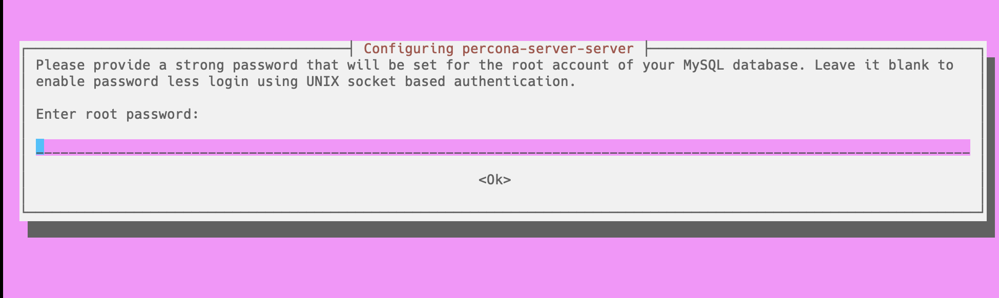
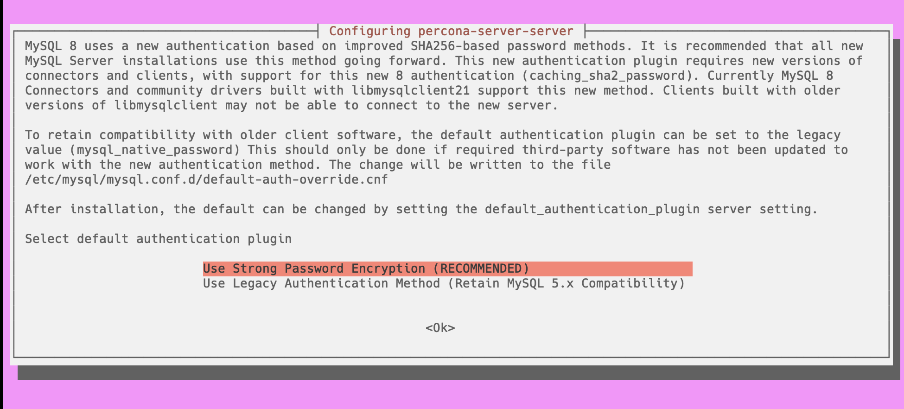

Percona Server for MySQL
Documentation
8.4.5-5 (May 29, 2025)
Percona Server for MySQL 8.4 - Documentation¶
This documentation is for the latest release: Percona Server for MySQL 8.4.5-5 (Release Notes).
Percona Server for MySQL is a freely available, fully compatible, enhanced, and open source drop-in replacement for any MySQL database. It provides superior and optimized performance, greater scalability, and availability, enhanced backups, increased visibility and instrumentation.
Thousands of enterprises trust Percona Server for MySQL to provide better performance and concurrency for their most demanding workloads.
For Monitoring and Management¶
Percona Monitoring and Management (PMM )monitors and provides actionable performance data for MySQL variants, including Percona Server for MySQL, Percona XtraDB Cluster, Oracle MySQL Community Edition, Oracle MySQL Enterprise Edition, and MariaDB. PMM captures metrics and data for the InnoDB, XtraDB, and MyRocks storage engines, and has specialized dashboards for specific engine details.
Install PMM and connect your MySQL instances to it.
Review Get more help for ways that we can work with you.
Percona Server for MySQL PRO
Percona Server for MySQL Pro¶
Percona Server for MySQL Pro includes the capabilities that are typically requested by large enterprises. Percona Server for MySQL Pro contains packages created and tested by Percona. These packages are supported only for Percona Customers with a subscription.
Capabilities¶
The following capabilities have been tested for 8.4.5-5 and are available in Percona Server for MySQL Pro:
| Name | Available since | Description |
|---|---|---|
| Available on Amazon Linux 2023 | 8.4.4 | Amazon Linux 2023 is a purpose-built Linux distribution optimized for AWS. It’s designed for performance, security, and seamless integration with the broader AWS ecosystem. We support both AMD64 and ARM64 versions of Amazon Linux 2023. |
| FIPS compliance | 8.4.0 | FIPS compliance enables all commercial cloud service providers who want to sell and increase their presence for US government entities. |
What’s in it for you?¶
- Save on deploying and maintaining build infrastructure as we do the build and testing for you
- Longer support for older versions of operating systems.
Install Percona Server for MySQL Pro
If you already use Percona Server for MySQL, you can
Upgrade to Percona Server for MySQL Pro
Community users can receive all these capabilities by building Percona Server for MySQL from the same source code.
Install Percona Server for MySQL Pro
Install Percona Server for MySQL Pro¶
Percona Server for MySQL Pro includes the capabilities that are typically requested by large enterprises. Percona Server for MySQL Pro contains packages created and tested by Percona. These packages are supported only for Percona Customers with a subscription.
Review Get more help for ways that we can work with you.
This document provides guidelines how to install Pro packages of Percona Server for MySQL from Percona repositories. Check files in packages built for Percona Server for MySQL Pro
Version changes¶
Percona Server for MySQL 8.4.4-4 Pro build is available for the Amazon Linux 2023 (AL2023) platform. We support both AMD64 and ARM64 versions of Amazon Linux 2023.
Procedure¶
-
Request the access to the pro repository from Percona Support. You will receive the client ID and the access token which you use when downloading the packages.
-
Configure the repository and install Percona Server for MySQL packages
-
Download the Percona
gpgkey:$ wget https://github.com/percona/percona-repositories/raw/main/deb/percona-keyring.gpg -
Add the Percona
gpgkey totrusted.gpg.ddirectory:$ sudo cp percona-keyring.gpg /etc/apt/trusted.gpg.d/ -
Create the
/etc/apt/sources.list.d/psmysql-pro.listconfiguration file with the following contents with your [CLIENTID] and [TOKEN].To get the
OPERATING_SYSTEMvalue, runlsb_release -sc./etc/apt/sources.list.d/psmysql-pro.listdeb http://repo.percona.com/private/[CLIENTID]-[TOKEN]/ps-84-pro/apt/ OPERATING_SYSTEM main -
Update the local cache
$ sudo apt update -
Install Percona Server for MySQL packages
$ sudo apt install -y percona-server-server-proInstall other required packages. Check files in the DEB package built for Percona Server for MySQL 8.4.
-
Create the
/etc/yum.repos.d/psmysql-pro.repoconfiguration file with the following contents with your [CLIENTID] and [TOKEN]./etc/yum.repos.d/psmysql-pro.repo[ps-8.4-pro] name=PS_8.4_PRO baseurl=http://repo.percona.com/private/[CLIENTID]-[TOKEN]/ps-84-pro/yum/release/$releasever/RPMS/x86_64 enabled=1 gpgkey = https://repo.percona.com/yum/PERCONA-PACKAGING-KEY -
Install Percona Server for MySQL packages
$ sudo yum install -y percona-server-server-proInstall other required packages. Check files in the DEB package built for Percona Server for MySQL 8.4.
-
-
Start the server
$ sudo systemctl start mysql
Next step¶
Files in packages built for Percona Server for MySQL Pro¶
Percona Server for MySQL Pro includes the capabilities that are typically requested by large enterprises. Percona Server for MySQL Pro contains packages created and tested by Percona. These packages are supported only for Percona Customers with a subscription.
Files in the DEB package¶
| Package | Contains |
|---|---|
| percona-server-server-pro | The database server itself, the mysqld binary and associated files. |
| percona-server-pro-common | The files common to the server and client. |
| percona-server-client-pro | The command line client. |
| percona-server-test-pro | The database test suite. |
| percona-server-pro-source | The server source. |
| percona-mysql-router-pro | The mysql router. |
| percona-server-rocksdb-pro | The files for rocksdb installation. |
| percona-server-pro-dbg | The debug symbols. |
Files in the RPM package¶
| Package | Contains |
|---|---|
| percona-server-server-pro | The database server itself, the mysqld binary and associated files. |
| percona-server-client-pro | The command line client. |
| percona-server-test-pro | The database test suite. |
| percona-server-rocksdb-pro | The files for rocksdb installation. |
| percona-mysql-router-pro | The mysql router. |
| percona-server-shared-pro | Client shared library. |
| percona-server-pro-debuginfo | The debug symbols. |
| percona-server-devel-pro | Header files needed to compile software using the client library. |
Next steps¶
Pro build features
FIPS compliance¶
Percona Server for MySQL Pro includes the capabilities that are typically requested by large enterprises. Percona Server for MySQL Pro contains packages created and tested by Percona. These packages are supported only for Percona Customers with a subscription.
The Federal Information Processing Standards (FIPS) are a set of U.S. government standards that ensure the security of computer systems for non-military government agencies and contractors. These standards specify how to perform cryptographic operations, such as encryption, hashing, and digital signatures. FIPS mode is a mode of operation that enforces these standards and rejects any non-compliant algorithms or parameters.
Percona Server for MySQL implements the same level of FIPS support as MySQL. Percona Server for MySQL can run in FIPS mode if a FIPS-enabled OpenSSL library and FIPS Object Module are available at runtime or if compiled using a FIPS-validated version of OpenSSL. You can also receive this functionality by building Percona Server for MySQL from source code.
Prerequisites¶
To prepare Percona Server for MySQL for FIPS certification, do the following:
-
Check that your operating system includes FIPS pre-approved OpenSSL library in version 3.0.x or higher. The following distributions includes FIPS pre-approved OpenSSL library in version 3.0.x or higher:
-
RedHat Enterprise Linux 9 and derivatives
-
Oracle Linux 9
The following distributions also includes OpenSSL library in version 3.0.x but do not have FIPS-approved crypto provider installed by default (you can build the crypto provider from the source for testing):
-
Debian 12
-
Ubuntu 22.04 Pro (the OpenSSL FIPS 140-3 certification is under implementation)
Note
If you enable FIPS on Ubuntu Pro with
$ sudo pro enable fips-updatesand then disable FIPS with$ sudo pro disable fips-updates, Percona Server for MySQL may stop operating properly. For example, if you disable FIPS on Ubuntu Pro with$ sudo pro disable fips-updatesand enable the FIPS mode on Percona Server withssl-fips-mode=ON, Percona Server may not load the SSL certificate.
-
-
Deploy Percona Server for MySQL from the Pro build, which is built and tested on operating systems with FIPS pre-approved OpenSSL packages.
The FIPS mode variables¶
Percona Server for MySQL uses the same variables and values as MySQL. Percona Server for MySQL enables control of FIPS mode on the server side and the client side:
-
The
ssl_fips_modesystem variable shows whether the server operates in FIPS mode. This variable is disabled by default.The
ssl_fips_modesystem variable has these values:0- disables FIPS mode1- enables FIPS mode. The exact behavior of the enabled FIPS mode depends on the OpenSSL version. The server only specifies the FIPS value to OpenSSL.2- enablesstrictFIPS mode. This value provides more restrictions than the1value. The exact behavior of thestrictFIPS mode depends on the OpenSSL version. The server only specifies the FIPS value to OpenSSL.
-
The
--ssl-fips-modeclient/server option controls whether a given client operates in FIPS mode. This setting does not change the server setting. This option is disabled by default.The
--ssl-fips-modeclient/server option has these values:OFF- disables FIPS modeON- enables FIPS mode. The exact behavior of the enabled FIPS mode depends on the OpenSSL version. The server only specifies the FIPS value to OpenSSL.STRICT- enablesstrictFIPS mode. This value provides more restrictions than theONvalue. The exact behavior of thestrictFIPS mode depends on the OpenSSL version. The server only specifies the FIPS value to OpenSSL.
The server operation in FIPS mode does not depend on which crypto module (regular or FIPS-approved) is set as the default in the OpenSSL configuration file. The server always respects the value of
--ssl-fips-modeserver command line option (OFF,ON, orSTRICT). Thessl_fips_modeglobal system variable is read-only and cannot be changed at runtime.
Enable the FIPS mode¶
To enable the FIPS mode, pass --ssl-fips-mode=ON or --ssl-fips-mode=STRICT to mysqld as a command line argument or add ssl-fips-mode=ON or --ssl-fips-mode=STRICT to the configuration file. Ignore the warning that the --ssl-fips-mode client/server option is deprecated.
Check that FIPS mode is enabled¶
To ensure that the FIPS mode is enabled, do the following:
-
Pass
--log-error-verbosity=3to mysqld as a command line argument or addlog-error-verbosity=3to the configuration file. -
Check that the error log contains the following message:
A FIPS-approved version of the OpenSSL cryptographic library has been detected in the operating system with a properly configured FIPS module available for loading. Percona Server for MySQL will load this module and run in FIPS mode.
Next steps¶
Install Percona Server for MySQL Pro
If you already use Percona Server for MySQL, you can
Upgrade to Percona Server for MySQL Pro¶
Percona Server for MySQL Pro includes the capabilities that are typically requested by large enterprises. Percona Server for MySQL Pro contains packages created and tested by Percona. These packages are supported only for Percona Customers with a subscription.
This document provides instructions on upgrading from Percona Server for MySQL to Percona Server for MySQL Pro.
Preconditions¶
Request the access to the pro repository from Percona Support. You will receive the client ID and the access token which you use when downloading the packages.
Check files in packages built for Percona Server for MySQL Pro
Procedure¶
-
Configure the repository
-
Create the
/etc/apt/sources.list.d/psmysql-pro.listconfiguration file with the following contentsTo get the
OPERATING_SYSTEMvalue, runlsb_release -sc./etc/apt/sources.list.d/psmysql-pro.listdeb http://repo.percona.com/private/[CLIENTID]-[TOKEN]/ps-84-pro/apt/ OPERATING_SYSTEM main -
Update the local cache
$ sudo apt update
Create the
/etc/yum.repos.d/psmysql-pro.repoconfiguration file with the following contents/etc/yum.repos.d/psmysql-pro.repo[ps-8.4-pro] name=PS_8.4_PRO baseurl=http://repo.percona.com/private/[CLIENTID]-[TOKEN]/ps-84-pro/yum/main/$releasever/RPMS/x86_64 enabled=1 gpgkey = https://repo.percona.com/yum/PERCONA-PACKAGING-KEY -
-
Stop the
mysqlserver$ sudo systemctl stop mysql -
Install Percona Server for MySQL Pro packages
$ sudo apt install -y percona-server-server-proInstall other required packages. Check files in the DEB package built for Percona Server for MySQL 8.4.
$ sudo yum install --allowerasing percona-server-server-proInstall other required packages. Check files in the DEB package built for Percona Server for MySQL 8.4.
-
Start the server
$ sudo systemct start mysql
Note
On Debian 12, you may receive the following warning after running systemct commands:
Warning: The unit file, source configuration file or drop-ins of mysql.service changed on disk. Run 'systemctl daemon-reload' to reload units.
Run the following command to reload units:
$ sudo systemctl daemon-reload
Downgrade from Percona Server for MySQL Pro¶
If you want to downgrade from Percona Server for MySQL Pro to the same version of Percona Server for MySQL, do the following:
-
Set up the Percona Server for MySQL 8.4 repository
$ sudo percona-release setup ps84 -
Stop the
mysqlserver.$ sudo systemctl stop mysql -
Install the server package
$ sudo apt install percona-server-serverInstall other required packages. Check files in the DEB package built for Percona Server for MySQL 8.4.
-
Start the
mysqlserver$ sudo systemctl start mysql
Note
On Debian 12, if you want to remove the Percona Server for MySQL after the downgrade, you must stop the server manually. This behavior will be fixed in future releases.
$ sudo systemctl stop mysql
-
Set up the Percona Server for MySQL 8.4 repository
$ sudo percona-release setup ps84 -
Stop the
mysqlserver.$ sudo systemctl stop mysql -
Install the server package
$ sudo yum --allowerasing install percona-server-serverInstall other required packages. Check files in the RPM package built for Percona Server for MySQL 8.4.
-
Start the
mysqlserver$ sudo systemctl start mysql
Get help from Percona¶
Our documentation guides are packed with information, but they can’t cover everything you need to know about Percona Server for MySQL. They also won’t cover every scenario you might come across. Don’t be afraid to try things out and ask questions when you get stuck.
Percona’s Community Forum¶
Be a part of a space where you can tap into a wealth of knowledge from other database enthusiasts and experts who work with Percona’s software every day. While our service is entirely free, keep in mind that response times can vary depending on the complexity of the question. You are engaging with people who genuinely love solving database challenges.
We recommend visiting our Community Forum. It’s an excellent place for discussions, technical insights, and support around Percona database software. If you’re new and feeling a bit unsure, our FAQ and Guide for New Users ease you in.
If you have thoughts, feedback, or ideas, the community team would like to hear from you at Any ideas on how to make the forum better?. We’re always excited to connect and improve everyone’s experience.
Percona experts¶
Percona experts bring years of experience in tackling tough database performance issues and design challenges.
We understand your challenges when managing complex database environments. That’s why we offer various services to help you simplify your operations and achieve your goals.
| Service | Description |
|---|---|
| 24/7 Expert Support | Our dedicated team of database experts is available 24/7 to assist you with any database issues. We provide flexible support plans tailored to your specific needs. |
| Hands-On Database Management | Our managed services team can take over the day-to-day management of your database infrastructure, freeing up your time to focus on other priorities. |
| Expert Consulting | Our experienced consultants provide guidance on database topics like architecture design, migration planning, performance optimization, and security best practices. |
| Comprehensive Training | Our training programs help your team develop skills to manage databases effectively, offering virtual and in-person courses. |
We’re here to help you every step of the way. Whether you need a quick fix or a long-term partnership, we’re ready to provide your expertise and support.
Release notes
Percona Server for MySQL 8.4 release notes index¶
Percona Server for MySQL 8.4.5-5 (2025-05-29)¶
Get started with Quickstart Guide for Percona Server for MySQL.
Percona Server for MySQL 8.4.5-5 includes all the features and bug fixes available in the MySQL 8.4.5 Community Edition in addition to enterprise-grade features developed by Percona.
Release highlights¶
Percona Server for MySQL 8.4.5-5¶
-
Updates the C++ level of the KMPI library to enhance error handling capabilities.
-
Improves optimizer behavior by restoring correct handling of const tables in
test_quick_select(). A MySQL Upstream refactor (commit 9a13c1c) removed theQEP_TABdependency, causingget_quick_record_count()to no longer pass const table information. This could lead to suboptimal range scan boundaries. The applied patch resolves the issue by explicitly passingconst_tablestotest_quick_select(), ensuring consistent behavior with the pre-refactor logic.
The latest MyRocks storage engine incorporates code based on RocksDB version 9.3.1. Percona has applied minor modifications to the original RocksDB codebase. Check the list of modifications at https://github.com/percona/rocksdb/.
This release adds the following changes to the list of MyRocks variables.
Adds new MyRocks variables
--rocksdb_bulk_load_compression_parallel_threads--rocksdb_bulk_load_enable_unique_key_check--rocksdb_debug_skip_bloom_filter_check_on_iterator_bounds--rocksdb_enable_udt_in_mem--rocksdb_invalid_create_option_action--rocksdb_io_error_action--rocksdb_table_stats_skip_system_cf--rocksdb_use_io_uring--rocksdb_enable_instant_ddl--rocksdb_enable_instant_ddl_for_append_column--rocksdb_enable_instant_ddl_for_column_default_changes--rocksdb_enable_instant_ddl_for_drop_index_changes--rocksdb_enable_instant_ddl_for_table_comment_changes--rocksdb-bulk-load-compression-parallel-threads--rocksdb-bulk-load-enable-unique-key-check--rocksdb-debug-skip-bloom-filter-check-on-iterator-bounds
Changes default values of MyRocks variables
-
--rocksdb_disable_instant_ddl- the default value is changed fromONtoOFF. -
--rocksdb_file_checksums- the data type is changed fromBooleantoENUM. Also, the default value is changed fromOFFtoCHECKSUMS_OFF. -
--rocksdb_compaction_readahead_size- the default value is changed from0(zero) to2097152.
Deprecates MyRocks variable
--rocksdb_disable_instant_ddl- this variable is being deprecated and is expected to be removed in a future release.
Removes MyRocks variables
--rocksdb-access-hint-on-compaction-start--rocksdb_large_prefix--rocksdb_strict_collation_check--rocksdb_strict_collation_exceptions
MySQL 8.4.5¶
Improvements and bug fixes introduced by Oracle for MySQL 8.4.5 and included in Percona Server for MySQL are the following:
-
Fixed an issue where
CHECK TABLEsometimes incorrectly reported that spatial indexes were corrupted. (Bug #37286473) -
Fixed an issue in InnoDB redo log recovery to improve data safety after a crash. (Bug #37061960)
-
Fixed an issue where reading
index_idvalues could lead to incorrect behavior with indexes. (Bug #36993445, Bug #37709706) -
Fixed a bug related to the
lower_case_table_namessetting that caused inconsistent behavior with table names on different systems. (Bug #32288105) -
Fixed a bug where
mysqldumpdid not properly escape certain special characters in its output. (Bug #37540722, Bug #37709163) -
The
fprintf_string()function inmysqldumpdid not use the correct quote character for escaping strings. (Bug #37607195)
Find the complete list of bug fixes and changes in the MySQL 8.4.5 release notes.
Improvements¶
-
PS-9561: Updates the C++ level of the KMPI library to enhance error handling capabilities.
-
PS-9810: Updates the list of MyRocks variables. You can find the list of variables in MyRocks server variables.
Bug Fixes¶
-
PS-9390: In some cases, using
JSON_TABLEinside anINorEXISTSsubquery caused incorrect results. This happened when the subquery referred to a table from the main query, and a semijoin optimization was applied. Percona merged the fix from MySQL. -
PS-9609: The
audit_log_filterplugin could not be installed when Percona Server was usingcomponent_keyring_kmip. -
PS-9628: The
binlog_encryptiondid not work withcomponent_keyring_kmip. -
PS-9703: In-place
ALTER TABLEoperations that internally rebuilt tables sometimes resulted in lost rows if a concurrent purge happened. -
PS-9719: When
binlog_transaction_dependency_trackingwas changed during a high-load workload, MySQL encountered a segmentation fault. -
PS-9723: MySQL server exited in
xpl::Ssl_context::~Ssl_context()under heavy load ofALTER INSTANCE RELOAD TLSqueries. -
PS-9753: Applied an optimizer patch from Enhanced MySQL to restore correct handling of const tables in
test_quick_select(). -
PS-9764: Added clang-20 to Azure Pipelines and fixed clang-20 compilation issues.
-
PS-9777: The
binlog_utils_udfplugin did not handlebinlog.indexentries the same as the Percona Server code did. -
PS-9780: The maximum size of
audit_log_filterrule was increased from 1024 characters to 16 000 characters. -
PS-9661: The encryption of system tablespaces using
component_keyring_kmipfailed.
Additional resources¶
-
Install Percona Server for MySQL 8.4
-
Download product binaries, packages, and tarballs at Percona Software Downloads
-
For training, contact Percona Training - Start learning now
Percona Server for MySQL 8.4.4-4 (2025-03-18)¶
Get started with Quickstart Guide for Percona Server for MySQL.
Percona Server for MySQL 8.4.4-4 includes all the features and bug fixes available in the MySQL 8.4.4 Community Edition in addition to enterprise-grade features developed by Percona.
Release highlights¶
Percona Server for MySQL 8.4.4-4¶
-
Improves the Data masking performance by introducing an internal term cache. The new cache speeds up lookups for
gen_blocklist()andgen_dictionary()functions by storing dictionary data in memory. However, if the dictionary table is modified directly (outside of the proper functions), the cache may become out of sync. To fix this, use thenew masking_dictionaries_flush()function.Changes also affect row-based replication: dictionary changes on the source server are replicated, but the term cache on the replica doesn’t update immediately. To address this, a new system variable,
component_masking_functions.dictionaries_flush_interval_seconds, can be set to automatically refresh the cache at specified intervals, helping replicas stay in sync.Find more detailed information in the Data masking overview and in the Data masking component functions.
-
Improves the behavior of
audit_log_filter_set_userto support wildcards in the hostname.
MySQL 8.4.4¶
Improvements and bug fixes introduced by Oracle for MySQL 8.4.4 and included in Percona Server for MySQL are the following:
-
Fixed an assertion in debug builds where certain IO buffer serializations caused system hangs. (Bug #37139618)
-
Resolved a failure when dropping the primary key and adding a new
AUTO_INCREMENTcolumn as the primary key in descending order using theINPLACEalgorithm resulted in failure. (Bug #36658450) -
Fixed incorrect results, including missing rows, in queries that used a descending primary key with the
index_mergeoptimization. (Bug #106207, Bug #33767814) -
Addressed a replication channel issue where MySQL failed to stop the channel properly when large transactions were being processed, and
STOP REPLICAwas requested. This issue also prevented graceful server shutdown, requiring process termination or system restart. (Bug #115966, Bug #37008345)
Find the complete list of bug fixes and changes in the MySQL 8.4.4 release notes.
Improvements¶
-
PS-9148: Extends the Data masking with new additions from MySQL 8.3.0 Enterprise Data Masking and De-Identification Component Variables.
-
PS-9024: Improves the behavior of
audit_log_filter_set_userto support wildcards in the hostname.
Bug fixes¶
-
PS-9391: The replication broke with the error
HA_ERR_KEY_NOT_FOUNDwhen theslave_rows_search_algorithmswere set toINDEX_SCAN,HASH_SCAN. -
PS-9416: The error messages from the Key Management Interoperability Protocol (KMIP) component were not descriptive.
-
PS-9509: Percona Server stopped tracking the
global_connection_memorywhen usingthread_handling='pool-of-threads'. -
PS-9537: When building a new component that used mysql_command_xxx services (such as
mysql_command_factory,mysql_command_query, etc.), it was impossible to reuse the same connection to run multiple queries. This issue was observed withSELECTqueries, but it may also apply toINSERT,UPDATE, andDELETEoperations. -
PS-9542: Added Clang-19 to Azure pipelines, and fixed the clang-19 compilation issues.
-
PS-9551: When building a new component that used mysql_command_xxx services (such as
mysql_command_factory,mysql_command_query, etc.), a server exit was encountered when setting theMYSQL_COMMAND_LOCAL_THD_HANDLEoption. -
PS-9611: An assertion failure occurred during server shutdown:
!is_set() || m_can_overwrite_status. -
PS-9612: Percona Server build failed if more than 128 threads were available. Percona merged the fix from MariaDB.
-
PS-9654: There was an incorrect usage of
setup_component_customized.incin the MySQL Test Runner (MTR) tests. -
PS-9033: The
audit_log_filterplugin did not register remote accesses. -
PS-9464: Some queries that used hash antijoins returned incorrect results when the hash table did not fit in the join buffer and spilled to the disk. (The query triggering the issue specified LEFT JOIN, which was transformed internally from a left outer join to an antijoin.) Percona merged the fix from MySQL (Bug #116334, Bug #37161583).
-
PS-9614: The
Pool-of-Threadstimer thread failed to start ifmysqldwas started with--daemonize. -
PS-9668: The server exited when executing
LOCK TABLES FOR BACKUPafter audit logs were enabled.
Additional resources¶
-
Install Percona Server for MySQL 8.4
-
Download product binaries, packages, and tarballs at Percona Software Downloads
-
For training, contact Percona Training - Start learning now
Percona Server for MySQL 8.4.3-3 (2024-12-18)¶
Get started with Quickstart Guide for Percona Server for MySQL.
Percona Server for MySQL 8.4.3-3 includes all the features and bug fixes available in the MySQL 8.4.3 Community Edition in addition to enterprise-grade features developed by Percona.
Release highlights¶
Improvements and bug fixes introduced by Oracle for MySQL 8.4.3 and included in Percona Server for MySQL are the following:
-
The query
SELECT * FROM sys.innodb_lock_waits;now fetches only two locks per wait, instead of scanning all locks twice, improving performance under heavy load. Additionally, primary keys have been added toDATA_LOCKSandDATA_LOCK_WAITS. (Bug #100537, Bug #31763497) -
Changes in MySQL 8.0.33 caused performance degradation for queries using joins on
InnoDBtables due to refactoring of functions that were previously inline. -
The server crashed when it tried to update columns altered with
NULLas the default value using theINSTANTalgorithm. -
The server could crash during
DELETEorUPDATEoperations if a column was dropped using theINSTANTalgorithm. -
Importing a table created under a different
sql_modesometimes led to schema mismatches, risking data corruption in secondary indexes. The fix now includes integrity checks on the imported tablespace. -
Rebuilding tables with secondary indexes required more file
I/Ooperations compared to MySQL 8.0.26, which slowed down query performance.
Find the complete list of bug fixes and changes in the MySQL 8.4.3 release notes.
Bug fixes¶
-
PS-9382: After an upgrade, the telemetry daemon ran continuously. The telemetry daemon was manually stopped and the service was disabled. Adding
percona_telemetry_disable=1to the configuration file and restarting MySQL led to the server becoming unresponsive and required a forced termination. -
PS-9453: The
percona_telemetrytool caused a long wait onCOND_thd_listif the root user is absent.
Additional resources¶
-
Install Percona Server for MySQL 8.4
-
Download product binaries, packages, and tarballs at Percona Software Downloads
-
For training, contact Percona Training - Start learning now
Percona Server for MySQL 8.4.2-2 (2024-11-04)¶
Get started with Quickstart Guide for Percona Server for MySQL.
Percona Server for MySQL 8.4.2-2 includes all the features and bug fixes available in the MySQL 8.4 Community Edition in addition to enterprise-grade features developed by Percona.
Release highlights¶
Improvements and bug fixes introduced by Oracle for MySQL 8.4.1 and 8.4.2 and included in Percona Server for MySQL are the following:
-
MySQL stopped unexpectedly during an UPDATE after an ALTER TABLE operation.
-
Shutting down the server after an XA START with an empty XA transaction caused it to stop unexpectedly.
-
Shutting down the replication applier or binlog applier during an empty XA transaction caused the system to stop unexpectedly.
-
The result from a spatial index with a column containing a spatial reference identifier (SRID) was empty. Using FORCE INDEX to scan this index caused an assertion error.
-
In some cases, after creating more than 8000 tables, the server failed to restart.
-
Startup tablespace file scanning performance was improved.
Find the complete list of bug fixes and changes in the MySQL 8.4.1 Release Notes and MySQL 8.4.2 Release Notes.
Bug fixes¶
-
PS-8057:
slow_query_log_filedoes not match the filename defined in my.cnf. -
PS-9144: Missing rows after running a null
ALTERwithALGORTITHM=INPLACE. -
PS-9214: An
ALTERtable online results in a “duplicate key” error on the primary key (only index). -
PS-9306: The following MySQL versions unexpectedly exit if the database has more than 10K tables:
-
8.0.38
-
8.4.1
-
9.0.0
-
-
PS-9314: Using a JSON_TABLE in Percona Server for MySQL 8.0.36 causes a signal 11 error.
-
PS-9286: The KMIP component left keys in a
pre-activestate. -
PS-9384: A race condition between
dict_stats_threadand the cost model initialization cause sporadic exits in Jenkins on start up.
Additional resources¶
-
Install Percona Server for MySQL 8.4
-
Download product binaries, packages, and tarballs at Percona Software Downloads
-
For training, contact Percona Training - Start learning now
Percona Server for MySQL 8.4.1¶
Due to a critical fix, MySQL Community Server 8.4.2 was released shortly (22 days later) after MySQL Community Server 8.4.1. Percona has skipped the release of Percona Server for MySQL 8.4.1. Percona Server for MySQL 8.4.2-2 contains all bug fixes and contents from MySQL Community Server 8.4.1 and MySQL Community Server 8.4.2.
Percona Server for MySQL 8.4.0-1 (2024-08-28)¶
Get started with Quickstart Guide for Percona Server for MySQL.
Percona Server for MySQL 8.4.0-1 includes all the features and bug fixes available in the MySQL 8.4 Community Edition in addition to enterprise-grade features developed by Percona.
Release highlights¶
In MySQL 8.0, the release model changed to include new features in patch releases, allowing MySQL to introduce new features more frequently. However, this approach was complex for projects and applications needing only critical patches with minimal changes.
MySQL then moved to a versioning model with two options: Innovation releases and Long-Term Support (LTS) releases. Both types are production-ready.
Innovation releases offer access to the latest features, making them ideal for dynamic environments with strong automated testing and continuous integration.
Changes were made to each Innovation release that are now included in the 8.4 (LTS) release. You should review the Innovation release notes for details.
LTS releases are more suitable for stable, established environments where minimal changes are needed. These releases include only essential fixes, reducing the risk of changes in the database software’s behavior.
This 8.4.0-1 release is the first 8.4 LTS series.
Improvements and bug fixes introduced by Oracle for MySQL 8.4 and included in Percona Server for MySQL are the following:
-
The MySQL native password has been deprecated and is no longer loaded by default. However, it can be loaded if needed.
-
The clone plugin allows cloning between different point releases within the same series. You only must match the major and minor version numbers for cloning.
-
GTIDs (Global Transaction Identifiers) can now handle groups of transactions, which helps speed up processing.
-
mysqldumpcan now create output for older versions of MySQL. -
Automatic updates for histograms. When enabled, the histogram updates automatically whenever
ANALYZE TABLEis run on the table. InnoDB’s automatic recalculation of persistent statistics also updates the histogram when automatic updates are enabled. -
Adds a new privilege called FLUSH_PRIVILEGES. This privilege explicitly allows the use of FLUSH PRIVILEGES statements. Unlike the RELOAD privilege, FLUSH_PRIVILEGES only applies to FLUSH PRIVILEGES statements.
-
The terms “MASTER” and “SLAVE” in replication commands are being replaced with “SOURCE” and “REPLICA”. This change is part of an ongoing effort to use more inclusive language.
-
Removed the the
mysqlpumputility. -
Removed the
mysql_upgradeutility. -
The default values for specific InnoDB server system variables have changed. See What is new in MySQL 8.4 since 8.0 for details.
Find the complete list of bug fixes and changes in the MySQL 8.4 Release Notes.’
New features¶
- PS-9233: Adds the UUID_VX component which provides a set of functions for generating and working with various versions of the Universally Unique Identifier (UUID).
Improvements¶
- PS-9302: Changed underlying internal data structure used by the binlog transaction dependency tracking in
WRITESETmode (MySQL 8.4 removed theCOMMIT_ORDERmode). Instead ofstd::map(an RB-tree) we now usestd::unordered_map(a hash) which gives much better performance for lookup operations. This change showed an up to 17% Queries per second (QPS) increase in theoltp_inlist_updateworkload.
Bug fixes¶
-
PS-9092: There were data inconsistencies during a high rate of page split/merge.
-
PS-9121: MySQL exited when InnoDB failed to update a spatial index.
-
PS-9151: Percona server 8.0 build failed on CentOS 7 with
-DWITH_SSL=openssl11. -
PS-9219: While converting the charset collation in a table, MySQL converted the date and time data types columns in the
.ibdfile. However, thecollation_idin the.ibdfile did not align with that of the data dictionary. -
PS-9155: The server exited during the execution of the complicated query with 9 CTEs.
-
PS-9235: Keyring vault failed to work with
binlog_rotate_encryption_master_key_at_startup.
Deprecation¶
- PS-8963: The
SEQUENCE_TABLE()function is deprecated and may be removed in a future release. We recommend that you usePERCONA_SEQUENCE_TABLE()instead. To maintain compatibility with existing third-party software,SEQUENCE_TABLEis no longer a reserved term and can be used as a regular identifier. Find more information in PERCONA_SEQUENCE_TABLE(n) function
Packaging notes¶
Percona Server for MySQL 8.4.0-1 is compatible with Ubuntu 24.04.
Additional resources¶
-
Install Percona Server for MySQL 8.4
-
Download product binaries, packages, and tarballs at Percona Software Downloads
-
For training, contact Percona Training - Start learning now
Features
Adaptive network buffers¶
To find the buffer size of the current connection, use the network_buffer_length status variable. Add SHOW GLOBAL to review the cumulative buffer sizes for all connections. This variable can help to estimate the maximum size of the network buffer’s overhead.
Network buffers grow towards the max_allowed_packet size and do not shrink until the connection is terminated. For example, if the connections are selected at random from the pool, an occasional big query eventually increases the buffers of all connections. The combination of max_allowed packet set to a value between 64MB to 128MB and the connection number between 256 to 1024 can create a large memory overhead.
Percona Server for MySQL implemented the net_buffer_shrink_interval variable to solve this issue. The default value is 0 (zero). If you set the value higher than 0, Percona Server records the network buffer’s maximum use size for the number of seconds set by net_buffer_shrink_interval. When the next interval starts, the network buffer is set to the recorded size. This action removes spikes in the buffer size.
You can achieve similar results by disconnecting and reconnecting the TCP connections, but this solution is a heavier process. This process disconnects and reconnects connections with small buffers.
net_buffer_shrink_interval¶
| Option | Description |
|---|---|
| Command-line: | –net-buffer-shrink-interval=# |
| Scope: | Global |
| Dynamic: | Yes |
| Data type: | integer |
| Default value: | 0 |
The interval is measured in seconds. The default value is 0, which disables the functionality. The minimum value is 0, and the maximum value is 31536000.
Audit Log Filter
Audit Log Filter overview¶
The Audit Log Filter component allows you to monitor, log, and block a connection or query actively executed on the selected server.
Enabling the component produces a log file that contains a record of server activity. The log file has information on connections and databases accessed by that connection.
The component uses the mysql system database to store filter and user account data. Set the audit_log_filter.database variable at server startup to select a different database.
The AUDIT_ADMIN privilege is required to enable users to manage the Audit Log Filter component.
Privileges¶
Define the privilege at runtime at the startup of the server. The associated Audit Log Filter privilege can be unavailable if the component is not enabled.
AUDIT_ADMIN¶
This privilege is defined by the server and enables the user to configure the component.
AUDIT_ABORT_EXEMPT¶
This privilege allows queries from a user account to always be executed. An abort item does not block them. This ability lets the user account regain access to a system if an audit is misconfigured. The query is logged due to the privilege. User accounts with the SYSTEM_USER privilege have the AUDIT_ABORT_EXEMPT privilege.
Audit Log Filter tables¶
The Audit Log Filter component uses mysql system database tables in the InnoDB storage engine. These tables store user account data and filter data. When you start the server, change the component’s database with the audit_log_filter.database variable.
The audit_log_filter table stores the definitions of the filters and has the following column definitions:
Column name |
Description |
|---|---|
| NAME | Name of the filter |
| FILTER | Definition of the filter linked to the name as a JSON value |
The audit_log_user table stores account data and has the following column definitions:
Column name |
Description |
|---|---|
| USER | The account name of the user |
| HOST | The account name of the host |
| FILTERNAME | The account filter name |
Install the Audit Log Filter¶
The plugin_dir system variable defines the component library location. If needed, at server startup, set the plugin_dir variable.
In the share directory, locate the audit_log_filter_linux_install.sql script.
At the time you run the script, you can select the database used to store the JSON filter tables.
- If the component is loaded, the installation script takes the database name from the
audit_log_filter.databasevariable - If the component is not loaded, but passes the
-D db_nameto the mysql client when the installation script runs, uses thedb_name. - If the component is not loaded and the
-Doption is not provided, the installation script creates the required tables in the default database namemysql.
You can also designate a different database with the audit_log_filter.database system variable. The database name cannot be NULL or exceed 64 characters. If the database name is invalid, the audit log filter tables are not found.
To install the component, run the following command:
mysql> INSTALL COMPONENT 'file://component_audit_log_filter';
Find more information in the INSTALL COMPONENT document.
To upgrade from audit_log_filter plugin in Percona Server 8.4 to component_audit_log_filter component in Percona Server 8.4, do the manual upgrade.
Review Get more help for ways that we can work with you.
Formats
Audit Log Filter file format overview¶
When an auditable event occurs, the component writes a record to the log file.
After the component starts, the first record lists the description of the server and the options at startup. After the first record, the auditable events are connections, disconnections, SQL statements executed, and so on. Statements within stored procedures or triggers are not logged, only the top-level statements.
If files are referenced by LOAD_DATA, the contents are not logged.
Set with the audit_log_filter.format system variable at startup. The available format types are the following;
| Format Type | Command | Description |
|---|---|---|
| XML (new style) | audit_log_filter.format=NEW |
The default format |
| XML (old style) | audit_log_filter.format=OLD |
The original version of the XML format |
| JSON | audit_log_filter.format=JSON |
Files written as a JSON array |
By default, the file contents in the new-style XML format are not compressed or encrypted.
Changing the audit_log_filter.format, you should also change
the audit_log_filter.file name. For example, changing the audit_log_filter.format
to JSON, change the audit_log_filter.file to audit.json. If you don’t change
the audit_log_filter.file name, then all audit log filter files have the same
base name and you won’t be able to easily find when the format changed.
Audit Log Filter format - XML (new style)¶
The filter writes the audit log filter file in XML. The XML file uses UTF-8.
The
For each new file, the Audit Log Filter component writes the XML declaration and the root element tag. The component writes the closing root element when closing the file. If the file is open, this closing element is not available.
<?xml version="1.0" encoding="utf-8"?>
<AUDIT>
<AUDIT_RECORD>
<NAME>Audit</NAME>
<RECORD_ID>0_2023-03-29T11:11:43</RECORD_ID>
<TIMESTAMP>2023-03-29T11:11:43</TIMESTAMP>
<SERVER_ID>1</SERVER_ID>
</AUDIT_RECORD>
<AUDIT_RECORD>
<NAME>Command Start</NAME>
<RECORD_ID>1_2023-03-29T11:11:45</RECORD_ID>
<TIMESTAMP>2023-03-29T11:11:45</TIMESTAMP>
<STATUS>0</STATUS>
<CONNECTION_ID>1</CONNECTION_ID>
<COMMAND_CLASS>query</COMMAND_CLASS>
</AUDIT_RECORD>
<AUDIT_RECORD>
<NAME>Query</NAME>
<RECORD_ID>2_2023-03-29T11:11:45</RECORD_ID>
<TIMESTAMP>2023-03-29T11:11:45</TIMESTAMP>
<COMMAND_CLASS>create_table</COMMAND_CLASS>
<CONNECTION_ID>11</CONNECTION_ID>
<HOST>localhost</HOST>
<IP></IP>
<USER>root[root] @ localhost []</USER>
<OS_LOGIN></OS_LOGIN>
<SQLTEXT>CREATE TABLE t1 (c1 INT)</SQLTEXT>
<STATUS>0</STATUS>
</AUDIT_RECORD>
<AUDIT_RECORD>
<NAME>Query Start</NAME>
<RECORD_ID>3_2023-03-29T11:11:45</RECORD_ID>
<TIMESTAMP>2023-03-29T11:11:45</TIMESTAMP>
<STATUS>0</STATUS>
<CONNECTION_ID>11</CONNECTION_ID>
<COMMAND_CLASS>create_table</COMMAND_CLASS>
<SQLTEXT>CREATE TABLE t1 (c1 INT)</SQLTEXT>
</AUDIT_RECORD>
<AUDIT_RECORD>
<NAME>Query</NAME>
<RECORD_ID>4_2023-03-29T11:11:45</RECORD_ID>
<TIMESTAMP>2023-03-29T11:11:45</TIMESTAMP>
<COMMAND_CLASS>create_table</COMMAND_CLASS>
<CONNECTION_ID>11</CONNECTION_ID>
<HOST>localhost</HOST>
<IP></IP>
<USER>root[root] @ localhost []</USER>
<OS_LOGIN></OS_LOGIN>
<SQLTEXT>CREATE TABLE t1 (c1 INT)</SQLTEXT>
<STATUS>0</STATUS>
</AUDIT_RECORD>
<AUDIT_RECORD>
<NAME>Command End</NAME>
<RECORD_ID>5_2023-03-29T11:11:45</RECORD_ID>
<TIMESTAMP>2023-03-29T11:11:45</TIMESTAMP>
<STATUS>0</STATUS>
<CONNECTION_ID>1</CONNECTION_ID>
<COMMAND_CLASS>query</COMMAND_CLASS>
</AUDIT_RECORD>
</AUDIT>
The order of the attributes within an
The attributes in every element are the following:
| Attribute Name | Description |
|---|---|
<NAME> |
The action that generated the audit record. |
<RECORD_ID> |
The <RECORD_ID> consists of a sequence number and a timestamp value. The sequence number is initialized when the component opens the audit log filter file. |
<TIMESTAMP> |
Displays the date and time when the audit event happened. |
The optional attributes are the following:
| Attribute Name | Description |
|---|---|
<COMMAND_CLASS> |
Contains the type of performed action. |
<CONNECTION_ID> |
Contains the client connection identifier. |
<CONNECTION_ATTRIBUTES> |
Contains the client connection attributes. Each attribute has a <NAME> and <VALUE> pair. |
<CONNECTION_TYPE> |
Contains the type of connection security. |
<DB> |
Contains the database name. |
<HOST> |
Contains the client’s hostname. |
<IP> |
Contains the client’s IP address. |
<MYSQL_VERSION> |
Contains the MySQL server version. |
<OS_LOGIN> |
Contains the user name used during an external authentication, for example, if the user is authenticated through an LDAP component. If the authentication component does not set a value or the user is authenticated using MySQL authentication, this value is empty. |
<OS_VERSION> |
Contains the server’s operating system. |
<PRIV_USER> |
Contains the user name used by the server when checking privileges. This name may be different than <USER>. |
<PROXY_USER> |
Contains the proxy user. If a proxy is not used, the value is empty. |
<SERVER_ID> |
Contains the server ID. |
<SQLTEXT> |
Contains the text of the SQL statement. |
<STARTUP_OPTIONS> |
Contains the startup options. These options may be provided by the command line or files. |
<STATUS> |
Contains the status of a command. A 0 (zero) is a success. A nonzero value is an error. |
<STATUS_CODE> |
Contains the status of a command, which either succeeds (0) or an error occurred (1). |
<TABLE> |
Contains the table name. |
<USER> |
Contains the user name from the client. This name may be different than <PRIV_USER>. |
<VERSION> |
Contains the audit log filter format. |
Audit Log Filter format - XML (old style)¶
The old style XML format uses <AUDIT> tag as the root element and adds the </AUDIT> tag when the file closes. Each audited event is contained in an
The order of the attributes within an
<?xml version="1.0" encoding="utf-8"?>
<AUDIT>
<AUDIT_RECORD
NAME="Audit"
RECORD_ID="0_2023-03-29T11:15:52"
TIMESTAMP="2023-03-29T11:15:52"
SERVER_ID="1"/>
<AUDIT_RECORD
NAME="Command Start"
RECORD_ID="1_2023-03-29T11:15:53"
TIMESTAMP="2023-03-29T11:15:53"
STATUS="0"
CONNECTION_ID="1"
COMMAND_CLASS="query"/>
<AUDIT_RECORD
NAME="Query"
RECORD_ID="2_2023-03-29T11:15:53"
TIMESTAMP="2023-03-29T11:15:53"
COMMAND_CLASS="create_table"
CONNECTION_ID="11"
HOST="localhost"
IP=""
USER="root[root] @ localhost []"
OS_LOGIN=""
SQLTEXT="CREATE TABLE t1 (c1 INT)"
STATUS="0"/>
<AUDIT_RECORD
NAME="Query Start"
RECORD_ID="3_2023-03-29T11:15:53"
TIMESTAMP="2023-03-29T11:15:53"
STATUS="0"
CONNECTION_ID="11"
COMMAND_CLASS="create_table"
SQLTEXT="CREATE TABLE t1 (c1 INT)"/>
<AUDIT_RECORD
NAME="Query Status End"
RECORD_ID="4_2023-03-29T11:15:53"
TIMESTAMP="2023-03-29T11:15:53"
STATUS="0"
CONNECTION_ID="11"
COMMAND_CLASS="create_table"
SQLTEXT="CREATE TABLE t1 (c1 INT)"/>
<AUDIT_RECORD
NAME="Query"
RECORD_ID="5_2023-03-29T11:15:53"
TIMESTAMP="2023-03-29T11:15:53"
COMMAND_CLASS="create_table"
CONNECTION_ID="11"
HOST="localhost"
IP=""
USER="root[root] @ localhost []"
OS_LOGIN=""
SQLTEXT="CREATE TABLE t1 (c1 INT)"
STATUS="0"/>
<AUDIT_RECORD
NAME="Command End"
RECORD_ID="6_2023-03-29T11:15:53"
TIMESTAMP="2023-03-29T11:15:53"
STATUS="0"
CONNECTION_ID="1"
COMMAND_CLASS="query"/>
</AUDIT>
The required attributes are the following:
Attribute Name |
Description |
|---|---|
| NAME | The action that generated the audit record. |
| RECORD_ID | The RECORD_ID consists of a sequence number and a timestamp value. The sequence number is initialized when the component opens the audit log filter file. |
| TIMESTAMP | Displays the date and time when the audit event happened. |
The optional attributes are the following:
Attribute Name |
Description |
|---|---|
| COMMAND_CLASS |
Type of action performed |
| CONNECTION_ID | Client connection identifier |
| CONNECTION_TYPE | Connection security type |
| DB | Database name |
| HOST | Client's hostname |
| IP | Client's IP address |
| MYSQL_VERSION | Server version |
| OS_LOGIN | The user name used during an external authentication, for example, if the user is authenticated through an LDAP component. If the authentication component does not set a value or the user is authenticated using MySQL authentication, this value is empty. |
| OS_VERSION | Server's operating system |
| PRIV_USER | The user name used by the server when checking privileges. This name may be different than USER. |
| PROXY_USER | The proxy user. If a proxy is not used, the value is empty. |
| SERVER_ID | Server Identifier |
| SQLTEXT | SQL statement text |
| STARTUP_OPTIONS | Server startup options, either command line or config files |
| STATUS | Command's status - a 0 (zero) is a success, a non-zero is an error |
| STATUS_CODE | A 0 (zero) is a success, a non-zero is an error |
| TABLE | Table name |
| USER | Client's user name - this name may be different than PRIV_USER. |
| VERSION | Format of audit log filter |
Audit Log Filter format - JSON¶
The JSON format has one top-level JSON array, which contain JSON objects with key-value pairs. These objects represent an event in the audit. Some pairs are listed in every audit record. The audit record type determines if other key-value pairs are listed. The order of the pairs within an audit record is not guaranteed. The value description may be truncated.
Certain statistics, such as query time and size, are only available in the JSON format and help detect activity outliers when analyzed.
[
{
"timestamp": "2023-03-29 11:17:03",
"id": 0,
"class": "audit",
"server_id": 1
},
{
"timestamp": "2023-03-29 11:17:05",
"id": 1,
"class": "command",
"event": "command_start",
"connection_id": 1,
"command_data": {
"name": "command_start",
"status": 0,
"command": "query"}
},
{
"timestamp": "2023-03-29 11:17:05",
"id": 2,
"class": "general",
"event": "log",
"connection_id": 11,
"account": { "user": "root[root] @ localhost []", "host": "localhost" },
"login": { "user": "root[root] @ localhost []", "os": "", "ip": "", "proxy": "" },
"general_data": {
"command": "Query",
"sql_command": "create_table",
"query": "CREATE TABLE t1 (c1 INT)",
"status": 0}
},
{
"timestamp": "2023-03-29 11:17:05",
"id": 3,
"class": "query",
"event": "query_start",
"connection_id": 11,
"query_data": {
"query": "CREATE TABLE t1 (c1 INT)",
"status": 0,
"sql_command": "create_table"}
},
{
"timestamp": "2023-03-29 11:17:05",
"id": 4,
"class": "query",
"event": "query_status_end",
"connection_id": 11,
"query_data": {
"query": "CREATE TABLE t1 (c1 INT)",
"status": 0,
"sql_command": "create_table"}
},
{
"timestamp": "2023-03-29 11:17:05",
"id": 5,
"class": "general",
"event": "status",
"connection_id": 11,
"account": { "user": "root[root] @ localhost []", "host": "localhost" },
"login": { "user": "root[root] @ localhost []", "os": "", "ip": "", "proxy": "" },
"general_data": {
"command": "Query",
"sql_command": "create_table",
"query": "CREATE TABLE t1 (c1 INT)",
"status": 0}
},
{
"timestamp": "2023-03-29 11:17:05",
"id": 6,
"class": "command",
"event": "command_end",
"connection_id": 1,
"command_data": {
"name": "command_end",
"status": 0,
"command": "query"}
}
]
The following fields are contained in each object:
timestampidclassevent
The possible attributes in a JSON object are the following:
| Name | Description |
|---|---|
class |
Defines the type of event |
account |
Defines the MySQL account associated with the event. |
connection_data |
Defines the client connection. |
connection_id |
Defines the client connection identifier |
event |
Defines a subclass of the event class |
general_data |
Defines the executed statement or command when the audit record has a class value of general. |
id |
Defines the event ID |
login |
Defines how the client connected to the server |
query_statistics |
Defines optional query statistics and is used for outlier detection |
shutdown_data |
Defines the audit log filter termination |
startup_data |
Defines the initialization of the audit log filter component |
table_access_data |
Defines access to a table |
time |
Defines an integer that represents a UNIX timestamp |
timestamp |
Defines a UTC value in the YYYY-MM_DD hh:mm:ss format |
Write audit_log_filter definitons¶
When you’re setting up audit log filters in Percona Server for MySQL, you use JSON values to define those filters. At their core, a filter is just a JSON object with a very simple structure.
| Benefit | Description |
|---|---|
| Reduced Log Volume and Storage | By defining specific rules for what events to log (inclusive filters), you significantly reduce the amount of data written to the audit log. This minimizes log file size, reduces storage requirements, and lowers maintenance overhead. |
| Improved Performance | Smaller log files lead to faster log rotations and less disk I/O, which can improve overall server performance. Reduced log volume also decreases the impact of auditing on the database server itself. |
| Enhanced Security Focus | Instead of logging every single event (which can be overwhelming), you can focus on the most critical events. For example, you can prioritize logging events related to: - Sensitive data access: Log queries that access or modify critical tables. - User account activity: Monitor user logins, password changes, and privilege grants. - DML operations: Log INSERT, UPDATE, and DELETE statements on specific tables. - DDL operations: Log schema changes like CREATE TABLE, ALTER TABLE, and DROP TABLE. |
| Simplified Log Analysis | By filtering out irrelevant events, you make it easier to analyze and investigate security incidents or performance issues. You can quickly identify and focus on the most important events in the audit log. |
| Compliance | Many compliance regulations (e.g., PCI DSS, HIPAA) require organizations to audit database activity. Well-defined audit log filters help you meet these compliance requirements by ensuring that the necessary events are being logged. |
| Resource Optimization | By minimizing log volume and optimizing the auditing process, you can conserve valuable system resources, such as CPU, memory, and disk space. |
Basic structure¶
The following is an example of the basic structure of a filter.
{
"filter": {
"class": [
{
"name": "class_type",
"option1": ["value1", "value2"],
"option2": ["value3"]
}
]
}
}
The filter is the root key in the configuration, which tells the system that you’re setting up a filter for capturing or excluding specific events. Inside the filter, there’s a key called class, which holds an array of different filter definitions. Each object in that array represents a specific rule for filtering events based on certain conditions.
Inside each filter object, you’ll have a few essential parts: The name is where you define the event class you’re targeting, like connection or table_access. This name tells the filter what type of event you want to track. For example, class_type is just a placeholder name for any event class you can filter.
Then, you have option1, which specifies additional filtering criteria. This criteria could be specific users, actions, or other event properties. For example, if you have [“value1”, “value2”] in option1, the filter will include events that match either value1 or value2. The filter also includes option2, which is another set of filtering criteria. It works similarly to option1 but focuses on a different property. So if option2 has [“value3”], it will capture events that match value3.
Practical example¶
The following code is an example of a filter:
{
"filter": {
"class": [
{
"name": "connection",
"user": ["admin", "developer"],
"host": ["192.168.0.1"]
}
]
}
}
This filter targets the connection class. It matches connections made by users admin or developer from the host 192.168.0.1. Events meeting these criteria would be logged or processed.
Log all events¶
You can enable or disable logging for all events in Percona Server for MySQL using an audit log filter definition.
To start, you can explicitly enable or disable logging for all events by adding a log item to your filter like the following example:
{
"filter": { "log": true }
}
Setting log: true means all events are logged. If you want to turn logging off completely, set the value to false.
You can also leave the log item out, like this example:
{
"filter": { }
}
This setting works the same as log: true and logs all events by default.
Now, let’s break down how logging behaves depending on whether the log item is included or not:
| Option | Details |
|---|---|
| When you include the log item | The value you set (true or false) determines if events are logged. |
| When you don’t include the log item | If no class or event items are specified, logging is enabled by default. |
However, if you define specific class or event items, they can have their own log settings to control logging for just those events.
Log specific event classes¶
If you want to log specific types of activities, such as connection-related events, you can define class item in your filter.
For example, to log events in the “connection” class, your filter might look like this example.
{
"filter": {
"class": { "name": "connection" }
}
}
In the example, the outermost element is “filter”, which represents the audit log filter you’re defining. Everything within this key specifies what you want to track in the audit logs.
Inside “filter”, you have a “class” element. This tells the server the general category of events you’re interested in. In this example, “class” is set to { “name”: “connection” }. The “name” key within the “class” specifies the type of events within the connection category that should be logged. By using “connection”, you’re instructing the server to monitor connection-related events, such as when users connect to or disconnect from the database.
This structure makes it easy to focus your logging on specific areas of activity in the server, helping you capture only the data you need without cluttering your logs with unnecessary details.
The following filter definition does the same thing, but explicitly states that no other logging is filtered.
{
"filter": {
"log": false,
"class": {
"log": true,
"name": "connection"
}
}
}
Log multiple classes or events¶
To log multiple classes at the same time, you have two options.
Both filters achieve the same goal: they define an audit log filter to log events related to “connection”, “general”, and “table_access”. These examples only differ in how the event classes are listed.
It’s a comprehensive configuration for monitoring activities at the connection level, general server operations, and specific table interactions. This setup is useful for administrators who want broad visibility into user activity and server behavior.
A list¶
A list is useful when you want to expand the filter later to include more granular settings for each class.
{
"filter": {
"class": [
{ "name": "connection" },
{ "name": "general" },
{ "name": "table_access" }
]
}
}
An array¶
To simplify, when you have multiple items, you can combine their values into a single array:
{
"filter": {
"class": [
{ "name": [ "connection", "general", "table_access" ] }
]
}
}
List of event and subclass options¶
The table shows the available event classes and their subclasses:
| Class name | Event subclass | Details |
|---|---|---|
connection |
connect |
Tracks when a connection is initiated (successful or not) |
connection |
change_user |
Tracks when a user changes during a session |
connection |
disconnect |
Tracks when a connection is terminated |
general |
status |
Tracks the status of general server operations (for example, query success or failure) |
general |
command |
Logs SQL commands issued to the server |
table_access |
read |
Logs read statements, like SELECT or INSERT INTO … SELECT |
table_access |
delete |
Logs delete statements, like DELETE or TRUNCATE TABLE |
table_access |
insert |
Logs insert statements, like INSERT or REPLACE |
table_access |
update |
Logs update statements, like UPDATE |
This setup gives you the flexibility to monitor the exact events that are important to you while controlling logging behavior in a detailed way.
Inclusive filters¶
Inclusive filters capture specific database events you want to log. They allow you to precisely target and record only the actions you care about.
Basic Structure¶
An inclusive filter uses a JSON configuration that defines which events to include in your audit logging. The filter specifies:
-
What type of events to capture
-
Which users to track
-
What specific actions to log
Common use cases for inclusive filters include security audits, compliance tracking, performance monitoring, and user behavior analysis.
Event tracking can be more precise, which helps reduce unnecessary log noise. By focusing on the specific events that matter, you can enhance security monitoring and ensure that only the most relevant data is logged. This approach not only improves the clarity of your logs but also helps optimize performance by limiting the number of events being recorded, reducing overhead and making it easier to manage the system.
It’s important to consider the performance impact of logging and how it might affect your server. Before deploying your filters in a production environment, test them thoroughly to ensure everything works as expected.
Inclusive filter example¶
This filter is useful for monitoring and auditing changes to the database performed by administrative users, particularly to ensure that updates and deletions are tracked.
{
"filter": {
"class": [
{
"name": "table_access",
"user": ["admin"],
"operation": ["update", "delete"]
}
]
}
}
This filter does one thing: log all update and delete operations performed by admin users. The filter uses the following components:
-
“class”: The top-level key specifies that the filter applies to the
table_accessclass. This class monitors events related to database table interactions. -
“name”: “table_access”: This defines the event class you want to track. This class captures interactions with database tables such as read, insert, update, and delete operations. Specifies the specific class of events
-
user: [“admin”]: This specifies that the filter applies only to events performed by the admin user. It restricts the filter to only log actions executed by this user.
-
operation: [“update”, “delete”]: This narrows down the filter to track only specific operations. In this case, it captures update and delete operations. Any SELECT (read) or INSERT operations on tables will not be logged, as they are excluded by this filter.
Inclusive filters give you granular control over your MySQL audit logging, allowing you to capture exactly the information you need without overwhelming your logging system.
Exclusive filters¶
Exclusive filters in the audit_log_filter for Percona Server for MySQL let you exclude certain activities from being logged, helping you reduce log size and focus on what matters most. For example, you can filter out routine operations like health checks or background processes to avoid unnecessary clutter in your logs.
This example defines a filter that excludes (negate: true) all table access events (“table_access”) by the user “readonly_user”. Events for other users or other classes of activity are still be logged unless additional filters are defined.
{
"filter": {
"class": [
{
"name": "table_access",
"user": ["readonly_user"],
"negate": true
}
]
}
}
Exclusive filter example¶
{
"filter": {
"class": [
{
"name": "table_access",
"user": ["admin", "developer"],
"database": ["financial"],
"operation": ["update", "delete"],
"status": [1] // Failed operations only
},
{
"name": "connection",
"user": ["external_service"],
"status": [0] // Successful connections
}
]
}
}
This filter captures failed update/delete operations by admin and developer users in the financial database and successful connections for the external_service user
Best practices¶
Following a systematic approach helps ensure successful deployment and maintenance when implementing audit log filters. Start by creating broad, inclusive filters that capture a wide range of events, giving you a comprehensive view of your database activity. For example, you might begin by logging all actions from administrative users or all operations on critical databases. As you analyze the captured data, you can refine these filters to focus on specific events, users, or operations that matter most to your organization.
Testing is crucial before deploying filters in production. Set up a non-production environment that mirrors your production setup as closely as possible. This non-production environment allows you to verify that your filters capture the intended events without missing critical information. During testing, pay particular attention to how different filter combinations interact and ensure they don’t create any unexpected gaps in your audit coverage.
Log file management requires careful attention. Audit logs can grow rapidly, especially with detailed filtering configurations. Monitor your log file sizes regularly and implement appropriate rotation policies. Consider storage capacity, retention requirements, and system performance when determining how much detail to include in your logs. It’s often helpful to calculate expected log growth based on your typical database activity and adjust your rotation policies accordingly.
Performance impact is a critical consideration when implementing detailed logging. More granular filters typically require more system resources to process and store the audit data. Monitor your system’s performance metrics while testing different filter configurations. Look for significant changes in query response times, CPU usage, or I/O operations. If you notice performance degradation, consider adjusting your filters to balance capturing necessary audit data and maintaining acceptable system performance. Remember that starting with less detailed logging is often better and gradually increasing it as needed rather than implementing overly aggressive logging that impacts system performance.
Implement the filter¶
Here’s how to define and implement an audit log filter:
Add filter identifier¶
An audit log filter identifier is your filter’s unique name within the audit_log_filter system. You create this name to label and track your specific filter setup. The audit_log_filter_id system variable stores this name, and you should choose descriptive identifiers like ‘finance_audit’ or ‘security_tracking’.
After you name your filter with an identifier, you attach your rules. The identifier makes it easy to manage multiple filter setups and update them as needed. When you want to change your logging rules, you first reference your chosen identifier and then add your new filter settings.
Remember that when you apply new filter settings to an existing identifier, the system replaces the old settings. It doesn’t add the new rules to what’s already there.
SET GLOBAL audit_log_filter_id = 'financial_tracking';
Add filter definition¶
SET GLOBAL audit_log_filter = '{
"filter": {
"class": [
{
"name": "table_access",
"user": ["admin", "finance_team"],
"database": ["financial_db"],
"table": ["accounts", "transactions"],
"operation": ["insert", "update", "delete"],
"status": [0, 1]
},
{
"name": "connection",
"user": ["admin", "finance_team"],
"operation": ["connect", "disconnect"],
"status": [0, 1]
}
]
}
}';
The filter monitors two main types of activities. First, it watches all changes to your accounts and transactions tables. This monitoring means that the filter logs when someone adds new data, changes existing information, or removes records. You get a complete picture of who’s touching your financial data and what they do with it.
The filter doesn’t just track successful operations—it monitors both successes and failures. This tracking gives you valuable information about attempted changes that didn’t work out, which is helpful for troubleshooting and security monitoring.
Here’s what gets logged:
-
Every insert, update, and delete operation on your financial tables
-
All connection attempts from your admin and finance teams, including when they log in and out
-
Whether each operation succeeded (status 0) or failed (status 1)
The filter focuses only on activity in your financial_db database. This targeted approach makes it easier to find the information you need when you need it.
Tracking all these elements gives you a comprehensive view of who’s accessing your financial data, what changes they’re making, and whether those changes are successful. This ability is beneficial for security monitoring and compliance requirements.
To verify your filter:
SHOW GLOBAL VARIABLES LIKE 'audit_log_filter';
To check if events are being logged, you can examine your audit log file (default location is the data directory).
Audit Log Filter security¶
The Audit Log Filter component generates audit log filter files. The directory that contains these files should be accessible only to the following:
-
Users who must be able to view the log
-
Server must be able to write to the directory
The files are not encrypted by default and may contain sensitive information.
The default name for the file in the data directory is audit_filter.log. If needed, use the audit_log_filter.file system variable at server startup to change the location. Due to the log rotation, multiple audit log files may exist.
Audit Log Filter compression and encryption¶
Compression¶
You can enable compression for any format by setting the audit_log_filter.compression system variable when the server starts.
The audit_log_filter.compression variable can be either of the following:
- NONE (no compression) - the default value
- GZIP - uses the GNU Zip compression
If compression and encryption are enabled, the component applies compression before encryption. If you must manually recover a file with both settings, first decrypt the file and then uncompress the file.
Encryption¶
You can encrypt any audit log filter file in any format. The audit log filter component generates the initial password, but you can use user-defined passwords after that. The component stores the passwords in the keyring, so that feature must be enabled.
Set the audit_log_filter.encryption system variable with the server starts. The allowed values are the following:
- NONE - no encryption, the default value
- AES - AES-256-CBC (Cipher Block Chaining) encryption
The AES uses the 256-bit key size.
The following audit log filter functions are used with encryption:
| Function name | Description |
|---|---|
| audit_log_encryption_password_set() | Stores the password in the keyring. If encryption is enabled, the function also rotates the log file by renaming the current log file and creating a log file encrypted with the password. |
| audit_log_encryption_password_get() | Invoking this function without an argument returns the current encryption password. An argument that specifies the keyring ID of an archived password or current password returns that password by ID. |
The audit_log_filter.password_history_keep_days variable is used with encryption. If the variable is not zero (0), invoking audit_log_encryption_password_set() causes the expiration of archived audit log passwords.
When the component starts with encryption enabled, the component checks if the keyring has an audit log filter encryption password. If no password is found, the component generates a random password and stores this password in the keyring. Use audit_log_encryption_password_get() to review this password.
If compression and encryption are enabled, the component applies compression before encryption. If you must manually recover a file with both settings, first decrypt the file and then uncompress the file.
Manually uncompressing and decrypting audit log filter files¶
To decrypt an encrypted log file, use the openssl command. For example:
openssl enc -d -aes-256-cbc -pass pass:password
-iter iterations -md sha256
-in audit.timestamp.log.pwd_id.enc
-out audit.timestamp.log
To execute that command, you must obtain a password and iterations. To do this, use audit_log_encryption_password_get().
This function gets the encryption password, and the iterations count and returns this data as a JSON-encoded string. For example, if the audit log file name is audit.20190415T151322.log.20190414T223342-2.enc, the password ID is {randomly-generated-alphanumeric-string} and the keyring ID is audit-log-20190414T223342-2.
Get the keyring password:
mysql> SELECT audit_log_encryption_password_get('audit-log-20190414T223342-2');
The return value of this function may look like the following:
Expected output
{"password":"{randomly-generated-alphanumeric-string}","iterations":568977}
Reading Audit Log Filter files¶
The Audit Log Filter functions can provide a SQL interface to read JSON-format audit log files. The functions cannot read log files in other formats. Configuring the component for JSON logging lets the functions use the directory that contains the current audit log filter file and search in that location for readable files. The value of the audit_log_filter.file system variable provides the file location, base name, and the suffix and then searches for names that match the pattern.
If the file is renamed and no longer fits the pattern, the file is ignored.
Functions used for reading the files¶
The following functions read the files in the JSON-format:
-
audit_log_read- reads audit log filter events -
audit_log_read_bookmark- for the most recently read event, returns a bookmark. This bookmark can be passed toaudit_log_read().
Initialize a read sequence by using a bookmark or an argument that specifies the start position:
mysql> SELECT audit_log_read(audit_log_read_bookmark());
The following example continues reading from the current position:
mysql> SELECT audit_log_read();
Reading a file is closed when the session ends or calling audit_log_read() with another argument.
Manage the Audit Log Filter files¶
The Audit Log Filter files have the following potential results:
- Consume a large amount of disk space
- Grow large
You can manage the space by using log file rotation. This operation renames and then rotates the current log file and then uses the original name on a new current log file. You can rotate the file either manually or automatically.
If automatic rotation is enabled, you can prune the log file. This pruning operation can be based on either the log file age or combined log file size.
Manual log rotation¶
The default setting for audit_log_filter.rotate_on_size is 1GB. If this option is set to 0, the audit log filter component does not do an automatic rotation of the log file. You must do the rotation manually with this setting.
The SELECT audit_log_rotate() command renames the file and creates a new audit log filter file with the original name. You must have the AUDIT_ADMIN privilege.
The files are pruned if either audit_log_filter.max_size or audit_log_filter.prune_seconds have a value greater than 0 (zero) and audit_log_filter.rotate_on_size > 0.
After the files have been renamed, you must manually remove any archived audit log filter files. The renamed audit log filter files can be read by audit_log_read(). The audit_log_read() does not find the logs if the name pattern differs from the current pattern.
Filter the Audit Log Filter logs¶
The audit filter log filtering is based on rules. The filter rule definition has the ability to include or exclude events based on the following attributes:
- User account
- Audit event class
- Audit event subclass
- Audit event fields (for example,
COMMAND_CLASSorSTATUS)
You can define multiple filters and assign any filter to multiple accounts. You can also create a default filter for specific user accounts. The filters are defined using function calls. After the filter is defined, the filter is stored in mysql system tables.
Audit Log Filter functions¶
The Audit Log filter functions require AUDIT_ADMIN or SUPER privilege.
The following functions are used for rule-based filtering:
| Function | Description | Example |
|---|---|---|
| audit_log_filter_flush() | Manually flush the filter tables | SELECT audit_log_filter_flush() |
| audit_log_filter_set_filter() | Defines a filter | SELECT audit_log_filter_set_filter('log_connections','{ "filter":{}}'’) |
| audit_log_filter_remove_filter() | Removes a filter | |
| audit_log_filter_set_user() | Assigns a filter to a specific user account | |
| audit_log_filter_remove_user() | Removes the filters from a specific user account |
Using a SQL interface, you can define, display, or modify audit log filters. The filters are stored in the mysql system database.
The audit_log_session_filter_id() function returns the internal ID of the audit log filter in the current session.
Filter definitions are JSON values.
The function, audit_log_filter_flush(), forces reloading all filters and should only be invoked when modifying the audit tables. This function affects all users. Users in current sessions must either execute change-user or disconnect and reconnect.
Constraints¶
The component_audit_log_filter component must be enabled and the audit tables must exist to use the audit log filter functions. The user account must have the required privileges.
Using the audit log filter functions¶
With a new connection, the audit log filter component finds the user account name in the filter assignments. If a filter has been assigned, the component uses that filter. If no filter has been assigned, but there is a default account filter, the component uses that filter. If there is no filter assigned, and there is no default account filter, then the component does not process any event.
The default account is represented by % as the account name.
You can assign filters to a specific user account or disassociate a user account from a filter. To disassociate a user account, either unassign a filter or assign a different filter. If you remove a filter, that filter is unassigned from all users, including current users in current sessions.
set_filter options and available filters¶
| Filter | Available options |
|---|---|
| class Filter | general: Logs general server events |
connection: Tracks connection-related activities |
|
table_access: Monitors database table interactions |
|
| user Filter | Accepts specific usernames as filter criteria |
| Can include multiple usernames | |
| Supports wildcard matching | |
| database Filter | Filters events by database name |
| Accepts exact database names | |
| Supports wildcard matching for database selection | |
| table Filter | Specifies individual table names |
| Allows filtering for specific tables within databases | |
| Supports wildcard matching | |
| operation Filter | read: SELECT statements |
write: INSERT, UPDATE, DELETE statements |
|
ddl: Data Definition Language operations |
|
dcl: Data Control Language operations |
|
| event Filter | status: Tracks query execution status |
query: Captures query details |
|
connection: Monitors connection events |
|
| status Filter | 0: Successful operations |
1: Failed operations |
Examples¶
Create simple filters
mysql> SELECT audit_log_filter_set_filter('log_general', '{
"filter": {
"class": {
"name": "general"
}
}
}');
mysql> SELECT audit_log_filter_set_filter('log_connection', '{
"filter": {
"class": {
"name": "connection"
}
}
}');
mysql> SELECT audit_log_filter_set_filter('log_table_access', '{
"filter": {
"class": {
"name": "table_access"
}
}
}');
mysql> SELECT audit_log_filter_set_filter('log_global_variable', '{
"filter": {
"class": {
"name": "global_variable"
}
}
}');
mysql> SELECT audit_log_filter_set_filter('log_command', '{
"filter": {
"class": {
"name": "command"
}
}
}');
mysql> SELECT audit_log_filter_set_filter('log_query', '{
"filter": {
"class": {
"name": "query"
}
}
}');
mysql> SELECT audit_log_filter_set_filter('log_stored_program', '{
"filter": {
"class": {
"name": "stored_program"
}
}
}');
mysql> SELECT audit_log_filter_set_filter('log_authentication', '{
"filter": {
"class": {
"name": "authentication"
}
}
}');
mysql> SELECT audit_log_filter_set_filter('log_message', '{
"filter": {
"class": {
"name": "message"
}
}
}');
Add filter_update_on_user_change.
mysql> SELECT audit_log_filter_set_filter('log_connect', '{
"filter": {
"class": { "name": "connection" },
"event": { "name": "connect" }
}
}');
mysql> SELECT audit_log_filter_set_filter('log_disconnect', '{
"filter": {
"class": { "name": "connection" },
"event": { "name": "disconnect" }
}
}');
| Option | Filters | Example | Event |
|---|---|---|---|
| class | general, connection, table_access | N/A | General: Server-wide events, query processing connection: Login, logout, connection attempts table_access: Database and table-level interactions |
| user | Filters by MySQL user accounts | [“admin”, “readonly_user”] | All actions performed by specified users |
| database | Filters by database name | [“sales”, “inventory”] | Operations within specified databases |
| table | Filters by table name | [“customers”, “orders”] | Interactions with specific tables |
| operation | For table_access: read, insert, update, delete For connection: connect, disconnect |
N/A | Specific types of database operations |
| status | 0: Successful queries 1: Failed queries |
N/A | Query execution result filtering |
| thread_id | Filters by specific MySQL thread identifiers | [“12345”, “67890”] | Actions within a particular database thread |
| query_time | Filters based on query execution duration | N/A | Long-running or quick queries |
Audit Log Filter restrictions¶
General restrictions¶
The Audit Log Filter has the following general restrictions:
The Audit Log Filter has the following general restrictions:
-
Log only SQL statements. Statements made by NoSQL APIs, such as the Memcached API, are not logged.
-
Log only the top-level statement. Statements within a stored procedure or a trigger are not logged. Do not log the file contents for statements like
LOAD_DATA. -
Require the component to be installed on each server used to execute SQL on the cluster if used with a cluster.
-
Hold the application or user responsible for aggregating all the data from each server used in the cluster if used with a cluster.
Audit Log Filter file naming conventions¶
Name qualities¶
The audit log filter file name has the following qualities:
- Optional directory name
- Base name
- Optional suffix
Using either compression or encryption adds the following suffixes:
- Compression adds the
.gzsuffix - Encryption adds the
pwd_id.encsuffix
The pwd_id represents the password used for encrypting the log files. The audit log filter component stores passwords in the keyring.
You can combine compression and encryption, which adds both suffixes to the audit_filter.log name.
The following table displays the possible ways a file can be named:
| Default name | Enabled feature |
|---|---|
| audit.log | No compression or encryption |
| audit.log.gz | Compression |
| audit.log.pwd_id.enc | Encryption |
| audit.log.gz.pwd_id.enc | Compression, encryption |
Encryption ID format¶
The format for pwd_id is the following:
- A UTC value in
YYYYMMDDThhmmssformat that represents when the password was created - A sequence number that starts at
1and increases if passwords have the same timestamp value
The following are examples of pwd_id values:
20230417T082215-1
20230301T061400-1
20230301T061400-2
The following example is a list of the audit log filter files with the pwd_id:
audit_filter.log.20230417T082215-1.enc
audit_filter.log.20230301T061400-1.enc
audit_filter.log.20230301T061400-2.enc
The current password has the largest sequence number.
Renaming operations¶
During initialization, the component checks if a file with that name exists. If it does, the component renames the file. The component writes to an empty file.
During termination, the component renames the file.
Disable Audit Log Filter logging¶
The audit_log_filter.disable system variable lets you disable or enable logging for all connections based on the value:
| Value | Actions |
|---|---|
audit_log_filter.disable = true |
Disables logging. |
audit_log_filter.disable = false |
Enables logging. |
You can set the variable in the following ways:
-
Specify in the option file.
-
Include in the command-line startup string.
-
Use a SET statement during runtime.
mysql> SET GLOBAL audit_log_filter.disable = true;
Privileges required¶
Setting the value of audit_log_filter.disable at runtime requires the following:
AUDIT_ADMINprivilegeSYSTEM_VARIABLES_ADMINprivilege
Audit log filter functions, options, and variables¶
The following sections describe the functions, options, and variables available in the audit log filter component.
Audit log filter functions¶
The following audit log filter functions are available.
audit_log_encryption_password_get(keyring_id)¶
This function returns the encryption password. Any keyring component or keyring component can be used, but the component or component must be enabled. If the component or component is not enabled, an error occurs.
Parameters¶
keyring_id - If the function does not contain a keyring_id, the function returns the current encryption password. You can also request a specific encryption password with the keyring ID of either the current password or an archived password.
Returns¶
This function returns a JSON object containing the password, iterations count used by the password.
Example¶
mysql> SELECT audit_log_encryption_password_get();
Expected output
+---------------------------------------------+
| audit_log_encryption_password_get() |
+---------------------------------------------+
| {"password":"passw0rd","iterations":5689} |
+---------------------------------------------+
audit_log_encryption_password_set(new_password)¶
This function sets the encryption password and stores the new password in the keyring.
Parameters¶
password - the password as a string. The maximum length is 766 bytes.
Returns¶
This function returns a string. An OK indicates a success. ERROR indicates a failure.
Example¶
mysql> SELECT audit_log_encryption_password_set(passw0rd);
Expected output
+-----------------------------------------------------+
| audit_log_encryption_password_set(passw0rd) |
+-----------------------------------------------------+
| OK |
+-----------------------------------------------------+
audit_log_filter_flush()¶
This function updates the audit log filter tables and makes any changes operational.
Modifying the audit log filter tables directly with INSERT, UPDATE, or DELETE does not implement the modifications immediately. The tables must be flushed to have those changes take effect.
This function forces reloading all filters and should only be used if someone has modified the tables directly.
Important
Avoid using this function. This function performs an operation that is similar to uninstalling and reinstalling the component. Filters are detached from all current sessions. To restart logging, the current sessions must either disconnect and reconnect or do a change-user operation.
Parameters¶
None.
Returns¶
This function returns either an OK for success or an error message for failure.
Example¶
mysql> SELECT audit_log_filter_flush();
Expected output
+--------------------------+
| audit_log_filter_flush() |
+--------------------------+
| OK |
+--------------------------+
audit_log_read()¶
If the audit log filter format is JSON, this function reads the audit log and returns an array of the audit events as a JSON string. Generates an error if the format is not JSON.
Parameters¶
None. If the start position is not provided, the read continues from the current position.
Optional: You can specify a starting position for the read with start or a timestamp and an id, both items are considered a bookmark and can be used to identify an event. You must include both (timestamp and id) or an error is generated. If the timestamp does not include a time section, the function assumes the time is 00:00.
You can also provide a max_array_length to limit the number of log events.
Callaudit_log_read_bookmark() to return the most recently written event.
Returns¶
This function returns a string of a JSON array of the audit events or a JSON NULL value. Returns NULL and generates an error if the call fails.
Example¶
mysql> SELECT audit_log_read(audit_log_read_bookmark());
Expected output
+------------------------------------------------------------------------------+
| audit_log_read(audit_log_read_bookmark()) |
+------------------------------------------------------------------------------+
| [{"timestamp" : "2023-06-02 09:43:25", "id": 10,"class":"connection",] |
+------------------------------------------------------------------------------+
audit_log_read_bookmark()¶
This function provides a bookmark for the most recently written audit log event as a JSON string. Generates an error if the format is not JSON.
If this function is used with [audit_log_read()](#audit_log_read), theaudit_log_read()` function starts reading at that position.
Parameters¶
None.
Returns¶
This function returns a JSON string containing a bookmark for success or NULL and an error for failure.
Example¶
mysql> SELECT audit_log_read_bookmark();
Expected output
+----------------------------------------------------+
| audit_log_read_bookmark() |
+----------------------------------------------------+
| {"timestamp" : "2023-06-02 09:43:25", "id": 10 } |
+----------------------------------------------------+
audit_log_session_filter_id()¶
This function returns the internal ID of the audit log filter in the current session.
Returns 0 (zero) if the session has no assigned filter.
audit_log_filter_remove_filter(filter_name)¶
This function removes the selected filter from the current set of filters.
If user accounts are assigned the selected filter, the user accounts are no longer filtered. The user accounts are removed from audit_log_user. If the user accounts are in a current session, they are detached from the selected filter and no longer logged.
Parameters¶
filter_name - a selected filter name as a string.
Returns¶
This function returns either an OK for success or an error message for failure.
If the filter name does not exist, no error is generated.
Example¶
mysql> SELECT audit_log_filter_remove_filter('filter-name');
Expected output
+------------------------------------------------+
| audit_log_filter_remove_filter('filter-name') |
+------------------------------------------------+
| OK |
+------------------------------------------------+
audit_log_filter_remove_user(user_name)¶
This function removes the assignment of a filter from the selected user account.
If the user account is in a current session, they are not affected. New sessions for this user account use the default account filter or are not logged.
If the user name is %, the default account filter is removed.
Parameters¶
user_name - a selected user name in either the user_name@host_name format or %.
Returns¶
This function returns either an OK for success or an error message for failure.
If the user_name has no filter assigned, no error is generated.
Example¶
mysql> SELECT audit_log_filter_remove_user('user-name@localhost');
Expected output
+------------------------------------------------------+
| audit_log_filter_remove_user('user-name@localhost') |
+------------------------------------------------------+
| OK |
+------------------------------------------------------+
audit_log_rotate()¶
Parameters¶
None.
Returns¶
This function returns the renamed file name.
Example¶
mysql> SELECT audit_log_rotate();
audit_log_filter_set_filter(filter_name, definition)¶
This function, when provided with a filter name and definition, adds the filter.
The new filter has a different filter ID. Generates an error if the filter name exists.
Parameters¶
-
filter_name- a selected filter name as a string. -
definition- Defines the definition as a JSON value.
Returns¶
This function returns either an OK for success or an error message for failure.
Example¶
mysql> SET @filter = '{ "filter_name": { "log": true }}'
mysql> SELECT audit_log_filter_set_filter('filter-name', @filter);
Expected output
+-------------------------------------------------------------+
| audit_log_filter_set_filter('filter-name', @filter) |
+-------------------------------------------------------------+
| OK |
+-------------------------------------------------------------+
audit_log_filter_set_user(user_name, filter_name)¶
This function assigns the filter to the selected user account.
Starting from Percona Server for MySQL 8.4.4, the audit_log_filter_set_user() UDF accepts account names with wildcard characters ('%' and '_') in the host part. For example, you can use ‘usr1@%', ‘usr2%192.168.0.%’, or 'usr3@%.mycorp.com'.
A user account can only have one filter. If the user account already has a filter, this function replaces the current filter. If the user account is in a current session, nothing happens. When the user account connects again the new filter is used.
The user name, %, is the default account. The filter assigned to % is used by any user account without a defined filter.
Parameters¶
-
user_name- a selected user name in either theuser_name@host_nameformat or%. -
filter_name- a selected filter name as a string.
Returns¶
This function returns either an OK for success or an error message for failure.
Example¶
mysql> SELECT audit_log_filter_set_user('user-name@localhost', 'filter-name');
Expected output
+-------------------------------------------------------------------+
| audit_log_filter_set_user('user-name@localhost', 'filter-name') |
+-------------------------------------------------------------------+
| OK |
+-------------------------------------------------------------------+
Audit log filter options and variables¶
audit_log_filter.buffer_size¶
| Option name | Description |
|---|---|
| Command-line | –audit-log-filter.buffer-size |
| Dynamic | No |
| Scope | Global |
| Data type | Integer |
| Default | 1048576 |
| Minimum value | 4096 |
| Maximum value | 18446744073709547520 |
| Units | byes |
| Block size | 4096 |
This variable defines the buffer size in multiples of 4096 when logging is asynchronous. The contents for events are stored in a buffer. The contents are stored until the contents are written.
The component initializes a single buffer and removes the buffer when the component terminates.
audit_log_filter.compression¶
| Option name | Description |
|---|---|
| Command-line | –audit-log-filter.compression |
| Dynamic | Yes |
| Scope | Global |
| Data type | Enumeration |
| Default | NONE |
| Valid values | NONE or GZIP |
This variable defines the compression type for the audit log filter file. The values can be either NONE, the default value and file has no compression, or GZIP.
audit_log_filter.database¶
| Option name | Description |
|---|---|
| Command-line | –audit-log-filter.database |
| Dynamic | No |
| Scope | Global |
| Data type | String |
| Default | mysql |
This variable defines the audit_log_filter database. This read-only variable stores the necessary tables. Set this option at system startup. The database name cannot exceed 64 characters or be NULL.
An invalid database name prevents the use of the audit log filter component.
audit_log_filter.disable¶
| Option name | Description |
|---|---|
| Command-line | –audit-log-filter.disable |
| Dynamic | Yes |
| Scope | Global |
| Data type | Boolean |
| Default | OFF |
This variable disables the component logging for all connections and any sessions.
This variable requires the user account to have SYSTEM_VARIABLES_ADMIN and AUDIT_ADMIN privileges.
audit_log_filter.encryption¶
| Option name | Description |
|---|---|
| Command-line | –audit-log-filter.encryption |
| Dynamic | No |
| Scope | Global |
| Data type | Enumeration |
| Default | NONE |
| Valid values | NONE or AES |
This variable defines the encryption type for the audit log filter file. The values can be either of the following:
NONE- the default value, no encryptionAES
audit_log_filter.file¶
| Option name | Description |
|---|---|
| Command-line | –audit-log-filter.file |
| Dynamic | No |
| Scope | Global |
| Data type | String |
| Default | audit_filter.log |
This variable defines the name and suffix of the audit log filter file. The component writes events to this file.
The file name and suffix can be either of the following:
- a relative path name - the component looks for this file in the data directory
- a full path name - the component uses the given value
If you use a full path name, ensure the directory is accessible only to users who need to view the log and the server.
For more information, see Naming conventions
audit_log_filter.format¶
| Option name | Description |
|---|---|
| Command-line | –audit-log-filter.format |
| Dynamic | No |
| Scope | Global |
| Data type | Enumeration |
| Default | NEW |
| Available values | OLD, NEW, JSON |
This variable defines the audit log filter file format.
The available values are the following:
audit_log_filter.format_unix_timestamp¶
| Option name | Description |
|---|---|
| Command-line | –audit-log-filter.format-unix-timestamp |
| Dynamic | Yes |
| Scope | Global |
| Data type | Boolean |
| Default | OFF |
This option is only supported for JSON-format files.
Enabling this option adds a time field to JSON-format files. The integer represents the UNIX timestamp value and indicates the date and time when the audit event was generated. Changing the value causes a file rotation because all records must either have or do not have the time field. This option requires the AUDIT_ADMIN and SYSTEM_VARIABLES_ADMIN privileges.
This option does nothing when used with other format types.
audit_log_filter.handler¶
| Option name | Description |
|---|---|
| Command-line | –audit-log-filter.handler |
| Dynamic | No |
| Scope | Global |
| Data type | String |
| Default | FILE |
Defines where the component writes the audit log filter file. The following values are available:
FILE- component writes the log to a location specified inaudit_log_filter.fileSYSLOG- component writes to the syslog
audit_log_filter.key_derivation_iterations_count_mean¶
| Option name | Description |
|---|---|
| Command-line | –audit-log-filter.key-derivation-iterations-count-mean |
| Dynamic | Yes |
| Scope | Global |
| Data type | Integer |
| Default | 60000 |
| Minimum value | 1000 |
| Maximum value | 1000000 |
Defines the mean value of iterations used by the password-based derivation routine while calculating the encryption key and iv values. A random number represents the actual iteration count and deviates no more than 10% from this value.
audit_log_filter.max_size¶
| Option name | Description |
|---|---|
| Command-line | –audit-log-filter.max-size |
| Dynamic | Yes |
| Scope | Global |
| Data type | Integer |
| Default | 1GB |
| Minimum value | 0 |
| Maximum value | 18446744073709551615 |
| Unit | bytes |
| Block size | 4096 |
Defines pruning based on the combined size of the files:
The default value is 1GB.
A value of 0 (zero) disables pruning based on size.
A value greater than 0 (zero) enables pruning based on size and defines the combined size limit. When the files exceed this limit, they can be pruned.
The value is based on 4096 (block size). A value is truncated to the nearest multiple of the block size. If the value is less than 4096, the value is treated as 0 (zero).
If the values for audit_log_filter.rotate_on_size and audit_log_filter.max_size are greater than 0, we recommend that audit_log_filter.max_size value should be at least seven times the audit_log_filter.rotate_on_size value.
Pruning requires the following options:
audit_log_filter.password_history_keep_days¶
| Option name | Description |
|---|---|
| Command-line | –audit-log-filter.password-history-keep-days |
| Dynamic | Yes |
| Scope | Global |
| Data type | Integer |
| Default | 0 |
Defines when passwords may be removed and measured in days.
Encrypted log files have passwords stored in the keyring. The component also stores a password history. A password does not expire, despite being past the value, in case the password is used for rotated audit logs. The operation of creating a password also archives the previous password.
The default value is 0 (zero). This value disables the expiration of passwords. Passwords are retained forever.
If the component starts and encryption is enabled, the component checks for an audit log filter encryption password. If a password is not found, the component generates a random password.
Call audit_log_filter_encryption_set() to set a specific password.
audit_log_filter.prune_seconds¶
| Option name | Description |
|---|---|
| Command-line | –audit-log-filter.prune-seconds |
| Dynamic | Yes |
| Scope | Global |
| Data type | Integer |
| Default | 0 |
| Minimum value | 0 |
| Maximum value | 1844674073709551615 |
| Unit | seconds |
Defines when the audit log filter file is pruned. This pruning is based on the age of the file. The value is measured in seconds.
A value of 0 (zero) is the default and disables pruning. The maximum value is 18446744073709551615.
A value greater than 0 enables pruning. An audit log filter file can be pruned after this value.
To enable log pruning, you must set one of the following:
- Enable log rotation by setting
audit_log_filter.rotate_on_size - Add a value greater than 0 (zero) for either
audit_log_filter.max_sizeoraudit_log_filter.prune_seconds
audit_log_filter.read_buffer_size¶
| Option name | Description |
|---|---|
| Command-line | –audit-log-filter.read-buffer-size |
| Dynamic | Yes |
| Scope | Global |
| Data type | Integer |
| Unit | Bytes |
| Default | 32768 |
This option is only supported for JSON-format files.
The size of the buffer for reading from the audit log filter file. The audit_log_filter_read() reads only from this buffer size.
audit_log_filter.rotate_on_size¶
| Option name | Description |
|---|---|
| Command-line | –audit-log-filter.rotate-on-size |
| Dynamic | Yes |
| Scope | Global |
| Data type | Integer |
| Default | 1GB |
Performs an automatic log file rotation based on the size. The default value is 1GB. If the value is greater than 0, when the log file size exceeds the value, the component renames the current file and opens a new log file using the original name.
If you set the value to less than 4096, the component does not automatically rotate the log files. You can rotate the log files manually using audit_log_rotate(). If the value is not a multiple of 4096, the component truncates the value to the nearest multiple.
audit_log_filter.strategy¶
| Option name | Description |
|---|---|
| Command-line | –audit-log-filter.strategy |
| Dynamic | No |
| Scope | Global |
| Data type | Enumeration |
| Default | ASYNCHRONOUS |
Defines the Audit Log filter component’s logging method. The valid values are the following:
| Values | Description |
|---|---|
| ASYNCHRONOUS | Waits until there is outer buffer space |
| PERFORMANCE | If the outer buffer does not have enough space, drops requests |
| SEMISYNCHRONOUS | Operating system permits caching |
| SYNCHRONOUS | Each request calls sync() |
audit_log_filter.syslog_tag¶
| Option | Description |
|---|---|
| Command-line | –audit-log-filter.syslog-tag= |
| Dynamic | No |
| Scope | Global |
| Data type | String |
| Default | audit-filter |
audit_log_filter.syslog_facility¶
| Option name | Description |
|---|---|
| Command-line | –audit-log-filter.syslog-facility |
| Dynamic | No |
| Scope | Global |
| Data type | String |
| Default | LOG_USER |
Specifies the syslog facility value. The option has the same meaning as the appropriate parameter described in the syslog(3) manual.
audit_log_filter.syslog_priority¶
| Option name | Description |
|---|---|
| Command-line | –audit-log-filter.syslog-priority |
| Dynamic | No |
| Scope | Global |
| Data type | String |
| Default | LOG_INFO |
Defines the priority value for the syslog. The option has the same meaning as the appropriate parameter described in the syslog(3) manual.
Audit log filter status variables¶
The audit log filter component exposes status variables. These variables provide information on the operations.
| Name | Description |
|---|---|
audit_log_filter_current_size |
The current size of the audit log filter file. If the log is rotated, the size is reset to 0. |
audit_log_filter_direct_writes |
Identifies when the log_strategy_type = ASYNCHRONOUS and messages bypass the write buffer and are written directly to the log file. |
audit_log_filter_max_drop_size |
In the performance logging mode, the size of the largest dropped event. |
audit_log_filter_events |
The number of audit log filter events. |
audit_log_filter_events_filtered |
The number of filtered audit log filter component events. |
audit_log_filter_events_lost |
If the event is larger than the available audit log filter buffer space, the event is lost. |
audit_log_filter_events_written |
The number of audit log filter events written. |
audit_log_filter_total_size |
The total size of the events written to all audit log filter files. The number increases even when a log is rotated. |
audit_log_filter_write_waits |
In the asynchronous logging mode, the number of times an event waited for space in the audit log filter buffer. |
Uninstall Audit Log Filter¶
If you no longer need the audit log filter functionality, you can remove the component from server using the following command:
mysql> UNINSTALL COMPONENT 'file://component_audit_log_filter';
This command does the following:
-
UNINSTALL COMPONENT: This tells the server to remove a plugin or feature that was previously installed. -
file://component_audit_log_filter: This is the identifier for the Audit Log Filter Component, which is responsible for applying rules to decide which audit log events are recorded.
Managing binary log disk space¶
Controlling binary log disk usage can be difficult because binary log sizes vary. The database writes each transaction in full to a single binary log file and cannot split a write across multiple files. This requirement can lead to large log files, especially when transactions are large.
binlog_space_limit¶
| Attribute | Description |
|---|---|
| Uses the command line | Yes |
| Uses the configuration file | Yes |
| Scope | Global |
| Dynamic | No |
| Variable type | ULONG_MAX |
| Default value | 0 (unlimited) |
| Maximum value - 64-bit platform | 18446744073709547520 |
This variable sets an upper limit on the total size of all binary logs in bytes. When the combined size exceeds this limit, the server automatically purges the oldest binary logs until the total size falls below the limit or only the active log remains.
A default value of 0 disables this feature. In this case, the server does not enforce a size limit and continues to write binary logs until the binary logs exhaust the available disk space.
Example¶
Set the binlog_space_limit to 50 GB in the my.cnf file:
[mysqld]
...
binlog_space_limit = 50G
...
Extended SELECT INTO OUTFILE/DUMPFILE¶
Percona Server for MySQL extends the SELECT INTO ... OUTFILE and SELECT INTO
DUMPFILE commands to add support for UNIX sockets and named pipes. Before this was implemented
the database would return an error for such files.
This feature allows using LOAD DATA LOCAL INFILE in combination with
SELECT INTO OUTFILE to quickly load multiple partitions across the network
or in other setups, without having to use an intermediate file that wastes
space and I/O.
Expanded fast index creation¶
Percona has implemented several changes related to MySQL’s fast index creation feature. Fast index creation was implemented in MySQL as a way to speed up the process of adding or dropping indexes on tables with many rows.
This feature implements a session variable that enables extended fast index creation. Besides optimizing DDL directly, expand_fast_index_creation may also optimize index access for subsequent DML statements because using it results in much less fragmented indexes.
The mysqldump command¶
A new option, --innodb-optimize-keys, was implemented in mysqldump. It
changes the way InnoDB tables are dumped, so that secondary and foreign keys
are created after loading the data, thus taking advantage of fast index
creation. More specifically:
-
KEY,UNIQUE KEY, andCONSTRAINTclauses are omitted fromCREATE TABLEstatements corresponding to InnoDB tables. -
An additional
ALTER TABLEis issued after dumping the data, in order to create the previously omitted keys.
ALTER TABLE¶
When ALTER TABLE requires a table copy, secondary keys are now dropped and
recreated later, after copying the data. The following restrictions apply:
-
Only non-unique keys can be involved in this optimization.
-
If the table contains foreign keys, or a foreign key is being added as a part of the current
ALTER TABLEstatement, the optimization is disabled for all keys.
OPTIMIZE TABLE¶
Internally, OPTIMIZE TABLE is mapped to ALTER TABLE ... ENGINE=innodb
for InnoDB tables. As a consequence, it now also benefits from fast index
creation, with the same restrictions as for ALTER TABLE.
Caveats¶
InnoDB fast index creation uses temporary files in tmpdir for all indexes being created. So make sure you have enough tmpdir space when using expand_fast_index_creation. It is a session variable, so you can temporarily switch it off if you are short on tmpdir space and/or don’t want this optimization to be used for a specific table.
There’s also a number of cases when this optimization is not applicable:
-
UNIQUEindexes inALTER TABLEare ignored to enforce uniqueness where necessary when copying the data to a temporary table; -
ALTER TABLEandOPTIMIZE TABLEalways process tables containing foreign keys as if expand_fast_index_creation is OFF to avoid dropping keys that are part of a FOREIGN KEY constraint; -
mysqldump –innodb-optimize-keys ignores foreign keys because InnoDB requires a full table rebuild on foreign key changes. So adding them back with a separate
ALTER TABLEafter restoring the data from a dump would actually make the restore slower; -
mysqldump –innodb-optimize-keys ignores indexes on
AUTO_INCREMENTcolumns, because they must be indexed, so it is impossible to temporarily drop the corresponding index; -
mysqldump –innodb-optimize-keys ignores the first UNIQUE index on non-nullable columns when the table has no
PRIMARY KEYdefined, because in this case InnoDB picks such an index as the clustered one.
System variables¶
expand_fast_index_creation¶
| Option | Description |
|---|---|
| Command Line: | Yes |
| Config file | No |
| Scope: | Local/Global |
| Dynamic: | Yes |
| Data type | Boolean |
| Default value | ON/OFF |
JS language support
JS stored procedure and function overview¶
This feature is in the experimental phase. An experimental feature is included in an experimental release for users to provide feedback. The feature is either updated, released as general availability(GA), or removed if not useful. The functionality can change from experimental to GA.
The feature is only available in the Percona experimental repository. You should review the Percona release configuration instructions
Integrating stored procedures and functions in JS within a MySQL-compatible database provides a versatile and practical approach to managing complex data processing tasks. This method significantly enhances performance, allowing developers to execute intricate operations more efficiently. For those proficient in JS, this approach streamlines the development process, reducing the load on client applications and optimizing overall system performance. By employing stored procedures and functions, developers achieve faster data processing and facilitate more manageable maintenance and scalability, making it an ideal solution for those skilled in JS.
| Benefit | Description |
|---|---|
| Familiarity | Developers who are already proficient in JS can leverage their existing skills. |
| Efficiency | JS allows for more efficient execution of complex data processing tasks. |
| Performance | Stored procedures and functions in JS can enhance database performance by reducing client load. |
| Reusability | Encapsulated logic in stored procedures and functions can be reused across multiple applications. |
| Scalability | Facilitates easier maintenance and scalability of database operations. |
| Simplified Development Process | Streamlines the development process, making it more manageable for those skilled in JS. |
| Integration with Client Applications | Seamless integration with client applications, reducing the need for additional processing. |
| Optimization | Optimizes overall system performance through efficient data processing. |
Limitations¶
The JS procedure parameters cannot be JS reserved words and must be legal JS identifiers.
Our implementation offers the same level of JS support as the V8 engine inside the context of a database engine. You can check out the details at v8.dev/docs and tc39.es/ecma262. Developers have access to standard operators, data types, objects (such as Math), and functions defined in the ECMAScript standard. However, objects and modules specific to Node.NS or DOM, which are only available in browsers, are not accessible.
In a typical database environment, direct access to external files (like reading or writing files on the server’s file system) is restricted. Our implementation adheres to a trusted external routine language policy, ensuring routines cannot perform operations beyond what is normally possible for database users. Consequently, file or network I/O operations are not supported within our routines.
Our system supports asynchronous JS code, but it does not work well for database routines. Since everything runs on the same thread and there is nothing to wait for asynchronously, using asynchronous code is unnecessary and not recommended.
We always run JS code in strict mode, and developers cannot disable or change this setting.
Convert SQL data types to JS¶
SQL and JS use different data types, so our implementation converts values when passing SQL parameters to JS and back. The following rules explain how these conversions work:
SQL NULL values are converted to JS null values.
| SQL type | JS return type | Notes |
|---|---|---|
| BOOLEAN, TINYINT, SHORTINT, MEDIUMINT, INT | Number | |
| BIGINT | Number or BigInt | Number for values [-2^53-1, 2^53-1], BigInt otherwise |
| DECIMAL | String | |
| FLOAT, DOUBLE | Number | |
| BIT(k) | Number or BigInt | Number for k ≤ 53, BigInt for k > 53 |
| TIME, DATE, TIMESTAMP, DATETIME | String | |
| YEAR | Number | |
| CHAR, VARCHAR, TINYTEXT, TEXT, MEDIUMTEXT, LONGTEXT | String | Fails if length exceeds 2^29 - 24 |
| BINARY, VARBINARY, TINYBLOB, BLOB, MEDIUMBLOB, LONGBLOB | DataView | |
| ENUM, SET | String | |
| GEOMETRY and spatial types | DataView | |
| JSON | Object |
When the data converts to a JS string, it automatically changes from the SQL parameter’s character set to utf8mb4, which JS uses.
Convert JS data types to SQL¶
The target SQL data type defines how the system converts values. The system typically converts a JS value to one of the basic types, such as string, integer, or double, depending on the SQL data type. After the conversion, the system stores the result in the SQL parameter or return value. This step can fail if the value is too large or has an incorrect format, which will cause an error. During the process, JS strings automatically convert from utf8mb4 to the character set of the SQL parameter.
JS null and undefined values always convert to SQL NULL values for the target SQL type.
| Target SQL data type | Rules for converting JS value | Example |
|---|---|---|
| Integer Numbers (BOOLEAN, TINYINT, SHORTINT, MEDIUMINT, INT, BIGINT) | JS Integers/Numbers: integers stored as-is, BIGINTs attempted as integers, others as strings. | 42 → 42 3.14 → “3.14” true → “true” |
| DECIMAL | Converted to strings | 123.45 → “123.45” |
| FLOAT, DOUBLE | Stored as doubles for Numbers, converted to strings for other values | 3.14 → 3.14, “3.14” → “3.14” |
| BIT | Converted to SQL BIT type | 1 → BIT(1) |
| BigInt | For BigInt values: stored as integers. For other values: converted to Number then stored. Invalid Number conversions cause errors | 9007n → 9007, “123” → 123 |
| TIME, DATE, TIMESTAMP, DATETIME | Converted to strings | Date() → “2024-01-30” |
| CHAR, VARCHAR, TINYTEXT, TEXT, MEDIUMTEXT, ENUM | Converted to strings with charset conversion if needed | “hello” → “hello” |
| BINARY, VARBINARY, TINYBLOB, BLOB, MEDIUMBLOB, LONGBLOB | ArrayBuffer/ArrayBufferView: stored directly. Other values: converted to strings | buffer → binary data |
| SET | Numbers: stored as integers or doubles. BigInt: stored as integers. Others: converted to strings with charset conversion if needed | 1 → 1, “value” → “value” |
| GEOMETRY | ArrayBuffer/ArrayBufferView: stored as binary if valid GEOMETRY. Other values: error | valid buffer → GEOMETRY |
| JSON | Converted to JSON string using JSON.stringify() | {key: “value”} → “{“key”:”value”}” |
Install js_lang component¶
This feature is in the experimental phase. An experimental feature is included in an experimental release for users to provide feedback. The feature is either updated, released as general availability(GA), or removed if not useful. The functionality can change from experimental to GA.
The feature is only available in the Percona experimental repository. You should review the Percona release configuration instructions
The plugin_dir system variable specifies where the component library is located. If you need to, you should set the plugin_dir variable when you start the server.
To install the js_lang component, you need to run the following command:
mysql> INSTALL COMPONENT 'file://component_js_lang';
If you decide to uninstall the component, you may have to restart the server before you can reinstall it.
When you install the component_js_lang, it gives you a new global privilege called CREATE_JS_ROUTINE. This privilege allows you to create JS routines within the database.
For more details, check out INSTALL COMPONENT.
JS privileges¶
This feature is in the experimental phase. An experimental feature is included in an experimental release for users to provide feedback. The feature is either updated, released as general availability(GA), or removed if not useful. The functionality can change from experimental to GA.
The feature is only available in the Percona experimental repository. You should review the Percona release configuration instructions
Privileges control what users can do. You use them to give specific permissions to different users. This ability helps you keep your data secure by only allowing authorized users to access and change information in the database.
Privileges¶
To create routines within a database, you must be granted the CREATE_JS_ROUTINE privilege and the standard CREATE ROUTINE privilege.
mysql> GRANT CREATE_JS_ROUTINE ON *.* TO user1@localhost;
If a user is granted the ability to create routines and holds the CREATE_JS_ROUTINE privilege, they are capable of creating stored functions and procedures using JS.
However, it is important to note that at this time, the creation of JS triggers or events is not supported.
JS stored function or procedure¶
This feature is in the experimental phase. An experimental feature is included in an experimental release for users to provide feedback. The feature is either updated, released as general availability(GA), or removed if not useful. The functionality can change from experimental to GA.
The feature is only available in the Percona experimental repository. You should review the Percona release configuration instructions
Once the component’s installed, you can write stored functions and procedures in JavaScript. The syntax looks like this:
CREATE
[DEFINER = user]
FUNCTION [IF NOT EXISTS] sp_name ([func_parameter[,...]])
RETURNS type
LANGUAGE JS [other-func-characteristic ...] AS js_routine_body
CREATE
[DEFINER = user]
PROCEDURE [IF NOT EXISTS] sp_name ([proc_parameter[,...]])
LANGUAGE JS [other-proc-characteristic ...] AS js_routine_body
routine_body:
text_string_literal | dollar_quoted_string
Use the LANGUAGE JS clause when creating a routine.
mysql> CREATE FUNCTION f1(n INT) RETURNS INT LANGUAGE JS AS $$
return n*42;
$$
mysql> CREATE PROCEDURE p1(a INT, b INT, OUT r INT) LANGUAGE JS AS $$
r = a * b;
$$
You can modify or delete stored programs in JS by using the standard ALTER PROCEDURE/FUNCTION and DROP PROCEDURE/FUNCTION statements. These statements do not require the CREATE_JS_ROUTINE privilege.
Troubleshoot JS procedures and functions¶
This feature is in the experimental phase. An experimental feature is included in an experimental release for users to provide feedback. The feature is either updated, released as general availability(GA), or removed if not useful. The functionality can change from experimental to GA.
The feature is only available in the Percona experimental repository. You should review the Percona release configuration instructions
The component includes a set of User-Defined Functions (UDFs) that retrieve and clear information about the last JS error that occurred in the current connection for the current user. This information updates each time a JS error occurs for the current connection and user. Successful execution of JS code does not change this state.
The following UDFs are helpful for debugging JS code.
-
JS_GET_LAST_ERROR(): Returns the error message for the last JS error that occurred in the current connection for the current user. -
JS_GET_LAST_ERROR_INFO(): Provides detailed information about the last JS error that occurred in the current connection for the current user including the error message, the exact line and column where the problem occurred, and the stack trace if available. -
JS_CLEAR_LAST_ERROR(): Resets the information about the last JS error for the current connection and user, as if no error had occurred.
To terminate a connection or statement executing a JS routine, you can take immediate action to abort the execution, ensuring that any unintended operations can be swiftly stopped.
This functionality is crucial for managing and controlling the execution of routines, ensuring that any unintended or potentially harmful operations can be swiftly terminated to maintain the stability and performance of the database environment.
If the MAX_EXECUTION_TIME timeout is exceeded for a statement running a JS routine, the execution aborts execution without much delay. You can use this option to limit the execution time of a JS routine that’s performing a long computation.
Uninstall the js_lang component¶
The uninstall works only when no connections are using JavaScript stored programs. If there are connections, the procedure fails with an error.
To remove the component, run the following:
mysql> UNINSTALL COMPONENT 'file://component_js_lang';
Kill idle transaction¶
Database servers face a constant challenge: managing resources efficiently while maintaining system stability. The kill idle transactions timeout option is a strategic tool to address this challenge. The server automatically stops any transaction that remains inactive for longer than this limit. This action prevents forgotten or stuck transactions from slowing down your database by blocking critical cleanup processes.
The option has the following benefits:
-
Automatically terminates long-running, inactive database connections
-
Prevents resource hogging by abandoned or forgotten transactions
-
Frees up database connection pools
-
Reduces unnecessary memory consumption
-
Protects against potential connection leaks
-
Prevents unnecessary server load from dormant sessions
You must also consider the following:
-
May interrupt legitimate long-running queries
-
Requires careful configuration to avoid disrupting critical processes
-
Can cause unexpected application behavior if timeout is too aggressive
-
Might create additional overhead in monitoring and logging
-
Requires precise tuning for different application requirements
We recommend that starting with a conservative timeout setting and reviewing the logs frequently to track terminated transactions.
This feature works with all types of database storage that support transactions.
Best practices¶
Consider these recommended practices when configuring the idle transaction timeout:
-
Starting with a higher timeout value: Begin by setting the
kill_idle_transactionto a larger value, such as 600 seconds (10 minutes). This initial higher value provides a buffer and reduces the risk of prematurely terminating legitimate, long-running transactions while you observe your application’s behavior under normal load. -
Monitoring logs for premature terminations: After implementing the idle transaction timeout, actively monitor the MySQL error logs for messages indicating that transactions are being killed. If you observe “Killed idle transaction” messages frequently for transactions that should still be active, it suggests that your timeout value is too aggressive and needs adjustment.
-
Testing in a staging environment: Before applying any changes to the
kill_idle_transactionsetting in your production environment, thoroughly test the configuration in a staging or development environment that closely mirrors your production setup. This testing allows you to identify and resolve any unintended consequences, such as premature transaction terminations, without impacting your live application and data.
Determine the idle transaction threshold¶
When setting up a database, you must decide how long to let inactive transactions sit before ending them. This decision affects the database’s performance.
| Items to consider | Description |
|---|---|
| How your database is used | Look at how long transactions usually take and how often they happen. If most transactions finish quickly, you should end idle ones sooner. |
| How many things happen at once | Count how many transactions your system handles simultaneously. You may need to end idle transactions faster to free up space for new ones. |
| How it affects speed | Monitor how idle transactions change your database’s speed. If they noticeably slow down the database, ending these transaction can help keep everything running smoothly. |
| What your business needs | What’s important for your work. Some transactions may need more time. |
InnoDB purge¶
The InnoDB purge process removes outdated row versions (undo logs) from the system. When a transaction modifies data, InnoDB keeps old row versions for rollback and to support transactions running with multi-version concurrency control (MVCC). Once these versions are no longer needed, the purge process deletes them to free up space and improve performance.
Blocking the InnoDB purge can lead to increased disk space usage and potential performance degradation. This feature helps prevent issues such as:
| Benefit | Description |
|---|---|
| Limiting idle transactions | Kills any idle transaction after a specified threshold, ensuring transactions don’t remain idle for too long. |
| Preventing mistakes | Users can’t accidentally block the InnoDB purge by leaving transactions idle. |
| Improving performance | Keeping the purge process running smoothly helps maintain optimal database performance. |
System variables¶
kill_idle_transaction¶
| Option | Description |
|---|---|
| Config file | Yes |
| Scope: | Global |
| Dynamic: | Yes |
| Data type | Integer |
| Default value | 0 (disabled) |
| Unit | Seconds |
If set to a non-zero value, the server kills any idle transaction after it stays idle for this number of seconds.
Examples¶
The SET GLOBAL kill_idle_transaction = 300; command configures the server to automatically end any idle transaction that has lasted for 300 seconds (5 minutes). This command immediately takes effect for the current and new server sessions. An idle transaction holds resources, potentially preventing other operations from proceeding. This setting helps to release these resources if a transaction is unintentionally left open.
mysql> SET GLOBAL kill_idle_transaction = 300;
The [mysqld] section in the my.cnf configuration file allows you to set server-wide options that persist across server restarts. Adding the line kill_idle_transaction = 300 under [mysqld] makes the idle transaction timeout of 300 seconds the default setting for the server. This setting ensures that the server automatically terminates idle transactions after 5 minutes every time it starts.
You must restart the server for changes in the my.cnf file to take effect. This configuration prevents long-held idle transactions from consuming resources over extended periods.
[mysqld]
kill_idle_transaction = 300
Monitor terminated transactions¶
If the kill_idle_transaction setting is active and idle transactions have been terminated, this command will output any lines from the error log that contain the “Killed idle transaction” message. Each matching line typically includes a timestamp and details about the terminated transaction, such as its ID and the duration it was idle.
If the kill_idle_transaction setting is active and idle transactions have been terminated, this command will output any lines from the error log that contain the “Killed idle transaction” message. Each matching line typically includes a timestamp and details about the terminated transaction, such as its ID and the duration it was idle.
The command produces no output if the server has not terminated any idle transactions since the last log rotation or server start. Regularly checking this log helps you verify that the idle transaction option is working as expected and provides insights into transaction management within your server.
$ grep "Killed idle transaction" /var/log/mysql/error.log
PERCONA_SEQUENCE_TABLE(n) function¶
Using the PERCONA_SEQUENCE_TABLE() function provides the following:
| Benefit | Description |
|---|---|
| Generates Sequences | Acts as an inline table-valued function that generates a sequence of numbers. |
| Table-Valued Function | Unlike traditional scalar functions, PERCONA_SEQUENCE_TABLE() returns a virtual table with a single column named value containing the generated sequence. |
| Simpler Syntax | Simplifies queries that need to generate predictable sequences of numbers. |
| Flexibility | Allows dynamic definition of sequences within queries, offering more control compared to pre-defined tables for sequences. |
| Predefined Sequence | Does not manage sequences like Oracle or PostgreSQL; instead, it allows definition and generation of sequences within a SELECT statement. |
| Customization | Enables customization of starting value, increment/decrement amount, and number of values to generate. |
Version update¶
Percona Server for MySQL 8.4 deprecated SEQUENCE_TABLE(), and Percona may remove this function in a future release. We recommend that you use PERCONA_SEQUENCE_TABLE() instead.
To maintain compatibility with existing third-party software, SEQUENCE_TABLE is no longer a reserved term and can be used as a regular identifier.
Table functions¶
The function is an inline table-valued function. This function creates a temporary table with multiple rows. You can use this function within a single SELECT statement. Oracle MySQL Server only has the JSON_TABLE table function. The Percona Server for MySQL has the JSON_TABLE and PERCONA_SEQUENCE_TABLE() table functions. A single SELECT statement generates a multi-row result set. In contrast, a scalar function (like EXP(x) or LOWER(str) always returns a single value of a specific data type.
Syntax¶
As with any derived tables, a table function requires an alias in the SELECT statement.
The result set is a single column with the predefined column name value of type BIGINT UNSIGNED. You can reference the value column in SELECT statements. The following statements are valid. Using n as the number of generated values, the following is the basic syntax:
PERCONA_SEQUENCE_TABLE(n) [AS] alias¶
SELECT … FROM PERCONA_SEQUENCE_TABLE(n) [AS] alias
PERCONA_SEQUENCE_TABLE(n) [AS] alias
SELECT * FROM PERCONA_SEQUENCE_TABLE(n) AS tt;
SELECT <expr(value)> FROM PERCONA_SEQUENCE_TABLE(n) AS tt;
The first number in the series, the initial term, is defined as 0, and the series ends with a value less than n.
Basic sequence generation¶
In this example, the following statement generates a sequence:
mysql> SELECT * FROM PERCONA_SEQUENCE_TABLE(3) AS tt;
Expected output
+-------+
| value |
+-------+
| 0 |
| 1 |
| 2 |
+-------+
Start with a specific value¶
You can define the initial value using the WHERE clause. The following example starts the sequence with 4.
mysql> SELECT value AS result \
FROM \
(SELECT seq AS value
FROM PERCONA_SEQUENCE_TABLE(8)) AS tt \
WHERE value >= 4;
Expected output
+--------+
| result |
+--------+
| 4 |
| 5 |
| 6 |
| 7 |
+--------+
Filter even numbers¶
Consecutive terms increase or decrease by a common difference. The default common difference value is 1. However, it is possible to filter the results using the WHERE clause to simulate common differences greater than 1.
The following example prints only even numbers from the 0..7 range:
mysql> SELECT value AS result \
FROM PERCONA_SEQUENCE_TABLE(8) AS tt \
WHERE value % 2 = 0;
Expected output
+--------+
| result |
+--------+
| 0 |
| 2 |
| 4 |
| 6 |
+--------+
Generate random numbers¶
The following is an example of using the function to populate a table with a set of random numbers:
mysql> SELECT FLOOR(RAND() * 100) AS result \
FROM PERCONA_SEQUENCE_TABLE(4) AS tt;
The output could be the following:
Expected output
+--------+
| result |
+--------+
| 24 |
| 56 |
| 70 |
| 25 |
+--------+
Generate random strings¶
You can populate a table with a set of pseudo-random strings with the following statement:
mysql> SELECT MD5(value) AS result \
FROM PERCONA_SEQUENCE_TABLE(4) AS tt;
Expected output
+----------------------------------+
| result |
+----------------------------------+
| f17d9c990f40f8ac215f2ecdfd7d0451 |
| 2e5751b7cfd7f053cd29e946fb2649a4 |
| b026324c6904b2a9cb4b88d6d61c81d1 |
| 26ab0db90d72e28ad0ba1e22ee510510 |
+----------------------------------+
Add a sequence to a table¶
You can add the sequence as a column to a new table or an existing table, as shown in this example:
mysql> CREATE TABLE t1 AS SELECT * FROM PERCONA_SEQUENCE_TABLE(4) AS tt;
mysql> SELECT * FROM t1;
Expected output
+-------+
| value |
+-------+
| 0 |
| 1 |
| 2 |
| 3 |
+-------+
Sequences are helpful for various purposes, such as populating tables and generating test data.
The ProcFS plugin¶
The ProcFS plugin provides access to the Linux performance counters by running SQL queries against a Percona Server for MySQL 8.4.
You may be unable to capture operating system metrics in certain environments, such as Cloud installations or MySQL-as-a-Service installations. These metrics are essential for complete system performance monitoring.
The plugin does the following:
-
Reads selected files from the
/procfile system and the/sysfile system. -
Populates the file names and their content as rows in the INFORMATION_SCHEMA.PROCFS view.
The system variable procfs_files_spec provides access to the /proc and the /sys files and directories. This variable cannot be changed at run time, preventing a compromised account from giving itself greater access to those file systems.
Install the PLUGIN manually¶
We recommend installing the plugin as part of the package. If needed, you can install this plugin manually. Copy the procfs.so file to the mysql plugin installation directory and execute the following command:
INSTALL PLUGIN procfs SONAME 'procfs.so';
Access privileges required¶
Only users with the ACCESS_PROCFS dynamic privilege can access the INFORMATION_SCHEMA.PROCFS view. During the plugin startup, this dynamic privilege is registered with the server.
After the plugin installation, grant a user access to the INFORMATION_SCHEMA.PROCFS view by executing the following command:
GRANT ACCESS_PROCFS ON *.* TO 'user'@'host';
Important
An SELinux policy or an AppArmor profile may prevent access to file locations needed by the ProcFS plugin, such as the ‘/proc/sys/fs/file-nr’ directory or any sub-directories or files under ‘/proc/irq/’. Either edit the policy or profile to ensure that the plugin has the necessary access. If the policy and profile do not allow access, the plugin may may have unexpected behavior.
For more information, see Working with SELinux and Working with AppArmor.
Using the ProcFS plugin¶
Authorized users can obtain information from individual files by specifying the exact file name within a WHERE clause. Files that are not included are ignored and considered not to exist.
All files that match the procfs_files_spec are opened, read, stored in memory, and, finally, returned to the client. It is critical to add a WHERE clause to return only specific files to limit the impact of the plugin on the server’s performance. A failure to use a WHERE clause can lead to lengthy query response times, high load, and high memory usage on the server. The WHERE clause can contain either an equality operator, the LIKE operator, or the IN operator. The LIKE operator limits file globbing. You can write file access patterns in the glob(7) style, such as /sys/block/sd[a-z]/stat;/proc/version\*
The following example returns the proc/version:
SELECT * FROM INFORMATION_SCHEMA.PROCFS WHERE FILE = '/proc/version';
Tables¶
PROCFS¶
The schema definition of the INFORMATION_SCHEMA.PROCFS view is:
CREATE TEMPORARY TABLE `PROCFS` (
`FILE` varchar(1024) NOT NULL DEFAULT '',
`CONTENTS` longtext NOT NULL
) ENGINE=InnoDB DEFAULT CHARSET=utf8;
Status variables provide the basic metrics:
| Name | Description |
|---|---|
| procfs_access_violations | The number of attempted queries by users without the ACCESS_PROCFS privilege. |
| procfs_queries | The number of queries made against the procfs view. |
| procfs_files_read | The number of files read to provide content |
| procfs_bytes_read | The number of bytes read to provide content |
Variable¶
procfs_files_spec¶
| Option | Description |
|---|---|
| Scope: | Global |
| Dynamic: | Yes |
| Read, Write, or Read-Only: | Read-Only |
The default value for procfs_files_spec is: /proc/cpuinfo;/proc/irq//;/proc/loadavg/proc/net/dev;/proc/net/sockstat;/proc/net/sockstat_rhe4;/proc/net/tcpstat;/proc/self/net/netstat;/proc/self/stat;/proc/self/io;/proc/self/numa_maps/proc/softirqs;/proc/spl/kstat/zfs/arcstats;/proc/stat;/proc/sys/fs/file-nr;/proc/version;/proc/vmstat
Enables access to the /proc and /sys directories and files. This variable is global, read only, and is set by using either the mysqld command line or by editing my.cnf.
Limitations¶
The following limitations are:
-
Only first 60k of /proc/ /sys/ files are returned
-
The file name size is limited to 1k
-
The plugin cannot read files if path does not start from /proc or /sys
-
Complex WHERE conditions may force the plugin to read all configured files.
Uninstall plugin¶
The following statement removes the procfs plugin.
UNINSTALL PLUGIN procfs;
Support for PROXY protocol¶
The proxy protocol allows an intermediate proxying server speaking proxy protocol (ie. HAProxy) between the server and the ultimate client (i.e. mysql client etc) to provide the source client address to the server, which normally would only see the proxying server address instead.
As the proxy protocol amounts to spoofing the client address, it is disabled by default, and can be enabled on per-host or per-network basis for the trusted source addresses where trusted proxy servers are known to run. Unproxied connections are not allowed from these source addresses.
Note
Ensure that proper firewall access control lists (ACL) are in place when this feature is enabled.
Proxying is supported only for TCP over IPv4 and IPv6 connections. The UNIX socket connections can not be proxied and do not fall under the effect of using the asterisk symbol (*).
You cannot have a proxied IP address that is 127.0.0.1 or ::1, even if the IP address is in the proxy_protocol_networks.
System variables¶
proxy_protocol_networks¶
| Option | Description |
|---|---|
| Command-line | Yes |
| Config file | Yes |
| Scope | Global |
| Dynamic | No |
| Default | (empty string) |
This variable is a global-only, read-only variable, which is either an asterisk symbol(*), or a list of comma-separated IPv4 and IPv6 network and host addresses. For security reasons we do not recommend using an asterisk symbol for the IP address. This symbol causes the server to accept the proxy protocol from any host. Network addresses are specified in CIDR notation, i.e. 192.168.0.0/24. To prevent source host spoofing, the setting of this variable must be as restrictive as possible to include only trusted proxy hosts.
Related reading¶
SEQUENCE_TABLE(n) function¶
Using SEQUENCE_TABLE() function provides the following:
| Benefit | Description |
|---|---|
| Generates Sequences | Acts as an inline table-valued function that generates a sequence of numbers. |
| Table-Valued Function | Unlike traditional scalar functions, SEQUENCE_TABLE() returns a virtual table with a single column named value containing the generated sequence. |
| Simpler Syntax | Simplifies queries that need to generate predictable sequences of numbers. |
| Flexibility | Allows dynamic definition of sequences within queries, offering more control compared to pre-defined tables for sequences. |
| Predefined Sequence | Does not manage sequences like Oracle or PostgreSQL; instead, it allows definition and generation of sequences within a SELECT statement. |
| Customization | Enables customization of starting value, increment/decrement amount, and number of values to generate. |
Version update¶
Percona Server for MySQL 8.4 deprecated SEQUENCE_TABLE(), and this function can be removed in a future release. We recommend that you use PERCONA_SEQUENCE_TABLE() instead.
To maintain compatibility with existing third-party software, SEQUENCE_TABLE is no longer a reserved term and can be used as a regular identifier.
Table functions¶
The function is an inline table-valued function. This function creates a temporary table with multiple rows. You can use this function within a single SELECT statement. Oracle MySQL Server only has the JSON_TABLE table function. The Percona Server for MySQL has the JSON_TABLE and SEQUENCE_TABLE() table functions. A single SELECT statement generates a multi-row result set. In contrast, a scalar function (like EXP(x) or LOWER(str) always returns a single value of a specific data type.
Syntax¶
As with any derived tables, a table function requires an alias in the SELECT statement.
The result set is a single column with the predefined column name value of type BIGINT UNSIGNED. You can reference the value column in SELECT statements. The following statements are valid. Using n as the number of generated values, the following is the basic syntax:
- SEQUENCE_TABLE(n) [AS] alias
SELECT … FROM SEQUENCE_TABLE(n) [AS] alias
SEQUENCE_TABLE(n) [AS] alias
SELECT * FROM SEQUENCE_TABLE(n) AS tt;
SELECT <expr(value)> FROM SEQUENCE_TABLE(n) AS tt;
The first number in the series, the initial term, is defined as 0, and the series ends with a value less than n.
Example usage¶
Using SEQUENCE_TABLE():
mysql> SELECT * FROM SEQUENCE_TABLE(5)) AS sequence_data;
Using PERCONA_SEQUENCE_TABLE():
mysql> SELECT * FROM PERCONA_SEQUENCE_TABLE(5)) AS sequence_data;
Basic sequence generation¶
In this example, the following statement generates a sequence:
mysql> SELECT * FROM SEQUENCE_TABLE(3) AS tt;
Expected output
+-------+
| value |
+-------+
| 0 |
| 1 |
| 2 |
+-------+
Start with a specific value¶
You can define the initial value using the WHERE clause. The following example starts the sequence with 4.
SELECT value AS result FROM SEQUENCE_TABLE(8) AS tt WHERE value >= 4;
Expected output
+--------+
| result |
+--------+
| 4 |
| 5 |
| 6 |
| 7 |
+--------+
Filter even numbers¶
Consecutive terms increase or decrease by a common difference. The default common difference value is 1. However, it is possible to filter the results using the WHERE clause to simulate common differences greater than 1.
The following example prints only even numbers from the 0..7 range:
SELECT value AS result FROM SEQUENCE_TABLE(8) AS tt WHERE value % 2 = 0;
Expected output
+--------+
| result |
+--------+
| 0 |
| 2 |
| 4 |
| 6 |
+--------+
Generate random numbers¶
The following is an example of using the function to populate a table with a set of random numbers:
mysql> SELECT FLOOR(RAND() * 100) AS result FROM SEQUENCE_TABLE(4) AS tt;
The output could be the following:
Expected output
+--------+
| result |
+--------+
| 24 |
| 56 |
| 70 |
| 25 |
+--------+
Generate random strings¶
You can populate a table with a set of pseudo-random strings with the following statement:
mysql> SELECT MD5(value) AS result FROM SEQUENCE_TABLE(4) AS tt;
Expected output
+----------------------------------+
| result |
+----------------------------------+
| f17d9c990f40f8ac215f2ecdfd7d0451 |
| 2e5751b7cfd7f053cd29e946fb2649a4 |
| b026324c6904b2a9cb4b88d6d61c81d1 |
| 26ab0db90d72e28ad0ba1e22ee510510 |
+----------------------------------+
Add a sequence to a table¶
You can add the sequence as a column to a new table or an existing table, as shown in this example:
mysql> CREATE TABLE t1 AS SELECT * FROM SEQUENCE_TABLE(4) AS tt;
mysql> SELECT * FROM t1;
Expected output
+-------+
| value |
+-------+
| 0 |
| 1 |
| 2 |
| 3 |
+-------+
Sequences are helpful for various purposes, such as populating tables and generating test data.
Slow query log rotation and expiration¶
Percona has implemented two new variables, max_slowlog_size and max_slowlog_files to provide users with ability to control the slow query log disk usage. These variables have the same behavior as the max_binlog_size variable and the max_binlog_files variable used for controlling the binary log.
max_slowlog_size¶
| Option | Description |
|---|---|
| Command-line | Yes |
| Config file | Yes |
| Scope | Global |
| Dynamic | Yes |
| Data type | numeric |
| Default | 0 (unlimited) |
| Range | 0 - 1073741824 |
The max_slowlog_size variable controls when the server rotates the slow query log file based on size.
By default, the value is set to 0, which means the server does not automatically rotate the slow query log file.
The block size is 4096 bytes. If you set a value that is not a multiple of 4096, the server rounds it down to the nearest multiple of 4096. For example, setting max_slowlog_size to any value less than 4096 will effectively set the value to 0.
If you set a limit for this size and enable this feature, the server will rename the slow query log file to slow_query_log_file.000001 once it reaches the specified size.
max_slowlog_files¶
| Option | Description |
|---|---|
| Command-line | Yes |
| Config file | Yes |
| Scope | Global |
| Dynamic | Yes |
| Data type | numeric |
| Default | 0 (unlimited) |
| Range | 0 - 102400 |
This variable limits the total amount of slow query log files and is used with max_slowlog_size.
The server creates and adds slow query logs until reaching the range’s upper value. When the upper value is reached, the server creates a new slow query log file with a higher sequence number and deletes the log file with the lowest sequence number maintaining the total amount defined in the range.
Thread pool¶
Thread pooling can improve performance and scalability for MySQL databases. This technique reuses a fixed number of threads to handle multiple client connections and execute statements. It reduces the overhead of creating and destroying threads and avoids the contention and context switching that can occur when there are too many threads.
If you have fewer than 20,000 connections, using the thread pool does not provide significant benefits. It’s better to keep thread pooling disabled and use the default method.
The default method, called one-thread-per-connection, creates a new thread for each client that connects to the MySQL server. This thread manages all queries and responses for that connection until it’s closed. This approach works well for a moderate number of connections, but it can become inefficient as the number of connections increases.
MySQL supports thread pooling through the thread pool plugin, which replaces the default one-thread-per-connection model. When a statement arrives, the thread group either begins executing it immediately or queues it for later execution in a round-robin fashion. The high-priority queue consists of several thread groups, each managing client connections. Each thread group has a listener thread that listens for incoming statements from the connections assigned to the group. The thread pool exposes several system variables that can be used to configure its operation, such as thread_pool_size, thread_pool_algorithm, thread_pool_stall_limit, and others.
The thread pool plugin consists of several thread groups, each of which manages a set of client connections. As connections are established, the thread pool assigns them to thread groups using the round-robin method. This method assigns threads fairly and efficiently. Here’s how it works:
-
The thread pool starts with a set number of thread groups.
-
When a new task arrives, the pool needs to assign it to a group.
-
It does this by going through the groups in order, one by one.
-
Let’s say you have four thread groups. The assignment would work like this:
- Task 1 goes to Group 1
- Task 2 goes to Group 2
- Task 3 goes to Group 3
- Task 4 goes to Group 4
-
Task 5 goes back to Group 1
-
This pattern continues, always moving to the next group and starting over when it reaches the end.
-
Each group handles its assigned tasks using its available threads.
This round-robin approach spreads work evenly across all groups. It prevents any single group from getting overloaded while others sit idle. This method helps maintain balanced performance across the system.
MySQL executes statements using one thread per client connection. When the number of connections increases past a specific point, performance degrades.
This feature introduces a dynamic thread pool, which enables the server to maintain top performance even with a large number of client connections. The server decreases the number of threads using the thread pool and reduces the context switching and hot lock contentions. The thread pool is most effective with OLTP workloads (relatively short CPU-bound queries).
Set the thread pool variable thread_handling to pool-of-threads by adding the following line to my.cnf:
thread_handling=pool-of-threads
Although the default values for the thread pool should provide good performance, additional tuning should be performed with the dynamic system variables. The goal is to minimize the number of open transactions on the server. Short-running transactions commit faster and deallocate server resources and locks.
Due to the following differences, this implementation is not compatible with upstream:
-
Built into the server, upstream implements the thread pool as a plugin
-
Does not minimize the number of concurrent transactions
Priority Queue:
A queue that assigns a priority to each data element and processes them according to their priority. The data element with the highest priority is served first, regardless of its order in the queue. A priority queue can be implemented using an array, a linked list, a heap, or a binary search tree. It can also be ascending or descending, meaning that the highest priority is either the smallest or the largest value.
Priority connection scheduling¶
The thread pool limits the number of concurrently running queries. The number of open transactions may remain high. Connections with already-started transactions are added to the end of the queue. A high number of open transactions has implications for the currently running queries. The thread_pool_high_prio_tickets variable controls the high-priority queue policy and assigns tickets to each new connection.
The thread pool adds the connection to the high-priority queue and decrements the ticket if the connection has the following attributes:
-
Has an open transaction
-
Has a non-zero number of high-priority tickets
Otherwise, the variable adds the connection to the low-priority queue with the initial value.
Each time, the thread pool checks the high-priority queue for the next connection. When the high-priority queue is empty, the thread pool picks connections from the low-priority queue. The default behavior is to put events from already started transactions into the high-priority queue.
If the value equals 0, all connections are put into the low-priority queue. If the value exceeds zero, each connection could be put into a high-priority queue.
The thread_pool_high_prio_mode variable prioritizes all statements for a connection or assigns connections to the low-priority queue. To implement this new thread_pool_high_prio_mode variable
Low-priority queue throttling¶
One case that can limit thread pool performance and even lead to deadlocks under high concurrency is when thread groups are oversubscribed due to active threads reaching the oversubscribe limit. Still, all/most worker threads are waiting on locks currently held by a transaction from another connection that is not currently in the thread pool.
In this case, the oversubscribe limit does not account for those threads in the pool that marked themselves inactive. As a result, the number of threads (both active and waiting) in the pool grows until it hits the thread_pool_max_threads value. If the connection executing the transaction holding the lock has managed to enter the thread pool by then, we get a large (depending on the thread_pool_max_threads value) number of concurrently running threads and, thus, suboptimal performance. Otherwise, we get a deadlock as no more threads can be created to process those transaction(s) and release the lock(s).
Such situations are prevented by throttling the low-priority queue when the total number of worker threads (both active and waiting ones) reaches the oversubscribe limit. If there are too many worker threads, do not start new transactions; create new threads until queued events from the already-started transactions are processed.
Handling long network waits¶
Specific workloads (large result sets, BLOBs, slow clients) can wait longer on network I/O (socket reads and writes). Whenever the server waits, this should be communicated to the thread pool so it can start a new query by either waking a waiting thread or sometimes creating a new one.
System variables¶
thread_handling¶
| Option | Description |
|---|---|
| Command-line | Yes |
| Config file | Yes |
| Scope | Global |
| Dynamic | No |
| Data type | String |
| Default | one-thread-per-connection |
This variable defines how the server handles threads for connections from the client.
| Values | Description |
|---|---|
| one-thread-per-connection | One thread handles all requests for a connection |
| pool-of-threads | A thread pool handles requests for all connections |
| no-threads | A single thread for all connections for debugging mode |
thread_pool_idle_timeout¶
| Option | Description |
|---|---|
| Command-line: | Yes |
| Config file: | Yes |
| Scope: | Global |
| Dynamic: | Yes |
| Data type: | Numeric |
| Default value: | 60 (seconds) |
This variable can limit the time an idle thread should wait before exiting.
thread_pool_high_prio_mode¶
This variable provides more fine-grained control over high-priority scheduling globally or per connection.
The following values are allowed:
-
transactions(the default). In this mode, only statements from already started transactions may go into the high-priority queue depending on the number of high-priority tickets currently available in a connection (see thread_pool_high_prio_tickets). -
statements. In this mode, all individual statements go into the high-priority queue, regardless of the transactional state and the number of available high-priority tickets. Use this value to prioritizeAUTOCOMMITtransactions or other statements, such as administrative ones. Setting this value globally essentially disables high-priority scheduling. All connections use the high-priority queue. -
none. This mode disables the priority queue for a connection. Certain types of connections, such as monitoring, are insensitive to execution latency and do not allocate the server resources that would impact the performance of other connections. These types of connections do not require high-priority scheduling. Setting this value globally essentially disables high-priority scheduling. All connections use the low-priority queue.
thread_pool_high_prio_tickets¶
| Option | Description |
|---|---|
| Command-line: | Yes |
| Config file: | Yes |
| Scope: | Global, Session |
| Dynamic: | Yes |
| Data type: | Numeric |
| Default value: | 4294967295 |
This variable controls the high-priority queue policy. Assigns the selected number of tickets to each new connection to enter the high-priority queue. Setting this variable to 0 disables the high-priority queue.
thread_pool_max_threads¶
| Option | Description |
|---|---|
| Command-line: | Yes |
| Config file: | Yes |
| Scope: | Global |
| Dynamic: | Yes |
| Data type: | Numeric |
| Default value: | 100000 |
This variable can limit the maximum number of threads in the pool. When the limit is reached, the server does not create new threads.
thread_pool_oversubscribe¶
| Option | Description |
|---|---|
| Command-line: | Yes |
| Config file: | Yes |
| Scope: | Global |
| Dynamic: | Yes |
| Data type: | Numeric |
| Default value: | 3 |
Determines the number of threads run simultaneously. A value lower than 3 could cause sleep and wake-up actions.
thread_pool_size¶
| Option | Description |
|---|---|
| Command-line: | Yes |
| Config file: | Yes |
| Scope: | Global |
| Dynamic: | Yes |
| Data type: | Numeric |
| Default value: | Number of processors |
Defines the number of threads that can use the CPU simultaneously.
thread_pool_stall_limit¶
| Option | Description |
|---|---|
| Command-line: | Yes |
| Config file: | Yes |
| Scope: | Global |
| Dynamic: | No |
| Data type: | Numeric |
| Default value: | 500 (ms) |
Defines the number of milliseconds before a running thread is considered stalled. When this limit is reached, the thread pool will wake up or create another thread. This variable prevents a long-running query from monopolizing the pool.
Status variables¶
Threadpool_idle_threads¶
| Option | Description |
|---|---|
| Scope: | Global |
| Data type: | Numeric |
This status variable shows the number of idle threads in the pool.
Threadpool_threads¶
| Option | Description |
|---|---|
| Scope: | Global |
| Data type: | Numeric |
This status variable shows the number of threads in the pool.
Trigger updates¶
In MySQL, the system efficiently handles multiple client queries to the same table by opening separate table instances for each query. This prevents delays and conflicts. The use of a “Table Cache” speeds up access by reducing the need to repeatedly open and close tables, improving overall performance.
The table_open_cache system variable controls the number of tables MySQL can keep open simultaneously across all threads. By increasing this setting, MySQL can handle more open files, although this requires more file descriptors. Despite a soft limit, MySQL can temporarily exceed it if queries demand more open tables. Upon query completion, MySQL automatically manages the cache by closing the least recently used tables.
The table_open_cache_instances system variable controls the number of open table cache instances in MySQL. By splitting the open tables cache into smaller segments (table_open_cache divided by table_open_cache_instances), sessions can access only one instance at a time for DML operations, reducing contention and improving performance when many sessions are running. For systems with 16 or more CPU cores, a value of 8 or 16 is recommended. However, if many large triggers are causing high memory usage, setting this variable to 1 can help limit memory consumption.
When a table with triggers is opened in the Table Cache, it also reads the trigger definitions and links the open table instance to its specific trigger instances. When a connection executes a Data Manipulation Language (DML) statement that activates a trigger, that connection uses its own instance of the trigger body for that particular table instance. This method of caching both the open table instances and their associated trigger bodies can unexpectedly use a significant amount of memory.
Percona Server for MySQL has the following abilities:
-
Avoid using table instances with fully-loaded and parsed triggers by read-only queries
-
Show trigger CREATE statements even if the statement is unparseable
The additional system variable reduces the Table Cache memory consumption on the server when tables that contain trigger definitions also are part of a significant read-only workload.
System variables¶
table_open_cache_triggers¶
| Option | Description |
|---|---|
| Command-line | --table-open-cache-triggers |
| Dynamic | Yes |
| Scope | Global |
| Data type | Integer |
| Default | 524288 |
| Minimum value | 1 |
| Maximum value | 524288 |
This variable sets a soft limit on the maximum number of open tables in the Table Cache, which holds fully loaded triggers. By default, this value is set to the maximum to prevent any changes in behavior for existing users. If the number of open table instances with fully loaded triggers exceeds this limit, the system removes the least recently used unused table instances. You can set this value as a start-up option or change it dynamically while the system runs.
Status variables¶
The following status variables are available:
| Variable name | Description |
|---|---|
table_open_cache_triggers_hits |
A hit means the statement required an open table instance with fully-loaded triggers and was able to get one from the table_open_cache. |
table_open_cache_triggers_misses |
A miss means the statement requiring an open table instance with fully-loaded triggers was not found one in the table_open_cache. The statement may find a table instance without fully-loaded triggers and finalized their loading for it. |
table_open_cache_triggers_overflows |
An overflow indicates the number of unused table instances with triggers that were expelled from the table_open_cache due to the table_open_cache_triggers soft limit. This variable may demonstrate that the table_open_cache_triggers value should be increased. |
SHOW CREATE TRIGGER statment changes¶
The SHOW CREATE TRIGGER statement displays the SQL command that created a trigger, including definitions that may no longer be understandable. For example, if a trigger was created before a server upgrade that changed the trigger syntax, this statement will still show its definition.
Additional resources¶
For more information, see How MySQL opens and closes tables.
Percona Toolkit UDFs¶
Three Percona Toolkit UDFs that provide faster checksums are provided:
-
libfnv1a_udf -
libfnv_udf -
libmurmur_udf
Other information¶
- Author/Origin: Baron Schwartz
Installation¶
These UDFs are part of the Percona Server for MySQL packages. To install one of the UDFs into the server, execute one of the following commands, depending on which UDF you want to install:
mysql -e "CREATE FUNCTION fnv1a_64 RETURNS INTEGER SONAME 'libfnv1a_udf.so'"
mysql -e "CREATE FUNCTION fnv_64 RETURNS INTEGER SONAME 'libfnv_udf.so'"
mysql -e "CREATE FUNCTION murmur_hash RETURNS INTEGER SONAME 'libmurmur_udf.so'"
Executing each of these commands will install its respective UDF into the server.
Troubleshooting¶
If you get the error:
Error message
ERROR 1126 (HY000): Can't open shared library 'fnv_udf.so' (errno: 22 fnv_udf.so: cannot open shared object file: No such file or directory)
Then you may need to copy the .so file to another location in your system. Try both /lib and /usr/lib. Look at your environment’s $LD_LIBRARY_PATH variable for clues. If none is set, and neither /lib nor /usr/lib works, you may need to set LD_LIBRARY_PATH to /lib or /usr/lib.
Other reading¶
- Percona Toolkit documentation
Utility user¶
Percona Server for MySQL has implemented ability to have a MySQL user who has system access to do administrative tasks but limited access to user schema. This feature is especially useful to those operating MySQL As A Service.
This user has a mixed and special scope of abilities and protection:
-
Utility user does not appear in the mysql.user table and can not be modified by any other user, including root.
-
Utility user does not appear in INFORMATION_SCHEMA.USER_STATISTICS, INFORMATION_SCHEMA.CLIENT_STATISTICS or THREAD_STATISTICS tables or in any performance_schema tables.
-
Utility user’s queries may appear in the general and slow logs.
-
Utility user does not have the ability create, modify, delete or see any schemas or data not specified, except for information_schema.
-
Utility user may modify all visible, non-read-only system variables (see expanded_option_modifiers functionality).
-
Utility user may see, create, modify and delete other system users only if given access to the mysql schema.
-
Regular users may be granted proxy rights to the utility user but attempts to impersonate the utility user fail. The utility user may not be granted proxy rights on any regular user.
For example, GRANT PROXY ON utility_user TO regular_user; does not fail, but any actual attempt to impersonate as the utility user fails.
GRANT PROXY ON regular_user TO utility_user; fails when utility_user is an exact match or is more specific than than the utility user specified.
At server start, the server notes in the log output that the utility user exists and the schemas that the utility user can access.
System variables¶
In order to have the ability for a special type of MySQL user, which will have a very limited and special amount of control over the system and can not be see or modified by any other user including the root user, three new options have been added.
utility_user¶
| Option | Description |
|---|---|
| Command Line: | Yes |
| Config file | utility_user=<user@host> |
| Scope: | Global |
| Dynamic: | No |
| Data type | String |
| Default | NULL |
Specifies a MySQL user that will be added to the internal list of users and recognized as the utility user.
Option utility_user specifies the user which the system creates and recognizes as the utility user. The host in the utility user specification follows conventions described in the MySQL manual. For example, the conventions allow wildcards and IP masks. Anonymous user names are not permitted to be used for the utility user name.
This user must not be an exact match to any other user that exists in the mysql.user table. If the server detects that the user specified with this option exactly matches any user within the mysql.user table on start up, the server reports an error and exits gracefully.
If host name wildcards are used and a more specific user specification is identified on start up, the server reports a warning and continues.
Error message
utility_user=frank@% and [frank@localhost](mailto:frank@localhost) exists within the mysql.user table.
If a client attempts to create a MySQL user that matches this user specification exactly or if host name wildcards are used for the utility user and the user being created has the same name and a more specific host, the creation attempt fails with an error.
Error message
utility_user=frank@% and CREATE USER [‘frank@localhost](mailto:'frank@localhost)’;
As a result of these requirements, it is strongly recommended that a very unique user name and reasonably specific host be used.
Verify the script or tools test they are running within the correct user by executing SELECT CURRENT_USER() and comparing the result against the known utility user.
utility_user_password¶
| Option | Description |
|---|---|
| Command Line: | Yes |
| Config file | utility_user_password=password |
| Scope: | Global |
| Dynamic: | No |
| Data type | String |
| Default | NULL |
Specifies the password required for the utility user.
Option utility_user_password specifies the password for the utility user and must be specified or the server exits with an error.
Utility user password
utility_user_password=Passw0rD
utility_user_schema_access¶
| Option | Description |
|---|---|
| Command Line: | Yes |
| Config file | utility_user_schema_access=schema,schema,schema |
| Scope: | Global |
| Dynamic: | No |
| Data type | String |
| Default | NULL |
Specifies the schemas that the utility user has access to in a comma delimited list.
Option utility_user_schema_access specifies the name(s) of the schema(s) that the utility user will have access to read write and modify. If a particular schema named here does not exist on start up it will be ignored. If a schema by the name of any of those listed in this option is created after the server is started, the utility user will have full access to it.
Utility user schema access
utility_user_schema_access=schema1,schema2,schema3
utility_user_privileges¶
| Option | Description |
|---|---|
| Command Line: | Yes |
| Config file | utility_user_privileges=privilege1,privilege2,privilege3 |
| Scope: | Global |
| Dynamic: | No |
| Data type | String |
| Default | NULL |
This variable can be used to specify a comma-separated list of extra access privileges to grant to the utility user. Supported values for the privileges list are: SELECT, INSERT, UPDATE, DELETE, CREATE, DROP, RELOAD, SHUTDOWN, PROCESS, FILE, GRANT, REFERENCES, INDEX, ALTER, SHOW DATABASES, SUPER, CREATE TEMPORARY TABLES, LOCK TABLES, EXECUTE, REPLICATION SLAVE, REPLICATION CLIENT, CREATE VIEW, SHOW VIEW, CREATE ROUTINE, ALTER ROUTINE, CREATE USER, EVENT, TRIGGER, CREATE TABLESPACE
Option utility-user-privileges allows a comma-separated list of extra access privileges to grant to the utility user.
Utility user privileges
utility-user-privileges =”CREATE,DROP,LOCK TABLES”;
utility_user_dynamic_privileges¶
| Option | Description |
|---|---|
| Command Line: | Yes |
| Config file | utility_user_dynamic_privileges=privilege1,privilege2,privilege3 |
| Scope: | Global |
| Dynamic: | No |
| Data type | String |
| Default | NULL |
This variable allows a comma-separated list of extra access dynamic privileges to grant to the utility user. The supported values for the dynamic privileges are:
-
APPLICATION_PASSWORD_ADMIN
-
AUDIT_ADMIN
-
BACKUP_ADMIN
-
BINLOG_ADMIN
-
BINLOG_ENCRYPTION_ADMIN
-
CLONE_ADMIN
-
CONNECTION_ADMIN
-
ENCRYPTION_KEY_ADMIN
-
FIREWALL_ADMIN
-
FIREWALL_USER
-
GROUP_REPLICATION_ADMIN
-
INNODB_REDO_LOG_ARCHIVE
-
NDB_STORED_USER
-
PERSIST_RO_VARIABLES_ADMIN
-
REPLICATION_APPLIER
-
REPLICATION_SLAVE_ADMIN
-
RESOURCE_GROUP_ADMIN
-
RESOURCE_GROUP_USER
-
ROLE_ADMIN
-
SESSION_VARIABLES_ADMIN
-
SET_USER_ID
-
SHOW_ROUTINE
-
SYSTEM_USER
-
SYSTEM_VARIABLES_ADMIN
-
TABLE_ENCRYPTION_ADMIN
-
VERSION_TOKEN_ADMIN
-
XA_RECOVER_ADMIN
Other dynamic privileges may be defined by plugins.
Option utility_user_dynamic_privileges allows a comma-separated list of extra-access dynamic privileges to grant to the utility user.
Utility user dynamic privileges
utility_user_dynamic_privileges =”SYSTEM_USER,AUDIT_ADMIN”;
Quickstart
Overview¶
Percona Server for MySQL is a freely available, fully compatible, enhanced, and open source drop-in replacement for any MySQL database and provides enterprise-grade features in security, availability, data management, visibility, instrumentation, and performance.
Review Get more help for ways that we can work with you.
Install Percona Server for MySQL¶
You can explore alternative installation options in the [Install] section of the Percona Server for MySQL documentation.
Purpose of the Quickstart¶
This document guides you through the initial setup process, including setting a root password in either APT or YUM, creating a database.
You can also do the following:
-
Download and install Percona Server for MySQL packages for your operating system
-
Work with the Quickstart for the Percona Operator for MySQL based on the Percona Server for MySQL using Helm or the Quickstart for the Percona Operator for MySQL based on the Percona Server for MySQL using Minikube to find out more about the Percona Operator.
Steps for first-time users¶
The following guides walk you through the setup process and working with a database for a developer. Select the installation method that works best in your environment.
Next steps¶
Run and create database (container)
Install and create database (Ubuntu)
Quickstart - Run Percona Server for MySQL container images with Docker¶
You are welcome to name any items to match your organization’s standards or use your table structure and data. If you do, the results are different from the expected results.
Prerequisites¶
- Docker Engine installed and running
- Stable internet connection
- Basic understanding of the command-line interface (CLI)
Always adapt the commands and configurations to your specific environment and security requirements.
Start a Docker container¶
To use the “Docker run” command, specify the name or ID of the image you want to use and, optionally, some flags and arguments that modify the container’s behavior. The command has the following options:
| Option | Description |
|---|---|
-d |
Runs the container in detached mode, allowing the container to operate in the background. |
-p 3306:3306 |
Maps the container’s MySQLport (3306) to the same port as your host, enabling external access. |
--name psmysql |
Provides a meaningful name to the container. If you do not use this option, Docker adds a random name. |
-e MYSQL_ROOT_PASSWORD=secret |
Adds an environmental variable and changes the password from the default password. |
--v myvol:/var/lib/mysql |
Mounts a host directory (myvol) as the container’s data volume, ensuring persistent storage for the database between container lifecycles. |
percona/percona-server:8.4.5 |
The image with the tag (8.4.5) to specify a specific release. |
You must provide at least one environment variable to access the database, such as MYSQL_ROOT_PASSWORD, MYSQL_DATABASE, MYSQL_USER, and MYSQL_PASSWORD or the instance refuses to initialize.
If needed, you can replace the secret password with a stronger password.
For this document, we add the 8.4.5 tag. In Docker, a tag is a label assigned to an image and is used to maintain different versions of an image. If we did not add a tag, Docker uses latest as the default tag and downloads the latest image from percona/percona-server on the Docker Hub.
To run the Docker ARM64 version of Percona Server for MySQL, use the 8.4.5-aarch64 tag instead of 8.4.5.
$ docker run -d -p 3306:3306 --name psmysql \
--platform linux/amd64 \
-e MYSQL_ROOT_PASSWORD=secret \
-v myvol:/var/lib/mysql \
percona/percona-server:8.4.5
Expected output
Unable to find image 'percona/percona-server:8.4.5' locally
Pulling from percona/percona-server
b902d6b6048a: Pull complete
16cef723486e: Pull complete
66df07bf7a1c: Pull complete
b2963ee1caa4: Pull complete
8ff166e7ebab: Pull complete
fc0329eb813b: Pull complete
46522d05868c: Pull complete
8a91dcc6141f: Pull complete
2225668f8cee: Pull complete
Digest: sha256:ec4cdd25ec3887a90282dda1298a475a88429953fd7e2718e22fd6e205626047
Status: Downloaded newer image for percona/percona-server:8.4.5
708ba1f9874cbc09441d18b1ca5d9c0a6f045b27e54aafe15fdd78eda8ef3ecf
Connect to the database instance¶
To connect to a MySQL database on a container, use the Docker exec command with the database instance connect command. You must know the name or ID of the container that runs the database server and the database credentials.
The Docker exec command runs a specified command in a running container. The database instance connect command connects to a MySQL server with the user name and password.
For this example, we have the following options:
| Option | Description |
|---|---|
it |
Interact with the container and be a pseudo-terminal |
psmysql |
Running container name |
mysql |
Connects to a database instance |
-u |
Specifies the user account used to connect |
-p |
Use this password when connecting |
You must enter the password when the server prompts you.
Connect to the database instance example
$ docker exec -it psmysql mysql -uroot -p
You are prompted to enter the password, which is secret. If you have changed the password, use your password. You will not see any characters as you type.
Enter password:
You should see the following result.
Expected output
Welcome to the MySQL monitor. Commands end with ; or \g.
Your MySQL connection id is 10
Server version: 8.4.5 Percona Server (GPL), Release 1, Revision 238b3c02
Copyright (c) 2009-2025 Percona LLC and/or its affiliates
Copyright (c) 2000, 2025, Oracle and/or its affiliates.
Oracle is a registered trademark of Oracle Corporation and/or its
affiliates. Other names may be trademarks of their respective
owners.
Type 'help;' or '\h' for help. Type '\c' to clear the current input statement.
mysql>
Create a database¶
Benefits and what to watch out for when creating databases and tables
Creating a database and table has the following benefits:
- Store and organize your data in a structured and consistent way.
- Query and manipulate your data using SQL.
- Enforce data integrity and security using constraints, triggers, views, roles, and permissions.
- Optimize your data access and performance using indexes, partitions, caching, and other techniques.
When you create a table, design your database schema carefully, changing it later may be difficult and costly. You should experiment with concurrency, transactions, locking, isolation, and other issues that may arise when multiple users access the same data. You must backup and restore your data regularly, as data loss or corruption may occur due to hardware failures, human errors, or malicious attacks.
To create a database, use the CREATE DATABASE statement. You can optionally specify the character set and collation for the database in the statement. After the database is created, select the database using the USE statement or the -D option in the MySQL client.
mysql> CREATE DATABASE mydb;
Expected output
Query OK, 1 row affected (0.01 sec)
mysql> use mydb;
Expected output
Database changed
Create a table¶
Create a table using the CREATE TABLE statement. You can specify the values for each column or use the DEFAULT keyword for columns with default values, data types, constraints, indexes, and other options.
mysql> CREATE TABLE `employees` (
`id` mediumint(8) unsigned NOT NULL auto_increment,
`name` varchar(255) default NULL,
`email` varchar(255) default NULL,
`country` varchar(100) default NULL,
PRIMARY KEY (`id`)
) AUTO_INCREMENT=1;
Expected output
Query OK, 0 rows affected, 1 warning (0.03 sec)
Insert data into the table¶
Insert data into the table using the INSERT INTO SQL statement. This statement adds multiple records into a table in one statement.
mysql> INSERT INTO `employees` (`name`,`email`,`country`)
VALUES
("Erasmus Richardson","posuere.cubilia.curae@outlook.net","England"),
("Jenna French","rhoncus.donec@hotmail.couk","Canada"),
("Alfred Dejesus","interdum@aol.org","Austria"),
("Hamilton Puckett","dapibus.quam@outlook.com","Canada"),
("Michal Brzezinski","magna@icloud.pl","Poland"),
("Zofia Lis","zofial00@hotmail.pl","Poland"),
("Aisha Yakubu","ayakubu80@outlook.com","Nigeria"),
("Miguel Cardenas","euismod@yahoo.com","Peru"),
("Luke Jansen","nibh@hotmail.edu","Netherlands"),
("Roger Pettersen","nunc@protonmail.no","Norway");
Expected output
Query OK, 10 rows affected (0.02 sec)
Records: 10 Duplicates: 0 Warnings: 0
Run a SELECT query¶
SELECT queries retrieve data from one or more tables based on specified criteria. They are the most common type of query and can be used for various purposes, such as displaying, filtering, sorting, aggregating, or joining data. SELECT queries do not modify the data in the database but can affect the performance if the query involves large or complex datasets.
mysql>SELECT id, name, email, country FROM employees WHERE country = 'Poland';
Expected output
+----+-------------------+---------------------+---------+
| id | name | email | country |
+----+-------------------+---------------------+---------+
| 5 | Michal Brzezinski | magna@icloud.pl | Poland |
| 6 | Zofia Lis | zofial00@hotmail.pl | Poland |
+----+-------------------+---------------------+---------+
2 rows in set (0.00 sec)
Run an Update query¶
UPDATE queries modify existing data in a table. They are used to change or correct the information stored in the database. UPDATE queries can update one or more columns and rows simultaneously, depending on the specified conditions. They may also fail if they violate any constraints or rules defined on the table.
An example of an UPDATE query and then run a SELECT with a WHERE clause to verify the update.
mysql> UPDATE employees SET name = 'Zofia Niemec' WHERE id = 6;
Expected output
Query OK, 1 row affected (0.01 sec)
Rows matched: 1 Changed: 1 Warnings: 0
mysql> SELECT name FROM employees WHERE id = 6;
Expected output
+--------------+
| name |
+--------------+
| Zofia Niemec |
+--------------+
1 row in set (0.00 sec)
Run an INSERT query¶
INSERT queries add new data to a table. They are used to populate the database with new information. INSERT queries can insert one or more rows at a time, depending on the syntax. The query may fail if it violates any constraints or rules defined on the table, such as primary keys, foreign keys, unique indexes, or triggers.
Insert a row into a table and then run a SELECT with a WHERE clause to verify the record was inserted.
mysql> INSERT INTO `employees` (`name`,`email`,`country`)
VALUES
("Kenzo Sasaki","KenSasaki@outlook.com","Japan");
Expected output
Query OK, 1 row affected (0.01 sec)
mysql> SELECT id, name, email, country FROM employees WHERE id = 11;
Expected output
+----+--------------+-----------------------+---------+
| id | name | email | country |
+----+--------------+-----------------------+---------+
| 11 | Kenzo Sasaki | KenSasaki@outlook.com | Japan |
+----+--------------+-----------------------+---------+
1 row in set (0.00 sec)
Run a Delete query¶
DELETE queries remove existing data from a table. They are used to clean up the information no longer needed or relevant in the database. The DELETE queries can delete one or more rows at a time, depending on the specified conditions. They may also trigger cascading deletes on related tables if foreign key constraints are enforced.
Delete a row in the table and run a SELECT with a WHERE clause to verify the deletion.
mysql> DELETE FROM employees WHERE id >= 11;
Expected output
Query OK, 1 row affected (0.01 sec)
mysql> SELECT id, name, email, country FROM employees WHERE id > 10;
Expected output
Empty set (0.00 sec)
Clean up¶
The following steps do the following:
-
Exits the MySQL command client shell and the Docker container
-
Removes the Docker container and the Docker image
-
Removes the Docker volume.
The steps are as follows:
-
To exit the MySQL command client shell we use
exit. You can also use the\qorquitcommands. The execution of the statement also closes the connection.-
An example of exiting the MySQL command client shell and closing the connection.
mysql> exitExpected output
Bye
-
-
You may want to remove the docker container and the image if they are no longer needed or to free up disk space. To remove a docker container, use the command
docker rmfollowed bypsmysql, the container ID or name. To remove a docker image, use the commanddocker rmifollowed bypercona/percona-server:8.4.5, the image ID or name and the tag. If you are running the ARM64 version of Percona Server, edit the Docker command to use the8.4.5-aarch64tag withdocker image rmi percona/percona-server:8.4.5-aarch64-
An example of removing a Docker container.
$ docker container rm psmysql -fExpected output
psmysql -
An example of removing a Docker image.
$ docker image rmi percona/percona-server:8.4.5Expected output
Untagged: percona/percona-server:8.4.5 Untagged: percona/percona-server@sha256:4944f9b365e0dc88f41b3b704ff2a02d1459fd07763d7d1a444b263db8498e1f Deleted: sha256:b2588da614b1f382468fc9f44600863e324067a9cae57c204a30a2105d61d9d9 Deleted: sha256:1ceaa6dc89e328281b426854a3b00509b5df13826a9618a09e819a830b752ebd Deleted: sha256:77471692427a227eb16d06907357956c3bb43f0fdc3ecf6f8937e1acecae24fe Deleted: sha256:8db06cc7b0430437edc7f118b139d2195cb65e2e8025f9a4517d16778f615384 Deleted: sha256:e5a57a2fafec4ab9482240f28927651d56545c19626e344aceb8be3704c3c397 Deleted: sha256:f86198f39b893674d44d424c958f23183bf919d2ced20e1f519714d0972d75ed Deleted: sha256:db9672f7e12e374d5e9016b758a29d5444e8b0fd1246a6f1fc5c2b3c847dddcf
-
-
Remove the docker volume if a container does not use the volume and you no longer need it.
-
An example of removing a Docker volume.
$ docker volume rm myvolExpected output
myvol
-
Troubleshooting¶
-
Connection Refusal: Ensure Docker is running and the container is active. Verify port 3306 is accessible on the container’s IP address.
-
Incorrect Credentials: Double-check the root password you set during container launch.
-
Data Loss: Always back up your data regularly outside the container volume.
Security measures¶
-
Strong Passwords: Utilize complex, unique passwords for the root user and any additional accounts created within the container. The alphanumeric password should contain at least 12 characters. The password should include uppercase and lowercase letters, numbers, and symbols.
-
Network Restrictions: Limit network access to the container by restricting firewall rules to only authorized IP addresses.
-
Periodic Updates: Regularly update the Percona Server image and Docker Engine to mitigate known vulnerabilities.
-
Data Encryption: Consider encrypting the data directory within the container volume for an additional layer of security.
-
Monitor Logs: Actively monitor container logs for suspicious activity or errors.
Remember, responsible container management and robust security practices are crucial for safeguarding your MySQL deployment. By following these guidelines, you can leverage the benefits of Docker and Percona Server while prioritizing the integrity and security of your data.
Next step¶
Install Percona Server for MySQL and create a database on Ubuntu¶
Use the Percona repositories to install using APT.
Prerequisits¶
-
Either use
sudoor run as root -
Stable Internet access
Installation steps¶
The examles of the “expected output” depend on the operating system. The following examples are based on an installation in Ubuntu 22.04 (Jammy Jellyfish).
-
Update the package index.
$ sudo apt updateThe result depends on the operating system.
Expected output
```{.text .no-copy} Hit:1 http://us.archive.ubuntu.com/ubuntu jammy InRelease Get:2 http://us.archive.ubuntu.com/ubuntu jammy-updates InRelease [119 kB] Hit:3 http://us.archive.ubuntu.com/ubuntu jammy-backports InRelease ... ``` -
Install curl.apt
$ sudo apt install -y curlThe result depends on the operating system.
Expected output
Reading package lists... Done Building dependency tree... Done Reading state information... Done ... -
Download the
percona-releaserepository package:$ curl -O https://repo.percona.com/apt/percona-release_latest.generic_all.debYou should see the following result:
Expected output
% Total % Received % Xferd Average Speed Time Time Time Current Dload Upload Total Spent Left Speed 100 11804 100 11804 0 0 17375 0 --:--:-- --:--:-- --:--:-- 17358 ... -
Install the downloaded package and any dependencies:
$ sudo apt install -y gnupg2 lsb-release ./percona-release_latest.generic_all.debYou should see the following result:
Expected output
Reading package lists... Done Building dependency tree... Done Reading state information... Done Note, selecting 'percona-release' instead of './percona-release_latest.generic_all.deb' lsb-release is already the newest version (11.1.0ubuntu4). lsb-release set to manually installed. ... -
Update the package listing.
$ sudo apt updateThe result depends on the operating system.
Expected output
Hit:1 http://us.archive.ubuntu.com/ubuntu jammy InRelease Get:2 http://repo.percona.com/percona/apt jammy InRelease [15.7 kB] Hit:3 http://us.archive.ubuntu.com/ubuntu jammy-updates InRelease Hit:4 http://us.archive.ubuntu.com/ubuntu jammy-backports InRelease ... -
Set up the Percona Server for MySQL 8.4 repository:
$ sudo percona-release setup ps-84-ltsThe result depends on the operating system.
Expected output
* Disabling all Percona Repositories * Enabling the Percona Server 8.4 repository * Enabling the Percona Tools repository Hit:1 http://us.archive.ubuntu.com/ubuntu jammy InRelease Hit:2 http://us.archive.ubuntu.com/ubuntu jammy-updates InRelease Hit:3 http://repo.percona.com/prel/apt jammy InRelease ... -
Enable the Percona Server for MySQL release.
$ sudo percona-release enable ps-84-lts releaseYou should see the following result:
Expected output
* Enabling the Percona Server 8.4 repository <*> All done! ==> Please run "apt-get update" to apply changes -
Update the package listing.
$ sudo apt updateThe result depends on the operating system. The following result is based on Ubuntu 22.04:
Expected output
Hit:1 http://us.archive.ubuntu.com/ubuntu jammy InRelease Get:2 http://repo.percona.com/percona/apt jammy InRelease [15.7 kB] Hit:3 http://us.archive.ubuntu.com/ubuntu jammy-updates InRelease Hit:4 http://us.archive.ubuntu.com/ubuntu jammy-backports InRelease ... -
Install Percona Server for MySQL.
$ sudo apt install -y percona-server-serverThe result depends on the operating system. The following result is based on Ubuntu 22.04:
Expected output
Reading package lists... Done Building dependency tree... Done Reading state information... Done The following additional packages will be installed: debsums libaio1 libdpkg-perl libfile-fcntllock-perl libfile-fnmatch-perl libmecab2 percona-server-client percona-server-common Suggested packages: debian-keyring gcc | c-compiler binutils git bzr The following NEW packages will be installed: debsums libaio1 libdpkg-perl libfile-fcntllock-perl libfile-fnmatch-perl libmecab2 percona-server-client percona-server-common percona-server-server 0 upgraded, 9 newly installed, 0 to remove and 161 not upgraded. Need to get 172 MB of archives. After this operation, 612 MB of additional disk space will be used. ... -
The installation asks you to enter a password. We use ‘secret’ for these examples, but you can use any password, but you must remember to use your password for the rest of the Quickstart.

-
Confirm your password.

-
Choose the type of authentication, based on the compatibility and the security requirements of your applications.
The Strong password encryption uses a more secure hashing algorithm to store and verify passwords, which makes it harder for attackers to crack them.
The Legacy authentication method uses the older and less secure hashing algorithm that was used in previous versions of MySQL.

-
[Optional] You can increase the security of MySQL by running
sudo mysql_secure installation.After installing MySQL, you should run the
mysql_secure_installationscript to improve the security of your database server. This script helps you perform several important tasks, such as:-
Set a password for the root user
-
Select a level for the password validation policy
-
Remove anonymous users
-
Disable root login remotely
-
Remove the test database
-
Reload the privilege table to ensure all changes take effect immediately
By running this script, you can prevent unauthorized access to your server and protect your data from potential threats.
$ sudo mysql_secure_installationExpected output
Securing the MySQL server deployment. Enter password for user root: VALIDATE PASSWORD COMPONENT can be used to test passwords and improve security. It checks the strength of password and allows the users to set only those passwords which are secure enough. Would you like to setup VALIDATE PASSWORD component? Press y|Y for Yes, any other key for No: There are three levels of password validation policy: LOW Length >= 8 MEDIUM Length >= 8, numeric, mixed case, and special characters STRONG Length >= 8, numeric, mixed case, special characters and dictionary file Please enter 0 = LOW, 1 = MEDIUM and 2 = STRONG: 1 Using existing password for root. Estimated strength of the password: 0 Change the password for root ? ((Press y|Y for Yes, any other key for No) : New password: Re-enter new password: Estimated strength of the password: 100 Do you wish to continue with the password provided?(Press y|Y for Yes, any other key for No) : By default, a MySQL installation has an anonymous user, allowing anyone to log into MySQL without having to have a user account created for them. This is intended only for testing, and to make the installation go a bit smoother. You should remove them before moving into a production environment. Remove anonymous users? (Press y|Y for Yes, any other key for No) : Success. Normally, root should only be allowed to connect from 'localhost'. This ensures that someone cannot guess at the root password from the network. Disallow root login remotely? (Press y|Y for Yes, any other key for No) : Success. By default, MySQL comes with a database named 'test' that anyone can access. This is also intended only for testing, and should be removed before moving into a production environment. Remove test database and access to it? (Press y|Y for Yes, any other key for No) : - Dropping test database... Success. - Removing privileges on test database... Success. Reloading the privilege tables will ensure that all changes made so far will take effect immediately. Reload privilege tables now? (Press y|Y for Yes, any other key for No) : Success. All done! -
-
When the installation completes, check the service status.
$ sudo systemctl status mysqlExpected output
● mysql.service - Percona Server Loaded: loaded (/lib/systemd/system/mysql.service; enabled; vendor preset: enabled) Active: active (running) since Fri 2024-02-16 10:24:58 UTC; 3min 7s ago Process: 4456 ExecStartPre=/usr/share/mysql/mysql-systemd-start pre (code=exited, status=0/SUCCESS) Main PID: 4501 (mysqld) Status: "Server is operational" Tasks: 39 (limit: 2219) Memory: 371.7M CPU: 11.800s CGroup: /system.slice/mysql.service └─4501 /usr/sbin/mysqld Feb 16 10:24:56 vagrant systemd[1]: Starting Percona Server... Feb 16 10:24:58 vagrant systemd[1]: Started Percona Server.If needed, restart the service
$ sudo systemctl status mysql -
Log in to the server. Use the password that you entered during the installation process, which could be
secretorwhatever password you have selected. You do not see the characters in the password as you type.$ mysql -uroot -p Enter password:Expected output
Welcome to the MySQL monitor. Commands end with ; or \g. Your MySQL connection id is 10 Server version: 8.4.5 Percona Server (GPL), Release 1, Revision 238b3c02 Copyright (c) 2009-2025 Percona LLC and/or its affiliates Copyright (c) 2000, 2025, Oracle and/or its affiliates. Oracle is a registered trademark of Oracle Corporation and/or its affiliates. Other names may be trademarks of their respective owners. Type 'help;' or '\h' for help. Type '\c' to clear the current input statement. mysql>
Create a database¶
Benefits and what to watch out for when creating databases and tables
Creating a database and table has the following benefits:
- Store and organize your data in a structured and consistent way.
- Query and manipulate your data using SQL.
- Enforce data integrity and security using constraints, triggers, views, roles, and permissions.
- Optimize your data access and performance using indexes, partitions, caching, and other techniques.
When you create a table, design your database schema carefully, changing it later may be difficult and costly. You should experiment with concurrency, transactions, locking, isolation, and other issues that may arise when multiple users access the same data. You must backup and restore your data regularly, as data loss or corruption may occur due to hardware failures, human errors, or malicious attacks.
To create a database, use the CREATE DATABASE statement. You can optionally specify the character set and collation for the database in the statement. After the database is created, select the database using the USE statement or the -D option in the MySQL client.
mysql> CREATE DATABASE mydb;
Expected output
Query OK, 1 row affected (0.01 sec)
mysql> use mydb;
Expected output
Database changed
Create a table¶
Create a table using the CREATE TABLE statement. You can specify the values for each column or use the DEFAULT keyword for columns with default values, data types, constraints, indexes, and other options.
mysql> CREATE TABLE `employees` (
`id` mediumint(8) unsigned NOT NULL auto_increment,
`name` varchar(255) default NULL,
`email` varchar(255) default NULL,
`country` varchar(100) default NULL,
PRIMARY KEY (`id`)
) AUTO_INCREMENT=1;
Expected output
Query OK, 0 rows affected, 1 warning (0.03 sec)
Insert data into the table¶
Insert data into the table using the INSERT INTO SQL statement. This statement adds multiple records into a table in one statement.
mysql> INSERT INTO `employees` (`name`,`email`,`country`)
VALUES
("Erasmus Richardson","posuere.cubilia.curae@outlook.net","England"),
("Jenna French","rhoncus.donec@hotmail.couk","Canada"),
("Alfred Dejesus","interdum@aol.org","Austria"),
("Hamilton Puckett","dapibus.quam@outlook.com","Canada"),
("Michal Brzezinski","magna@icloud.pl","Poland"),
("Zofia Lis","zofial00@hotmail.pl","Poland"),
("Aisha Yakubu","ayakubu80@outlook.com","Nigeria"),
("Miguel Cardenas","euismod@yahoo.com","Peru"),
("Luke Jansen","nibh@hotmail.edu","Netherlands"),
("Roger Pettersen","nunc@protonmail.no","Norway");
Expected output
Query OK, 10 rows affected (0.02 sec)
Records: 10 Duplicates: 0 Warnings: 0
Run a SELECT query¶
SELECT queries retrieve data from one or more tables based on specified criteria. They are the most common type of query and can be used for various purposes, such as displaying, filtering, sorting, aggregating, or joining data. SELECT queries do not modify the data in the database but can affect the performance if the query involves large or complex datasets.
mysql>SELECT id, name, email, country FROM employees WHERE country = 'Poland';
Expected output
+----+-------------------+---------------------+---------+
| id | name | email | country |
+----+-------------------+---------------------+---------+
| 5 | Michal Brzezinski | magna@icloud.pl | Poland |
| 6 | Zofia Lis | zofial00@hotmail.pl | Poland |
+----+-------------------+---------------------+---------+
2 rows in set (0.00 sec)
Run an Update query¶
UPDATE queries modify existing data in a table. They are used to change or correct the information stored in the database. UPDATE queries can update one or more columns and rows simultaneously, depending on the specified conditions. They may also fail if they violate any constraints or rules defined on the table.
An example of an UPDATE query and then run a [SELECT](#select-query) with a WHERE clause to verify the update.
mysql> UPDATE employees SET name = 'Zofia Niemec' WHERE id = 6;
Expected output
Query OK, 1 row affected (0.01 sec)
Rows matched: 1 Changed: 1 Warnings: 0
mysql> SELECT name FROM employees WHERE id = 6;
Expected output
+--------------+
| name |
+--------------+
| Zofia Niemec |
+--------------+
1 row in set (0.00 sec)
Run an INSERT query¶
INSERT queries add new data to a table. They are used to populate the database with new information. INSERT queries can insert one or more rows at a time, depending on the syntax. The query may fail if it violates any constraints or rules defined on the table, such as primary keys, foreign keys, unique indexes, or triggers.
Insert a row into a table and then run a SELECT with a WHERE clause to verify the record was inserted.
mysql> INSERT INTO `employees` (`name`,`email`,`country`)
VALUES
("Kenzo Sasaki","KenSasaki@outlook.com","Japan");
Expected output
Query OK, 1 row affected (0.01 sec)
mysql> SELECT id, name, email, country FROM employees WHERE id = 11;
Expected output
+----+--------------+-----------------------+---------+
| id | name | email | country |
+----+--------------+-----------------------+---------+
| 11 | Kenzo Sasaki | KenSasaki@outlook.com | Japan |
+----+--------------+-----------------------+---------+
1 row in set (0.00 sec)
Run a Delete query¶
DELETE queries remove existing data from a table. They are used to clean up the information no longer needed or relevant in the database. The DELETE queries can delete one or more rows at a time, depending on the specified conditions. They may also trigger cascading deletes on related tables if foreign key constraints are enforced.
Delete a row in the table and run a SELECT with a WHERE clause to verify the deletion.
mysql> DELETE FROM employees WHERE id >= 11;
Expected output
Query OK, 1 row affected (0.01 sec)
mysql> SELECT id, name, email, country FROM employees WHERE id > 10;
Expected output
Empty set (0.00 sec)
Troubleshooting¶
-
Connection Issues: Double-check credentials, ensure service is running, and verify firewall configurations if applicable.
-
Permission Errors: Grant necessary permissions to users using GRANT statements within the MySQL shell.
-
Package Installation Issues: Refer to Percona documentation and online forums for specific error messages and solutions.
Security best practices¶
-
Strong Passwords: Utilize complex and unique passwords for all users, especially the root account.
-
Minimize Permissions: Grant users only the privileges necessary for their tasks.
-
Disable Unnecessary Accounts: Remove test accounts and unused accounts.
-
Regular Backups: Implement consistent backup routines to safeguard your data.
-
Keep Software Updated: Maintain Percona Server and related packages updated with security patches.
-
Monitor Server Activity: Employ tools, like Percona Monitoring and Management, and logs to monitor server activity for suspicious behavior.
Next step¶
Install Percona Server for MySQL and create a database on Oracle Linux¶
Use the Percona repositories to install using YUM.
Prerequisits¶
-
Either use
sudoor run as root -
Stable Internet access
Installation steps¶
The examles of the “expected output” depend on the operating system. The following examples are based on Oracle Linux 9.3.
-
Use the YUM package manager to install
percona-release.$ sudo yum install -y https://repo.percona.com/yum/percona-release-latest.noarch.rpmExpected output
Oracle Linux 9 BaseOS Latest (x86_64) 7.0 MB/s | 20 MB 00:02 Oracle Linux 9 Application Stream Packages (x86_64) 7.3 MB/s | 28 MB 00:03 Oracle Linux 9 UEK Release 7 (x86_64) 6.7 MB/s | 27 MB 00:04 Last metadata expiration check: 0:00:04 ago on Fri 16 Feb 2024 12:34:26 PM UTC. percona-release-latest.noarch.rpm 37 kB/s | 20 kB 00:00 Dependencies resolved. ... * Enabling the Percona Original repository <*> All done! * Enabling the Percona Release repository <*> All done! The percona-release package now contains a percona-release script that can enable additional repositories for our newer products. For example, to enable the Percona Server 8.0 repository use: percona-release setup ps80 Note: To avoid conflicts with older product versions, the percona-release setup command may disable our original repository for some products. For more information, please visit: https://www.percona.com/doc/percona-repo-config/percona-release.html Verifying : percona-release-1.0-27.noarch 1/1 Installed: percona-release-1.0-27.noarch Complete! -
Use the
percona-releasetool to setup the repository for Percona Server for MySQL 8.4.$ sudo percona-release setup ps-84-ltsExpected output
* Disabling all Percona Repositories On Red Hat 8 systems it is needed to disable the following DNF module(s): mysql to install Percona-Server Do you want to disable it? [y/N] y Disabling dnf module... Percona Release release/noarch YUM repository 2.7 kB/s | 1.8 kB 00:00 Unable to resolve argument mysql Error: Problems in request: missing groups or modules: mysql DNF mysql module was disabled * Enabling the Percona Server 8.0 repository * Enabling the Percona Tools repository <*> All done! -
Enable the
ps-84-lts releaserepository.$ sudo percona-release enable ps-84-lts releaseExpected output
* Enabling the Percona Server 8.4 repository <*> All done! -
Install the latest version of Percona Server for MySQL 8.4. This installation may take some time.
$ sudo yum install -y percona-server-serverExpected output
Percona Server 8.4 release/x86_64 YUM repository 1.0 MB/s | 2.3 MB 00:02 Percona Tools release/x86_64 YUM repository 761 kB/s | 1.1 MB 00:01 Last metadata expiration check: 0:00:01 ago on Fri 16 Feb 2024 03:07:45 PM UTC. Dependencies resolved. … perl-vars-1.05-480.el9.noarch Complete! -
Check the status of the mysql service and restart if needed.
$ sudo systemctl status mysqlExpected output
○ mysqld.service - MySQL Server Loaded: loaded (/usr/lib/systemd/system/mysqld.service; enabled; preset: disabled) Active: inactive (dead) Docs: man:mysqld(8) http://dev.mysql.com/doc/refman/en/using-systemd.html$ sudo systemctl restart mysqlThis command has no output.
-
Percona Server for MySQL generates a temporary password during installation. You must have the service running to access the log.
$ sudo grep 'temporary password' /var/log/mysqld.logExpected output
2024-02-12T16:05:03.969449Z 6 [Note] [MY-010454] [Server] A temporary password is generated for root@localhost: [random-generated-password] -
Log in to the server. Use the password retrieved by the
grepcommand. You can type the password or copy-and-paste. You do not see the characters in the password as you type.$ mysql -uroot -p Enter password:Expected output
Welcome to the MySQL monitor. Commands end with ; or \g. Your MySQL connection id is 8 Server version: 8.4.5 Percona Server (GPL), Release '27', Revision '2f8eeab2'$ Copyright (c) 2009-2025 Percona LLC and/or its affiliates Copyright (c) 2000, 2025, Oracle and/or its affiliates. Oracle is a registered trademark of Oracle Corporation and/or its affiliates. Other names may be trademarks of their respective owners. Type 'help;' or '\h' for help. Type '\c' to clear the current input statement. mysql> -
The temporary password must be replaced. Run the ALTER USER command tochange the password for the root user. Remember or save the new password.You will need it to log into the server in the next step.
mysql> ALTER USER 'root'@'localhost' IDENTIFIED BY '[your password]';Expected output
Query OK, 0 rows affected (0.01 sec) -
Log out of the server. to verify that the password has changed.
mysql> exitExpected output
Bye -
Log into the server with the new password to verify that the password has changed.
$ mysql -uroot -p Enter password:Expected output
Welcome to the MySQL monitor. Commands end with ; or \g. Your MySQL connection id is 8 Server version: 8.4.5 Percona Server (GPL), Release '27', Revision '2f8eeab2'$ Copyright (c) 2009-2025 Percona LLC and/or its affiliates Copyright (c) 2000, 2025, Oracle and/or its affiliates. Oracle is a registered trademark of Oracle Corporation and/or its affiliates. Other names may be trademarks of their respective owners. Type 'help;' or '\h' for help. Type '\c' to clear the current input statement. mysql>
Create a database¶
Benefits and what to watch out for when creating databases and tables
Creating a database and table has the following benefits:
- Store and organize your data in a structured and consistent way.
- Query and manipulate your data using SQL.
- Enforce data integrity and security using constraints, triggers, views, roles, and permissions.
- Optimize your data access and performance using indexes, partitions, caching, and other techniques.
When you create a table, design your database schema carefully, changing it later may be difficult and costly. You should experiment with concurrency, transactions, locking, isolation, and other issues that may arise when multiple users access the same data. You must backup and restore your data regularly, as data loss or corruption may occur due to hardware failures, human errors, or malicious attacks.
To create a database, use the CREATE DATABASE statement. You can optionally specify the character set and collation for the database in the statement. After the database is created, select the database using the USE statement or the -D option in the MySQL client.
mysql> CREATE DATABASE mydb;
Expected output
Query OK, 1 row affected (0.01 sec)
mysql> use mydb;
Expected output
Database changed
Create a table¶
Create a table using the CREATE TABLE statement. You can specify the values for each column or use the DEFAULT keyword for columns with default values, data types, constraints, indexes, and other options.
mysql> CREATE TABLE `employees` (
`id` mediumint(8) unsigned NOT NULL auto_increment,
`name` varchar(255) default NULL,
`email` varchar(255) default NULL,
`country` varchar(100) default NULL,
PRIMARY KEY (`id`)
) AUTO_INCREMENT=1;
Expected output
Query OK, 0 rows affected, 1 warning (0.03 sec)
Insert data into the table¶
Insert data into the table using the INSERT INTO SQL statement. This statement adds multiple records into a table in one statement.
mysql> INSERT INTO `employees` (`name`,`email`,`country`)
VALUES
("Erasmus Richardson","posuere.cubilia.curae@outlook.net","England"),
("Jenna French","rhoncus.donec@hotmail.couk","Canada"),
("Alfred Dejesus","interdum@aol.org","Austria"),
("Hamilton Puckett","dapibus.quam@outlook.com","Canada"),
("Michal Brzezinski","magna@icloud.pl","Poland"),
("Zofia Lis","zofial00@hotmail.pl","Poland"),
("Aisha Yakubu","ayakubu80@outlook.com","Nigeria"),
("Miguel Cardenas","euismod@yahoo.com","Peru"),
("Luke Jansen","nibh@hotmail.edu","Netherlands"),
("Roger Pettersen","nunc@protonmail.no","Norway");
Expected output
Query OK, 10 rows affected (0.02 sec)
Records: 10 Duplicates: 0 Warnings: 0
Run a SELECT query¶
SELECT queries retrieve data from one or more tables based on specified criteria. They are the most common type of query and can be used for various purposes, such as displaying, filtering, sorting, aggregating, or joining data. SELECT queries do not modify the data in the database but can affect the performance if the query involves large or complex datasets.
mysql>SELECT id, name, email, country FROM employees WHERE country = 'Poland';
Expected output
+----+-------------------+---------------------+---------+
| id | name | email | country |
+----+-------------------+---------------------+---------+
| 5 | Michal Brzezinski | magna@icloud.pl | Poland |
| 6 | Zofia Lis | zofial00@hotmail.pl | Poland |
+----+-------------------+---------------------+---------+
2 rows in set (0.00 sec)
Run an Update query¶
UPDATE queries modify existing data in a table. They are used to change or correct the information stored in the database. UPDATE queries can update one or more columns and rows simultaneously, depending on the specified conditions. They may also fail if they violate any constraints or rules defined on the table.
An example of an UPDATE query and then run a [SELECT](#select-query) with a WHERE clause to verify the update.
mysql> UPDATE employees SET name = 'Zofia Niemec' WHERE id = 6;
Expected output
Query OK, 1 row affected (0.01 sec)
Rows matched: 1 Changed: 1 Warnings: 0
mysql> SELECT name FROM employees WHERE id = 6;
Expected output
+--------------+
| name |
+--------------+
| Zofia Niemec |
+--------------+
1 row in set (0.00 sec)
Run an INSERT query¶
INSERT queries add new data to a table. They are used to populate the database with new information. INSERT queries can insert one or more rows at a time, depending on the syntax. The query may fail if it violates any constraints or rules defined on the table, such as primary keys, foreign keys, unique indexes, or triggers.
Insert a row into a table and then run a SELECT with a WHERE clause to verify the record was inserted.
mysql> INSERT INTO `employees` (`name`,`email`,`country`)
VALUES
("Kenzo Sasaki","KenSasaki@outlook.com","Japan");
Expected output
Query OK, 1 row affected (0.01 sec)
mysql> SELECT id, name, email, country FROM employees WHERE id = 11;
Expected output
+----+--------------+-----------------------+---------+
| id | name | email | country |
+----+--------------+-----------------------+---------+
| 11 | Kenzo Sasaki | KenSasaki@outlook.com | Japan |
+----+--------------+-----------------------+---------+
1 row in set (0.00 sec)
Run a Delete query¶
DELETE queries remove existing data from a table. They are used to clean up the information no longer needed or relevant in the database. The DELETE queries can delete one or more rows at a time, depending on the specified conditions. They may also trigger cascading deletes on related tables if foreign key constraints are enforced.
Delete a row in the table and run a SELECT with a WHERE clause to verify the deletion.
mysql> DELETE FROM employees WHERE id >= 11;
Expected output
Query OK, 1 row affected (0.01 sec)
mysql> SELECT id, name, email, country FROM employees WHERE id > 10;
Expected output
Empty set (0.00 sec)
Troubleshooting:¶
Installation:
-
Verify repository is enabled:
sudo yum repolist -
Check for package conflicts:
sudo yum deplist percona-server-server -
Consult package logs:
sudo journalctl -u yum
MySQL startup:
-
Review system logs:
sudo journalctl -u mysqld -
Check configuration files: /etc/my.cnf
Security Steps:¶
-
Keep software updated:
sudo yum updateregularly. -
Strong root password: Set a complex, unique password using
mysql_secure_installation. -
Disable unused accounts and databases: Remove unnecessary elements.
-
Monitor Server Activity: Employ tools, like Percona Monitoring and Management, and logs to monitor server activity for suspicious behavior.
-
Backup data regularly: Ensure robust backups for disaster recovery.
Secure the installation¶
You can increase the security of MySQL by runningsudo mysql_secure installation.
After installing MySQL, you should run the mysql_secure_installation script to improve the security of your database server. This script helps you perform several important tasks, such as:
-
Set a password for the root user
-
Select a level for the password validation policy
-
Remove anonymous users
-
Disable root login remotely
-
Remove the test database
-
Reload the privilege table to ensure all changes take effect immediately
By running this script, you can prevent unauthorized access to your server and protect your data from potential threats.
$ sudo mysql_secure_installation
Expected output
Securing the MySQL server deployment.
Enter password for user root:
VALIDATE PASSWORD COMPONENT can be used to test passwords
and improve security. It checks the strength of password
and allows the users to set only those passwords which are
secure enough. Would you like to setup VALIDATE PASSWORD component?
Press y|Y for Yes, any other key for No:
There are three levels of password validation policy:
LOW Length >= 8
MEDIUM Length >= 8, numeric, mixed case, and special characters
STRONG Length >= 8, numeric, mixed case, special characters and dictionary file
Please enter 0 = LOW, 1 = MEDIUM and 2 = STRONG: 1
Using existing password for root.
Estimated strength of the password: 0
Change the password for root ? ((Press y|Y for Yes, any other key for No) :
New password:
Re-enter new password:
Estimated strength of the password: 100
Do you wish to continue with the password provided?(Press y|Y for Yes, any other key for No) :
By default, a MySQL installation has an anonymous user,
allowing anyone to log into MySQL without having to have
a user account created for them. This is intended only for
testing, and to make the installation go a bit smoother.
You should remove them before moving into a production
environment.
Remove anonymous users? (Press y|Y for Yes, any other key for No) :
Success.
Normally, root should only be allowed to connect from
'localhost'. This ensures that someone cannot guess at
the root password from the network.
Disallow root login remotely? (Press y|Y for Yes, any other key for No) :
Success.
By default, MySQL comes with a database named 'test' that
anyone can access. This is also intended only for testing,
and should be removed before moving into a production
environment.
Remove test database and access to it? (Press y|Y for Yes, any other key for No) :
- Dropping test database...
Success.
- Removing privileges on test database...
Success.
Reloading the privilege tables will ensure that all changes
made so far will take effect immediately.
Reload privilege tables now? (Press y|Y for Yes, any other key for No) :
Success.
All done!
Next step¶
Next steps¶
After creating a database and running queries, you have taken the first steps to become a MySQL beginner developer. However, there is still more to learn and practice to improve your skills and knowledge. Some of the next steps you can take are learning and using the following:
-
Familiarize yourself with the different data types, such as integers, strings, dates, and booleans, and choose the right one for your data.
-
Create and use indexes to optimize the performance of your queries and reduce the load on your database server.
-
Combine data from multiple tables and sources using joins, subqueries, and unions.
-
Use functions, procedures, triggers, and views to encapsulate the logic, automate the tasks, and create reusable components.
-
Use transactions, locks, and isolation levels to ensure data integrity and consistency in concurrent operations.
-
Use backup and restore tools to protect your data from loss or corruption.
-
Use security features, such as users, roles, privileges, and encryption, to protect your data from unauthorized access or modification.
-
Use debugging and testing tools like logs, error messages, breakpoints, and assertions to identify and fix errors in your code or queries.
-
Use documentation and commenting tools, such as comments, diagrams, schemas, and manuals, to explain and document your code or queries.
These tasks will expand your knowledge and skills in using Percona Server for MySQL and become more confident and proficient in developing database applications.
Review the Percona Server for MySQL documentation for more information.
Other Percona products¶
For backups and restores¶
Percona XtraBackup (PXB) is a 100% open source backup solution for all versions of Percona Server for MySQL and MySQL® that performs online non-blocking, tightly compressed, highly secure full backups on transactional systems. Maintain fully available applications during planned maintenance windows with Percona XtraBackup.
For monitoring and management¶
Percona Monitoring and Management (PMM )monitors and provides actionable performance data for MySQL variants, including Percona Server for MySQL, Percona XtraDB Cluster, Oracle MySQL Community Edition, Oracle MySQL Enterprise Edition, and MariaDB. PMM captures metrics and data for the InnoDB, XtraDB, and MyRocks storage engines, and has specialized dashboards for specific engine details.
Install PMM and connect your MySQL instances to it.
For high availability¶
Percona XtraDB Cluster (PXC) is a 100% open source, enterprise-grade, highly available clustering solution for MySQL multi-master setups based on Galera. PXC helps enterprises minimize unexpected downtime and data loss, reduce costs, and improve the performance and scalability of their database environments, supporting their critical business applications in the most demanding public, private, and hybrid cloud environments.
Percona XtraDB Cluster Quick Start guide
Advanced command-line tools¶
Percona Toolkit is a collection of advanced command-line tools used by the Percona support staff to perform various MySQL, MongoDB, and system tasks that are complex or difficult to perform manually. These tools are ideal alternatives to “one-off” scripts because they are professionally developed, formally tested, and documented. Each tool is self-contained, so installation is quick and easy and does not install libraries.
Operators¶
Percona Operator for MySQL and Percona Operator for MySQL based on Percona XtraDB Cluster are tools designed to simplify the deployment, management, and scaling of MySQL and Percona XtraDB Cluster (PXC) instances in Kubernetes environments. These operators automate various database tasks such as backups, recovery, and updates, ensuring high availability and reliability. They provide robust features like automated failover, self-healing, and seamless scaling, which help maintain optimal database performance and reduce manual intervention. By leveraging Kubernetes’ orchestration capabilities, these operators enhance the efficiency and resilience of MySQL and PXC deployments, making them well-suited for modern cloud-native applications.
Percona Operator for MySQL Documentation
Percona Operator for MySQL based on Percona XtraDB Cluster
Cloud-native database services¶
Percona Everest is an open-source cloud-native database platform that helps developers deploy code faster, scale deployments rapidly, and reduce database administration overhead while regaining control over their data, database configuration, and DBaaS costs.
Install
Install Percona Server for MySQL¶
Before installing, read the Percona Server for MySQL 8.4 Release notes.
We gather Telemetry data in the Percona packages and Docker images.
Install Percona Server for MySQL from Repositories¶
Percona provides repositories for yum (RPM packages for Red Hat, CentOS and Amazon Linux AMI) and apt (.deb packages for Ubuntu and Debian) for software such as Percona Server for MySQL, Percona XtraBackup, and Percona Toolkit. This makes it easy to install and update your software and its dependencies through your operating system’s package manager. This is the recommended way of installing where possible.
The following guides describe the installation process for using the official Percona repositories for the .deb and .rpm packages.
Install Percona Server for MySQL on Debian and Ubuntu Install Percona Server for MySQL on Red Hat Enterprise Linux and CentOS
Other Installation Methods¶
Install Percona Server for MySQL from Binaries
Compile Percona Server for MySQL from Source
Run Percona Server for MySQL in a Docker container
Before you start
Percona Product Download Instructions¶
Select the software¶
Do the following steps to select the software:
- Open Percona Software Downloads
- Locate the Percona Software, for example, Percona Server for MySQL
- In
Select Product, select the which product, for example, Percona Server 8.4 - In
Select Product Version, select the version, for example, PERCONA-SERVER-8.4.5-5 - In
Select Software, select the operating system, for example, DEBIAN GNU/LINUX 12.0 (“BOOKWORM”).
The easiest method is to download all packages.
The Package Download Options may mix AMD64 and ARM64 packages. Select the correct CPU architecture for your system.
Download to a local computer¶
In Package Download Options, select a specific package or select the DOWNLOAD ALL PACKAGES button.
The selected packages are downloaded to the local computer.
Download to another computer¶
In Package Download Options, select a specific package or select the DOWNLOAD ALL PACKAGES button, and hover your cursor over the DOWNLOAD arrow. Right-click and in the drop-down menu, select Copy Link.
Paste the link in your terminal to download the selected package.
Use APT
Use an APT repository to install Percona Server for MySQL 8.4¶
Ready-to-use packages are available from the Percona Server for MySQL software repositories and the Percona downloads page.
Specific information on the supported platforms, products, and versions is described in Percona Software and Platform Lifecycle.
We gather Telemetry data in the Percona packages and Docker images.
Review Get more help for ways that we can work with you.
ARM support¶
The DEB builds for Ubuntu 20.04, Ubuntu 22.04, Ubuntu 24.04, DEBIAN 11, and DEBIAN 12 contain ARM packages with the aarch64.rpm extension. This means that Percona Server for MySQL is available for users on ARM-based systems.
Install Percona Server for MySQL using APT¶
To install Percona Server for MySQL using APT, do the following steps:
-
Update the package repositories:
$ sudo apt update -
Install the
curldownload utility if needed:$ sudo apt install curl -
Download the
percona-releaserepository package:$ curl -O https://repo.percona.com/apt/percona-release_latest.generic_all.deb -
Install the downloaded package with
aptas root or with sudo:$ sudo apt install gnupg2 lsb-release ./percona-release_latest.generic_all.deb -
Refresh the local cache to update the package information:
$ sudo apt update -
Use
percona-releaseto set up the repository for the Percona Server for MySQL 8.4 version:$ sudo percona-release enable-only ps-84-lts release $ sudo percona-release enable tools release -
You can check the repository setup for the Percona original release list in
/etc/apt/sources.list.d/percona-original-release.list. -
Install the server package with the
percona-releasecommand:$ sudo apt install percona-server-server
See Configuring Percona repositories with percona-release for more information.
Percona Server for MySQL 8.4.x comes with the MyRocks storage engine. This storage engine is installed as a plugin. For information on installing and configuring MyRocks, refer to the Percona MyRocks Installation Guide.
Percona Server for MySQL contains user-defined functions from Percona Toolkit. These user-defined functions, fnv_64, fnv1a_64, murmur_hash, provide faster checksums. For more details on the user-defined functions, see Percona Toolkit UDF functions.
After the installation completes, run the following command to create these functions:
mysql -e "INSTALL COMPONENT 'file://component_percona_udf'"
Install the Percona Testing repository using APT¶
Percona offers pre-release builds from the testing repository. To enable it, run
percona-release with the testing argument. Run the following command as root or use the sudo command:
$ sudo percona-release enable ps-84-lts testing
These builds should not be run in production. This build may not contain all of the features available in the final release. The features may change without notice.
Files in the DEB package built for Percona Server for MySQL 8.4¶
| Package | Contains |
|---|---|
| percona-server-server | The database server itself, the mysqld binary and associated files. |
| percona-server-common | The files common to the server and client. |
| percona-server-client | The command line client. |
| percona-server-dbg | Debug symbols for the server. |
| percona-server-test | The database test suite. |
| percona-server-source | The server source. |
| libperconaserverclient22-dev | Header files needed to compile software to use the client library. |
| libperconaserverclient22 | The client-shared library. The version is incremented when there is an ABI change that requires software using the client library to be recompiled or its source code modified. |
Build APT packages¶
If you wish to build your own Debian/Ubuntu (dpkg) packages of Percona Server for MySQL, you first need to start with a source tarball, either from the Percona website or by generating your own by following the instructions above (Installing Percona Server for MySQL from the Git Source Tree).
Extract the source tarball:
$ tar xfz Percona-Server-8.4.5-5-Linux.x86_64.ssl102.tar.gz
$ cd Percona-Server-8.4.5-5
Copy the Debian packaging in the directory that Debian expects it to be in:
$ cp -ap build-ps/debian debian
Update the changelog for your distribution (here we update for the unstable distribution - sid), setting the version number appropriately. The trailing one in the version number is the revision of the Debian packaging.
$ dch -D unstable --force-distribution -v "8.0.13-3-1" "Update to 8.0.13-3"
Build the Debian source package:
$ dpkg-buildpackage -S
Use sbuild to build the binary package in a chroot:
$ sbuild -d sid percona-server-8.4_8.4.5-5.dsc
You can give different distribution options to dch and sbuild to build binary
packages for all Debian and Ubuntu releases.
Note
PAM Authentication Plugin is not built with the server by default. In order to build the Percona Server for MySQL with PAM plugin, an additional option -DWITH_PAM=ON should be used.
Install Percona Server for MySQL 8.4 using downloaded DEB packages¶
Download the packages from Percona Product Downloads. If needed, Instructions for the Percona Product Download are available.
The following example downloads Percona Server for MySQL 8.4.5-5 release packages for Ubuntu 22.04:
$ wget https://downloads.percona.com/downloads/Percona-Server-8.4/Percona-Server-8.4.0-1/binary/debian/jammy/x86_64/Percona-Server-8.4.0-1-r238b3c02-jammy-x86_64-bundle.tar
Unpack the download to get the packages:
$ tar xvf Percona-Server-8.4.0-1-r71449379-buster-x86_64-bundle.tar
Expected output
libperconaserverclient21_8.4.5-5-1.buster_amd64.deb
libperconaserverclient21-dev_8.4.5-5-1.buster_amd64.deb
percona-mysql-router_8.4.5-5-1.buster_amd64.deb
percona-server-client_8.4.5-5-1.buster_amd64.deb
percona-server-common_8.4.5-5-1.buster_amd64.deb
percona-server-dbg_8.4.5-5-1.buster_amd64.deb
percona-server-rocksdb_8.4.5-5-1.buster_amd64.deb
percona-server-server_8.4.5-5-1.buster_amd64.deb
percona-server-source_8.4.5-5-1.buster_amd64.deb
percona-server-test_8.4.5-5-1.buster_amd64.deb
Install Percona Server for MySQL using dpkg. Run this command as root or use the sudo command:
$ sudo dpkg -i *.deb
Warning
When installing packages manually like this, you’ll need to resolve all the dependencies and install missing packages yourself. The following packages will need to be installed before you can manually install Percona Server: mysql-common, libjemalloc1, libaio1, and libmecab2.
Apt pinning the Percona Server for MySQL 8.4 packages¶
Pinning allows you to stay on a release and get packages from a different version. In some cases, you can pin selected packages and avoid accidentally upgrading all the packages.
The pinning takes place in the preference file. To pin a package, set the Pin-Priority to higher numbers.
Make a new file /etc/apt/preferences.d/00percona.pref. For example, add the following to the preference file:
Package:
Pin: release o=Percona Development Team
Pin-Priority: 1001
For more information about the pinning, you can check the official debian wiki.
Run Percona Server for MySQL 8.4 after APT repository installation¶
Percona Server for MySQL stores the data files in /var/lib/mysql/ by
default. You can find the configuration file that is used to manage Percona Server for MySQL in /etc/mysql/my.cnf.
Note
Debian and Ubuntu installation doesn’t automatically create a special debian-sys-maint user which can be used by the control scripts to control the Percona Server for MySQL mysqld and mysqld_safe services which was the case with previous Percona Server for MySQL versions. If you still require this user you’ll need to create it manually.
Run the following commands as root or by using the sudo command
-
Starting the service
Percona Server for MySQL is started automatically after it gets installed unless it encounters errors during the installation process. You can also manually start it by running:
service mysql start -
Confirming that service is running. You can check the service status by running:
service mysql status -
Stopping the service
You can stop the service by running:
service mysql stop -
Restarting the service.
service mysql restart
Note
Debian 9.0 (stretch) and Ubuntu 18.04 LTS (bionic) come with systemd as the default system and service manager. You can invoke all the above commands with systemctl instead of service. Currently, both are supported.
Working with AppArmor¶
For information on AppArmor, see Working with AppArmor.
Uninstall Percona Server for MySQL 8.4 using the APT package manager¶
To uninstall Percona Server for MySQL you’ll need to remove all the installed packages. Removing packages with apt remove does not remove the configuration and data files. Removing the packages with apt purge does remove the packages with configuration files and data files (all the databases). Depending on your needs you can choose which command better suits you.
-
Stop the Percona Server for MySQL service:
service mysql stop -
Remove the packages
-
Remove the packages. This will leave the data files (databases, tables, logs, configuration, etc.) behind. In case you don’t need them you’ll need to remove them manually:
apt remove percona-server\ -
Purge the packages. This command removes all the packages and deletes all the data files (databases, tables, logs, and so on.):
apt purge percona-server\
-
Use YUM
Install from Percona Software repository¶
Ready-to-use packages are available from the Percona Server for MySQL software repositories and the download page. The Percona yum repository supports popular RPM-based operating systems. The easiest way to install the Percona RPM repository is to install an RPM that configures yum and installs the Percona GPG key.
We gather Telemetry data in the Percona packages and Docker images.
Review Get more help for ways that we can work with you.
Supported platforms¶
Specific information on the supported platforms, products, and versions are described in Percona Software and Platform Lifecycle.
Red Hat Certified¶
Percona Server for MySQL is certified for Red Hat Enterprise Linux 8. This certification is based on common and secure best practices and successful interoperability with the operating system. Percona Server is listed in the Red Hat Ecosystem Catalog.
ARM support¶
The RPM builds for RHEL 8 and RHEL 9 contain ARM packages with the aarch64.rpm extension. This means that Percona Server for MySQL is available for users on ARM-based systems.
Limitations¶
RHEL 8 and other EL8 systems enable the MySQL module by default. This module hides the Percona-provided packages and the module must be disabled to make these packages visible. The following command disables the module:
$ sudo yum module disable mysql
Percona Server for MySQL PRO¶
Percona Server for MySQL Pro includes the capabilities that are typically requested by large enterprises. Percona Server for MySQL Pro contains packages created and tested by Percona. These packages are supported only for Percona Customers with a subscription.
Install Percona Server for MySQL Pro
Install¶
To install using the Percona Software repository, run the following commands either as a root user or, as in the example, using sudo.
$ sudo yum install https://repo.percona.com/yum/percona-release-latest.noarch.rpm
$ sudo percona-release enable-only ps-84-lts release
$ sudo percona-release enable tools release
$ sudo yum install percona-server-server
Available storage engines¶
Percona Server for MySQL 8.4 comes with the MyRocks storage engine. This storage engine is installed as a plugin. For information on how to install and configure MyRocks, refer to the Percona MyRocks Installation Guide.
Percona yum Testing repository¶
Percona offers pre-release builds from our testing repository. To
subscribe to the testing repository, you enable the testing
repository in /etc/yum.repos.d/percona-release.repo. To do so,
set both percona-testing-$basearch and percona-testing-noarch
to enabled = 1 (Note that there are three sections in this file:
release, testing, and experimental - in this case, it is the second section that requires updating).
Files in the RPM package built for Percona Server for MySQL 8.4¶
Each of the Percona Server for MySQL RPM packages has a particular purpose.
| Package | Contains |
|---|---|
| percona-server-server | Server itself (the mysqld binary) |
| percona-server-debuginfo | Debug symbols for the server |
| percona-server-client | Command line client |
| percona-server-devel | Header files needed to compile software using the client library. |
| percona-server-shared | Client shared library. |
| percona-server-shared-compat | Shared libraries for software compiled against older versions of the client library. The following libraries are included in this package: libmysqlclient.so.12, libmysqlclient.so.14, libmysqlclient.so.15, libmysqlclient.so.16, and libmysqlclient.so.18. This package is not included in downloads for Red Hat Enterprise Linux 9 and derivatives. |
| percona-server-test | Includes the test suite for Percona Server for MySQL. |
Install Percona Server for MySQL using downloaded RPM packages¶
Download the packages from Percona Product Downloads. If needed, Instructions for the Percona Product Download are available.
The RPM builds for RHEL 8 and RHEL 9 contain ARM packages with the aarch64.rpm extension. This means that Percona Server for MySQL is available for users on ARM-based systems.
The following example downloads Percona Server for MySQL 8.4.5-5 release x86_64 packages for RHEL 8.
-
Use
wgetto download the tar file.$ wget https://downloads.percona.com/downloads/Percona-Server-8.4/Percona-Server-8.4.5-5/binary/redhat/8/x86_64/Percona-Server-8.4.5-5-r238b3c02-el8-x86_64-bundle.tar -
Unpack the bundle to get the packages:
$ tar xvf Percona-Server-8.4.5-5-r238b3c02-el8-x86_64-bundle.tar -
To view a list of packages, run the following command:
The output should look like the following:$ ls *.rpmExpected output
percona-icu-data-files-8.4.5-5.1.el8.x86_64.rpm percona-mysql-router-8.4.5-5.1.el8.x86_64.rpm percona-mysql-router-debuginfo-8.4.5-5.1.el8.x86_64.rpm percona-server-client-8.4.5-5.1.el8.x86_64.rpm percona-server-client-debuginfo-8.4.5-5.1.el8.x86_64.rpm percona-server-debuginfo-8.4.5-5.1.el8.x86_64.rpm percona-server-debugsource-8.4.5-5.1.el8.x86_64.rpm percona-server-devel-8.4.5-5.1.el8.x86_64.rpm percona-server-rocksdb-8.4.5-5.1.el8.x86_64.rpm percona-server-rocksdb-debuginfo-8.4.5-5.1.el8.x86_64.rpm percona-server-server-8.4.5-5.1.el8.x86_64.rpm percona-server-server-debuginfo-8.4.5-5.1.el8.x86_64.rpm percona-server-shared-8.4.5-5.1.el8.x86_64.rpm percona-server-shared-compat-8.4.5-5.1.el8.x86_64.rpm percona-server-shared-debuginfo-8.4.5-5.1.el8.x86_64.rpm percona-server-test-8.4.5-5.1.el8.x86_64.rpm percona-server-test-debuginfo-8.4.5-5.1.el8.x86_64.rpm -
Install
jemallocwith the following command, if needed:$ wget https://repo.percona.com/yum/release/8/RPMS/x86_64/jemalloc-3.6.0-1.el8.x86_64.rpm -
An EL8-based RHEL distribution or derivatives package installation requires the mysql module to be disabled before installing the packages:
$ sudo yum module disable mysql -
Install all the packages (for debugging, testing, etc.) with the following command:
$ sudo rpm -ivh *.rpmNote
When installing packages manually, you must make sure to resolve all dependencies and install any missing packages yourself.
Run Percona Server for MySQL¶
Percona Server for MySQL stores the data files in /var/lib/mysql/ by
default. The configuration file used to manage Percona Server for MySQL is the /etc/my.cnf.
The following commands start, provide the server status, stop the server, and restart the server.
Note
The RHEL distributions and derivatives come with systemd as the default system and service manager so you can invoke all of the commands with sytemctl instead of service. Currently, both options are supported.
-
Percona Server for MySQL is not started automatically on the RHEL distributions and derivatives after installation. Start the server with the following command:
$ sudo service mysql start -
Review the service status with the following command:
$ sudo service mysql status -
Stop the service with the following command:
$ sudo service mysql stop -
Restart the service with the following command:
$ sudo service mysql restart
SELinux and security considerations¶
For information on working with SELinux, see Working with SELinux.
The RHEL 8 distributions and derivatives have added system-wide cryptographic policies component. This component allows the configuration of cryptographic subsystems.
Uninstall Percona Server for MySQL¶
To completely uninstall Percona Server for MySQL, remove all the installed packages and data files.
-
Stop the Percona Server for MySQL service:
$ sudo service mysql stop -
Remove the packages:
$ sudo yum remove percona-server* -
Remove the data and configuration files:
Warning
This step removes all the packages and deletes all the data files (databases, tables, logs, etc.). Take a backup before this operation in case you need the data.
$ rm -rf /var/lib/mysql $ rm -f /etc/my.cnf
Use binary tarballs
Install Percona Server for MySQL 8.4 from a binary tarball¶
A binary tarball contains a group of files, including the source code, bundled together into one file using the tar command and compressed using gzip.
See the list of the binary tarball available based on the Percona Server for MySQL version to select the right tarball for your environment.
You can download the binary tarballs from the Linux - Generic section on the download page.
Fetch and extract the correct binary tarball. For example for Ubuntu 22.04:
$ wget https://downloads.percona.com/downloads/Percona-Server-innovative-release/Percona-Server-8.4.5-5/binary/tarball/Percona-Server-8.4.5-5-Linux.x86_64.glibc2.35.tar.gz
Binary tarball file names available based on the Percona Server for MySQL version¶
For later of Percona Server for MySQL, the tar files are organized by the glibc2 version. You can find this version on your operating system with the following command:
$ ldd --version
Expected output
ldd (Ubuntu GLIBC 2.35-0ubuntu3.1) 2.35
Copyright (C) 2022 Free Software Foundation, Inc.
This is free software; see the source for copying conditions. There is NO
warranty; not even for MERCHANTABILITY or FITNESS FOR A PARTICULAR PURPOSE.
Written by Roland McGrath and Ulrich Drepper.
If the glibc2 version from your operating system is not listed, then this Percona Server for MySQL version does not support that operating system.
Binary tarball file name organization¶
The following lists the platform and the associated full binary file name used by Percona Server for MySQL tar files 8.4.5-5.
| Platform | Percona Server for MySQL tarball name | glibc2 version |
|---|---|---|
| Ubuntu 22.04 | Percona-Server-8.4.5-5-Linux.x86_64.glibc2.35.tar.gz | glibc2.35 |
| Ubuntu 20.04 | Percona-Server-8.4.5-5-Linux.x86_64.glibc2.31.tar.gz | glibc2.31 |
| Red Hat Enterprise 9 | Percona-Server-8.4.5-5-Linux.x86_64.glibc2.34.tar.gz | glibc2.34 |
| Red Hat Enterprise 8 | Percona-Server-8.4.5-5-Linux.x86_64.glibc2.28.tar.gz | glibc2.28 |
| Red Hat Enterprise 7 | Percona-Server-8.4.5-5-Linux.x86_64.glibc2.17.tar.gz | glibc2.17 |
The types of files are as follows:
| Type | Name | Description |
|---|---|---|
| Full | Percona-Server-<version-number>-Linux.x86_64.<glibc2-version>.tar.gz | Contains all files available |
| Minimal | Percona-Server-<version-number>-Linux.x86_64.<glibc2-version>.minimal.tar.gz | Contains binaries and libraries |
| Debug | Percona-Server-<version-number>-Linux.x86_64.<glibc2-version>.debug.tar.gz | Contains the minimal build files and test files, and debug symbols |
Compile from source
Install Percona Server for MySQL from a source tarball¶
Fetch and extract the source tarball. For example:
$ wget https://downloads.percona.com/downloads/Percona-Server-innovative-release/Percona-Server-8.4.5-5/binary/tarball/Percona-Server-8.4.5-5-Linux.x86_64.glibc2.35.tar.gz
Unpack the download to get the packages:
$ tar xfz Percona-Server-8.4.5-5-Linux.x86_64.glibc2.35.tar.gz
To complete the installation, follow the instructions in Compile Percona Server for MySQL from Source.
Compile Percona Server for MySQL from source¶
The following instructions install Percona Server for MySQL 8.4.
Install Percona Server for MySQL from the Git Source Tree¶
Percona uses the Github revision
control system for development. To build the latest Percona Server for MySQL
from the source tree, you will need git installed on your system.
You can now fetch the latest Percona Server for MySQL 8.4 sources.
$ git clone https://github.com/percona/percona-server.git
$ cd percona-server
$ git checkout 8.4
$ git submodule init
$ git submodule update
If you are going to be making changes to Percona Server for MySQL 8.4 and wanting to distribute the resulting work, you can generate a new source tarball (exactly the same way as we do for release):
$ cmake .
$ make dist
After either fetching the source repository or extracting a source tarball (from Percona or one you generated yourself), you will now need to configure and build Percona Server for MySQL.
First, run CMake to configure the build. Here you can specify all the normal build options as you do for a normal MySQL build. Depending on what options you wish to compile Percona Server for MySQL with, you may need other libraries installed on your system. Here is an example using a configure line similar to the options that Percona uses to produce binaries:
$ cmake . -DCMAKE_BUILD_TYPE=RelWithDebInfo -DBUILD_CONFIG=mysql_release -DFEATURE_SET=community
Compile from source¶
Now, compile using make:
$ make
Install:
$ make install
Percona Server for MySQL 8.4 is installed on your system.
Docker
Running Percona Server for MySQL in a Docker Container¶
Percona Server for MySQL has an official Docker image hosted on Docker Hub. Download a specific version by adding the Docker tag filter for the 8.4 versions.
We gather Telemetry data in the Percona packages and Docker images.
Make sure that you are using the latest version of Docker. The APT version or the YUM version may be outdated and cause errors.
Review Get more help for ways that we can work with you.
Starting a detached container¶
Start a container with the --detached or -d option, which runs the container in the background. In detached mode, when the root process used to run the container exits, the container exits.
The following example starts a container named ps with the latest version of
Percona Server for MySQL 8.4. This action also creates the root user and uses root as the password. Please note that root is not a secure password.
$ docker run -d \
--name ps \
-e MYSQL_ROOT_PASSWORD=root \
percona/percona-server:8.4
Expected output
Unable to find image 'percona/percona-server:8.4' locally
8.4: Pulling from percona/percona-server
By default, Docker pulls the image from Docker Hub if it is not available locally.
To view the container’s logs, use the following command:
$ docker logs ps --follow
Expected output
Initializing database
2022-09-07T15:20:03.158128Z 0 [System] [MY-013169] [Server] /usr/sbin/mysqld (mysqld 8.4.5-5) initializing of server in progress as process 15
2022-09-07T15:20:03.167764Z 1 [System] [MY-013576] [InnoDB] InnoDB initialization has started.
2022-09-07T15:20:03.530600Z 1 [System] [MY-013577] [InnoDB] InnoDB initialization has ended.
2022-09-07T15:20:04.367600Z 0 [Warning] [MY-013829] [Server] Missing data directory for ICU regular expressions: /usr/lib64/mysql/private/.
...
2022-09-07T15:20:13.706090Z 0 [System] [MY-011323] [Server] X Plugin ready for connections. Bind-address: '::' port: 33060, socket: /var/lib/mysql/mysqlx.sock
2022-09-07T15:20:13.706136Z 0 [System] [MY-010931] [Server] /usr/sbin/mysqld: ready for connections. Version: '8.4.5-5' socket: '/var/lib/mysql/mysql.sock' port: 3306 Percona Server (GPL), Release 21, Revision c59f87d2854.
You can access the server when you see the ready for connections information in the log.
Passing Options¶
You can pass options with the docker run command. For example, the following command uses UTF-8 as the default setting for character set and collation for all databases:
$ docker run -d \
--name ps \
-e MYSQL_ROOT_PASSWORD=root \
percona/percona-server:8.4 \
--character-set-server=utf8 \
--collation-server=utf8_general_ci
Accessing the Percona Server Container¶
The docker exec command lets you have a shell inside the container. This command uses it which forwards your input stream as an interactive TTY.
An example of accessing the detached container:
$ docker exec -it ps /bin/bash
If you need to troubleshoot, the error log is found in /var/log/ or /var/log/mysql/. The file name may be error.log or mysqld.log.
Troubleshooting¶
You can view the error log with the following command:
[mysql@ps] $ more /var/log/mysql/error.log
Expected output
...
2017-08-29T04:20:22.190474Z 0 [Warning] 'NO_ZERO_DATE', 'NO_ZERO_IN_DATE' and 'ERROR_FOR_DIVISION_BY_ZERO' sql modes should be used with strict mode. They will be merged with strict mode in a future release.
2017-08-29T04:20:22.190520Z 0 [Warning] 'NO_AUTO_CREATE_USER' sql mode was not set.
...
Accessing the database¶
You can access the database either with Docker exec or using the mysql command in the container’s shell.
An example of using Docker exec to access the database:
$ docker exec -ti ps mysql -uroot -proot
Expected output
mysql: [Warning] Using a password on the command line interface can be insecure.
Welcome to the MySQL monitor. Commands end with ; or \g.
Your MySQL connection id is 9
...
Exiting Percona Server also exits the container.
You can also run the MySQL command-line client within the container’s shell to access the database:
[mysql@ps] $ mysql -uroot -proot
Expected output
mysql: [Warning] Using a password on the command line interface can be insecure.
Welcome to the MySQL monitor. Commands end with ; or \g.
Your MySQL connection id is 8
Server version: 8.4.5-5 Percona Server (GPL), Release 21, Revision c59f87d2854
Copyright (c) 2009-2022 Percona LLC and/or its affiliates
Copyright (c) 2000, 2022, Oracle and/or its affiliates.
Oracle is a registered trademark of Oracle Corporation and/or its
affiliates. Other names may be trademarks of their respective
owners.
Type 'help;' or '\h' for help. Type '\c' to clear the current input statement.
Accessing the server from an application in another container¶
The image exposes the standard MySQL port 3306,
so container linking makes the Percona Server instance available
from other containers.
To link a container running your application
(in this case, from an image named app/image)
with the Percona Server container,
run it with the following command:
$ docker run -d \
--name app \
--link ps \
app/image:latest
This application container will be able to access the Percona Server container via port 3306.
Storing data¶
There are two ways to store data used by applications that run in Docker containers:
-
Let Docker manage the storage of your data by writing the database files to disk on the host system using its internal volume management.
-
Create a data directory on the host system on high-performance storage and mount it to a directory visible from the container. This method places the database files in a known location on the host system, and makes it easy for tools and applications on the host system to access the files. The user should ensure that the directory exists, that the user accounts have required permissions, and that any other security mechanisms on the host system are set up correctly.
For example, if you create a data directory on a suitable volume
on your host system named /local/datadir,
you run the container with the following command:
$ docker run -d \
--name ps \
-e MYSQL_ROOT_PASSWORD=root \
-v /local/datadir:/var/lib/mysql \
percona/percona-server:8.4
The -v /local/datadir:/var/lib/mysql option
mounts the /local/datadir directory on the host
to /var/lib/mysql in the container,
which is the default data directory used by Percona Server for MySQL.
Do not add MYSQL_ROOT_PASSWORD to the docker run command if the data directory contains subdirectories, files, or data.
Note
If you have SELinux enabled, assign the relevant policy type to the new data directory so that the container will be allowed to access it:
$ chcon -Rt svirt_sandbox_file_t /local/datadir
Port forwarding¶
Docker allows mapping ports on the container to ports on the host system
using the -p option.
If you run the container with this option,
you can connect to the database by connecting your client
to a port on the host machine.
This ability simplifies consolidating instances to a single host.
To map the standard MySQL port 3306 to port 6603 on the host:
$ docker run -d \
--name ps \
-e MYSQL_ROOT_PASSWORD=root \
-p 6603:3306 \
percona/percona-server:8.4
Exiting the container¶
If you are in the interactive shell, use CTRL-D or exit to exit the session.
If you have a non-shell process running, interrupt the process with CTRL-C before using either CTRL-D or exit.
Stopping the container¶
The docker stop container command sends a TERM signal, then waits 10 seconds and sends a KILL signal. The following example stops the ps container:
$ docker stop ps
The default length of time before stopping a container is 10 seconds. A very large instance cannot dump the data from memory to disk within that time. With this type of instance, add the --time or the -t option to docker stop:
$ docker stop ps -t 600
Removing the container¶
To remove a stopped container, use the docker rm command.
$ docker rm ps
For more information¶
Review the Docker Docs
Docker environment variables¶
When running a Docker container with Percona Server,
you can adjust the configuration of the instance
Add one or more environment variables to the docker run command.
These variables will not affect you if you start the container with a data directory that already contains a database. Any pre-existing database remains untouched on the container startup.
The variables are optional, but you must specify at least one of the following:
-
MYSQL_DATABASE- the database schema name that is created when the container starts -
MYSQL_USER- create a user account when the container starts -
MYSQL_PASSWORD- used withMYSQL_USERto create a password for that user account. -
MYSQL_ALLOW_EMPTY_PASSWORD- creates a root user with an empty password. This option is insecure and only should be used for testing or proof of concept when the database can be removed afterward. Anyone can connect asroot. -
MYSQL_ROOT_PASSWORD- this password is used for therootuser account. This option is not recommended for production. -
MYSQL_RANDOM_ROOT_PASSWORD- set this variable instead ofMYSQL_ROOT_PASSWORDwhen you want Percona Server to generate a password for you. The generated password is available in the container’s logs only during the first start of the container. Usedocker logs. You cannot retrieve the password after the first start.
To further secure your instance, use the MYSQL_ONETIME_PASSWORD variable.
These variables are visible to anyone able to run Docker inspect.
$ docker inspect ps
Expected output
...
"Env": [
"MYSQL_ROOT_PASSWORD=root",
"PATH=/usr/local/sbin:/usr/local/bin:/usr/sbin:/usr/bin:/sbin:/bin",
"PS_VERSION=8.4.5-5",
"OS_VER=el8",
"FULL_PERCONA_VERSION=8.4.5-5.el8"
]
...
You should use Docker secrets or volumes instead.
Percona Server for MySQL also allows adding the _FILE suffix to a variable name. This suffix lets you add the value in a path so that the value cannot be inspected from outside the container.
Use Docker Compose and named volumes¶
Docker Compose simplifies managing containerized services. This guide shows how to run Percona Server for MySQL 8.4 with persistent storage for data, logs, and backups using named Docker volumes.
Benefits¶
Creating a docker-compose.yml file offers numerous advantages for managing containerized applications effectively:
| Benefit | Description |
|---|---|
| Simplifies multi-container management | Define and manage multiple services (containers) in a single configuration file, making it easy to run, stop, and scale your application. |
| Automates dependency handling | Specify dependencies between services, ensuring containers start in the correct order, such as databases starting before application servers. |
| Enhances portability | Share the docker-compose.yml file across environments (development, staging, production) to ensure consistent behavior regardless of system setup. |
| Supports scalability | Easily scale services using the docker-compose up –scale command, allowing you to run multiple instances of specific containers. |
| Improves readability | Centralizes configuration in a human-readable YAML format, making it easier to understand and modify compared to command-line options. |
| Enables reproducibility | Store application settings and container configurations in version control to ensure consistent deployments. |
| Allows persistent data | Define volumes directly in the file to persist data for services, ensuring storage remains intact even when containers are stopped. |
| Facilitates networking | Automatically sets up networks for containers to communicate with each other without requiring manual configuration. |
| Simplifies environment variables management | Integrate .env files to externalize sensitive information like database passwords and access tokens. |
| Reduces errors | Avoid repetitive CLI commands by storing configurations in the file, reducing the chance of mistakes during deployment. |
Directory structure¶
Docker automatically manages volumes, so you don’t create folders manually.
percona-compose/
├── .env
└── docker-compose.yml
Create .env¶
Using an .env file for MySQL Docker containers has several advantages:
| Benefit | Description |
|---|---|
| Keeps sensitive data secure | Stores environment variables (e.g., passwords) in an .env file, keeping them out of docker-compose.yml to avoid exposure. |
| Simplifies configuration | Centralizes environment variables, making it easier to manage and update configurations in one place. |
| Improves portability | Enables reuse of variables across different environments (development, staging, production) without changes to configuration files. |
| Enhances readability | Keeps docker-compose.yml or Dockerfiles cleaner by externalizing environment variables. |
| Facilitates collaboration | Allows the use of shared templates (e.g., .env.example) for required variables, while hiding actual secrets. |
| Supports dynamic updates | Makes it easy to update environment variables without modifying Docker configurations or scripts. |
By leveraging an .env file, you streamline both security and ease of use for MySQL container deployments. This approach ensures better organization and adaptability for various environments.
MYSQL_ROOT_PASSWORD=supersecurepassword
MYSQL_DATABASE=mydb
MYSQL_USER=myuser
MYSQL_PASSWORD=myuserpassword
Create docker-compose.yml¶
By using a docker-compose.yml file, you streamline container orchestration, ensure consistency, and simplify collaboration across teams.
services:
mysql:
image: percona/percona-server:8.4
container_name: percona-server
ports:
- "3306:3306"
environment:
MYSQL_ROOT_PASSWORD: ${MYSQL_ROOT_PASSWORD}
MYSQL_DATABASE: ${MYSQL_DATABASE}
MYSQL_USER: ${MYSQL_USER}
MYSQL_PASSWORD: ${MYSQL_PASSWORD}
volumes:
- percona-data:/var/lib/mysql # Database data
- percona-logs:/var/log/mysql # MySQL logs
- percona-backups:/backups # XtraBackup output (optional, for future use)
restart: unless-stopped
volumes:
percona-data:
percona-logs:
percona-backups:
Start the Container¶
The command has the following options:
-
up: Starts the containers specified in the docker-compose.yml file. -
-d: Runs the containers in detached mode, meaning they operate in the background.
$ docker-compose up -d
Expected output
{.text .no-copy}
[+] Running 11/11
✔ mysql Pulled 34.1s
✔ 56631da24b0d Pull complete 28.9s
✔ 5aee836c3728 Pull complete 28.9s
✔ a5fd539367b0 Pull complete 28.9s
✔ fc4a4cc146b3 Pull complete 28.9s
✔ 7a3939b8d92c Pull complete 32.1s
✔ 6fdbd2a9e883 Pull complete 32.1s
✔ 70ac4d191dd1 Pull complete 32.1s
✔ 5872370b843d Pull complete 32.1s
✔ 8310fa1d2765 Pull complete 32.1s
✔ 4437564bc659 Pull complete 32.2s
[+] Running 5/5
✔ Network percona-compose_default Created 0.0s
✔ Volume "percona-compose_percona-data" Created 0.0s
✔ Volume "percona-compose_percona-logs" Created 0.0s
✔ Volume "percona-compose_percona-backups" Created 0.0s
✔ Container percona-server Star... 0.3s
Docker automatically creates the volumes:
• percona-data: stores MySQL tables
• percona-logs: stores logs generated by the database
• percona-backups: a mount point you can use for Percona XtraBackup
Connect to the server and run a simple query¶
After the container is up, you can connect to the running server instance using the mysql client included in the container.
Run the following command to open a MySQL shell in the container:
$ docker exec -it percona-server mysql -u root -p
You must enter the root password.
Expected output
Enter password:
Welcome to the MySQL monitor. Commands end with ; or \g.
Your MySQL connection id is 9
Server version: 8.4.4-4 Percona Server (GPL), Release 32, Revision b8e378ec
Copyright (c) 2009-2025 Percona LLC and/or its affiliates
Copyright (c) 2000, 2025, Oracle and/or its affiliates.
Oracle is a registered trademark of Oracle Corporation and/or its
affiliates. Other names may be trademarks of their respective
owners.
Type 'help;' or '\h' for help. Type '\c' to clear the current input statement.
mysql>
Run a simple query:
mysql> SHOW DATABASES;
Expected output
+--------------------+
| Database |
+--------------------+
| information_schema |
| mydb |
| mysql |
| performance_schema |
| sys |
+--------------------+
5 rows in set (0.02 sec)
Create a test database and table¶
The following query creates a test_db database and test_table:
mysql> CREATE DATABASE test_db;
USE test_db;
CREATE TABLE test_table (id INT AUTO_INCREMENT PRIMARY KEY, name VARCHAR(100));
INSERT INTO test_table (name) VALUES ('Sample Data');
SELECT * FROM test_table;
Expected output
Query OK, 1 row affected (0.02 sec)
Database changed
Query OK, 0 rows affected (0.01 sec)
Query OK, 1 row affected (0.01 sec)
+----+-------------+
| id | name |
+----+-------------+
| 1 | Sample Data |
+----+-------------+
1 row in set (0.00 sec)
mysql>
Remember to mysql> exit when you are finished working with the server.
Use the backup volume with XtraBackup¶
When you run XtraBackup inside a container, either in the same network or another container, you can target /backups to store backup files.
An example of using Docker to backup the server:
$ docker run --rm \
--volumes-from percona-server \
-v percona_backups:/backup \
percona/percona-xtrabackup:8.0 \
xtrabackup --backup \
--target-dir=/backup \
--host=percona-server \
--user=myuser \
--password=mypassword
Best practices¶
-
Use named volumes to simplify backup and migration.
-
Mount logs separately for easier troubleshooting and rotation.
-
Use docker volume inspect to view volume metadata and mount points.
Shut down and clean up¶
You can stop the stack but retain volumes:
$ docker-compose down
You can also remove all resources, including volumes:
$ docker-compose down -v
Upgrade
Upgrade from 8.0 to 8.4 overview¶
Review Get more help for ways that we can work with you.
Upgrading your server to 8.4 has the following benefits:
| Benefits | Description |
|---|---|
| Security fixes | These patches and updates protect your data from cyberattacks and address vulnerabilities or bugs in the database software. |
| New or improved features | You have access to new or improved features that enhance the functionality, performance, and availability of the database. |
| Reduced labor | You can automate some routine tasks. |
| Relevance | Your customers and stakeholders have changing needs and expectations. Using the latest version can help to deliver solutions faster. |
| Reduced operational costs | An upgraded database server can help reduce your operational costs because the server has improved efficiency and scalability. |
Not upgrading your database can have the following risks:
| Risks | Description |
|---|---|
| Security risks | Your database server is vulnerable to cyberattacks because you do not receive security fixes. These attacks can result in data breaches, data loss, and data corruption. These actions can harm the organization’s reputation and lose money. |
| Service risks | You do not benefit from new or improved features. This risk may cause poor user experience, reduced productivity, and increased downtime. |
| Support risks | You are limited in support access. This risk can result in longer resolution times, unresolved issues, and higher support costs. |
| Compatibility risks | You can experience compatibility issues with hardware, operating systems, or applications since the older version is not supported on newer platforms. At some point, the database server is no longer supportable. |
| Failure risk | A failure in either hardware, operating system, or application may force an upgrade at the wrong time. |
Create a test environment to verify the upgrade before you upgrade the production servers. The test environment is crucial to the success of the upgrade. There is no supported downgrade procedure. You can try to replicate from an 8.4 version to an 8.0 version or restore a backup.
Tools, such as the pt-upgrade tool in the Percona Toolkit, can help with the upgrade process.
We recommend upgrading to the latest version.
Review the documentation for other changes between 8.0 to 8.4.
Review Upgrade Strategies for an overview of the major strategies.
The following list summarizes a number of the changes in the 8.0 series and has useful guides that can help you perform a smooth upgrade. We strongly recommend reading this information:
Review other Percona blogs that contain upgrade information.
Upgrade strategies¶
There are different strategies to consider when upgrading from 8.0 to 8.4.
In-place upgrade¶
An upgrade to 8.4 does not allow a rollback. The in-place upgrade strategy is not recommended, and it should be used only as a last resort.
An in-place upgrade involves shutting down the 8.0 server, and replacing the server binaries, or packages, with new ones. At this point the new server version can be started on the existing data directory. Note that the server should be configured to perform a slow shutdown by setting innodb_fast_shutdown=0 prior to shutdown.
The benefits are:
- Less additional infrastructure cost compared to a new environment, but nodes must be tested.
- An upgrade can be completed over weeks with cool-down periods between reader node upgrades.
- Requires a failover of production traffic, and for minimal downtime you must have good high-availability tools.
If you use XA transactions with InnoDB, running XA RECOVER before upgrading checks for uncommitted XA transactions. If results are returned, either commit or rollback the XA transactions by issuing an XA COMMIT or XA ROLLBACK statement.
New environment with cut over¶
Upgrading with a new environment involves provisioning a duplicate environment with the same number of servers with the same hardware specs and same operating system as the current production nodes.
On the newly provided hardware, the target MySQL version will be installed. The new environment will be set up, and the production data will be recovered. Remember that you can use pt-config-diff to verify MySQL configurations.
Replication from the current source to the newly built environment will be established. At cutover time, all writes on the current source will be halted, and the application traffic will need to be redirected to the new source. The cutover can be done using a Virtual IP address or manually redirecting the application itself. Once writes are being received on the new environment, you are in a fail forward situation, and the old environment can be torn down.
The new environment strategy has the following pros and cons:
-
Additional infrastructure cost since a new environment must be built.
-
Ability to upgrade both the OS and the DBMS at the same time.
-
Allows upgrade of hardware easily.
-
Requires only a single cutover window.
Upgrading from plugins to components¶
The following plugins have changed:
| Plugin | 8.0 information | 8.4 changes | Notes |
|---|---|---|---|
keyring_vault |
Only available as a plugin | component_keyring_vault |
A manual upgrade path is required. For example, the plugin configuration file, specified by the keyring_vault_config system variable, must be transformed to a JSON format for the component_keyring_vault.cnf. |
audit_log |
Only available as a plugin | removed | Recommended that you use the component_audit_log_filter. |
audit_log_filter |
Only available as a plugin | component_audit_log_filter |
Transition the plugin to the component after the upgrade to 8.4. |
data_masking |
Available as a plugin and component | component_masking_functions |
Transition the plugin to the component in 8.0 before the upgrade to 8.4 |
binlog_utils_udf user defined functions |
Only available as plugin. Users must install the plugin and then run CREATE FUNCTION ... SONAME... |
component_binlog_utils_udf |
Run INSTALL COMPONENT and all functions are registered automatically. |
percona-udf user defined functions |
Must create individual functions with CREATE FUNCTION ... SONAME .... |
component_percona_udf |
Run INSTALL COMPONENT and all functions are registered automatically. Can still use CREATE FUNCTION ... SONAME ... if needed. |
We recommend if you use a plugin and the feature also available a component, switch to the component in 8.0 series before upgrading to 8.4.
Transition a plugin to a component¶
The operation to transition from a plugin to a component can be complicated. Always test the migration in a staging environment before applying the changes to the production servers. To ensure there is minimal interruption, the key preparation steps are the following:
-
Plan for downtime
-
Create a comprehensive testing strategy
-
Verify that the existing functionality transfers correctly
Before you start, review the differences between the plugin and the component. A plugin configuration has plugin-specific system variables and uses the --early-plugin-load option. A component has a configuration file and loads using a manifest.
-
Setup the component’s configuration file.
-
Load the component using the manifest.
-
Confirm that the component works. Run queries or other operations and test the component thoroughtly in your test environment.
-
After confirmation, remove the original plugin.
Some plugins may require more configuration and setup during the transition to a component. For those plugins, you may have the following scenario:
-
Test the plugin in 8.0.
-
Stop the service
-
Upgrade to 8.4
-
Review and adjust the configurations, as needed
-
Start the new 8.4
-
Confirm the component in 8.4
Upgrade using the Percona repositories¶
We recommend using the Percona repositories to upgrade your server.
Find the instructions on how to enable the repositories in the following documents:
Run the following commands as root or use the sudo command.
-
Make a full backup (or dump if possible) of your database. Move the database configuration file,
my.cnf, to another directory to save it. If the configuration file is not moved, it can be overwritten. -
Stop the server with the appropriate command for your system:
systemctl stop mysql`
-
Modify the database configuration file,
my.cnf, as needed. -
Install Percona Server for MySQL:
$ sudo apt update $ sudo apt install curl $ curl -O https://repo.percona.com/apt/percona-release_latest.generic_all.deb $ sudo apt install gnupg2 lsb-release ./percona-release_latest.generic_all.deb $ sudo apt update $ sudo percona-release setup ps-84-lts $ sudo apt install percona-server-server -
Install the storage engine packages.
If you used the MyRocks storage engine in Percona Server for MySQL 8.4, install the
percona-server-rocksdbpackage:$ sudo apt install percona-server-rocksdb -
Running the upgrade:
The mysqld binary automatically runs the upgrade process if needed. To find more information, see MySQL Upgrade Process Upgrades
-
Restart the service
$ sudo systemctl restart mysqld
After the service has been successfully restarted you can use the new Percona Server for MySQL 8.4.
Run the following commands as root or use the sudo command.
-
Make a full backup (or dump if possible) of your database. Copy the database configuration file, for example,
my.cnf, to another directory to save it. -
Stop the server with the appropriate command for your system:
$ systemctl stop mysql` -
Check your installed packages with
rpm -qa | grep Percona-Server. -
Remove only the packages without dependencies and leave dependent packages. The command does not prompt for confirmation:
$ rpm -qa | grep Percona-Server | xargs rpm -e --nodeps -
Remove the mysql-related packages, run:
$ rpm -qa | grep '^mysql-' | xargs rpm -e --nodeps -
Install the
percona-server-serverpackage:$ sudo yum install https://repo.percona.com/yum/percona-release-latest.noarch.rpm $ sudo percona-release setup ps-84-lts $ sudo yum install percona-server-server -
Install the storage engine packages.
If you used the MyRocks storage engine in the previous version, install the
percona-server-rocksdbpackage:$ yum install percona-server-rocksdb -
Modify your configuration file,
my.cnf, and reinstall the plugins if necessary. -
Running the upgrade
The mysqld binary automatically runs the upgrade process if needed. To find more information, see MySQL Upgrade Process Upgrades
Restart the server and you can use the Percona Server for MySQL 8.4.
Upgrade using standalone packages¶
Make a full backup (or dump if possible) of your database. Move the database configuration file, my.cnf, to another direction to save it. Stop the server with /etc/init.d/mysql stop.
-
Remove the installed packages with their dependencies:
sudo apt autoremove percona-server percona-client -
Do the required modifications in the database configuration file
my.cnf. -
Download the following packages for your architecture:
-
percona-server-server -
percona-server-client -
percona-server-common -
libperconaserverclient21
The following example downloads Percona Server for MySQL 8.4.5-5 packages for Debian 11.0:
$ wget https://downloads.percona.com/downloads/Percona-Server-innovative-release/Percona-Server-8.4.5-5/binary/debian/bullseye/x86_64/Percona-Server-8.4.5-5-r582ebeef-bullseye-x86_64-bundle.tar -
-
Unpack the bundle to get the packages:
tar xvf Percona-Server-8.4.5-5-x86_64-bundle.tar.After you unpack the bundle, you should see the following packages:
$ ls *.debExpected output
llibperconaserverclient21-dev_8.4.5-5.bullseye_amd64.deb percona-server-dbg_8.4.5-5.bullseye_amd64.deb libperconaserverclient21_8.4.5-5.bullseye_amd64.deb percona-server-rocksdb_8.4.5-5.bullseye_amd64.deb percona-mysql-router_8.4.5-5.bullseye_amd64.deb percona-server-server_8.4.5-5.bullseye_amd64.deb percona-server-client_8.4.5-5.bullseye_amd64.deb percona-server-source_8.4.5-5.bullseye_amd64.deb percona-server-common_8.4.5-5.bullseye_amd64.deb percona-server-test_8.4.5-5.bullseye_amd64.deb -
Install Percona Server for MySQL:
$ sudo dpkg -i *.debThis command installs the packages from the bundle. Another option is to download or specify only the packages you need for running Percona Server for MySQL installation (
libperconaserverclient21-dev_8.4.5-5.bullseye_amd64.deb,percona-server-client-8.4.5-5.bullseye_amd64.deb,percona-server-common-8.4.5-5.bullseye_amd64.deb, andpercona-server-server-8.4.5-5.bullseye_amd64.deb.Warning
When installing packages manually, you must resolve all the dependencies and install missing packages yourself. At least the following packages should be installed before installing Percona Server for MySQL 8.4.5-5: *
libmecab2, *libjemalloc1, *zlib1g-dev, *libaio1. -
Running the upgrade:
The mysqld binary automatically runs the upgrade process. To find more information, see MySQL Upgrade Process Upgrades
-
Restart the service with
service mysql restart. After the service has been successfully restarted use the new Percona Server for MySQL 8.4.5-5.
-
Check the installed packages:
$ rpm -qa | grep percona-serverExpected output
percona-server-shared-8.4.5-5.el9.x86_64 percona-server-shared-compat-8.4.5-5.el9.x86_64 percona-server-client-8.4.5-5.el9.x86_64 percona-server-server-8.4.5-5.el9.x86_64You may have the
shared-compatpackage, which is required for compatibility. -
Remove the packages without dependencies with
rpm -qa | grep percona-server | xargs rpm -e --nodeps.It is important that you remove the packages without dependencies as many packages may depend on these (as they replace
mysql) and will be removed if omitted.To remove the listed packages, run:
$ rpm -qa | grep '^mysql-'| xargs rpm -e --nodeps` -
Download the packages of the desired series for your architecture from the download page. The easiest way is to download the bundle which contains all the packages. The following example downloads Percona Server for MySQL 8.4.5-5 packages for CentOS 9:
$ wget https://downloads.percona.com/downloads/Percona-Server-innovative-release/Percona-Server-8.4.5-5/binary/redhat/9/x86_64/Percona-Server-8.4.5-5-r582ebeef-el9-x86_64-bundle.tar -
Unpack the bundle to get the packages
$ tar xvf Percona-Server-8.4.5-5-r582ebeef-el9-x86_64-bundle.tarAfter you unpack the bundle, you should see the following packages:
ls \*.rpm -
Install Percona Server for MySQL:
$ sudo rpm -ivh percona-server-server-8.4.5-5.el9.x86_64.rpm \ > percona-server-client-8.4.5-5.el9.x86_64.rpm \ > percona-server-shared-8.4.5-5.el9.x86_64.rpm \ > percona-server-shared-compat-8.4.5-5.el9.x86_64.rpmThis command installs only packages required to run the Percona Server for MySQL 8.4.5-5.
-
You can install all the packages (for debugging, testing, etc.) with
sudo rpm -ivh \*.rpm.Note
When manually installing packages, you must resolve all the dependencies and install missing ones.
-
Modify your configuration file,
my.cnf, and install the plugins if necessary.
RHEL/CentOS automatically backs up the previous configuration file to /etc/my.cnf.rpmsave and installs the default my.cnf. After the upgrade/install process completes you can move the old configuration file back (after you remove all the unsupported system variables).
- The schema of the grant table has changed, the server must be started without reading the grants. Add a line to my.cnf in the [mysqld] section,
[mysqld]
skip-grant-tables
Restart the mysql server with service mysql start.
-
Running the upgrade:
The mysqld binary automatically runs the upgrade process. To find more information, see MySQL Upgrade Process Upgrades
-
Restart the server with
service mysql restart. After the service has been successfully restarted you can use the new Percona Server for MySQL 8.4.5-5.
Downgrade Percona Server for MySQL¶
Review Get more help for ways that we can work with you.
Downgrading to a 5.7 or earlier series is not supported.
The following table lists the downgrade paths:
| Path | Examples | Methods |
|---|---|---|
| Within a bugfix release series or an LTS release | 8.0.35 to 8.0.34 | in-place downgrade, logical downgrade, asynchronous replication, MySQL Clone plugin |
| A bugfix or LTS release to the last bugfix or LTS release series | 8.4.x to 8.0.x | logical downgrade, asynchronous replication |
| A bugfix or LTS release to an innovation release after the last LTS series | 8.4.x to 8.3.0 | logical downgrade, asynchronous replication |
| An innovation release to another innovation release after the last LTS series | 8.3.0 to 8.2.0 | logical downgrade, asynchronous replication |
We don’t support downgrades with any 8.0.x release below 8.0.34. A releases in the range above 8.0.34 can be downgraded to any release within that range, including 8.0.34.
Downgrading risks¶
Downgrading has the following risks:
| Risk | Description |
|---|---|
| Data loss | If the downgrade process has issues, you may lose your data. It is crucial that you back up your data before attempting to downgrade. |
| Incompatibility | If you use any feature or improvement in the latest version, downgrading could result in incompatibility issues. |
| Performance | Downgrading may result in a loss of performance |
| Security | Newer versions have security updates that are not available in the older versions, which could lead to exposure. |
Post-Installation
Binary logs and replication improvements¶
Due to continuous development, Percona Server for MySQL incorporated a number of improvements related to replication and binary logs handling. This resulted in replication specifics, which distinguishes it from MySQL.
Statements with a LIMIT clause¶
In MySQL 8.0, any UPDATE/DELETE/INSERT … SELECT statements that include a LIMIT clause are indeed considered unsafe for statement-based replication. These statements will cause MySQL to automatically switch from statement-based logging to row-based logging if binlog_format is set to MIXED.
Here’s why:
-
The LIMIT clause without an ORDER BY makes the result set non-deterministic
-
The same statement might affect different rows on the primary and replicas
UPDATE table1 LIMIT 10 SET col1 = 'value';
DELETE FROM table1 LIMIT 5;
INSERT INTO table2 SELECT * FROM table1 LIMIT 3;
To make these statements safe for statement-based replication, you should do one of the following:
-
Remove the LIMIT clause
-
Add an ORDER BY clause to make the result set deterministic
UPDATE table1 SET col1 = 'value' ORDER BY id LIMIT 10;
DELETE FROM table1 ORDER BY id LIMIT 5;
INSERT INTO table2 SELECT * FROM table1 ORDER BY id LIMIT 3;
The exception is when the LIMIT is used with an ORDER BY clause that uses a unique key - in this case, the statement becomes deterministic and safe for statement-based replication.
Percona Server for MySQL acknowledges statements as safe when they include either an ORDER BY PK or WHERE
condition.
Relay log position fix¶
MySQL always updated relay log position in multi-source replications setups regardless of whether the committed transaction has already been executed or not. Percona Server omits relay log position updates for the already logged GTIDs.
Relay log position details¶
Particularly, such unconditional relay log position updates caused additional
fsync operations in case of relay-log-info-repository=TABLE, and with the
higher number of channels transmitting such duplicate (already executed)
transactions the situation became proportionally worse. Bug fixed #1786, (upstream #85141).
Source and connection status update fix¶
Replica nodes configured to update source status and connection information only on log file rotation did not experience the expected reduction in load. MySQL was additionally updating this information in case of multi-source replication when replica had to skip the already executed GTID event.
Write FLUSH commands to the binary log¶
FLUSH commands, such as FLUSH SLOW LOGS, are not written to the
binary log if the system variable binlog_skip_flush_commands is set
to ON.
In addition, the following changes were implemented in the behavior of
read_only and super_read_only modes:
-
When
read_onlyis set to ON, anyFLUSH ...command executed by a normal user (without theSUPERprivilege) are not written to the binary log regardless of the value of the binlog_skip_flush_command variable. -
When super_read_only is set to ON, any
FLUSH ...command executed by any user (even by those with theSUPERprivilege) are not written to the binary log regardless of the value of the binlog_skip_flush_commands variable.
An attempt to run a FLUSH command without either SUPER or RELOAD
privileges results in the ER_SPECIFIC_ACCESS_DENIED_ERROR exception
regardless of the value of the binlog_skip_flush_commands variable.
binlog_skip_flush_commands¶
| Option | Description |
|---|---|
| Command-line | Yes |
| Config file | Yes |
| Scope | Global |
| Dynamic | Yes |
| Default | OFF |
When binlog_skip_flush_commands is set to ON, FLUSH ... commands are not written to the binary
log.
The binlog_skip_flush_commands setting does not affect the following commands because they are not written to binary log:
• `FLUSH LOGS`
• `FLUSH BINARY LOGS`
• `FLUSH TABLES WITH READ LOCK`
• `FLUSH TABLES ... FOR EXPORT`
The FLUSH command does not record to the binary log, and it ignores the binlog_skip_flush_commands value when you run it with the NO_WRITE_TO_BINLOG keyword (or its alias LOCAL).
Keep comments with DDL commands¶
When you run a DDL command, such as DROP TABLE, the server does the following in the binary log.
| Actions | Description |
|---|---|
| Removes Comments | The server deletes any comments in the original command. For example, if you use DROP TABLE my_table /* This is a comment */;, the binary log does not save the comment. |
| Adds Quotation Marks | The server puts quotation marks around the table name. So, if you run DROP TABLE my_table;, it logs it as DROP TABLE "my_table";. |
These actions simplify the logging format, but sometimes, you want the original format.
binlog_ddl_skip_rewrite¶
| Option | Description |
|---|---|
| Command-line | Yes |
| Config file | Yes |
| Scope | Global |
| Dynamic | Yes |
| Default | OFF |
When disabled (default setting), the server removes comments and adds quotation marks.
If the variable is enabled, all single table DROP TABLE DDL statements are logged in the binary log with the following:
• Comments are preserved, so any notes you add to the command stay in the binary log.
• Quotation marks are not added.
You can enable binlog_ddl_skip_rewrite at runtime:
-- Check current setting
SHOW VARIABLES LIKE 'binlog_ddl_skip_rewrite';
-- Enable feature
SET GLOBAL binlog_ddl_skip_rewrite = ON;
-- Disable feature
SET GLOBAL binlog_ddl_skip_rewrite = OFF;
You can enable it permanently by adding it to the my.cnf configuration file:
[mysqld]
binlog_ddl_skip_rewrite = ON
After adding the statement to the configuration file, restart the MySQL service.
Multi-table DROP TABLE DDL statements are not supported and return an error.
SET binlog_ddl_skip_rewrite = ON;
/*comment at start*/DROP TABLE t /*comment at end*/;
Binary log user defined functions¶
To implement Point in Time recovery, we have added the binlog_utils_udf. The following user-defined functions are included:
| Name | Returns | Description |
|---|---|---|
| get_binlog_by_gtid() | Binlog file name as STRING | Returns the binlog file name that contains the specified GTID |
| get_last_gtid_from_binlog() | GTID as STRING | Returns the last GTID found in the specified binlog |
| get_gtid_set_by_binlog() | GTID set as STRING | Returns all GTIDs found in the specified binlog |
| get_binlog_by_gtid_set() | Binlog file name as STRING | Returns the file name of the binlog which contains at least one GTID from the specified set. |
| get_first_record_timestamp_by_binlog() | Timestamp as INTEGER | Returns the timestamp of the first event in the specified binlog |
| get_last_record_timestamp_by_binlog() | Timestamp as INTEGER | Returns the timestamp of the last event in the specified binlog |
All functions returning timestamps return their values as microsecond precision UNIX time. In other words, they represent the number of microseconds since 1-JAN-1970.
All functions accepting a binlog name as the parameter accepts only short names, without a path component. If the path separator (‘/’) is found in the input, an error is returned. This serves the purpose of restricting the locations from where binlogs can be read. They are always read from the current binlog directory (@@log_bin_basename system variable).
All functions returning binlog file names return the name in short form, without a path component.
The basic syntax for get_binlog_by_gtid() is the following:
* get_binlog_by_gtid(string) [AS] alias
Usage: SELECT get_binlog_by_gtid(string) [AS] alias
An example of using the get_binlog_gtid command:
CREATE FUNCTION get_binlog_by_gtid RETURNS STRING SONAME 'binlog_utils_udf.so';
SELECT get_binlog_by_gtid("F6F54186-8495-47B3-8D9F-011DDB1B65B3:1") AS result;
Expected output
+--------------+
| result |
+==============+
| binlog.00001 |
+--------------+
DROP FUNCTION get_binlog_by_gtid;
The basic syntax for get_last_gtid_from_binlog() is the following:
* get_last_gtid_from_binlog(string) [AS] alias
Usage: SELECT get_last_gtid_from_binlog(string) [AS] alias
An example of using the get_last_gtid_from_binlog command:
CREATE FUNCTION get_last_gtid_from_binlog RETURNS STRING SONAME 'binlog_utils_udf.so';
SELECT get_last_gtid_from_binlog("binlog.00001") AS result;
Expected output
+-----------------------------------------+
| result |
+=========================================+
| F6F54186-8495-47B3-8D9F-011DDB1B65B3:10 |
+-----------------------------------------+
DROP FUNCTION get_last_gtid_from_binlog;
The basic syntax for get_gtid_set_by_binlog() is the following:
* get_gtid_set_by_binlog(string) [AS] alias
Usage: SELECT get_gtid_set_by_binlog(string) [AS] alias
An example of using the get_gtid_set_by_binlog command:
CREATE FUNCTION get_gtid_set_by_binlog RETURNS STRING SONAME 'binlog_utils_udf.so';
SELECT get_gtid_set_by_binlog("binlog.00001") AS result;
Expected output
+-------------------------+
| result |
+=========================+
| 11ea-b9a7:7,11ea-b9a7:8 |
+-------------------------+
DROP FUNCTION get_gtid_set_by_binlog;
The basic syntax for get_binlog_by_gtid_set() is the following:
- get_binlog_by_gtid_set(string) [AS] alias
Usage: SELECT get_binlog_by_gtid_set(string) [AS] alias
An example of using the get_binlog_by_gtid_set command:
CREATE FUNCTION get_binlog_by_gtid_set RETURNS STRING SONAME 'binlog_utils_udf.so';
SELECT get_binlog_by_gtid_set("11ea-b9a7:7,11ea-b9a7:8") AS result;
Expected output
+---------------------------------------------------------------+
| result |
+===============================================================+
| bin.000003 |
+---------------------------------------------------------------+
DROP FUNCTION get_binlog_by_gtid_set;
The basic syntax for get_first_record_timestamp_by_binlog() is the following:
* get_first_record_timestamp_by_binlog(TIMESTAMP) [AS] alias
Usage: SELECT get_first_record_timestamp_by_binlog(TIMESTAMP) [AS] alias
An example of using the get_first_record_timestamp_by_binlog command:
CREATE FUNCTION get_first_record_timestamp_by_binlog RETURNS INTEGER SONAME 'binlog_utils_udf.so';
SELECT FROM_UNIXTIME(get_first_record_timestamp_by_binlog("bin.00003") DIV 1000000) AS result;
Expected output
+---------------------+
| result |
+=====================+
| 2020-12-03 09:10:40 |
+---------------------+
DROP FUNCTION get_first_record_timestamp_by_binlog;
The basic syntax for get_last_record_timestamp_by_binlog() is the following:
* get_last_record_timestamp_by_binlog(TIMESTAMP) [AS] alias
Usage: SELECT get_last_record_timestamp_by_binlog(TIMESTAMP) [AS] alias
An example of using the get_last_record_timestamp_by_binlog command:
CREATE FUNCTION get_last_record_timestamp_by_binlog RETURNS INTEGER SONAME 'binlog_utils_udf.so';
SELECT FROM_UNIXTIME(get_last_record_timestamp_by_binlog("bin.00003") DIV 1000000) AS result;
Expected output
+---------------------+
| result |
+=====================+
| 2020-12-04 04:18:56 |
+---------------------+
DROP FUNCTION get_last_record_timestamp_by_binlog;
Limitations¶
For the following variables, do not define values with one or more dot (.) characters:
A value defined with the dot (.) character is handled differently in MySQL and Percona XtraBackup and can cause unpredictable behavior.
Post-installation¶
Depending on the type of installation, you may need to do the following tasks:
Installed using binary files or compiling from source¶
| Task |
|---|
| Initialize the data dictionary |
| Test the server |
| Set service to start at boot time |
Initialize the data directory¶
If you install the server using either the source distribution or generic binary distribution files, the data directory is not initialized, and you must run the initialization process after installation.
Run mysqld with the –initialize option or the initialize-insecure option.
Executing mysqld with either option does the following:
-
Verifies the existence of the data directory
-
Initializes the system tablespace and related structures
-
Creates system tables including grant tables, time zone tables, and server-side help tables
-
Creates
root@localhost
You should run the following steps with the mysql login.
-
Navigate to the MySQL directory. The example uses the default location.
$ cd /usr/local/mysql -
Create a directory for the MySQL files. The secure_file_priv uses the directory path as a value.
$ mkdir mydataThe
mysqluser account should have thedrwxr-x---permissions. Four sections define the permissions; file or directory, User, Group, and Others.The first character designates if the permissions are for a file or directory. The first character is
dfor a directory.The rest of the sections are specified in three-character sets.
Permission User Group Other Read Yes Yes No Write Yes No No Execute Yes Yes No -
Run the command to initialize the data directory.
$ bin/mysqld --initialize
Test the server¶
After you have initialized the data directory, and the server is started, you can run tests on the server.
This section assumes you have used the default installation settings. If you have modified the installation, navigate to the installation location. You can also add the location by Setting the Environment Variables.
You can use the mysqladmin client to access the server.
If you have issues connecting to the server, use the root user and the root account password.
$ sudo mysqladmin -u root -p version
Expected output
Enter password:
mysql Ver 8.4.5-5 for debian-linux-gnu on x86_64 (Percona Server (GPL), Release '10', Revision 'f446c04')
...
Server version 8.4.5-5
Protocol version 10
Connection Localhost via UNIX socket
UNIX socket /var/run/mysqld/mysqld.sock
Uptime: 4 hours 58 min 10 section
Threads: 2 Questions: 16 Slow queries: 0 Opens: 139 Flush tables: 3
Open tables: 59 Queries per second avg: 0.0000
Use mysqlshow to display database and table information.
$ sudo mysqlshow -u root -p
Expected output
Enter password:
+---------------------+
| Databases |
+=====================+
| information_schema |
+---------------------+
| mysql |
+---------------------+
| performance_schema |
+---------------------+
| sys |
+---------------------+
Set service to run at boot time¶
After a generic binary installation, manually configure systemd support.
The following commands start, check the status, and stop the server:
$ sudo systemctl start mysqld
$ sudo systemctl status mysqld
$ sudo systemctl stop mysqld
Run the following command to start the service at boot time:
$ sudo systemctl enable mysqld
$ sudo systemctl disable mysqld
All installations¶
| Task |
|---|
| Update the root password |
| Secure the server |
| Populate the time zone tables |
Update the root password¶
During an installation on Debian/Ubuntu, you are prompted to enter a root password. On Red Hat Enterprise Linux and derivatives, you update the root password after installation.
Restart the server with the --skip-grant-tables option to allow access without a password. This option is insecure. This option also disables remote connections.
$ sudo systemctl stop mysqld
$ sudo systemctl set-environment MYSQLD_OPTS="--skip-grant-tables"
$ sudo systemctl start mysqld
$ mysql
Reload the grant tables to be able to run the ALTER USER statement. Enter a password that satisfies the current policy.
mysql> FLUSH PRIVILEGES;
mysql> ALTER USER 'root'@'localhost' IDENTIFIED BY 'rootPassword_12';
mysql> exit
If the command fails, with ERROR 1524 (HY000): Plugin [plugin name] is not loaded., then check if the plugin is available.
mysql> SELECT PLUGIN_NAME, PLUGIN_STATUS
FROM INFORMATION_SCHEMA.PLUGINS
WHERE PLUGIN_NAME LIKE 'validate%';
If the result is empty or shows DISABLED, the plugin is not available. Switch the MySQL user to use the default authentication plugin, caching_sha2_password or mysql_native_password for your installation.
mysql> ALTER USER 'root'@'localhost' IDENTIFIED WITH caching_sha2_password BY 'rootPassword_12';
If, when adding the password, MySQL returns ERROR 1819 (HY000) Your password does not satisfy the current policy, run the following command to see policy requirement.
mysql> SHOW VARIABLES LIKE 'validate_password%';
Stop the server, remove the --skip-grant-tables option, start the server, and log into the server with the updated password.
$ sudo systemctl stop mysqld
$ sudo systemctl unset-environment MYSQLD_OPTS
$ sudo systemctl start mysqld
$ mysql -u root -p
Secure the server¶
The mysql_secure_installation script improves the security of the instance.
The script does the following:
-
Changes the
rootpassword -
Disallows remote login for
rootaccounts -
Removes anonymous users
-
Removes the
testdatabase -
Reloads the privilege tables
The following statement runs the script:
$ mysql_secure_installation
Populate the time zone tables¶
The time zone system tables are the following:
-
time_zone -
time_zone_leap_second -
time_zone_name -
time_zone_transition -
time_zone_transition_type
If you install the server using either the source distribution or the generic binary distribution files, the installation creates the time zone tables, but the tables are not populated.
The mysql_tzinfo_to_sql program
populates the tables from the zoneinfo directory data available in Linux.
A common method to populate the tables is to add the zoneinfo directory path
to mysql_tzinfo_to_sql and then send the output into
the mysql system schema.
The example assumes you are running the command with the root account.
The account must have the privileges for modifying the mysql
system schema.
$ mysql_tzinfo_to_sql /usr/share/zoneinfo | mysql -u root -p -D mysql
AppArmor
Secure Percona Server for MySQL with AppArmor¶
The operating system has a Discretionary Access Controls (DAC) system. AppArmor supplements the DAC with a Mandatory Access Control (MAC) system. AppArmor is the default security module for Ubuntu or Debian systems and uses profiles to define how programs access resources.
AppArmor is path-based and restricts processes by using profiles. Each profile contains a set of policy rules. Some applications may install their profile along with the application. If an installation does not also install a profile, that application is not part of the AppArmor subsystem. You can also create profiles since they are simple text files stored in the /etc/apparmor.d directory.
AppArmor enhances system security by enforcing strict access controls and protecting against unauthorized access and potential threats. It achieves this by defining profiles that specify how programs interact with system resources. These profiles act as a set of rules dictating a program’s actions and the resources it can access. By confining each program to its designated profile, AppArmor limits the damage in case of a compromise and prevents unauthorized escalation of privileges. Additionally, AppArmor provides fine-grained control over program behavior, allowing administrators to tailor security policies to specific application requirements and minimize the attack surface. Overall, AppArmor is crucial in bolstering system security for MySQL developers, maintaining system integrity, and mitigating the risks associated with security breaches.
AppArmor links:¶
AppArmor Profiles
Manage AppArmor Profiles
Disable AppArmor
Configure AppArmor
Troubleshoot AppArmor
AppArmor profile modes¶
AppArmor profile modes determine how applications interact with system resources. You can mix enforce mode profiles and complain mode profiles in your server.
| Mode | Description |
|---|---|
| Enforce | Restricts MySQL processes according to the rules defined in the profile. Any action violating these rules is denied. |
| Complain | Allows MySQL processes to take restricted actions, but logs these actions for review. |
| Disabled | Turns off profile restrictions entirely, allowing MySQL processes to take any action without logging. |
Understanding these modes helps MySQL developers ensure that their applications can access necessary resources while maintaining system security.
Benefits¶
| Benefit | Description |
|---|---|
| Enhanced Security | AppArmor profile modes, such as Enforce and Complain, help enforce security policies to prevent unauthorized access. |
| Easy Troubleshooting | Profile modes provide flexibility in troubleshooting access issues by allowing developers to switch between modes. |
Disadvantages¶
| Disadvantage | Description |
|---|---|
| Limited Flexibility | Profile modes may restrict certain actions or access, potentially limiting the functionality of MySQL applications. |
| Complexity | Understanding and managing different profile modes can be complex for beginner developers, leading to errors. |
| Debugging Challenges | Troubleshooting issues related to profile modes, such as DENIED entries in logs, may require additional expertise. |
AppArmor links:¶
AppArmor
Manage AppArmor Profiles
Disable AppArmor
Configure AppArmor
Troubleshoot AppArmor
Managing AppArmor profiles¶
Understanding AppArmor Risks in MySQL Development¶
While AppArmor profiles help secure your MySQL server, misconfiguring them can lead to unexpected behavior and potential security vulnerabilities. Here’s why careful review and testing are crucial when making changes:
Potential risks of misconfigured AppArmor profiles¶
| Misconfiguration | Description |
|---|---|
| Overly restrictive profiles | These profiles might prevent MySQL from accessing necessary files or resources, hindering its functionality and causing errors. Imagine a profile accidentally blocking MySQL from writing to its log files, rendering them useless for troubleshooting. |
| Underly permissive profiles | Profiles with insufficient restrictions could allow unauthorized access to MySQL’s files or functionalities. This creates a security risk, as an attacker exploiting a vulnerability might leverage a permissive profile to gain more control over the server. |
| Incorrect profile assignment | Assigning the wrong profile to a process can lead to either of the issues mentioned above. For instance, accidentally assigning a profile meant for a different service to MySQL could have unintended consequences. |
Importance of careful review and testing¶
By carefully reviewing and testing your AppArmor profile changes, you can minimize the risks associated with misconfigurations and ensure a secure and functional MySQL environment.
-
Review your changes thoroughly: Double-check your AppArmor profile modifications to ensure they grant MySQL the necessary permissions while maintaining security.
-
Test your changes in a safe environment: Before deploying changes to a production server, test them in a staging environment that mimics your production setup. This test allows you to identify and fix any issues caused by the AppArmor profile adjustments without impacting your live MySQL instance.
Install the utilities used to control AppArmor¶
Install the apparmor-utils package to work with profiles. Use these utilities to create, update, enforce, switch to complain mode, and disable profiles, as needed:
$ sudo apt install apparmor-utils
Expected output
Reading package lists... Done
Building dependency tree
...
The following additional packages will be installed:
python3-apparmor python3-libapparmor
...
Add the mysqld profile¶
Add the mysqld profile with the following procedure:
-
Download the current version of the AppArmor:
$ wget https://raw.githubusercontent.com/percona/percona-server/release-8.4.5-5/build-ps/debian/percona-server-server.installExpected output
... Saving to 'apparamor-profile` ... -
Move the file to /etc/apparmor.d/usr.sbin.mysqld
$ sudo mv apparmor-profile /etc/apparmor.d/usr.sbin.mysqld -
Create an empty file for editing:
$ sudo touch /etc/apparmor.d/local/usr.sbin.mysqld -
Load the profile:
$ sudo apparmor_parser -r -T -W /etc/apparmor.d/usr.sbin.mysqld -
Restart Percona Server for MySQL:
$ sudo systemctl restart mysql -
Verify the profile status:
$ sudo aa-statusExpected output
... processes are in enforce mode ... /usr/sbin/mysqld (100840) ...
Check the current status¶
As root or using sudo, you can check the AppArmor status:
$ sudo aa-status
Expected output
apparmor module is loaded.
34 profiles are loaded.
32 profiles in enforce mode.
...
/usr/sbin/mysqld
...
2 profiles in complain mode.
...
3 profiles have profiles defined.
...
0 processes are in complain mode.
0 processes are unconfined but have a profile defined.
Switch a profile to complain mode¶
Switch a profile to complain mode when the program is in your path with this command:
$ sudo aa-complain <program>
If needed, specify the program’s path in the command:
$ sudo aa-complain /sbin/<program>
If the profile is not stored in /etc/apparmor.d/, use the following command:
$ sudo aa-complain /path/to/profiles/<program>
Switch a profile to enforce mode¶
Switch a profile to the enforce mode when the program is in your path with this command:
$ sudo aa-enforce <program>
If needed, specify the program’s path in the command:
$ sudo aa-enforce /sbin/<program>
If the profile is not stored in /etc/apparmor.d/, use the following command:
$ sudo aa-enforce /path/to/profile
Disable one profile¶
You can disable a profile but it is recommended to Switch a Profile to Complain mode.
Use either of the following methods to disable a profile:
$ sudo ln -s /etc/apparmor.d/usr.sbin.mysqld /etc/apparmor.d/disable/
$ sudo apparmor_parser -R /etc/apparmor.d/usr.sbin.mysqld
or
$ aa-disable /etc/apparmor.d/usr.sbin.mysqld
Reload all profiles¶
Run either of the following commands to reload all profiles:
$ sudo service apparmor reload
or
$ sudo systemctl reload apparmor.service
Reload one profile¶
To reload one profile, run the following: You may need to restart the program for some changes to take effect.
Useful links:¶
AppArmor
AppArmor Profiles
Disable AppArmor
Configure AppArmor
Troubleshoot AppArmor
Disable AppArmor¶
Disable AppArmor Risks¶
Using AppArmor might seem like an extra step, but if you disable it, your server could face security risks.
Do not disable AppArmor in production environments. This action can have the following risks:
| Risk | Description |
|---|---|
| Increased Attack Surface | Disabling AppArmor removes security restrictions, potentially allowing unauthorized access to Percona Server for MySQL’s files and functionalities. This creates an attractive target for attackers seeking to exploit vulnerabilities or gain control of your database. |
| Unforeseen Security Holes | AppArmor can help mitigate even unknown vulnerabilities by restricting unexpected behaviors. Disabling it leaves your system more susceptible to these hidden security holes. |
| Accidental Misconfigurations | Even with good intentions, manual configuration of access controls can be error-prone. AppArmor provides a pre-defined security layer, reducing the risk of human error in managing permissions. |
Instead, use AppArmor’s security features and configure it to fit your needs.
Disable procedure¶
If AppArmor must be disabled, run the following commands:
-
Check the status.
$ sudo apparmor_status -
Stop and disable AppArmor.
$ sudo systemctl stop apparmor $ sudo systemctl disable apparmor
AppArmor links¶
AppArmor
AppArmor Profiles
Manage AppArmor Profiles
Configure AppArmor
Troubleshoot AppArmor
Configure AppArmor¶
Edit profile¶
Only edit /etc/apparmor.d/local/usr.sbin.mysql.
You should [switch the profile] to Complain mode before editing the file. Edit the file in any text editor. When finished, reload the profile and switch it to Enforce mode.
Configure data directory location¶
You can change the data directory to a non-default location, like /var/lib/mysqlcustom. You should enable audit mode to capture all actions and edit the profile to allow access to the custom location.
$ cat /etc/mysql/mysql.conf.d/mysqld.cnf
Expected output
The Percona Server 8.4 configuration file.
For explanations see
https://dev.mysql.com/doc/mysql/en/server-system-variables.html
[mysqld]
pid-file = /var/run/mysqld/mysqld.pid
socket = /var/run/mysqld/mysqld.sock
*datadir = /var/lib/mysqlcustom*
log-error = /var/log/mysql/error.log
Enable audit mode for mysqld. In this mode, the security policy is enforced and all access is logged.
$ aa-audit mysqld
Restart Percona Server for MySQL.
$ sudo systemctl mysql restart
The restart fails because AppArmor has blocked access to the custom data directory location. To diagnose the issue, check the logs for the following:
-
ALLOWED - A log event when the profile is in complain mode and the action violates a policy.
-
DENIED - A log event when the profile is in enforce mode and the action is blocked.
For example, the following log entries show DENIED:
Expected output
...
Dec 07 12:17:08 ubuntu-s-4vcpu-8gb-nyc1-01-aa-ps audit[16013]: AVC apparmor="DENIED" operation="mknod" profile="/usr/sbin/mysqld" name="/var/lib/mysqlcustom/binlog.index" pid=16013 comm="mysqld" requested_mask="c" denied_mask="c" fsuid=111 ouid=111
Dec 07 12:17:08 ubuntu-s-4vcpu-8gb-nyc1-01-aa-ps kernel: audit: type=1400 audit(1607343428.022:36): apparmor="DENIED" operation="mknod" profile="/usr/sbin/mysqld" name="/var/lib/mysqlcustom/mysqld_tmp_file_case_insensitive_test.lower-test" pid=16013 comm="mysqld" requested_mask="c" denied_mask="c" fsuid=111 ouid=111
...
Open /etc/apparmor.d/local/usr.sbin.mysqld in a text editor and edit the following entries in the Allow data dir access section.
Allow data dir access
/var/lib/mysqlcustom/ r,
/var/lib/mysqlcustom/** rwk,
In etc/apparmor.d/local/usr.sbin.mysqld, comment out, using the # symbol, the current entries in the Allow data dir access section. This step is optional. If you skip this step, mysqld continues to access the default data directory location.
Note
Edit the local version of the file instead of the main profile. Separating the changes makes maintenance easier.
Reload the profile:
$ apparmor_parser -r -T /etc/apparmor.d/usr.sbin.mysqld
Restart mysql:
$ systemctl restart mysqld
Set up a custom log location¶
To move your logs to a custom location, you must edit the my.cnf configuration file and then edit the local profile to allow access:
cat /etc/mysql/mysql.conf.d/mysqld.cnf
Expected output
The Percona Server 8.4 configuration file.
For explanations see
https://dev.mysql.com/doc/mysql/en/server-system-variables.html
[mysqld]
pid-file = /var/run/mysqld/mysqld.pid
socket = /var/run/mysqld/mysqld.sock
datadir = /var/lib/mysql
log-error = /*custom-log-dir*/mysql/error.log
Verify the custom directory exists.
$ ls -la /custom-log-dir/
Expected output
total 12
drwxrwxrwx 3 root root 4096 Dec 7 13:09 .
drwxr-xr-x 24 root root 4096 Dec 7 13:07 ..
drwxrwxrwx 2 root root 4096 Dec 7 13:09 mysql
Restart Percona Server.
$ service mysql start
Expected output
Job for mysql.service failed because the control process exited with error code.
See "systemctl status mysql.service" and "journalctl -xe" for details.
$ journalctl -xe
Expected output
...
AVC apparmor="DENIED" operation="mknod" profile="/usr/sbin/mysqld" name="/custom-log-dir/mysql/error.log"
...
The access has been denied by AppArmor. Edit the local profile in the Allow log file access section to allow access to the custom log location.
$ cat /etc/apparmor.d/local/usr.sbin.mysqld
Expected output
Site-specific additions and overrides for usr.sbin.mysqld..
For more details, please see /etc/apparmor.d/local/README.
Allow log file access
/custom-log-dir/mysql/ r,
/custom-log-dir/mysql/** rw,
Reload the profile:
$ apparmor_parser -r -T /etc/apparmor.d/usr.sbin.mysqld
Restart Percona Server:
$ systemctl restart mysqld
Set secure_file_priv directory location¶
By default, secure_file_priv points to the following location:
mysql> mysqlshow variables like 'secure_file_priv';
Expected output
+------------------+-----------------------+
| Variable_name | Value |
+------------------+-----------------------+
| secure_file_priv | /var/lib/mysql-files/ |
+------------------+-----------------------+
To allow access to another location, in a text editor, open the local profile. Review the settings in the Allow data dir access section:
Allow data dir access
/var/lib/mysql/ r,
/var/lib/mysql/** rwk,
Edit the local profile in a text editor to allow access to the custom location.
$ cat /etc/apparmor.d/local/usr.sbin.mysqld
Expected output
Site-specific additions and overrides for usr.sbin.mysqld..
For more details, please see /etc/apparmor.d/local/README.
Allow data dir access
/var/lib/mysqlcustom/ r,
/var/lib/mysqlcustom/** rwk,
Reload the profile:
$ apparmor_parser -r -T /etc/apparmor.d/usr.sbin.mysqld
Restart Percona Server for MySQL:
$ systemctl restart mysqld
AppArmor links:¶
AppArmor
AppArmor Profiles
Manage AppArmor Profiles
Disable AppArmor
Troubleshoot AppArmor
Troubleshoot AppArmor profiles¶
Troubleshooting AppArmor profiles ensure that applications can access necessary resources without compromising system security.
Review Get more help for ways that we can work with you.
Profile Modes¶
AppArmor profiles operate in different modes:
| Mode | Description |
|---|---|
| Enforce | Applications are restricted by profile rules, and any violation results in denial of access. |
| Complain | Applications are allowed to take restricted actions, but these actions are logged. |
| Disabled | Profile restrictions are turned off, allowing applications to take any action without logging. |
Check status¶
Use commands like aa-status to check the current status of AppArmor profiles. This check helps identify if profiles are enforcing or complaining about actions.
Switch modes¶
You may need to switch profiles between enforce and complain modes when troubleshooting. Use aa-enforce to switch to enforce mode and aa-complain to switch to complain mode.
Disable profiles¶
If necessary, profiles can be temporarily disabled. However, this is not recommended for security reasons. Use commands like ln -s or aa-disable to disable profiles.
Reload profiles¶
After making changes to profiles or switching modes, reloading profiles for changes to take effect is essential. Use commands like service apparmor reload or apparmor_parser -r to reload profiles.
Check Log Entries¶
Monitor log entries for DENIED or ALLOWED actions. DENIED entries indicate that a profile is blocking an action, while ALLOWED entries suggest that an action is permitted.
Edit Profiles¶
You may need to edit AppArmor profiles to troubleshoot access issues and allow specific actions. Edit the profile files in the /etc/apparmor.d/ directory to adjust access permissions.
AppArmor links¶
AppArmor
AppArmor Profiles
Manage AppArmor Profiles
Disable AppArmor
Configure AppArmor
SELinux
Secure Percona Server for MySQL with SELinux¶
Understanding SELinux labels and their components (user, role, type, sensitivity level) Importance of SELinux context for administrators and users
MySQL SELinux Policy Explanation of SELinux policy for MySQL Compatibility of Percona Server for MySQL with CentOS 7 and CentOS 8 SELinux policies
SELinux is a mandatory access control system implemented in the Linux kernel. It’s designed to enhance system security by enforcing strict rules on how processes interact with files, directories, and other system resources. Unlike discretionary access control (DAC), where users have some control over permissions, SELinux imposes policies that must be followed regardless of user settings.
In SELinux, access policies are defined based on the context of processes and files. Each process and file is assigned a security context, which includes information about its identity and permissions. These contexts determine a process’s actions on a file or resource.
For processes, SELinux defines policies based on their security context, such as their domain and role. These policies specify which operations a process can perform and what resources it can access. For example, a web server process may be allowed to read web content files but not modify system configuration files. Similarly, files and directories are assigned security contexts that dictate how processes can access them. SELinux policies define rules governing interactions between processes and files based on their contexts. For instance, a database file may only be accessible for reading and writing by the database server process, while other processes are restricted from accessing it.
Overall, SELinux acts as a guardrail for system resources, ensuring that only authorized processes can access sensitive files and directories, thereby bolstering system security. Understanding SELinux and its access policies is crucial for maintaining a secure and robust MySQL environment.
Understanding SELinux labels and their components¶
| Component | Description |
|---|---|
| User | Represents the identity of the user or process attempting an action. It helps SELinux determine which user is initiating the action. |
| Role | Defines the role or function of a process within the system. It assists SELinux in determining the purpose or responsibility of the process. |
| Type | Represents the type or category of an object such as files, directories, or processes. It aids SELinux in identifying the nature of the resource being accessed. |
| Sensitivity Level | Indicates the sensitivity level or security classification of an object. It assists SELinux in enforcing security policies based on the object’s sensitivity. |
Importance of SELinux context for administrators and users¶
Understanding SELinux context is crucial for administrators and users because it determines how processes interact with system resources. By assigning specific labels to users, roles, types, and sensitivity levels, SELinux ensures that only authorized actions are permitted. This granular control enhances system security by restricting unauthorized access and preventing malicious activities. Administrators rely on SELinux context to configure policies that align with organizational security requirements, while users benefit from a secure environment where their actions are safeguarded against potential threats. Overall, SELinux context plays a pivotal role in maintaining the integrity and confidentiality of system operations.
Explanation of SELinux Policy for MySQL¶
SELinux is a security feature in Linux that controls access to various resources such as files, directories, and network ports based on defined policies. For MySQL, SELinux has a specific policy that governs how the MySQL server process interacts with the system and other resources.
This policy defines rules for MySQL’s behavior, including which files it can access, which network ports it can use, and what actions it can perform. These rules help enforce security by restricting MySQL’s actions to only those that are necessary for its operation, preventing unauthorized access and potential security breaches.
The SELinux policy for MySQL ensures that the MySQL server process operates within predefined boundaries, limiting its capabilities to minimize the risk of exploitation or unauthorized access to sensitive data.
Compatibility of Percona Server for MySQL with SELinux Policies¶
Percona Server for MySQL is a drop-in replacement for MySQL that offers enhanced performance, scalability, and other features. When running Percona Server for MySQL on Red Hat Enterprise Linux (RHEL) 8, RHEL 9, or their derivatives, compatibility with SELinux policies is essential for ensuring secure and reliable operation.
Percona Server for MySQL is designed to be compatible with SELinux policies on these Linux distributions. This means that Percona Server for MySQL can seamlessly integrate with SELinux, allowing administrators to enforce security policies and restrictions without sacrificing the functionality or performance of the database server.
By adhering to SELinux policies, Percona Server for MySQL ensures that it operates within the confines defined by SELinux, preventing any unauthorized or potentially malicious actions that could compromise the system’s security. This compatibility with SELinux policies enhances the overall security posture of Percona Server for MySQL deployments on RHEL and its derivatives, providing peace of mind to administrators and users alike.
SELinux context example¶
To view the SELinux context, add the -Z switch to many of the utilities. Here is an example of the context for mysqld:
$ ps -eZ | grep mysqld_t
Expected output
system_u:system_r:mysqld_t:s0 3356 ? 00:00:01 mysqld
The context has the following properties:
-
User - system_u
-
Role - system_r
-
Type or domain - mysqld_t
-
Sensitivity level - s0 3356
Most SELinux policy rules are based on the type or domain.
List SELinux types or domains associated with files¶
The security property that SELinux relies on is the Type security property. The type name often end with a _t. A group of objects with the same type security value belongs to the same domain.
To view the mysqldb_t types associated with the MySQL directories and files, run the following command:
$ ls -laZ /var/lib/ | grep mysql
Expected output
drwxr-x--x. mysql mysql system_u:object_r:mysqld_db_t:s0 mysql
drwxr-x---. mysql mysql system_u:object_r:mysqld_db_t:s0 mysql-files
drwxr-x---. mysql mysql system_u:object_r:mysqld_db_t:s0 mysql-keyring
Note
If a policy type does not define the type property for an object, the default value is unconfined_t.
SELinux modes¶
SELinux has the following modes:
-
Disabled - No SELinux policy modules loaded, which disables policies. Nothing is reported.
-
Permissive - SELinux is active, but policy modules are not enforced. A policy violation is reported but does not stop the action.
-
Enforcing - SELinux is active, and violations are reported and denied. If there is no rule to allow access to a confined resource, SELinux denies the access.
Policy types¶
SELinux has several policy types:
-
Targeted - Most processes operate without restriction. Specific services are contained in security domains and defined by policies.
-
Strict - All processes are contained in security domains and defined by policies.
SELinux has confined processes that run in a domain and restricts everything unless explicitly allowed. An unconfined process in an unconfined domain is allowed almost all access.
MySQL is a confined process, and the policy module defines which files are read, which ports are opened, and so on. SELinux assumes the Percona Server for MySQL installation uses the default file locations and default ports.
If you change the default, you must also edit the policy. If you do not update the policy, SELinux, in enforcing mode, denies access to all non-default resources.
Check the SELinux mode¶
To check the current SELinux mode, use either of the following commands:
$ sestatus
Expected output
SELinux status: enabled
SELinuxfs mount: /sys/fs/selinux
SELinux root directory: /etc/selinux
Loaded policy name: targeted
Current mode: enforcing
Mode from config file: enforcing
Policy MLS status: enabled
Policy deny_unknown status: allowed
Memory protection checking: actual (secure)
Max kernel policy version: 31
or
$ grep ^SELINUX= /etc/selinux/config
Expected output
SELINUX=enforcing
Note
Add the -b parameter to sestatus to display the Policy booleans. The boolean values for each parameter is shown. An example of using the b parameter is the following:
$ sestatus -b | grep mysql
Expected output
mysql_connect_any off
selinuxuser_mysql_connect_enabled
The /etc/selinux/config file controls if SELinux is disabled or enabled, and if enabled, whether SELinux operates in enforcing mode or permissive mode.
Disable SELinux¶
If you plan to use the enforcing mode at another time, use the permissive mode instead of disabling SELinux. During the time that SELinux is disabled, the system may contain mislabeled objects or objects with no label. If you re-enable SELinux and plan to set SELinux to enforcing, you must follow the steps to Relabel the entire file system.
On boot, to disable SELinux, set the selinux=0 kernel option. The kernel does not load the SELinux infrastructure. This option has the same effect as changing the SELINUX=disabled instruction in the configuration file and then rebooting the system.
Additional SELinux tools¶
Install the SELinux management tools, such as semanage or sesearch, if needed.
On RHEL 8 or compatible operating systems, use the following command as root:
$ yum -y install policycoreutils-python-utils
Note
You may need root privileges to run SELinux management commands.
Switch the mode in the configuration file¶
Switching between modes may help when troubleshooting or when modifying rules.
To permanently change the mode, edit the /etc/selinux/config file and change the SELINUX= value. You should also verify the change.
$ cat /etc/selinux/config | grep SELINUX= | grep -v ^#
Expected output
SELINUX=enforcing
SELINUX=enforcing
$ sudo sed -i 's/^SELINUX=.*/SELINUX=permissive/g' /etc/selinux/config
$ cat /etc/selinux/config | grep SELINUX= | grep -v ^#
Expected output
SELINUX=permissive
SELINUX=permissive
Reboot your system after the change.
If switching from either disabled mode or permissive mode to enforcing, see Relabel the entire file system.
Switch the mode until the next reboot¶
To change the mode until the next reboot, use either of the following commands as root:
$ setenforce Enforcing
or
$ setenforce 1
The following setenforce parameters are available:
| setenforce parameters | Also Permitted |
|---|---|
| 0 | Permissive |
| 1 | Enforcing |
You can view the current mode by running either of the following commands:
$ getenforce
Expected output
Enforcing
or
$ sestatus | grep -i mode
Expected output
Current mode: permissive
Mode from config file: enforcing
Switch the mode for a service¶
You can move one or more services into a permissive domain. The other services remain in enforcing mode.
To add a service to the permissive domain, run the following as root:
$ sudo semanage permissive -a mysqld_t
To list the current permissive domains, run the following command:
$ sudo semanage permissive -l
Expected output
...
Customized Permissive Types
mysqld_t
Builtin Permissive Types
...
To delete a service from the permissive domain, run the following:
$ sudo semanage permissive -d mysqld_t
The service returns to the system’s SELinux mode. Be sure to follow the steps to Relabel the entire file system.
Relabel the entire file system¶
Switching from disabled or permissive to enforcing requires additional steps. The enforcing mode requires the correct contexts, or labels, to function. The permissive mode allows users and processes to label files and system objects incorrectly. The disabled mode does not load the SELinux infrastructure and does not label resources or processes.
RHEL and compatible systems, use the fixfiles application for relabeling. You can relabel the entire file system or the file contexts of an application.
For one application, run the following command:
$ fixfiles -R mysqld restore
To relabel the file system without rebooting the system, use the following command:
$ fixfiles -f -F relabel
Another option relabels the file system during a reboot. You can either add a touch file, read during the reboot operation, or configure a kernel boot parameter. The completion of the relabeling operation automatically removes the touch file.
Add the touch file as root:
$ touch /.autorelabel
To configure the kernel, add the autorelabel=1 kernel parameter to the boot parameter list. The parameter forces a system relabel. Reboot in permissive mode to allow the process to complete before changing to enforcing.
Note
Relabeling an entire filesystem takes time. When the relabeling is complete, the system reboots again.
Set a custom data directory¶
If you do not use the default settings, SELinux, in enforcing mode, prevents access to the system.
For example, during installation, you have used the following configuration:
datadir=/var/lib/mysqlcustom
socket=/var/lib/mysqlcustom/mysql.sock
Restart the service.
$ service mysqld restart
Expected output
Redirecting to /bin/systemctl restart mysqld.service
Job for mysqld.service failed because the control process exited with error code.
See "systemctl status mysqld.service" and "journalctl -xe" for details.
Check the journal log to see the error code.
$ journalctl -xe
Expected output
...
SELinux is preventing mysqld from getattr access to the file /var/lib/mysqlcustom/ibdata1.
...
Check the SELinux types in /var/lib/mysqlcustom.
ls -1aZ /var/lib/mysqlcustom
Expected output
total 164288
drwxr-x--x. 6 mysql mysql system_u:object_r:var_lib_t:s0 4096 Dec 2 07:58 .
drwxr-xr-x. 38 root root system_u:object_r:var_lib_t:s0 4096 Dec 1 14:29 ..
...
-rw-r-----. 1 mysql mysql system_u:object_r:var_lib_t:s0 12582912 Dec 1 14:29 ibdata1
...
To solve the issue, use the following methods:
-
Set the proper labels for
mysqlcustomfiles -
Change the mysqld SELinux policy to allow mysqld access to
var_lib_tfiles.
The recommended solution is to set the proper labels. The following procedure assumes you have already created and set ownership to the custom data directory location:
-
To change the SELinux context, use
semanage fcontext. In this step, you define how SELinux deals with the custom paths:$ semanage fcontext -a -e /var/lib/mysql /var/lib/mysqlcustomSELinux applies the same labeling schema, defined in the mysqld policy, for the
/var/lib/mysqldirectory to the custom directory. Files created within the custom directory are labeled as if they were in/var/lib/mysql. -
To
restoreconcommand applies the change.$ restorecon -R -v /var/lib/mysqlcustom -
Restart the mysqld service:
$ service mysqld start
Set a custom log location¶
If you do not use the default settings, SELinux, in enforcing mode, prevents access to the location. Change the log location to a custom location in my.cnf:
log-error=/logs/mysqld.log
Verify the log location with the following command:
$ ls -laZ /
Expected output
...
drwxrwxrwx. 2 root root unconfined_u:object_r:default_t:s0 6 Dec 2 09:16 logs
...
Starting MySQL returns the following message:
$ service mysql start
Expected output
Redirecting to /bin/systemctl start mysql.service
Job for mysqld.service failed because the control process exited with error code.
See "systemctl status mysqld.service" and "journalctl -xe" for details.
$ journalctl -xe
...
SELinux is preventing mysqld from write access to the directory logs.
...
The default SELinux policy allows mysqld to write logs into a location tagged with var_log_t, which is the /var/log location. You can solve the issue with either of the following methods:
-
Tag the
/logslocation properly -
Edit the SELinux policy to allow mysqld access to all directories.
To tag the custom /logs location is the recommended method since it locks down access. Run the following commands to tag the custom location:
$ semanage fcontext -a -t var_log_t /logs
$ restorecon -v /logs
You may not be able to change the /logs directory label. For example, other applications, with their own rules, use the same directory.
To adjust the SELinux policy when a directory is shared, follow these steps:
-
Create a local policy:
ausearch -c 'mysqld' --raw | audit2allow -M my-mysqld -
This command generates the my-mysqld.te and the my-mysqld.pp files. The mysqld.te is the type enforcement policy file. The my-mysqld.pp is the policy module loaded as a binary file into the SELinux subsystem.
An example of the my-myslqd.te file:
module my-mysqld 1.0; require { *type mysqld_t*; type var_lib_t; *type default_t*; class file getattr; *class dir write*; } ============= mysqld_t ============== *allow mysqld_t default_t:dir write*; allow mysqld_t var_lib_t:file getattr;The policy contains rules for the custom data directory and the custom logs directory. We have set the proper labels for the data directory location, and applying this auto-generated policy would loosen our hardening by allowing mysqld to access
var_lib_ttags. -
SELinux-generated events are converted to rules. A generated policy may contain rules for recent violations and include unrelated rules. Unrelated rules are generated from actions, such as changing the data directory location, that are not related to the logs directory. Add the
--startparameter to use log events after a specific time to filter out the unwanted events. This parameter captures events when the time stamp is equal to the specified time or later. SELinux generates a policy for the current actions.$ ausearch --start 10:00:00 -c 'mysqld' --raw | audit2allow -M my-mysqld -
This policy allows mysqld writing into the tagged directories. Open the my_mysqld file:
module my-mysqld 1.0; require { type mysqld_t; type default_t; class dir write; } ============= mysqld_t ============== allow mysqld_t default_t:dir write; -
Install the SELinux policy module:
$ semodule -i my-mysqld.pp
Restart the service. If you have a failure, check the journal log and follow the same procedure.
If SELinux prevents mysql from creating a log file inside the directory. You can view all the violations by changing the SELinux mode to permissive and then running mysqld. All violations are logged in the journal log. After this run, you can generate a local policy module, install it, and switch SELinux back to enforcing mode.
Follow this procedure:
-
Unload the current local my-mysqld policy module:
$ semodule -r my-mysqld -
You can put a single domain into permissive mode. Other domains on the system to remain in enforcing mode. Use
semanage permissivewith the-aparameter to change mysqld_t to permissive mode:$ semanage permissive -a mysqld_t -
Verify the mode change:
$ semdule -l | grep permissiveExpected output
... permissive_mysqld_t ... -
To make searching the log easier, return the time:
$ date -
Start the service.
$ service mysqld start -
MySQL starts, and SELinux logs the violations in the journal log. Check the journal log:
$ journalctl -xe -
Stop the service:
$ service mysqld stop -
Generate a local mysqld policy, using the time returned from step 4:
$ ausearch --start <date-c 'mysqld' --raw | audit2allow -M my-mysqld -
Review the policy (the policy you generate may be different):
$ cat my-mysqld.teExpected output
module my-mysqld 1.0; require { type default_t; type mysqld_t; class dir { add_name write }; class file { append create open }; } ============= mysqld_t ============== allow mysqld_t default_t:dir { add_name write }; allow mysqld_t default_t:file { append create open }; -
Install the policy:
$ semodule -i my-mysqld.pp -
Use
semanage permissivewith the-dparameter, which deletes the permissive domain for the service:$ semanage permissive -d mysqld_t -
Restart the service:
$ service mysqld start
Note
Use this procedure to adjust the local mysqld policy module. You should review the changes which are generated to ensure the rules are not too tolerant.
Set secure_file_priv directory¶
Update the SELinux tags for the /var/lib/mysql-files/ directory, used for SELECT ... INTO OUTFILE or similar operations, if required. The server needs only read/write access to the destination directory.
To set secure_file_priv to use this directory, run the following commands to set the context:
$ semanage fcontext -a -t mysqld_db_t "/var/lib/mysql-files/(/.*)?"
$ restorecon -Rv /var/lib/mysql-files
Edit the path for a different location, if needed.
SELinux contexts and labels¶
Viewing SELinux Contexts Example of viewing SELinux context for a process using ps command Listing SELinux Types or Domains Explanation of SELinux type security property Example of listing SELinux types associated with MySQL directories and files
SELinux context is like a label that tells the system how to handle files, processes, and other resources. For example, it determines which processes can access certain files and what actions they can perform on them. Understanding SELinux context helps you know how your applications interact with the system and ensures that they have the necessary permissions to function correctly. It’s like giving each item on your computer a tag that says what it is and what it’s allowed to do. So when your application tries to access a file, SELinux checks its context to see if it’s allowed. If the context matches what’s expected, the action is allowed; if not, it’s denied. So knowing the SELinux context is essential for managing security and troubleshooting issues on your system.
Viewing SELinux context for a process using ps command¶
To view the SELinux context for a process using the ps command, you can add the -Z option to display the context information. Here’s how you can do it:
$ ps -eZ | grep <process_name>
Replace <process_name> with the process name you want to check. For example, if you want to see the SELinux context for the MySQL process, you would use:
$ ps -eZ | grep mysqld
The output displays the SELinux context for the specified process and typically consists of four parts: user, role, type (or domain), and sensitivity level.
Expected output
system_u:system_r:mysqld_t:s0 3356 ? 00:00:01 mysqld
system_urepresents the user context.system_rrepresents the role context.mysqld_trepresents the type (or domain) context.s0represents the sensitivity level.
This information helps you understand how SELinux enforces security policies for the specified process.
List SELinux Types or Domains¶
SELinux types or domains categorize different resources on the system, such as files, directories, and processes. Each type or domain has specific permissions and restrictions associated with it, determining how resources interact with each other. To list SELinux types or domains associated with files, you can use the ls command with the -Z option. For example:
$ ls -laZ /var/lib/mysql
Expected output
drwxr-x--x. mysql mysql system_u:object_r:mysqld_db_t:s0 mysql
drwxr-x---. mysql mysql system_u:object_r:mysqld_db_t:s0 mysql-files
drwxr-x---. mysql mysql system_u:object_r:mysqld_db_t:s0 mysql-keyring
This command lists the files and directories under /var/lib/mysql along with their SELinux context, which includes the type or domain associated with each resource. Understanding these types or domains helps manage SELinux policies and ensure proper access control for MySQL-related resources.
Manage SELinux modes¶
SELinux, or Security-Enhanced Linux, is a security module that provides access control policies. It enhances the system’s security by allowing administrators to define rules restricting how applications and users can access resources. SELinux operates in three different modes: Disabled, Permissive, and Enforcing.
Disabled Mode¶
In Disabled mode, SELinux is completely turned off. The system does not enforce any SELinux policies, and there is no SELinux security checking. Applications and processes run without any restrictions imposed by SELinux. This mode is typically used for troubleshooting or when SELinux is not needed.
To set SELinux to Disabled mode, you need to edit the SELinux configuration file. Open the file /etc/selinux/config with a text editor and set the SELINUX parameter to disabled:
$ SELINUX=disabled
Save the file and reboot the system for the change to take effect.
Permissive Mode¶
In Permissive mode, SELinux policies are not enforced, but violations are logged. This mode is useful for troubleshooting and for understanding what SELinux would block without actually blocking anything. Applications and processes run as if SELinux is not enforcing policies, but administrators can see which actions would have been denied if SELinux were enforcing.
To set SELinux to Permissive mode, you can edit the SELinux configuration file /etc/selinux/config and set the SELINUX parameter to permissive:
$ SELINUX=permissive
Save the file and reboot the system. Alternatively, you can change to Permissive mode temporarily without rebooting by running the following command as root:
$ setenforce 0
Enforcing Mode¶
In Enforcing mode, SELinux enforces all policies and denies access based on the rules defined in the policy. This mode is the default and most secure mode. SELinux actively restricts actions of applications and processes based on the policies in place. Any violation of the rules results in access being denied and logged.
To set SELinux to Enforcing mode, edit the SELinux configuration file /etc/selinux/config and set the SELINUX parameter to enforcing:
$ SELINUX=enforcing
Save the file and reboot the system. To change to Enforcing mode temporarily without rebooting, you can use the following command as root:
$ setenforce 1
How to check the SELinux mode¶
You can check which mode SELinux is currently running in by using a few terminal commands.
Use the sestatus command¶
To check the current SELinux mode, you can use the sestatus command. This command shows the status of SELinux, including the mode it is operating in. Type the following command and press Enter:
$ sestatus
Expected output
SELinux status: enabled
SELinuxfs mount: /sys/fs/selinux
SELinux root directory: /etc/selinux
Loaded policy name: targeted
Current mode: enforcing
Mode from config file: enforcing
Policy MLS status: enabled
Policy deny_unknown status: allowed
Max kernel policy version: 31
| Result | Description |
|---|---|
| Current mode | This line shows the mode SELinux is currently operating in. It can be “enforcing”, “permissive”, or “disabled”. |
| Enforcing | SELinux is actively enforcing its policies and blocking any actions that are not allowed. |
| Permissive | SELinux is not blocking actions, but it logs any actions that would be blocked in enforcing mode. |
| Disabled | SELinux is completely turned off, and no policies are enforced or logged. |
| Mode from config file | This line shows the mode that SELinux is configured to use at boot time, which might be different from the current mode if changes were made without rebooting. |
Use the getenforce command¶
Another command to check the current SELinux mode is getenforce. Type the following command and press Enter:
$ getenforce
Expected output
Enforcing
Check the configuration file¶
You can also check the SELinux configuration file to see what mode SELinux is set to use when the system boots. Open the configuration file located at /etc/selinux/config using a text editor. For example, you can use cat to view the file contents:
$ cat /etc/selinux/config
Expected output
SELINUX=enforcing
How to switch the SELinux mode¶
Switching the SELinux mode changes how the Security-Enhanced Linux (SELinux) system controls access and enforces policies on your system.
Switch SELinux mode temporarily¶
To switch SELinux mode temporarily, use the setenforce command. This change will last until the system is rebooted.
$ sudo setenforce 1
To check if the mode has changed, run sestatus.
Switch SELinux Mode permanently¶
To make the change permanent, you need to edit the SELinux configuration file. This file is usually located at /etc/selinux/config.
-
Open the configuration file with a text editor. For example, using
nano:$ sudo nano /etc/selinux/config -
Look for the line that starts with
SELINUX=. It will be followed by the current mode:enforcing,permissive, ordisabled. -
Change the value to the desired mode.
-
Save the file and exit the text editor.
To apply the permanent change, reboot the system. After the system restarts, check the SELinux mode with sestatus to ensure the change took effect.
Changing SELinux mode for a service¶
SELinux (Security-Enhanced Linux) controls access and permissions for processes and users on a Linux system. SELinux has different modes: Enforcing, Permissive, and Disabled. When you change the SELinux mode for a specific service, you can control how strictly SELinux policies apply to that service. This can be useful when you need to test or troubleshoot services without disabling SELinux entirely.
Step 1: Identify the Service¶
First, identify the service for which you want to change the SELinux mode. For example, let’s say you want to change the SELinux mode for the Apache web server (httpd).
Step 2: Check current SELinux context¶
Check the current SELinux context of the service to understand its current mode and permissions. You can use the ps command with -Z option to view the SELinux context of a running process.
$ ps -eZ | grep httpd
This command displays the SELinux context for all httpd processes.
Step 3: Create a Custom SELinux Policy Module¶
To change the SELinux mode for a specific service, you create a custom SELinux policy module. This module will move the service to a permissive domain while keeping the rest of the system in enforcing mode.
Create a policy file, for example, httpd_permissive.te:
$ nano httpd_permissive.te
Add the following content to the file:
policy_module(httpd_permissive, 1.0)
gen_permissive(httpd_t)
This policy module tells SELinux to make the httpd_t domain permissive.
Step 4: Compile and Install the Policy Module¶
Compile the policy module using the checkmodule and semodule_package commands:
$ checkmodule -M -m -o httpd_permissive.mod httpd_permissive.te
$ semodule_package -o httpd_permissive.pp -m httpd_permissive.mod
Install the compiled policy module using the semodule command:
$ semodule -i httpd_permissive.pp
This installs the custom SELinux policy module, making the httpd service run in permissive mode.
Step 5: Verify the Changes¶
Restart the service to apply the changes:
$ systemctl restart httpd
Check the SELinux context again to ensure the httpd service is running in the permissive domain:
$ ps -eZ | grep httpd
You should see the httpd processes with a permissive context.
Step 6: Monitor Logs and Adjust Policies¶
While the service is in a permissive domain, SELinux logs any policy violations without enforcing them. Monitor the logs to identify and resolve issues. Use audit2allow to generate new policies if needed:
$ ausearch -m avc -c httpd | audit2allow -M httpd_custom
$ semodule -i httpd_custom.pp
This command sequence helps you create and install new SELinux policies based on logged violations, refining your SELinux configuration.
Additional SELinux tools and management¶
Installing SELinux management tools¶
To install SELinux management tools on Red Hat Enterprise Linux 8 or later, run the following command as root:
$ yum -y install policycoreutils-python-utils
Ensure you have root privileges to execute these commands.
Switching SELinux mode¶
SELinux can operate in three modes: Disabled, Permissive, and Enforcing.
To switch SELinux mode until the next reboot, use either of the following commands as root:
$ setenforce Enforcing
$ setenforce 1
To view the current SELinux mode, use either of the following commands:
$ getenforce
$ sestatus | grep -i mode
Managing SELinux policies¶
Using the semanage command¶
To add a service to the permissive domain, execute the following as root:
$ semanage permissive -a <service_name>
To delete a service from the permissive domain, run:
$ semanage permissive -d <service_name>
List the current Permissive domains¶
To list the current permissive domains, use the following command:
$ semanage permissive -l
Troubleshoot SELinux issues¶
Review Get more help for ways that we can work with you.
Relabel the Entire File System¶
Relabeling the entire file system is updating SELinux contexts for all files and directories. This operation ensures that SELinux can enforce its policies correctly.
When relabeling the entire file system for SELinux, you should use fixfiles when you want to initiate the relabeling process manually. This command is useful when you need to perform the relabeling operation immediately or if you want to specify additional options, such as forcing the operation with the -f flag.
On the other hand, .autorelabel is used when you want the relabeling process to occur automatically during system boot. This method is convenient when scheduling the relabeling task without manual intervention. The .autorelabel in the root directory triggers the relabeling process during the boot sequence, ensuring that all files and directories are relabeled according to the SELinux policy.
Manually relabeling¶
This command relabels the entire file system without requiring a system reboot.
$ fixfiles -f relabel
fixfiles -f relabel is a directive used within the context of SELinux, a security feature in Linux systems. This specific command instructs the system to forcefully reapply SELinux labels, also known as contexts, to files and directories.
Here’s a breakdown of what each part of the command does:
| Option | Description |
|---|---|
| fixfiles | This is the name of the command being executed. It’s a tool provided by SELinux specifically designed to fix file contexts. |
| -f | This is an option passed to the fixfiles command. In this context, the -f option stands for “force”. It tells the fixfiles command to perform the relabeling operation forcefully, regardless of the current state or any potential errors. |
| relabel | This is an argument passed to the fixfiles command. It specifies the action that fixfiles should take: relabel the files and directories on the system. |
When you run fixfiles -f relabel, SELinux goes through all files and directories on the system and applies the appropriate SELinux labels to each one. These labels are crucial for SELinux to enforce its security policies effectively. They determine how processes and users can interact with the files and directories, ensuring that only authorized actions are allowed.
This command is typically used in scenarios where there may have been changes to the file system that require SELinux labels to be updated. For example, if files or directories have been moved or copied from one location to another or if SELinux policies have been modified, running fixfiles -f relabel ensures that the SELinux labels remain consistent with the system’s current configuration.
It’s important to note that running fixfiles -f relabel can be a resource-intensive operation and may take some time to complete, especially on systems with many files and directories. Additionally, since it forcefully relabels all files and directories, use it cautiously and preferably during maintenance windows to minimize potential disruptions to system operations.
Automatic relabeling¶
Creating the .autorelabel file initiates a relabeling process that often requires a reboot to apply the changes effectively. During this reboot, SELinux relabels all files based on their defined policies.
$ touch /.autorelabel
This command creates a file named .autorelabel in the root directory of the Linux filesystem. The “touch” command creates a new file.
The purpose of the .autorelabel file is to trigger an automatic relabeling of the entire filesystem when the system boots up. Relabeling involves assigning security labels to files and directories based on SELinux policies. This process ensures that all files and directories have the correct security context, which is essential for SELinux to enforce its security policies effectively.
Creating this file tells the system to perform a relabeling operation during the next boot. This operation can be useful in situations where SELinux policies or file contexts have been modified, and we want to ensure that all files are correctly labeled according to the updated policies.
It’s important to note that the .autorelabel file contains no data or configuration. The file acts as a trigger for the relabeling process. Once the relabeling is complete, the system automatically removes the .autorelabel file.
Set Custom Data Directory¶
Setting a custom data directory for the server involves configuring SELinux contexts to allow the server to access the new directory properly.
It would be best to use semanage when you defining or modifying SELinux policy rules related to a custom data directory. This command allows you to manage SELinux policy modules, including adding, deleting, and modifying SELinux policy rules for specific file contexts or directories.
It would be best to use restorecon when you restore the default SELinux context for files and directories, including those in a custom data directory. restorecon resets the SELinux context of specified files or directories to match the default context defined in the SELinux policy. It’s typically used after file or directory modifications to ensure they have the correct SELinux context.
Use semanage¶
The following command configures the SELinux context for a custom data directory in the server.
$ semanage fcontext -a -t mysqld_db_t "/path/to/custom/data(/.*)?"
Each part of the command is as follows:
| Option | Description |
|---|---|
semanage |
Command-line tool used to manage SELinux policy settings. |
fcontext |
Sub-command of semanage specifically used to manage file contexts, which define how SELinux labels files and directories. |
-a |
Stands for “add” and indicates the intention to add a new file context configuration. |
-t mysqld_db_t |
Specifies the type of context to assign to the specified path. In this case, mysqld_db_t is the SELinux type context for The server database files. |
"/path/to/custom/data(/.*)?" |
Path to the custom data directory in the Server setup. The (/.*)? part is a regular expression pattern matching any files or subdirectories within the specified directory. |
This command tells SELinux to label all files and subdirectories within the /path/to/custom/data directory with the SELinux type context mysqld_db_t. This operation ensures that SELinux treats these files and directories as part of the server’s database, allowing the server to access them according to its SELinux policy.
Use restorecon¶
$ restorecon -Rv /path/to/custom/data
The restorecon -Rv /path/to/custom/data command restores the SELinux context for a specific directory and subdirectory. Here’s what each part of the command does:
restorecon: This is the main command used to restore the SELinux context of files and directories.-R: This option stands for “recursive” and indicates that the command should operate recursively on all files and subdirectories within the specified directory.-v: This option stands for “verbose” and instructs the command to display detailed information about the actions it performs, providing feedback on which files and directories had their SELinux context restored.
The /path/to/custom/data part of the command should be replaced with the actual path to the directory for which you want to restore the SELinux context.
Typically, restorecon does not require a system reboot. It simply restores the SELinux context for the specified directory and its contents. However, if you’re experiencing issues with SELinux after running the command, a system reboot may be necessary to ensure all changes take effect.
Setting Custom Log Location¶
When setting a custom log location for the server, SELinux permissions may need adjustment to allow the server to write to the new directory.
This command associates the var_log_t type with the custom log directory and contents.
$ semanage fcontext -a -t var_log_t "/path/to/custom/logs(/.*)?"
This command restores SELinux contexts recursively for the custom log directory, ensuring proper permissions for the server to write logs.
$ restorecon -Rv /path/to/custom/logs
Setting secure_file_priv Directory¶
When configuring the server’s secure_file_priv directory, you must update the SELinux tags to allow the server to access this directory.
This command associates the mysqld_db_t type with the secure_file_priv directory and its contents.
$ semanage fcontext -a -t mysqld_db_t "/path/to/secure_file_priv(/.*)?"
This command restores SELinux contexts recursively for the secure_file_priv directory, ensuring proper permissions for the server file operations.
$ restorecon -Rv /path/to/secure_file_priv
Develop
Fundamental SQL operations
SQL basics¶
SQL stands for Structured Query Language. It’s a powerful tool used to communicate with databases. Think of a database as a digital filing cabinet where you store and organize information. SQL is like the language you use to talk to that filing cabinet and ask questions or tell it what you want to do with the data inside.
With SQL, you can do a variety of tasks:
-
Retrieve Data: You can ask the database to give you specific information, like all the names of customers who bought a certain product.
-
Insert Data: You can add new information into the database, such as adding a new customer’s details.
-
Update Data: If information changes, like a customer’s address, you can update it in the database.
-
Delete Data: If information is no longer needed, you can remove it from the database.
SQL provides a standardized way to interact with a database. It uses simple commands and statements to perform these tasks, making it easy to learn and use for managing data effectively.
Fundamental SQL links:
Common SQL commands¶
SQL commands used by MySQL can be categorized into different types based on their purposes: Data Definition Language (DDL), Data Manipulation Language (DML), Data Control Language (DCL), and Transaction Control Language (TCL).
Data Manipulation Language (DML)¶
DML commands manage data within database tables.
Common DML commands include:
-
SELECT: This command retrieves data from one or more tables in the database.
mysql> SELECT * FROM customers; -
INSERT: This command adds new records to a table.
mysql> INSERT INTO customers (name, email) VALUES ('John Doe', 'john@example.com'); -
UPDATE: This command modifies existing records in a table.
mysql> UPDATE customers SET email = 'newemail@example.com' WHERE id = 1; -
DELETE: This command removes records from a table.
mysql> DELETE FROM customers WHERE id = 1;
Data Definition Language (DDL)¶
DDL commands define, modify, and remove database objects such as tables, indexes, and views.
Common DDL commands include:
-
CREATE: This command creates new database objects like tables, indexes, and views.
mysql> CREATE TABLE employees (id INT, name VARCHAR(50)); -
ALTER: This command modifies the structure of existing database objects.
mysql> ALTER TABLE employees ADD COLUMN email VARCHAR(100); -
DROP: This command removes database objects from the database.
mysql> DROP TABLE employees;
Data Control Language (DCL)¶
DCL commands control access to database objects and define privileges.
Common DCL commands include:
-
GRANT: This command grants specific privileges to database users.
mysql> GRANT SELECT, INSERT ON employees TO 'user1'@'localhost'; -
REVOKE: This command revokes privileges from database users.
mysql> REVOKE INSERT ON employees FROM 'user2'@'localhost';
Transaction Control Language (TCL)¶
TCL commands manage transactions within a database.
Common TCL commands include:
-
COMMIT: This command saves changes made during the current transaction to the database.
mysql> COMMIT; -
ROLLBACK: This command undoes changes made during the current transaction and restores the database to its previous state.
mysql> ROLLBACK;
Fundamental SQL links:
SELECT statement¶
The syntax of a SELECT statement in MySQL is straightforward. You start with the keyword SELECT, followed by the columns from which you want to retrieve data. You can specify the table from which to retrieve data using the FROM keyword. Optionally, you can include conditions to filter the results using the WHERE clause.
The following table is a breakdown of the syntax:
| Syntax | Description |
|---|---|
| SELECT | This keyword indicates that you want to retrieve data from the database. |
| Columns | Specify the columns you want to retrieve data from. You can use the asterisk (*) to select all columns or specify individual column names separated by commas. |
| FROM | Use the FROM keyword to specify the table from which you want to retrieve data. |
| WHERE (optional) | If you want to filter the results based on specific conditions, you can use the WHERE clause. This clause allows you to specify conditions using comparison operators like =, >, <, etc., and logical operators like AND, OR, NOT. |
SELECT column1, column2
FROM table_name
WHERE condition;
SELECT column1, column2specifies that you want to retrieve data from column1 and column2.FROM table_namespecifies the table from which you want to retrieve data.WHERE conditionis an optional clause that filters the results based on the specified condition.
Fundamental SQL links:
INSERT statement¶
In MySQL, the INSERT statement adds new rows of data to a table. It follows a simple syntax pattern that beginners can easily understand.
| Trade-Offs | Description |
|---|---|
| Advantages | - Allows for efficient addition of new data into the database. |
| - Provides flexibility to insert data into specific columns or all columns of a table. | |
| - Supports inserting multiple rows with a single INSERT statement. | |
| - Can be used in conjunction with SELECT statements to insert data from one table into another. | |
| Disadvantages | - May result in performance overhead, especially when inserting large volumes of data or when indexes need to be updated. |
| - Requires proper error handling to deal with constraints, such as primary key or unique constraints, to prevent duplicate entries. | |
| - Limited functionality for bulk inserts compared to specialized tools or techniques like bulk loading utilities. |
Syntax of the INSERT Statement:
| Option | Description |
|---|---|
| INSERT INTO | This keyword indicates that you are performing an insertion operation into a table. |
| table_name | This is the name of the table where you want to insert the data. |
| column1, column2, … | These are optional and specify the columns into which you want to insert data. If omitted, values must be provided for all columns in the table, in the same order as they are defined in the table. |
| VALUES | This keyword introduces the list of values to be inserted into the specified columns. Alternatively, you can use the SELECT statement to retrieve data from another table and insert it into the specified columns. |
| value1, value2, … | These are the values to be inserted into the corresponding columns. The number and order of values must match the number and order of columns specified in the INSERT INTO clause. |
The number of values in the VALUES clause must always match the number of columns specified or the total number of columns in the table.
To insert data into a table, you use the INSERT INTO statement followed by the table name and a list of column names (if specified) or the VALUES keyword, followed by the values you want to insert into the table.
INSERT INTO table_name (column1, column2, ...)
VALUES (value1, value2, ...);
In this example, we are doing the following:
-
Inserting a new row into the “employees” table.
-
The values 1, ‘John Doe’, and 50000 are being inserted into the “id”, “name”, and “salary” columns, respectively.
mysql> INSERT INTO employees (id, name, salary)
VALUES (1, 'John Doe', 50000);
Fundamental SQL links:
UPDATE statement¶
Purpose of the UPDATE Statement¶
The UPDATE statement modifies existing records in a table. It allows developers to change the values of one or more columns in a specific row or set of rows based on certain conditions.
Advantages and Disadvantages of Using the UPDATE Statement:
| Trade-offs | Description |
|---|---|
| Advantages | - Allows for updating existing data without the need to delete and re-insert records. |
| - Provides flexibility in modifying specific columns or rows based on specified conditions. | |
| - Can be used in conjunction with WHERE clause to update only selected rows, reducing unnecessary updates and improving performance. | |
| - Supports bulk updates, allowing multiple rows to be modified in a single statement. | |
| Disadvantages | - Incorrectly formulated UPDATE statements can lead to unintended data changes or data loss. |
| - Lack of proper WHERE clause can result in updating all rows in a table, potentially causing data corruption or performance issues. | |
| - May cause locking and contention issues in high-concurrency environments, impacting the performance of other queries accessing the same table. |
Syntax of an UPDATE Statement:
| Option | Description |
|---|---|
UPDATE table_name |
This clause specifies the name of the table you want to modify. |
SET column_name1 = value1, column_name2 = value2, ... |
This clause defines which columns you want to update and their corresponding new values. You can update multiple columns by separating them with commas. |
WHERE condition (optional) |
This clause specifies a condition that filters which rows in the table will be affected by the update. If omitted, all rows in the table will be updated. |
UPDATE table_name
SET column1 = value1, column2 = value2, ...
[WHERE condition];
In this example, the statement does the following:
-
Modifies the
salarycolumn for employees in the ‘Sales’ department. -
Increases the salary of each employee by 10% (
salary * 1.1).
UPDATE employees
SET salary = salary * 1.1
WHERE department = 'Sales';
Fundamental SQL links:
DELETE statement¶
The DELETE statement removes one or more rows from a table based on specified conditions. It allows developers to selectively delete data from a table, providing a way to manage and maintain the database by removing unnecessary or outdated records.
Advantages and Disadvantages of Using DELETE Statement¶
| Trade-offs | Description |
|---|---|
| Advantages | Allows selective removal of specific rows from a table, helping to maintain data integrity and manage database resources efficiently. |
| Can be combined with WHERE clause to delete rows that meet certain conditions, providing flexibility in data manipulation. | |
| Provides a straightforward way to remove unwanted data without affecting the structure of the table or other related tables. | |
| Disadvantages | Deleting large amounts of data can impact performance and may require careful consideration to avoid unintended consequences. |
| Deletes are permanent and irreversible, so it’s crucial to double-check conditions and backup data before executing DELETE queries. |
Syntax of DELETE Statement¶
The statement has the following options:
| Option | Description |
|---|---|
DELETE FROM table_name |
This clause specifies the table from which you want to delete rows. |
WHERE condition (Optional) |
This clause filters the rows to be deleted based on a specific condition. If omitted, all rows in the table will be deleted. |
The syntax of the DELETE statement is as follows:
DELETE FROM table_name
[WHERE condition];
Example of DELETE Statement¶
This example deletes all rows from the orders table where the order_date is before January 1, 2023.
DELETE FROM orders
WHERE order_date < '2023-01-01';
Fundamental SQL links:
SQL operators¶
Purpose of SQL Operators¶
SQL operators are symbols or keywords used to perform operations on data in SQL queries. They allow developers to manipulate and compare data, perform calculations, and filter results based on specified conditions.
Advantages and Disadvantages of Using SQL Operators:
| Trade-Offs | Description |
|---|---|
| Advantages | - Enables developers to perform various operations on data, such as arithmetic calculations, comparisons, logical operations, and string concatenation. |
| - Provides flexibility in crafting complex queries to extract, transform, and manipulate data according to specific requirements. | |
| - Enhances query efficiency by allowing filtering and sorting of data directly within SQL queries, reducing the need for post-processing in application code. | |
| Disadvantages | - May introduce complexity to queries, especially when multiple operators are combined or when dealing with complex logical conditions. |
| - Requires careful consideration of operator precedence and evaluation order to ensure the desired results are obtained. | |
| - Can sometimes result in less readable or maintainable queries, particularly for developers unfamiliar with the SQL syntax or operators being used. |
Syntax of Using SQL Operators:
| Option | Description |
|---|---|
| Arithmetic | Arithmetic operators such as +, -, *, /, and % are used to perform mathematical calculations on numeric data. |
| Comparison | Comparison operators like =, <>, <, >, <=, and >= are used to compare values and determine their relationship. |
| Logical | Logical operators such as AND, OR, and NOT are used to perform logical operations on boolean values or expressions. |
| Concatenation | The CONCAT() function or || operator is used to concatenate strings together. |
| Bitwise | Bitwise operators like &, |, ^, ~, <<, and >> are used to perform bitwise operations on binary data. |
| Assignment | The = and := operators are used to assign values to variables or columns. |
| In | The IN operator is used to check whether a value matches any value in a list or subquery. |
| Like | The LIKE operator is used to compare a value to a pattern using wildcard characters % and _. |
Example of Using SQL Operators:
- Arithmetic Operator Example:
mysql> SELECT 10 * 5; -- Multiplication
- Comparison Operator Example:
mysql> SELECT * FROM products WHERE price > 100; -- Select products with price greater than 100
- Logical Operator Example:
mysql> SELECT * FROM customers WHERE age >= 18 AND age <= 30; -- Select customers aged between 18 and 30
- Concatenation Operator Example:
mysql> SELECT CONCAT(first_name, ' ', last_name) AS full_name FROM employees; -- Concatenate first name and last name
- Bitwise Operator Example:
mysql> SELECT id, name FROM permissions WHERE permission_flags & 4 = 4; -- Select permissions with specific flag
- Assignment Operator Example:
mysql> SET @total_sales := 500; -- Assigning a value to a variable
- In Operator Example:
mysql> SELECT * FROM products WHERE category_id IN (1, 2, 3); -- Select products in specified categories
- Like Operator Example:
mysql> SELECT * FROM customers WHERE email LIKE '%@example.com'; -- Select customers with email domain example.com
These examples illustrate how SQL operators are used in Percona Server for MySQL queries to perform various data operations.
Fundamental SQL links:
Advanced SQL features
Common data types¶
Choosing the correct data type for each column ensures data accuracy, efficiency, and reliability within the database. The following describes the purpose of a data type in Percona Server for MySQL:
-
Purpose:
-
Data types define the kind of data that can be stored in a column of a table.
-
They enforce constraints on the values that can be inserted into the column, ensuring data integrity.
-
Data types determine how the data is stored in memory and on disk, optimizing storage space and performance.
-
They provide a way to specify the format and range of acceptable values for numeric, string, date, and other types of data.
-
Data types facilitate efficient sorting, indexing, and searching of data within the database.
-
Importance:
-
Choosing the appropriate data type for each column is crucial for efficient database design and performance.
-
Data types help prevent data corruption and inconsistency by enforcing strict rules for data storage and manipulation.
-
They enable database administrators and developers to define the structure of the database accurately and ensure compatibility with application requirements.
-
Understanding data types allows for effective data modeling and schema design, leading to well-organized and scalable databases.
The following is a description of common data types:
Integer Types¶
Integers are whole numbers without any fractional part. Percona Server for MySQL offers different sizes of integer types to accommodate various ranges of values.
| Data Type name | Description |
|---|---|
TINYINT |
A very small integer that can hold values from -128 to 127 (signed) or 0 to 255 (unsigned). |
SMALLINT |
A small integer that can hold values from -32768 to 32767 (signed) or 0 to 65535 (unsigned). |
MEDIUMINT |
A medium-sized integer that can hold values from -8388608 to 8388607 (signed) or 0 to 16777215 (unsigned). |
INT or INTEGER |
A standard-sized integer that can hold values from -2147483648 to 2147483647 (signed) or 0 to 4294967295 (unsigned). |
BIGINT |
A large integer that can hold values from -9223372036854775808 to 9223372036854775807 (signed) or 0 to 18446744073709551615 (unsigned). |
Floating-Point Types¶
Floating-point types are used to represent numbers with a fractional part.
| Data Type name | Description |
|---|---|
FLOAT |
A single-precision floating-point number that can hold up to 7 decimal digits of precision. |
DOUBLE or REAL |
A double-precision floating-point number that can hold up to 15 decimal digits of precision. |
Fixed-Point Types¶
Fixed-point types are used to represent exact numeric values.
DECIMALorNUMERIC: A fixed-point number with user-defined precision and scale.
String Types¶
String types are used to store text data.
| Data Type name | Description |
|---|---|
CHAR |
A fixed-length string that can hold up to 255 characters. |
VARCHAR |
A variable-length string that can hold up to 65535 characters. |
TEXT |
A string with a maximum length of 65535 characters. |
BLOB |
A binary large object that can hold up to 65535 bytes. |
Date and Time Types¶
Date and time types are used to store date and time information.
| Data Type name | Description |
|---|---|
DATE |
A date value in the format YYYY-MM-DD. |
TIME |
A time value in the format HH:MM:SS. |
DATETIME |
A combination of date and time values in the format YYYY-MM-DD HH:MM:SS. |
TIMESTAMP |
A timestamp value representing the number of seconds since the Unix epoch (January 1, 1970). |
Advanced SQL features¶
Functions¶
A function in MySQL is a reusable block of code that performs a specific task and returns a value. It allows users to encapsulate logic, modularize code, and perform complex calculations or data manipulations.
Advantages of Using Functions:¶
| Benefits | Description |
|---|---|
| Reusability | Functions can be reused multiple times in different parts of a SQL statement or query, reducing code duplication and promoting code modularity and maintainability. |
| Encapsulation | Functions encapsulate logic and calculations, making it easier to understand and manage complex operations within the database. |
| Performance | Functions can improve query performance by reducing the amount of data transferred between the database server and the client application. |
| Customization | Functions allow users to create custom data transformations and calculations tailored to specific business requirements, enhancing the flexibility of the database. |
Disadvantages of Using Functions:¶
| Disadvantages | Description |
|---|---|
| Performance | Functions may introduce performance overhead, particularly if they involve complex computations or require access to large datasets. |
| Maintenance | Functions require maintenance to keep them synchronized with changes to the underlying data model or business logic. Changes may impact the behavior of dependent queries. |
| Portability | Functions written in MySQL may not be compatible with other database systems, limiting the portability of applications and databases. |
| Security | Improperly designed or implemented functions may pose security risks, such as SQL injection vulnerabilities or unauthorized access to sensitive data. |
Create function¶
mysql> CREATE FUNCTION calculate_discount (total_amount DECIMAL(10, 2)) RETURNS DECIMAL(10, 2)
-> BEGIN
-> DECLARE discount DECIMAL(10, 2);
-> IF total_amount > 100 THEN
-> SET discount = total_amount * 0.1;
-> ELSE
-> SET discount = 0;
-> END IF;
-> RETURN discount;
-> END;
Call function¶
mysql> SELECT calculate_discount(120);
Drop function¶
mysql> DROP FUNCTION IF EXISTS calculate_discount;
Advanced SQL features¶
SQL conventions¶
Sure, here’s a description of common SQL style conventions with examples using common MySQL commands:
Naming Conventions¶
Naming conventions refer to the rules and guidelines for naming database objects such as tables, columns, indexes, and stored procedures.
- Use descriptive names: Choose names that clearly describe the purpose or content of the database object.
mysql> CREATE TABLE users (
mysql> user_id INT AUTO_INCREMENT PRIMARY KEY,
mysql> username VARCHAR(50),
mysql> email VARCHAR(100)
mysql> );
- Avoid abbreviations: Prefer full and meaningful words over abbreviations to enhance readability and understanding.
mysql> ALTER TABLE customers
mysql> ADD COLUMN date_of_birth DATE;
Indentation and Formatting¶
Indentation and formatting conventions improve the readability and maintainability of SQL code.
- Indent SQL statements: Indent SQL statements consistently to show the logical structure of queries and commands.
mysql> SELECT
mysql> user_id,
mysql> username,
mysql> email
mysql> FROM
mysql> users
mysql> WHERE
mysql> user_id = 1;
- Use consistent casing: Use consistent casing for keywords, identifiers, and SQL functions to improve code consistency.
mysql> SELECT
mysql> first_name,
mysql> last_name,
mysql> CONCAT_WS(' ', first_name, last_name) AS full_name
mysql> FROM
mysql> customers;
Comments¶
Comments are annotations added to SQL code to explain its purpose, logic, or any other relevant information.
- Document intent: Use comments to document the intent or purpose of SQL statements and code blocks.
mysql> -- Retrieve all active users
mysql> SELECT * FROM users WHERE status = 'active';
- Avoid redundant comments: Avoid adding comments that merely repeat the code without adding meaningful information.
mysql> -- This query retrieves all users
mysql> SELECT * FROM users;
These SQL style conventions help maintain consistency, readability, and clarity in SQL code, making it easier to understand, debug, and maintain.
Advanced SQL features¶
Common SQL errors¶
Error handling in SQL commands involves managing and responding to errors that may occur during database operations. It ensures that the database remains consistent and provides feedback to users when errors occur.
SELECT statement¶
When executing a SELECT statement, errors may occur due to invalid syntax, missing tables, or insufficient permissions.
mysql> SELECT * FROM non_existent_table;
ERROR 1146 (42S02): Table 'database_name.non_existent_table' doesn't exist
INSERT Statement¶
Errors can occur during INSERT operations if data violates constraints or exceeds column limits.
mysql> INSERT INTO table_name (id, name) VALUES (1, 'John');
ERROR 1136 (21S01): Column count doesn't match value count at row 1
UPDATE Statement¶
UPDATE statements may encounter errors when attempting to modify non-existent rows or violating constraints.
mysql> UPDATE table_name SET non_existent_column = 'value';
ERROR 1054 (42S22): Unknown column 'non_existent_column' in 'field list'
DELETE Statement¶
Errors in DELETE statements can occur if the WHERE clause condition is invalid or violates constraints.
mysql> DELETE FROM table_name WHERE id = 'non_numeric_value';
ERROR 1054 (42S22): Unknown column 'non_numeric_value' in 'where clause'
DDL Statements (CREATE, ALTER, DROP)¶
DDL statements may fail due to syntax errors, existing object conflicts, or insufficient privileges.
mysql> CREATE TABLE existing_table (id INT PRIMARY KEY);
ERROR 1050 (42S01): Table 'existing_table' already exists
Advanced SQL features¶
SQL syntax¶
SQL (Structured Query Language) is a standardized language used to communicate with databases. Percona Server for MySQL follows SQL syntax, which consists of commands and statements for performing various operations on databases and their objects.
The SQL syntax includes commands for data manipulation (e.g., SELECT, INSERT, UPDATE, DELETE), data definition (e.g., CREATE, ALTER, DROP), data control (e.g., GRANT, REVOKE), and transaction control (e.g., COMMIT, ROLLBACK).
| Syntax type | Description |
|---|---|
| Data Manipulation | MySQL supports powerful data manipulation features, allowing you to retrieve, insert, update, and delete data |
| Data Definition | With MySQL, you can define the structure of your database objects such as tables, indexes, views, and stored procedures |
| Data Control | MySQL provides commands for controlling access to database objects and defining user privileges |
| Transaction Management | MySQL supports transactions, which allow you to group multiple SQL statements into a single unit of work |
| Stored Procedures | MySQL allows you to define stored procedures and functions using SQL syntax |
| Triggers | MySQL supports triggers, which are special types of stored procedures that automatically execute in response to specific events |
| Indexes | MySQL provides features for optimizing query performance, including the ability to create indexes on columns |
| Views | MySQL allows you to create views, which are virtual tables generated from SQL queries |
| Data Types | MySQL supports a wide range of data types for storing different types of data |
These features make MySQL a powerful and versatile database management system, capable of handling a wide range of database tasks efficiently and effectively using SQL syntax.
While MySQL SQL syntax may deviate from the standard SQL syntax in some aspects, it generally aims to be compatible with standard SQL to ensure interoperability with other database systems and tools. However, developers should be aware of these differences and consult the MySQL documentation for guidance when writing SQL queries and statements.
MySQL SQL syntax largely adheres to the standard SQL syntax, but there are some differences and extensions that set it apart:
| Syntax | Description |
|---|---|
| Data Types | MySQL supports additional data types beyond the standard SQL specification, such as ENUM, SET, and BOOLEAN. These data types provide additional flexibility but may not be compatible with other database systems. |
| String Quoting | MySQL allows both single quotes (') and double quotes (") for string literals, while standard SQL typically only uses single quotes. Additionally, MySQL supports backticks (`) for quoting identifiers, which is not standard SQL syntax. |
| Case Sensitivity | By default, MySQL treats table and column names as case-insensitive, while standard SQL treats them as case-sensitive. However, this behavior can be changed by adjusting the server configuration. |
| LIMIT Clause | MySQL uses the LIMIT clause to restrict the number of rows returned by a query, while standard SQL uses the FETCH FIRST or OFFSET clauses for similar functionality. |
| AUTO_INCREMENT | MySQL uses the AUTO_INCREMENT attribute to automatically generate unique values for a column, while standard SQL uses IDENTITY or sequences for this purpose. |
| SQL Functions | MySQL provides additional built-in functions and extensions beyond the standard SQL functions. For example, MySQL has functions like GROUP_CONCAT() and IFNULL(), which may not be available in other database systems. |
| Storage Engines | MySQL supports multiple storage engines, each with its own set of features and capabilities. This option allows users to choose the most suitable storage engine for their specific requirements, but it introduces differences in behavior and syntax. |
Advanced SQL features¶
Stored Procedures¶
A stored procedure is a set of pre-defined SQL statements stored in the database and executed as a single unit. It allows users to execute complex operations without rewriting the same code multiple times.
| Benefit | Description |
|---|---|
| Code Reusability | Stored procedures can be reused multiple times in different parts of an application, reducing code duplication. |
| Improved Performance | By executing multiple SQL statements in a single call, stored procedures can reduce network traffic and improve performance. |
| Enhanced Security | Users can execute stored procedures without needing direct access to underlying tables, improving security and data integrity. |
| Centralized Logic | Business logic is encapsulated within stored procedures, making it easier to manage and maintain. |
| Disadvantage | Description |
|---|---|
| Difficulty in Debugging | Stored procedures can be challenging to debug, as they are executed on the database server rather than within the application code. |
| Vendor Lock-in | Stored procedures are specific to a particular database system, making it difficult to migrate to another database platform. |
| Limited Portability | Stored procedures written in one database system may not be compatible with other systems, limiting portability and interoperability. |
Stored Procedure examples¶
Create a Stored Procedure¶
mysql> DELIMITER //
mysql> CREATE PROCEDURE GetCustomerDetails (IN customerId INT)
-> BEGIN
-> SELECT * FROM customers WHERE id = customerId;
-> END //
mysql> DELIMITER ;
Call a Stored Procedure¶
mysql> CALL GetCustomerDetails(123);
Modify a Stored Procedure¶
mysql> DELIMITER //
mysql> ALTER PROCEDURE GetCustomerDetails (IN customerId INT)
-> BEGIN
-> SELECT name, email FROM customers WHERE id = customerId;
-> END //
mysql> DELIMITER ;
Drop a Stored Procedure¶
mysql> DROP PROCEDURE IF EXISTS GetCustomerDetails;
Advanced SQL features¶
Error handling in stored procedures¶
Error handling in stored procedures allows developers to gracefully handle exceptions and errors that may occur during the execution of the procedure. It enables better control over error messages and the ability to perform custom actions in response to errors.
Advantages of Using Error Handling:¶
| Benefits | Description |
|---|---|
| Graceful | Error handling provides a way to handle exceptions gracefully, preventing unexpected termination of the procedure and providing users with meaningful error messages. |
| Customized | Developers can customize error handling to perform specific actions based on the type of error encountered, such as logging errors, rolling back transactions, or retrying operations. |
| Control | Error handling gives developers greater control over error propagation and recovery, allowing them to handle errors at different levels of granularity and complexity. |
| Robustness | By implementing error handling, developers can make stored procedures more robust and resilient to unexpected conditions, enhancing the overall stability and reliability of the system. |
Disadvantages of Using Error Handling:¶
| Disadvantages | Description |
|---|---|
| Complexity | Error handling can introduce additional complexity to stored procedures, making them harder to understand, debug, and maintain, especially when dealing with nested error handling. |
| Overhead | Implementing error handling may add overhead in terms of code complexity and execution time, particularly for procedures with extensive error-checking logic or frequent error conditions. |
| Performance | Error handling may impact performance, especially in scenarios where error-checking logic needs to be executed repeatedly or in tight loops, leading to increased CPU and resource utilization. |
| Dependency | Error handling can create dependencies between stored procedures and error-handling routines, making it challenging to modify or refactor procedures without affecting error handling. |
To add error handling to a stored procedure, developers can use constructs like DECLARE, SIGNAL, RESIGNAL, and HANDLER to declare variables, raise errors, and handle exceptions. Here’s an example of error handling in a stored procedure:
mysql> DELIMITER //
mysql> CREATE PROCEDURE my_procedure()
-> BEGIN
-> DECLARE exit handler for sqlexception
-> BEGIN
-> -- Handle SQL exceptions
-> ROLLBACK;
-> SELECT 'An error occurred: ' || SQLSTATE();
-> END;
->
-> -- Procedure logic here
-> END //
mysql> DELIMITER ;
In this example, the DECLARE statement declares an exit handler for SQL exceptions. Inside the handler block, the procedure rolls back any changes made and returns a custom error message with the SQL state.
mysql> CALL my_procedure();
This command executes the stored procedure and triggers the error handling logic if an exception occurs during execution.
Advanced SQL features¶
Variables in stored procedures, functions, and triggers¶
To add a variable in MySQL, you use the DECLARE keyword within the context of a stored program, such as a stored procedure, function, or trigger. The DECLARE keyword is used to define a new variable along with its data type and optionally, its initial value.
| Value | Description |
|---|---|
| variable_name | This is the name of the variable you want to declare. Variable names must follow the rules for identifiers in MySQL. |
| data_type | This specifies the data type of the variable, such as INT, VARCHAR, DECIMAL, DATE, etc. |
| default_value | This is an optional parameter that specifies the default value for the variable. If not provided, the variable will be initialized to NULL by default. |
DECLARE variable_name data_type [DEFAULT default_value];
-
When you declare a variable using the
DECLAREkeyword, you are essentially telling MySQL to reserve space in memory to store a value of the specified data type. -
Variables in MySQL are scoped to the block in which they are declared. This means they can only be used within the block of code (for example, stored procedure, function) in which they are declared.
-
Variables can be used to store and manipulate values within the context of the stored program. They are commonly used for temporary storage of intermediate results, loop counters, or parameters passed to the program.
mysql> DECLARE total_sales DECIMAL(10, 2) DEFAULT 0.0;
This statement has the following settings:
| Description | Value |
|---|---|
total_sales is the name of the variable. |
total_sales |
DECIMAL(10, 2) specifies that total_sales will hold decimal numbers with a precision of 10 digits and a scale of 2 decimal places. |
DECIMAL(10, 2) |
DEFAULT 0.0 sets the initial value of total_sales to 0.0. If not provided, the default value would be NULL. |
DEFAULT 0.0 |
Advanced SQL features¶
Triggers¶
Using triggers¶
A trigger is a database object that automatically performs a specified action in response to certain events on a table or view. It allows users to enforce business rules, maintain data integrity, and automate tasks within the database.
Advantages of Using Triggers¶
| Benefits | Description |
|---|---|
| Data Integrity | Triggers can enforce data integrity constraints by automatically validating or modifying data before it is inserted, updated, or deleted in a table. |
| Audit Trails | Triggers can be used to create audit trails by recording changes made to the database, including who made the changes and when they occurred. |
| Simplified | Triggers simplify application logic by moving complex business rules and validation checks into the database, reducing the amount of code needed in the application layer. |
| Automated | Triggers automate repetitive tasks, such as updating denormalized data or sending notifications, by executing predefined actions in response to specified events. |
Disadvantages of Using Triggers¶
| Disadvantages | Description |
|---|---|
| Complexity | Triggers can add complexity to the database schema and make it harder to understand and maintain, especially when dealing with multiple triggers and complex logic. |
| Performance | Triggers may impact database performance, particularly if they involve complex operations or are triggered frequently, leading to increased overhead and slower response times. |
| Debugging | Triggers can be difficult to debug and troubleshoot, as they are executed automatically in response to events and may not provide detailed error messages or logging information. |
| Dependency | Triggers create dependencies between database objects, making it challenging to modify or refactor the database schema without considering the impact on existing triggers. |
Create a before_insert trigger¶
mysql> CREATE TRIGGER before_insert_customer
-> BEFORE INSERT ON customers
-> FOR EACH ROW
-> BEGIN
-> SET NEW.created_at = NOW();
-> END;
Create an after_update trigger¶
mysql> CREATE TRIGGER after_update_inventory
-> AFTER UPDATE ON inventory
-> FOR EACH ROW
-> BEGIN
-> INSERT INTO inventory_changes (product_id, old_quantity, new_quantity, change_date)
-> VALUES (OLD.product_id, OLD.quantity, NEW.quantity, NOW());
-> END;
Drop a before_insert trigger¶
mysql> DROP TRIGGER IF EXISTS before_insert_customer;
Drop an after_update trigger¶
mysql> DROP TRIGGER IF EXISTS after_update_inventory;
Advanced SQL features¶
Troubleshoot SQL code¶
Review Get more help for ways that we can work with you.
Troubleshooting SQL Code¶
To troubleshoot SQL code, follow these steps:
| Action | Description |
|---|---|
| Review Error Messages | Carefully read any error messages returned by the MySQL server. They often provide valuable clues about what went wrong. |
| Check Syntax | Verify that the SQL syntax is correct. A single typo or missing keyword can cause errors. |
| Verify Table and Column Names | Ensure that table and column names are spelled correctly and match the actual names in the database. |
| Test in Isolation | Test each part of the SQL statement separately to identify which part is causing the issue. |
| Use Logging Tools | Enable query logging or use debugging tools to track the execution of SQL queries and identify any issues. |
| Review Documentation | Consult the MySQL documentation to understand the correct usage of SQL statements and functions. |
| Seek Help | Don’t hesitate to ask for help from more experienced developers or consult online forums and communities for assistance. |
Troubleshooting SQL Code example:
Suppose you have the following SQL query that is not returning the expected results:
SELECT * FORM users WHERE age = 30;
After reviewing the error message returned by MySQL, you notice a typo in the query. The keyword “FORM” should be “FROM”. After correcting the typo, the query becomes:
SELECT * FROM users WHERE age = 30;
Now, the query should execute successfully and return the desired results.
Advanced SQL features¶
JSON
JSON in Percona Server for MySQL¶
JSON stands for JavaScript Object Notation. It is a lightweight data-interchange format that is easy for humans to read and write. It is also easy for machines to parse and generate. Percona Server for MySQL supports JSON data type, allowing you to store JSON documents in your database.
The JSON data type in Percona Server for MySQL is a handy way to store and work with flexible, semi-structured data right in your database. Think of it as a way to save JSON objects directly into your tables, so you don’t have to convert them into a rigid format.
When you use the JSON data type, the database stores your data in a special binary format that’s optimized for speed and space which is faster and more efficient than just saving JSON as plain text.
The JSON data type is great when your data doesn’t fit into a fixed structure or if it’s likely to change over time. The following are examples of when you would use the JSON data type:
-
Storing user preferences or settings.
-
Capturing logs or other dynamic data.
-
Handling complex objects without adding a ton of columns to your table.
JSON has the following features:
| Feature | Details |
|---|---|
| Validation Built-In | Percona Server checks your JSON data when you insert or update it to make sure it’s valid. If something’s wrong, you’ll know right away. |
| Powerful Querying | You can dig into specific parts of your JSON data using built-in functions like the following: - JSON_EXTRACT() to pull out specific keys or values. - JSON_CONTAINS() to check if a key or value exists. - JSON_SET() to update parts of your JSON object without replacing the whole thing. |
| Indexing for Speed | If you often query a particular key inside your JSON, you can create a generated column based on that key and index it, making queries much faster. |
Use JSON in your database¶
The following is an example using JSON in your database.
CREATE TABLE user_data (
id INT PRIMARY KEY AUTO_INCREMENT,
name VARCHAR(50),
settings JSON
);
INSERT INTO user_data (name, settings)
VALUES ('John', '{"theme": "dark", "notifications": {"email": true, "sms": false}}');
SELECT JSON_EXTRACT(settings, '$.theme') AS theme
FROM user_data
WHERE name = 'John';
-
The settings column stores JSON data.
-
You can use
JSON_EXTRACT()to get the value of a specific key, like theme.
JSON in Percona Server for MySQL gives you have the flexibility of NoSQL with the reliability and querying power of a relational database.
Create a table with JSON Data Type¶
Create a table that includes a column with the JSON data type.
mysql> CREATE TABLE users (
id INT AUTO_INCREMENT PRIMARY KEY,
name VARCHAR(255) NOT NULL,
info JSON
);
The columns are the following:
-
idis an auto-incremented primary key. -
nameis a column for storing the user’s name. -
infois a column for storing JSON data.
Insert JSON Data¶
Insert the JSON data into the table using the INSERT statement. The name column stores the user’s name. The info column stores JSON data using the JSON_OBJECT function. This function creates a JSON object with key-value pairs.
mysql> INSERT INTO users (name, info) VALUES (
'John Doe',
JSON_OBJECT('age', 30, 'city', 'New York', 'email', 'john.doe@example.com')
);
Query JSON Data¶
You can query JSON data using the SELECT statement. The name column retrieves the user’s name. The info->>'$.age' expression retrieves the value of the age key from the JSON object stored in the info column.
mysql> SELECT name, info->>'$.age' AS age FROM users;
Update JSON Data¶
You can update JSON data using the UPDATE statement. The JSON_SET function updates the value of the age key in the JSON object stored in the info column. The WHERE clause specifies that only the row with the name ‘John Doe’ should be updated.
mysql> UPDATE users
SET info = JSON_SET(info, '$.age', 31)
WHERE name = 'John Doe';
Delete JSON Data¶
You can delete JSON data using the DELETE statement. This statement removes rows from the users table where the city key in the JSON object stored in the info column has the value ‘New York’.
mysql> DELETE FROM users WHERE info->>'$.city' = 'New York';
Add New Key-Value Pairs to JSON Data¶
You can add new key-value pairs to existing JSON data using the JSON_SET function. The JSON_SET function adds a new key phone with the value ‘123-456-7890’ to the JSON object stored in the info column.
mysql> UPDATE users
SET info = JSON_SET(info, '$.phone', '123-456-7890')
WHERE name = 'John Doe';
Remove Key-Value Pairs from JSON Data¶
You can remove key-value pairs from existing JSON data using the JSON_REMOVE function. This function removes the email key from the JSON object stored in the info column.
mysql> UPDATE users
SET info = JSON_REMOVE(info, '$.email')
WHERE name = 'John Doe';
Use JSON Functions¶
Percona Server for MySQL provides several functions to work with JSON data.
JSON_EXTRACT¶
You can extract data from a JSON document using the JSON_EXTRACT function. This function extracts the value of the city key from the JSON object stored in the info column.
mysql> SELECT JSON_EXTRACT(info, '$.city') AS city FROM users WHERE name = 'John Doe';
JSON_ARRAY¶
You can create a JSON array using the JSON_ARRAY function. This function creates a JSON array with the values ‘apple’, ‘banana’, and ‘cherry’.
mysql> INSERT INTO users (name, info) VALUES (
'Jane Smith',
JSON_ARRAY('apple', 'banana', 'cherry')
);
JSON_CONTAINS¶
You can check if a JSON document contains a specific value using the JSON_CONTAINS function. This function checks if the info column contains the value ‘New York’ for the city key.
mysql> SELECT name FROM users WHERE JSON_CONTAINS(info, '"New York"', '$.city');
Manage
Database management
Introduction to Databases and SQL¶
Introduction to databases¶
A database in the server is a structured collection of data. It helps store, organize, and manage various types of information like customer details, product inventories, financial records, and more. Using a database allows you to store data in an organized manner, making it easy to retrieve, update, and manipulate as needed.
Advantages¶
Using a database in servers has several benefits. The table below lists these advantages:
| Advantages | Description |
|---|---|
| Efficient Storage | Databases store data in an organized way, making it easy to manage large volumes of information. |
| Quick Retrieval | You can quickly find and retrieve specific data using SQL queries. |
| Data Integrity | Databases ensure data accuracy and consistency through constraints and relationships. |
| Scalability | Databases can handle growing amounts of data and users efficiently. |
| Security | Databases provide robust security features to protect sensitive data. |
Disadvantages¶
While databases offer many advantages, there are also some drawbacks to consider. The table below outlines these disadvantages:
| Disadvantages | Description |
|---|---|
| Complex Setup | Setting up and configuring a database can be complex and time-consuming. |
| Maintenance | Databases require regular maintenance and updates to function optimally. |
| Resource Intensive | Databases can consume significant server resources, impacting performance. |
| Backup and Recovery | Proper backup and recovery processes are necessary to prevent data loss. |
| Cost | Licensing and operational costs for databases can be high, especially for large-scale deployments. |
Permissions required¶
To create a database on a server, a user must have the CREATE privilege. This privilege allows the user to create new databases and tables within those databases.
Using SQL Commands with a database¶
Create a database¶
You use the CREATE DATABASE command to create a new database in the server. This command tells the server to create a new database with the specified name. For example, to create a database named my_database, you execute the following command:
mysql> CREATE DATABASE my_database;
This command creates a new, empty database called my_database. You can then start adding tables and data to this database.
Select a database¶
After creating a database, you need to select it to start working with it. Use the USE command to specify which database you want to use for your SQL statements. For example, to select the my_database database, you execute the following command:
mysql> USE my_database;
This command tells the server to use my_database for all subsequent SQL commands. Now, any SQL operations you perform will apply to my_database.
Database management¶
Introduction to database tables¶
A database table is a collection of data organized into rows and columns. Each table consists of records (rows) and fields (columns). Tables help organize and manage data efficiently.
Advantages¶
| Advantages | Description |
|---|---|
| Organized Data | Tables allow you to organize data into rows and columns, making it easy to understand and manage. |
| Efficient Queries | You can use SQL queries to quickly search, filter, and retrieve data from tables. |
| Data Integrity | Tables support constraints like primary keys and foreign keys, ensuring data integrity and consistency. |
| Scalability | You can add or modify tables as your data grows, making it easy to scale your database. |
| Relational Management | Tables allow you to create relationships between different sets of data, making it easier to manage complex datasets. |
Disadvantages¶
| Disadvantages | Description |
|---|---|
| Complexity | Designing and maintaining tables, especially with relationships, can become complex and time-consuming. |
| Performance Issues | Large tables with many rows can lead to performance issues, requiring optimization and indexing. |
| Storage Overhead | Tables with many columns or large data types can consume significant storage space. |
| Maintenance | Regular maintenance tasks, such as backups and indexing, are necessary to ensure optimal performance and data integrity. |
| Learning Curve | Beginners may find it challenging to learn SQL and understand how to design and manage tables effectively. |
Permissions required¶
To create a table in a database, you need appropriate permissions granted to your database user account. These permissions are typically managed by the database administrator (DBA) or system administrator. Database permissions control what actions a user can perform on a database. In the context of creating a table, the user needs specific permissions related to database management.
| Permission | Description |
|---|---|
| CREATE TABLE | The most fundamental permission required to create a table is the CREATE TABLE permission. This permission allows the user to create new tables within the database. |
| CREATE | In addition to CREATE TABLE, the user might also need the more general CREATE permission. This permission grants the ability to create other database objects besides tables, such as indexes, views, or stored procedures. |
| ALTER | Depending on the database configuration, the user might also need the ALTER permission. This permission allows the user to modify the structure of existing tables, such as adding or removing columns. |
Create a table¶
To create a table, use the CREATE TABLE command. Follow it with the table name and define the columns and their data types. For example, to create a table named customers with columns for id, name, and email, use this command:
CREATE TABLE customers (
id INT AUTO_INCREMENT PRIMARY KEY,
name VARCHAR(100),
email VARCHAR(100)
);
Database management¶
Create a table¶
Creating a table is essential to organizing and storing your data effectively when working with a database. Here’s a step-by-step guide on how to create a table in such a database:
Permissions Required¶
To create a table in a database, you need appropriate permissions. Typically, you’ll need the CREATE TABLE privilege, which allows you to create new tables within a database. This privilege is usually granted to database users by database administrators or through predefined user roles. If you do not have the necessary permissions, you’ll need to contact your database administrator to grant them.
Define the table structure¶
Now, define the structure of your table by specifying its columns along with their data types and any additional properties. Each column represents a different attribute of your data.
Here’s the syntax for creating a table:
CREATE TABLE table_name (
column1_name data_type constraints,
column2_name data_type constraints,
...
);
Replace table_name with the desired name for your table. For each column, provide a name, data type, and constraints such as NOT NULL, PRIMARY KEY, AUTO_INCREMENT.
Create the table¶
Execute the CREATE TABLE command to create the table in the database. For example, to create a table named employees with columns for id, name, and salary, you would run the following SQL command:
CREATE TABLE employees (
id INT PRIMARY KEY AUTO_INCREMENT,
name VARCHAR(50) NOT NULL,
salary DECIMAL(10, 2)
);
This command creates a table named employees with three columns: id, name, and salary. The id column is an integer type and serves as the primary key with auto-increment functionality. The name column is a variable-length string, and the salary column is a decimal number with a precision of 10 digits and a scale of 2.
Verify Table Creation¶
After executing the CREATE TABLE command, verify that the table has been successfully created. You can use various SQL commands such as SHOW TABLES or DESCRIBE table_name to check the existence and structure of the newly created table.
mysql> SHOW TABLES;
mysql> DESCRIBE employees;
Database management¶
Modify a table¶
The ALTER TABLE command acts like a toolkit that allows you to change the structure of existing tables. You can add new sections (columns), remove old ones, or change how information is stored (data types). This command helps you adapt your database to new needs or improve efficiency.
Things to Watch Out For¶
-
Data loss: Be careful when modifying tables! Deleting a section (column) or changing its format might erase existing data in that section.
-
Slowdowns: Altering large tables or making complex changes can slow down the database, especially during busy times. It might take longer for things to work while the changes are applied.
-
Locks: MySQL might temporarily lock the tables you’re working on when making changes. This operation means other users can’t access or modify that data until the changes are complete, which can cause delays for others.
Modify table example¶
After a table has been created, you may need to modify its structure or properties. Percona Server for MySQL provides the ALTER TABLE command for making such modifications. You can add, modify, or drop columns, change data types, add constraints, and more using this command.
The following is an example using an ALTER TABLE command:
mysql> ALTER TABLE users
ADD COLUMN age INT,
MODIFY COLUMN email VARCHAR(255),
DROP COLUMN username;
Database management¶
Isolation levels¶
In databases, isolation levels define how transactions interact with each other and the data they access. They determine the level of concurrency and consistency in a multi-user database environment.
In MySQL, there are four isolation levels available, each offering different trade-offs between concurrency and consistency:
Each isolation level offers a different balance between concurrency and consistency, and the choice depends on the application’s specific requirements. By selecting the appropriate isolation level, developers can ensure their MySQL database applications’ desired data integrity and performance level.
Read Uncommitted¶
In the Read Uncommitted isolation level, transactions can read data that has been modified by other transactions but not yet committed. This level allows for the highest concurrency but can lead to dirty reads.
SET TRANSACTION ISOLATION LEVEL READ UNCOMMITTED;
-- Perform a SELECT query to read uncommitted data
SELECT * FROM table_name;
Read Committed¶
In Read Committed isolation level, transactions can only read data that has been committed by other transactions. This level prevents dirty reads but allows for non-repeatable reads and phantom reads.
SET TRANSACTION ISOLATION LEVEL READ COMMITTED;
-- Perform a SELECT query to read committed data
SELECT * FROM table_name;
Repeatable Read¶
In Repeatable Read isolation level, transactions can only read data that has been committed by other transactions at the start of the transaction. This level prevents dirty reads and non-repeatable reads but allows for phantom reads.
SET TRANSACTION ISOLATION LEVEL REPEATABLE READ;
-- Perform a SELECT query to read data consistently within the transaction
SELECT * FROM table_name;
Serializable¶
In Serializable isolation level, transactions are executed serially, preventing any concurrent access to the data. This level provides the highest level of isolation but can lead to reduced concurrency and potential deadlock situations.
SET TRANSACTION ISOLATION LEVEL SERIALIZABLE;
-- Perform a SELECT query within a serializable transaction
SELECT * FROM table_name;
These examples demonstrate how to set and use different isolation levels in SQL transactions, each providing consistency and concurrency control.
Database management¶
Transaction management¶
A database transaction is a unit of work performed within a database management system (DBMS) that must be executed atomically and consistently. A transaction represents a series of operations (such as queries, inserts, updates, or deletes) that are treated as a single, indivisible unit. Transactions ensure data integrity by guaranteeing that all of the transaction’s operations are completed successfully and permanently saved to the database (committed) or none of them are applied (rolled back).
Percona Server for MySQL provides features for managing transactions to ensure the consistency and reliability of data.Transactions in Percona Server for MySQL are typically managed using the following commands and techniques:
-
START TRANSACTION: This command begins a new transaction. Once started, all subsequent SQL statements will be part of the transaction until it is either committed or rolled back.
-
COMMIT: The COMMIT command is used to save the changes made during the transaction to the database permanently. Once committed, the changes become visible to other transactions.
-
ROLLBACK: The ROLLBACK command is used to undo the changes made during the transaction and restore the database to its state before the transaction begins. It cancels any modifications made within the transaction.
-
SAVEPOINT: SAVEPOINTs are markers within a transaction that allow you to set points to which you can later roll back. They provide a way to partially undo changes within a transaction without rolling back the entire transaction.
Transactions in Percona Server for MySQL are ACID-compliant, meaning they adhere to the principles of Atomicity, Consistency, Isolation, and Durability:
| Type | Description |
|---|---|
| Atomicity | Transactions are atomic, meaning that all the operations within a transaction are treated as a single unit of work. Either all operations are completed successfully, or none of them are applied. |
| Consistency | Transactions ensure that the database remains in a consistent state before and after the transaction. Constraints, triggers, and other rules are enforced to maintain data integrity. |
| Isolation | Transactions are isolated from each other, meaning that the changes made within one transaction are not visible to other transactions until the transaction is committed. |
| Durability | Once a transaction is committed, the changes made to the database are permanent and cannot be lost, even in the event of system failure. |
Percona Server for MySQL supports different transaction isolation levels, such as READ UNCOMMITTED, READ COMMITTED, REPEATABLE READ, and SERIALIZABLE, which control how transactions interact with each other and with the data in the database.
Database management¶
Views¶
A view is a virtual table generated from a SQL query. It allows users to simplify complex queries, hide sensitive data, and provide a customized view of the database without altering the underlying schema.
Advantages of Using Views¶
| Benefits | Description |
|---|---|
| Simplification | Views simplify complex queries by encapsulating them into a single, reusable object. They provide a convenient way to abstract and hide the complexity of underlying tables. |
| Security | Views can enhance security by restricting access to sensitive data. Users can be granted access to views containing only the necessary columns, without direct access to the tables. |
| Customization | Views enable users to create customized perspectives of the data, presenting only the relevant information needed for specific tasks or reports. |
| Performance | Views can improve query performance by pre-computing and caching results, reducing the need to repeatedly execute complex queries. |
Disadvantages of Using Views¶
| Disadvantages | Description |
|---|---|
| Complexity | Views can introduce complexity to the database schema and query execution plan, making it harder to optimize and troubleshoot performance issues. |
| Overhead | Views may incur overhead in terms of storage and processing resources, particularly for materialized views or views involving joins and aggregation functions. |
| Maintenance | Views require maintenance to keep them synchronized with the underlying tables. Changes to the base tables may impact the results returned by the view. |
| Limited Use | Views have limitations in terms of updateability and support for certain SQL operations, such as ordering or grouping by columns not present in the underlying tables. |
Create view¶
mysql> CREATE VIEW customer_orders AS
SELECT customers.name, orders.order_id, orders.total_amount
FROM customers
JOIN orders ON customers.customer_id = orders.customer_id;
mysql> CREATE VIEW recent_orders AS
SELECT *
FROM orders
WHERE order_date >= CURDATE() - INTERVAL 30 DAY;
Drop view¶
mysql> DROP VIEW IF EXISTS customer_orders;
mysql> DROP VIEW IF EXISTS recent_orders;
Database management¶
Authentication methods¶
An authentication method is a way to verify the identity of a user trying to access the database. It defines how the server checks if the credentials provided are correct and whether the user can connect.
Version changes¶
MySQL 8.4 disables the deprecated mysql_native_password authentication plugin by default.
To use this plugin, you must explicitly enable it. You can do this in two ways:
-
Add the new
--mysql-native-password=ONoption when starting the MySQL server. -
Edit your MySQL configuration file. In the
[mysqld]section, add the linemysql_native_password=ON.
Either of these ways let you continue using the authentication method if needed, but we encourage the adoption of more secure authentication methods.
Common Authentication Methods¶
| Method | Description |
|---|---|
| Caching SHA-2 Pluggable Authentication | Uses SHA-256 for password hashing. MySQL hashes the user’s password and compares it to the stored hash. It caches authentication data for better performance. Suitable for modern setups with strong security and performance. However, it may not work with older MySQL clients. |
| MySQL Native Authentication | An older method that uses SHA-1 for password hashing. It offers wide compatibility, making it useful for legacy systems or applications that don’t support newer methods. However, it has reduced security and is best avoided unless necessary for compatibility. |
| PAM Pluggable Authentication | Integrates MySQL with Linux’s Pluggable Authentication Modules (PAM). MySQL relies on the operating system for authentication, allowing for various authentication mechanisms. Useful in environments needing centralized authentication management, but setup can be complex. |
| LDAP Authentication | MySQL connects to an LDAP server to authenticate users. Ideal for managing large, distributed systems, enabling centralized user management, and integrating with existing directory services. The main drawback is the added complexity of maintaining an LDAP server. |
| Kerberos Authentication | Uses the Kerberos protocol for authentication. Provides strong security and single sign-on across multiple services. Common in enterprise environments but requires a complex Kerberos infrastructure. |
| FIDO Pluggable Authentication | Supports FIDO (Fast IDentity Online) authentication devices. Used in high-security environments for robust two-factor authentication. Requires special hardware like security keys and may face user resistance. |
| Auth Socket Authentication | Uses the operating system’s socket-based authentication, matching the connecting user with the system user that owns the MySQL process. Ideal for local administrative access but limited to local machine use and not suitable for remote or multi-user environments. |
Review effective privileges with SHOW EFFECTIVE GRANTS¶
In MySQL, SHOW GRANTS has the following limitations:
-
Shows only explicitly granted privileges
-
Does not show inherited anonymous user privileges
-
Does not show privileges inherited through roles unless the USING clause is specified
Other privileges might be available to the account but are not displayed. For example:
-- Create named and anonymous users
mysql> CREATE USER 'user1'@'localhost';
mysql> CREATE USER ''@'localhost';
-- Grant privilege to anonymous user
mysql> GRANT SELECT ON db.* TO ''@'localhost';
-- Check user1's grants
mysql> SHOW GRANTS FOR 'user1'@'localhost';
Expected output
GRANT USAGE ON *.* TO 'user1'@'localhost'
Even though ‘user1’@’localhost’ can use SELECT on db.*, this privilege does not appear in SHOW GRANTS.
Percona Server for MySQL’s SHOW EFFECTIVE GRANTS command provides a comprehensive view of a user’s permissions. It reveals not only the privileges directly granted to the user but also those inherited from other accounts, such as anonymous users or roles. This includes system-level, database-level, and table-level privileges, giving you a complete picture of the user’s access rights within the database.
The benefits are:
-
Shows complete privilege picture
-
Helps identify privilege sources
-
Simplifies security audits
-
Makes troubleshooting easier
-
Reveals inherited privileges
Example¶
If we create the following users:
mysql> CREATE USER grantee@localhost IDENTIFIED BY 'grantee1';
Expected output
Query OK, 0 rows affected (0.50 sec)
mysql> CREATE USER grantee IDENTIFIED BY 'grantee2';
Expected output
Query OK, 0 rows affected (0.09 sec)
mysql> CREATE DATABASE db2;
Expected output
Query OK, 1 row affected (0.20 sec)
mysql> GRANT ALL PRIVILEGES ON db2.* TO grantee WITH GRANT OPTION;
Expected output
Query OK, 0 rows affected (0.12 sec)
SHOW EFFECTIVE GRANTSoutput before the change:
mysql> SHOW EFFECTIVE GRANTS;
Expected output
+----------------------------------------------------------------------------------------------------------------+
| Grants for grantee@localhost |
+----------------------------------------------------------------------------------------------------------------+
| GRANT USAGE ON *.* TO 'grantee'@'localhost' IDENTIFIED BY PASSWORD '*9823FF338D44DAF02422CF24DD1F879FB4F6B232' |
+----------------------------------------------------------------------------------------------------------------+
1 row in set (0.04 sec)
Although the grant for the db2 database isn’t shown, grantee user has enough privileges to create the table in that database:
user@trusty:~$ mysql -ugrantee -pgrantee1 -h localhost
mysql> CREATE TABLE db2.t1(a int);
Expected output
Query OK, 0 rows affected (1.21 sec)
- The output of
SHOW EFFECTIVE GRANTSafter the change shows all the privileges for thegranteeuser:
mysql> SHOW EFFECTIVE GRANTS;
Expected output
+-------------------------------------------------------------------+
| Grants for grantee@localhost |
+-------------------------------------------------------------------+
| GRANT USAGE ON *.* TO 'grantee'@'localhost' IDENTIFIED BY PASSWORD|
| '*9823FF338D44DAF02422CF24DD1F879FB4F6B232' |
| GRANT ALL PRIVILEGES ON `db2`.* TO 'grantee'@'%' WITH GRANT OPTION|
+-------------------------------------------------------------------+
2 rows in set (0.00 sec)
Restrict dynamic log file locations¶
The secure_log_path system variable plays a crucial role in enhancing the security and organization of log files within a MySQL database environment by restricting where dynamic log files can be stored.
In a MySQL environment, restricting dynamic log locations offers several benefits:
| Benefit | Details |
|---|---|
| Enhanced security | It prevents unauthorized modification of log files, protecting sensitive information and audit trails. |
| Improved compliance | It helps meet regulatory requirements for data security and auditability. |
| Simplified administration | It centralizes log files, making them easier to manage and monitor. |
| Increased reliability | It reduces the risk of accidental log file deletion or corruption. |
The disadvantages could be:
-
Reduced flexibility: Cannot change the log file locations easily
-
Increased complexity: Adds an extra layer of configuration and management
-
Performance impact: Writing to log files on slower storage media may increase overhead and potentially affect the overall performance of the MySQL server.
The benefits of restricting dynamic log locations in MySQL outweigh the disadvantages, especially in security-conscious environments.
secure_log_path¶
| Variable Name | Description |
|---|---|
| Command-line | –secure-log-path |
| Dynamic | No |
| Scope | Global |
| Data type | String |
| Default | empty string |
The secure_log_path variable controls where specific log files are stored. This variable expects a directory name as a string value. By default, the value is an empty string, allowing older applications to continue functioning without requiring a secure log path.
This variable affects the following options:
| Option | Description |
|---|---|
slow_query_log=ON |
Enables the storage of the slow query log file. |
slow_query_log_file |
Sets the name and location of the slow query log file. |
general_log=ON |
Enables the storage of the general log file. |
general_log_file |
Sets the name and location of the general log file. |
buffered_error_log_filename |
Sets the name and location of the buffered error log file. |
buffered-error-log-size |
Specifies the size of the buffer for error logging in bytes. |
The secure_log_path variable is read-only and must be set up in a configuration file or the command line.
| Value | Description |
|---|---|
| Empty string | The variable only adds a warning to the error log and does nothing. The log files are located in the default directory, /var/lib/mysql. |
| Directory name | If the value contains a directory name, then the slow query log and the general log must be located in that directory. An attempt to move either of these files outside of the specified directory results in an error. |
By establishing a controlled logging environment through the secure_log_path variable, MySQL administrators can significantly enhance both the security and manageability of their logs, reducing risks associated with unauthorized access and data integrity.
The example of the secure_log_path variable usage¶
Run the following commands as root:
-
Create the direcory to store the log files.
[root@localhost ~]# mkdir /var/lib/mysqld-logs -
Enable the following options and set them up with the created directory in /etc/my.cnf configuration file.
[mysqld] secure_log_path=/var/lib/mysqld-logs general-log=ON general-log-file=/var/lib/mysqld-logs/general_log slow-query-log=ON slow-query-log-file=/var/lib/mysqld-logs/slow_log buffered-error-log-size=1000 buffered-error-log-filename=/var/lib/mysqld-logs/buffered_log -
Change the owner and group of the
/var/lib/mysqld-logsdirectory and all its subdirectories and files tomysql.[root@localhost ~]# chown -R mysql:mysql /var/lib/mysqld-logs -
Restart the MySQL server.
[root@localhost ~]# systemctl restart mysql -
Check that the slow query log and the general log are enabled for the MySQL server.
[root@localhost ~]# mysql -e "select @@slow_query_log, @@general_log, @@secure_log_path"Expected output
+------------------+---------------+-----------------------+ | @@slow_query_log | @@general_log | @@secure_log_path | +------------------+---------------+-----------------------+ | 1 | 1 | /var/lib/mysqld-logs/ | +------------------+---------------+-----------------------+ -
Check that the slow query log and the general log are stored in the
/var/lib/mysqld-logsdirectory.[root@localhost ~]# cd /var/lib/mysqld-logs/ [root@localhost mysqld-logs]# ls -lrthExpected output
-rw-r-----. 1 mysql mysqld-logs 240 Aug 18 11:56 localhost-slow.log -rw-r-----. 1 mysql mysqld-logs 565 Aug 18 11:56 localhost.log
MySQL Clone plugin¶
The MySQL Clone plugin lets you clone data from either a local server or from a remote server. The plugin creates a physical snapshot of the data stored in InnoDB, which includes schemas, tables, tablespaces, and data dictionary metadata. The cloned data is a functional data directory and can be used for provisioning a server .
The following table lists the cloning operation types:
| Cloning operation type | Description |
|---|---|
| Local | Clones the data from the server where the operation is initiated to either a directory on the same server or a server node. |
| Remote | Clones the data from the donor to the joiner over the network. |
When replicating a large number of transactions, the Clone plugin may be a more efficient solution.
Install the Clone plugin¶
The Clone plugin must be installed on both the donor and the joiner servers at either server startup or at runtime. To install the plugin at runtime, run the following command:
mysql> INSTALL PLUGIN clone SONAME 'mysql_clone.so';
Review the INFORMATION_SCHEMA.PLUGINS table or run the SHOW PLUGINS command to verify the installation. The following is an example of querying the PLUGINS table.
mysql> SELECT PLUGIN_NAME, PLUGIN_STATUS FROM INFORMATION_SCHEMA.PLUGINS WHERE PLUGIN_NAME='clone';
The result lists the Clone plugin and the status.
Clone data¶
The SQL statement used to clone data depends on if the operation is local or remote. The following code is an example of cloning data from a remote server:
mysql> CLONE INSTANCE FROM `root@remote.server:13336` IDENTIFIED BY `user`;
Replace the user name, host name, and port number with the settings from the donor server.
Manage components
INSTALL COMPONENT¶
The INSTALL COMPONENT does the following:
- Installs the component
- Activates the component
If an error, such as a misspelled component name, occurs, the statement fails and nothing happens.
You can install multiple components at the same time.
Example¶
The following is an example of the INSTALL COMPONENT statement.
mysql> INSTALL COMPONENT 'file://componentA';
UNINSTALL COMPONENT¶
The UNINSTALL COMPONENT does the following:
- Deactivates the component
- Uninstalls the component
If the statement does not undo any persisted variables.
If an error, such as a misspelled component name, occurs, the statement fails and nothing happens.
You can uninstall multiple components at the same time.
Required privilege¶
The statement requires the DELETE privilege for the mysql.component system table. Executing the statement removes the registration row from this table.
Example¶
The following is an example of the UNINSTALL COMPONENT statement.
mysql > UNINSTALL COMPONENT 'file://componentA' ;
Find more information in the UNINSTALL COMPONENT document.
Back up and restore
Backup and restore overview¶
Backups are data snapshots that are taken at a specific time and are stored in a common location in a common format. A backup is only useful for a defined time.
The following scenarios require a backup to recover:
| Reason | Description |
|---|---|
| Hardware or host failure | Issues with disks, such as stalls or broken disks. With cloud services, the instance can be unaccessible or broken. |
| Corrupted data | This issue can be caused by power outages, the database failed to write correctly and close the file. |
| User mistake | Deleting data or an update overwriting good data with bad data |
| Natural disaster or data center failure | Power outage, flooding, or internet issues |
| Compliance | Required to comply with regulations and standards |
Strategies¶
Define a backup and restore strategy for each of your databases. The strategies should have the following practices:
| Practice | Description |
|---|---|
| Retention | How long should you keep the backups. This decision should be based on the organization’s data governance policies and the expense of storing the backups. The schedule for backups should match the retention schedule. |
| Document | Document the strategy and any related policies. The documents should include information about the process and any tools used during backup or restore. |
| Encrypt | Encrypt the backup and secure the storage locations |
| Test | Test the backups on a timely basis. |
The backup strategy defines type and the backup frequency, the hardware required, how the backups are verified, and storing the backups, which also includes the backup security. The strategy uses the following metrics:
| Metric | Description |
|---|---|
| Recovery Time Objective (RTO) | How long can the system be down? |
| Recovery Point Objective (RPO) | How much data can the organization lose? |
The restore strategy defines which user account has the restore responsibility and how and frequency of testing the restore process.
These strategies require planning, implementation, and rigorous testing. You must test your restore process with each type of backup used to validate the backup and measure the recovery time. Automate this testing as much as possible. You should also document the process. In case of disaster, you can follow the procedures in the document without wasting time.
If you are using replication, consider using a dedicated replica for backups because the operation can cause a high CPU load.
Physical backup or logical backup¶
A backup can be either a physical backup or a logical backup.
Physical backups¶
A physical backup copies the files needed to store and recover the database. They can be data files, configuration files, logs, and other types of files. The physical database can be stored in the cloud, in offline storage, on disc, or tape.
Percona XtraBackup takes a physical backup. You can also use RDS/LVM Snapshots or the MySQL Enterprise Backup.
If the server is stopped or down, you can copy the datadir with the cp command or the rsync command.
Logical backups¶
A logical backup contains the structural details. This type of backup contains tables, views, procedures, and functions.
Tools like [mysqldump],
[mydumper],
[mysqlpump], and
[mysql shell] take a logical backup.
Comparison¶
| Comparison | Physical backup | Logical backup |
|---|---|---|
| Content | The physical database files | The tables, users, procedures, and functions |
| Restore speed | Restore can be quick | Restore can be slower and does not include file information. |
| Storage | Can take more space | Based on what is selected, the backup can be smaller |
Backup locks¶
Percona Server for MySQL offers the LOCK TABLES FOR BACKUP statement as a
lightweight alternative to FLUSH TABLES WITH READ LOCK for both physical and
logical backups.
FLUSH TABLES WITH READ LOCK¶
The FLUSH TABLES WITH READ LOCK statement performs two main actions:
-
Flushes any changes to the tables currently in memory but have not yet been written to disk. This operation ensures that the data on the disk is up-to-date with the most recent changes.
-
Acquires a read lock on all tables. This means that other sessions can continue to read from the tables but cannot execute any write operations (like INSERT, UPDATE, or DELETE) until the lock is released. This action is beneficial when creating a consistent data snapshot for backup purposes.
Please note that FLUSH TABLES WITH READ LOCK applies to all databases unless you specify tables individually. Also, this statement causes an implicit commit.
The following command connects to the server and executes the FLUSH TABLES WITH READ LOCK statement. After running this command, no write operations can be performed until the lock is released.
mysql --user="user" --password="password" --host="host" --execute="FLUSH TABLES WITH READ LOCK"
LOCK TABLES FOR BACKUP¶
LOCK TABLES FOR BACKUP uses a new MDL lock type to block updates to
non-transactional tables and DDL statements for all tables. If there is an
active LOCK TABLES FOR BACKUP lock then all DDL statements and all updates
to MyISAM, CSV, MEMORY, ARCHIVE, and MyRocks tables will be blocked
in the Waiting for backup lock status, visible in PERFORMANCE_SCHEMA or
PROCESSLIST.
LOCK TABLES FOR BACKUP does not affect SELECT queries for all mentioned
storage engines. Against InnoDB, MyRocks, Blackhole and Federated tables,
the LOCK TABLES FOR BACKUP does not apply to the INSERT, REPLACE,
UPDATE, DELETE statements: Blackhole tables have no relevance
to backups and Federated tables are ignored by both logical and physical backup
tools.
Unlike FLUSH TABLES WITH READ LOCK, LOCK TABLES FOR BACKUP does not
flush tables, i.e. storage engines are not forced to close tables, and tables are
not expelled from the table cache. As a result, LOCK TABLES FOR BACKUP only
waits for conflicting statements to complete (i.e. DDL and updates to
non-transactional tables). It never waits for SELECTs, or UPDATEs to InnoDB or
MyRocks tables to complete, for example.
If an “unsafe” statement is executed in the same connection that is holding a
LOCK TABLES FOR BACKUP lock, the statement fails with the following error:
Expected output
ERROR 1880 (HY000): Can't execute the query because you have a conflicting backup lock
UNLOCK TABLES releases the lock acquired by LOCK TABLES FOR BACKUP.
The intended use case for Percona XtraBackup is:
LOCK TABLES FOR BACKUP
... copy .frm, MyISAM, CSV, etc. ...
UNLOCK TABLES
... get binlog coordinates ...
... wait for redo log copying to finish ...
Privileges¶
The LOCK TABLES FOR BACKUP requires the BACKUP_ADMIN
privilege.
Interaction with other global locks¶
The LOCK TABLES FOR BACKUP has no effect if the current connection already
owns a FLUSH TABLES WITH READ LOCK lock, as that lock is more restrictive. If FLUSH TABLES WITH READ LOCK is executed in a connection that has
acquired LOCK TABLES FOR BACKUP, FLUSH TABLES WITH READ LOCK fails with
an error.
If the server is operating in the read-only mode (for example, read_only set
to 1), statements that are unsafe for backups will be either blocked or fail
with an error, depending on whether they are executed in the same connection
that owns a LOCK TABLES FOR BACKUP lock or other connections.
MyISAM index and data buffering¶
MyISAM key buffering is normally write-through, i.e. by the time each update to a MyISAM table is completed, all index updates are written to disk. The only exception is the delayed key writing feature which is disabled by default.
When the global system variable delay_key_write is set to ALL,
key buffers for all MyISAM tables are not flushed between updates, so a
physical backup of those tables may result in broken MyISAM indexes. To
prevent this, LOCK TABLES FOR BACKUP will fail with an error if
delay_key_write is set to ALL. An attempt to set delay_key_write to ALL when there’s an active backup lock will also fail with an error.
Another option to involve delayed key writing is to create MyISAM tables with
the DELAY_KEY_WRITE option and set the delay_key_write variable to
ON (which is the default). In this case, LOCK TABLES FOR BACKUP will not
be able to prevent stale index files from appearing in the backup. Users are
encouraged to set delay_key_writes to OFF in the configuration
file, my.cnf, or repair MyISAM indexes after restoring from a physical
backup created with backup locks.
MyISAM may also cache data for bulk inserts, e.g. when executing multi-row
INSERTs or LOAD DATA statements. Those caches, however, are flushed between
statements, so do not affect physical backups as long as all statements
updating MyISAM tables are blocked.
The mysqldump Command¶
The mysqldump tool has also been extended with a new option,
lock-for-backup (disabled by default). When used together with the
--single-transaction option, the option makes mysqldump issue a
LOCK TABLES FOR BACKUP before starting the dump operation to prevent unsafe
statements that would normally result in an inconsistent backup.
When used without the --single-transaction option,
lock-for-backup is automatically converted to lock-all-tables.
The option lock-for-backup is mutually exclusive with lock-all-tables, i.e. specifying both on the command line will lead to an error.
If the backup locks feature is not supported by the target server, but
lock-for-backup is specified on the command line, mysqldump aborts with an error.
System Variables¶
have_backup_locks¶
| Option | Description |
|---|---|
| Command Line: | Yes |
| Config file | No |
| Scope: | Global |
| Dynamic: | No |
| Data type | Boolean |
| Default value | YES |
This is a server variable implemented to help other utilities decide what
locking strategy can be implemented for a server. When available, the backup
locks feature is supported by the server and the variable value is always
YES.
Status variables¶
Com_lock_tables_for_backup¶
| Option | Description |
|---|---|
| Scope: | Global/Session |
| Data type | Numeric |
This status variable indicates the number of times the corresponding statements have been executed.
Client command line parameter¶
lock-for-backup¶
| Option | Description |
|---|---|
| Command Line: | Yes |
| Scope: | Global |
| Dynamic: | No |
| Data type | String |
| Default value | Off |
When used together with the –-single-transaction option, the option
makes mysqldump issue LOCK TABLES FOR BACKUP before starting the dump
operation to prevent unsafe statements that would normally result in an
inconsistent backup.
Extended mysqldump¶
Backup locks support¶
When used together with the –single-transaction option, the
lock-for-backup option makes mysqldump issue LOCK
TABLES FOR BACKUP before starting the dump operation to prevent
unsafe statements that would normally result in an inconsistent
backup.
More information can be found in Backup Locks.
Compressed columns support¶
mysqldump supports the Compressed columns with dictionaries feature.
More information can be found in Compressed columns with dictionaries.
Taking backup by descending primary key order¶
–order-by-primary-desc tells mysqldump to take the backup by
descending primary key order (PRIMARY KEY DESC) which can be useful if
the storage engine is using the reverse order column for a primary key.
RocksDB support¶
mysqldump detects when MyRocks is installed and available.
If there is a session variable named
rocksdb_skip_fill_cache, mysqldump sets the variable to 1.
mysqldump automatically enables rocksdb_bulk_load if the the target server supports the variable.
Start transaction with consistent snapshot¶
Percona Server for MySQL has ported MariaDB enhancement for START TRANSACTION WITH CONSISTENT SNAPSHOTS feature to the group commit implementation. This enhancement makes binary log positions consistent with InnoDB transaction snapshots.
This feature obtains logical backups with correct positions without running a FLUSH TABLES WITH READ LOCK. Binary log position can be obtained by two newly implemented status variables: Binlog_snapshot_file and Binlog_snapshot_position. After starting a transaction using the START TRANSACTION WITH CONSISTENT SNAPSHOT, these two variables provide you with the binlog position that corresponds to the state of the database when the consistent snapshot is created and ignores which other transactions have been committed since the snapshot was created.
Snapshot cloning¶
The Percona Server for MySQL implementation extends the START TRANSACTION WITH CONSISTENT SNAPSHOT syntax with the optional FROM SESSION clause:
START TRANSACTION WITH CONSISTENT SNAPSHOT FROM SESSION <session_id>;
When specified, all participating storage engines and binary log instead of creating a new snapshot of data (or binary log coordinates), create a copy of the snapshot which has been created by an active transaction in the specified session. session_id is the session identifier reported in the Id column of SHOW PROCESSLIST.
Currently snapshot cloning is only supported by XtraDB and the binary log. As with the regular START TRANSACTION WITH CONSISTENT SNAPSHOT, snapshot clones can only be created with the REPEATABLE READ isolation level.
For XtraDB, a transaction with a cloned snapshot will only see data visible or changed by the donor transaction. That is, the cloned transaction will see no changes committed by transactions that started after the donor transaction, not even changes made by itself. Note that in case of chained cloning the donor transaction is the first one in the chain. For example, if transaction A is cloned into transaction B, which is in turn cloned into transaction C, the latter will have read view from transaction A (i.e., the donor transaction). Therefore, it will see changes made by transaction A, but not by transaction B.
mysqldump¶
mysqldump has been updated to use new status variables automatically when they are supported by the server and both –single-transaction and –source-data are specified on the command line. Along with the mysqldump improvements introduced in Backup Locks there is now a way to generate mysqldump backups that are guaranteed to be consistent without using FLUSH TABLES WITH READ LOCK even if --source-data is requested.
System variables¶
have_snapshot_cloning¶
| Option | Description |
|---|---|
| Command Line: | Yes |
| Config file | No |
| Scope: | Global |
| Dynamic: | No |
| Data type | Boolean |
This server variable is implemented to help other utilities detect if the server supports the FROM SESSION extension. When available, the snapshot cloning feature and the syntax extension to START TRANSACTION WITH CONSISTENT SNAPSHOT are supported by the server, and the variable value is always YES.
Status variables¶
Binlog_snapshot_file¶
| Option | Description |
|---|---|
| Scope: | Global |
| Data type | String |
Binlog_snapshot_position¶
| Option | Description |
|---|---|
| Scope: | Global |
| Data type | Numeric |
These status variables are only available when the binary log is enabled globally.
Secure
LDAP features
Using LDAP authentication plugins¶
LDAP (Lightweight Directory Access Protocol) provides an alternative method to access existing directory servers, which maintain information about individuals, groups, and organizations.
Percona Server for MySQL supports the simple LDAP authentication. The Percona simple LDAP authentication plugin is a free and Open Source implementation of the MySQL Enterprise Simple LDAP authentication plugin. Percona Server for MySQL also supports an SASL-based LDAP authentication plugin. This plugin only supports the SCRAM-SHA-1 SASL mechanism.
Plugin names and file names¶
The following tables show the plugin names and the file name for simple LDAP authentication and SASL-based LDAP authentication.
| Plugin or file | Plugin name or file name |
|---|---|
| Server-side plugin | authentication_ldap_simple |
| client-side plugin | mysql_clear_password |
| library file | authentication_ldap_simple.so |
| Plugin or file | Plugin name or file name |
|---|---|
| Server-side plugin | authentication_ldap_sasl |
| client-side plugin | authentication_ldap_sasl_client |
| library files | authentication_ldap_sasl.so authentication_ldap_sasl_client.so |
How does the authentication work¶
The server-side LDAP plugins work only with the specific client-side plugin:
-
The
authentication_ldap_simpleplugin, on the server, performs the simple LDAP authentication. The client, usingmysql_clear_password, connects to the server. The client plugin sends the password to the server as cleartext. For this method, use a secure connection between the client and server. -
The
authentication_ldap_saslplugin, on the server, performs the SASL-based LDAP authentication. The client must use theauthentication_ldap_sasl_clientplugin. The method does not send the password to the server in cleartext. The server-side and client-side plugins use Simple Authentication and Security Layer (SASL) to send secure messages within the LDAP protocol.
For either method, the database server rejects the connection if the client user name and the host name do not match a server account.
If a database server LDAP authentication is successful, the LDAP server searches for an entry. The LDAP server matches the user and authenticates using the LDAP password. If the database server account names the LDAP user distinguished name (DN), added by the IDENTIFIED WITH <plugin-name> BY '<auth-string>' clause, the LDAP server uses that value and the LDAP password provided by the client. This method fails if the DN and password have incorrect values
If the LDAP server finds multiple matches or no match, authentication fails.
If the password is correct, and the LDAP server finds a match, then LDAP authentication succeeds. The LDAP server returns the LDAP entry and the authentication plugin determines the authenticated user’s name based on the entry. If the LDAP entry has no group attribute, the plugin returns the client user name as the authenticated name. If the LDAP entry has a group attribute, the plugin returns the group value as the authenticated name.
The database server compares the client user name to the authenticated user name. If these names are the same, the database server uses the client user name to check for privileges. If the name differs, then the database server looks for an account that matches the authenticated name.
Prerequisites for authentication¶
The LDAP authentication plugins required the following:
-
An available LDAP server
-
The LDAP server must contain the LDAP user accounts to be authenticated
-
The OpenLDAP client library must be available on the same system as the plugin
The SASL-based LDAP authentication additionally requires the following:
-
Configure the LDAP server to communicate with a SASL server
-
Available SASL client library on the same system as the client plugin.
-
Services are configured to use the supported SCRAM-SHA-1 SASL mechanism
Install the plugins¶
You can use either of the following methods to install the plugins.
Load the plugins at server start¶
Use either of the following methods to load the plugin at server start.
Add the following statements to your my.cnf file to load simple LDAP authentication:
[mysqld]
plugin-load-add=authentication_ldap_simple.so
authentication_ldap_simple_server_host=127.0.0.1
authentication_ldap_simple_bind_base_dn='dc=percona, dc=com'
Restart the server for the changes to take effect.
Add the following statements to your my.cnf file to load the SASL-based LDAP authentication:
[mysqld]
plugin-load-add=authentication_ldap_sasl.so
authentication_ldap_sasl_server_host=127.0.0.1
authentication_ldap_sasl_bind_base_dn='dc=percona, dc=com'
Load the plugins at runtime¶
Install the plugin with the following statements.
mysql> INSTALL PLUGIN authentication_ldap_simple SONAME 'authentication_ldap_simple.so';
To set and persist values at runtime, use the following statements:
mysql> SET PERSIST authentication_ldap_simple_server_host='127.0.0.1';
mysql> SET PERSIST authentication_ldap_simple_bind_base_dn='dc=percona, dc=com';
mysql> INSTALL PLUGIN authentication_ldap_sasl SONAME 'authentication_ldap_sasl.so';
To set and persist values at runtime, use the following statements:
mysql> SET PERSIST authentication_ldap_sasl_server_host='127.0.0.1';
mysql> SET PERSIST authentication_ldap_sasl_bind_base_dn='dc=percona, dc=com';
Create a user using simple LDAP authentication¶
There are several methods to add or modify a user.
In the CREATE USER statement or the ALTER USER statement, for simple LDAP authentication, you can specify the authentication_ldap_simple plugin in the IDENTIFIED WITH clause:
mysql> CREATE USER ... IDENTIFIED WITH authentication_ldap_simple;
Using the IDENTIFIED WITH clause, the database server assigns the specified plugin.
If you provide the optional authentication string clause, ‘cn,ou,dc,dc’ in the example, the string is stored along with the password.
mysql> CREATE USER ... IDENTIFIED WITH authentication_ldap_simple BY 'cn=[user name],ou=[organization unit],dc=[domain component],dc=com'
Unless the authentication_ldap_simple_group_role_mapping variable is used, creating a user with an authentication string does not use the following system variables:
Creating the user with IDENTIFIED BY authentication_ldap_simple uses the variables.
Creating the user with the authentication_ldap_simple_group_role_mapping variable also adds the authentication_ldap_simple_bind_root_dn and authentication_ldap_simple_bind_root_pwd variables.
Create a user using SASL-based LDAP authentication¶
There are several methods to add or modify a user.
For SASL-based LDAP authentication, in the CREATE USER statement or the ALTER USER statement, you can specify the authentication_ldap_sasl plugin:
mysql> CREATE USER ... IDENTIFIED WITH authentication_ldap_sasl;
If you provide the optional authentication string clause, ‘cn,ou,dc,dc’ in the example, the string is stored along with the password.
mysql> CREATE USER ... IDENTIFIED WITH authentication_ldap_sasl BY 'cn=[user name],ou=[organization unit],dc=[domain component],dc=com'
Unless the authentication_ldap_sasl_group_role_mapping variable is used, creating a user with an authentication string does not use the following system variables:
Creating the user with IDENTIFIED BY authentication_ldap_sasl uses the variables.
Creating the user with the authentication_ldap_sasl_group_role_mapping variable also adds theauthentication_ldap_sasl_bind_root_dn and authentication_ldap_sasl_bind_root_pwd variables.
Examples¶
The following sections are examples of using simple LDAP authentication and SASL-based LDAP authentication.
For the purposes of this example, we use the following LDAP user:
uid=ldapuser,ou=testusers,dc=percona,dc=com
The following example configures an LDAP user and connects to the database server.
Create a database server account for ldapuser with the following statement:
mysql> CREATE USER 'ldapuser'@'localhost' IDENTIFIED WITH authentication_ldap_simple BY 'uid=ldapuser,ou=testusers,dc=percona,dc=com';
The authentication string does not include the LDAP password. This password must be provided by the client user when they connect.
mysql> mysql --user=ldapuser --password --enable-cleartext-plugin
The user enters the ldapuser password. The client sends the password as cleartext, which is necessary when using a server-side LDAP library without SASL. The following actions may minimize the risk:
- Require that the database server clients explicitly enable the
mysql_clear_passwordplugin with--enable-cleartext-plugin. - Require that the database server clients connect to the database server using an encrypted connection
The following example configures an LDAP user and connect to the database server.
Create a database server account for ldapuser with the following statement:
mysql> CREATE USER 'ldapuser'@'localhost' IDENTIFIED WITH authentication_ldap_sasl AS 'uid=ldapuser,ou=testusers,dc=percona,dc=com';
The authentication string does not include the LDAP password. This password must be provided by the client user when they connect.
Clients connect ot the database server by providing the database server user name and LDAP password:
mysql> mysql --user=ldapuser --password
The authentication is similar to the authentication method used by simple LDAP authentication, except that the client and the database server SASL LDAP plugins use SASL messages. These messages are secure within the LDAP protocol.
Uninstall the plugins¶
If you installed either plugin at server startup, remove those options from the my.cnf file, remove any startup options that set LDAP system variables, and restart the server.
If you installed the plugins at runtime, run the following statements:
mysql> UNINSTALL PLUGIN authentication_ldap_simple;
If you used SET_PERSIST, use RESET PERSIST to remove the settings.
If you installed the plugins at runtime, run the following statements:
mysql> UNINSTALL PLUGIN authentication_ldap_sasl;
If you used SET_PERSIST, use RESET PERSIST to remove the settings.
LDAP authentication plugin system variables¶
Authentication system variables¶
The installation adds the following variables:
| Variable name | Description |
|---|---|
| authentication_ldap_sasl_bind_base_dn | Base distinguished name |
| authentication_ldap_sasl_bind_root_dn | Root distinguished name |
| authentication_ldap_sasl_bind_root_dn_pwd | Password for the root distinguished name |
| authentication_ldap_sasl_ca_path | Absolute path of the certificate authority |
| authentication_ldap_sasl_fallback_server_host | If the primary server is unavailable, the authentication plugin attempts to connect to the fallback server |
| authentication_ldap_sasl_fallback_server_port | The port number for the fallback server |
| authentication_ldap_sasl_group_role_mapping | A list of LDAP group names - MySQL role pairs |
| authentication_ldap_sasl_group_search_attr | Name of the attribute that specifies the group names in the LDAP directory entries |
| authentication_ldap_sasl_group_search_filter | Custom group search filter |
| authentication_ldap_sasl_init_pool_size | Initial size of the connection pool to the LDAP server |
| authentication_ldap_sasl_log_status | logging level |
| authentication_ldap_sasl_max_pool_size | Maximum size of the pool of connections to the LDAP server |
| authentication_ldap_sasl_server_host | LDAP server host |
| authentication_ldap_sasl_server_port | LDAP server TCP/IP port number |
| authentication_ldap_sasl_ssl | If plugin connections to the LDAP server use the SSL protocol (ldaps://) |
| authentication_ldap_sasl_tls | If plugin connections to the LDAP server are secured with STARTTLS (ldap://) |
| authentication_ldap_sasl_user_search_attr | Name of the attribute that specifies user names in the LDAP directory entries |
| authentication_ldap_simple_bind_base_dn | Base distinguished name |
| authentication_ldap_simple_bind_root_dn | Root distinguished name |
| authentication_ldap_simple_bind_root_dn_pwd | Password for the root distinguished name |
| authentication_ldap_simple_ca_path | Absolute path of the certificate authority |
| authentication_ldap_simple_fallback_server_host | If the primary server is unavailable, the authentication plugin attempts to connect to the fallback server |
| authentication_ldap_simple_fallback_server_port | The port number for the fallback server |
| authentication_ldap_simple_group_role_mapping | A list of LDAP group names - MySQL role pairs |
| authentication_ldap_simple_group_search_attr | Name of the attribute that specifies the group names in the LDAP directory entries |
| authentication_ldap_simple_group_search_filter | Custom group search filter |
| authentication_ldap_simple_init_pool_size | Initial size of the connection pool to the LDAP server |
| authentication_ldap_simple_log_status | logging level |
| authentication_ldap_simple_max_pool_size | Maximum size of the pool of connections to the LDAP server |
| authentication_ldap_simple_server_host | LDAP server host |
| authentication_ldap_simple_server_port | LDAP server TCP/IP port number |
| authentication_ldap_simple_ssl | If plugin connections to the LDAP server use the SSL protocol (ldaps://) |
| authentication_ldap_simple_tls | If plugin connections to the LDAP server are secured with STARTTLS (ldap://) |
| authentication_ldap_simple_user_search_attr | Name of the attribute that specifies user names in the LDAP directory entries |
The following variables are described in detail:
authentication_ldap_sasl_bind_base_dn¶
| Option | Description |
|---|---|
| Command-line | –authentication-ldap-sasl-bind-base-dn=value |
| Scope | Global |
| Dynamic | Yes |
| Data type | String |
| Default | NULL |
The base distinguished name (DN) for SASL-based LDAP authentication. You can limit the search scope by using the variable as the base of the search.
authentication_ldap_sasl_bind_root_dn¶
| Option | Description |
|---|---|
| Command-line | –authentication-ldap-sasl-bind-root-dn=value |
| Scope | Global |
| Dynamic | Yes |
| Data type | String |
| Default | NULL |
The root distiguished name (DN) used to authenticate SASL-based LDAP. When performing a search, this variable is used with
authentication_ldap_sasl_bind_root_pwd as the authenticating credentials to the LDAP server.
authentication_ldap_sasl_bind_root_pwd¶
| Option | Description |
|---|---|
| Command-line | –authentication-ldap-sasl-bind-root-pwd=value |
| Scope | Global |
| Dynamic | Yes |
| Data type | String |
| Default | NULL |
The root password used to authenticate against SASL-based LDAP server. This variable is used with
authentication_ldap_sasl_bind_root_dn.
authentication_ldap_sasl_ca_path¶
| Option | Description |
|---|---|
| Command-line | –authentication-ldap-sasl-ca_path=value |
| Scope | Global |
| Dynamic | Yes |
| Data type | String |
| Default | NULL |
The certificate authority’s absolute path used to verify the LDAP certificate.
authentication_ldap_sasl_fallback_server_host¶
| Option | Description |
|---|---|
| Command-line | –authentication-ldap-sasl-fallback-server-host |
| Scope | Global |
| Dynamic | Yes |
| Type | Sting |
| Default | NULL |
Use with authentication_ldap_sasl_fallback_server_port.
If the primary server is unavailable, the authentication plugin attempts to connect to the fallback server and authenticate using that server.
authentication_ldap_sasl_fallback_server_port¶
| Option | Description |
|---|---|
| Command-line | –authentication-ldap-sasl-fallback-server-port |
| Scope | Global |
| Dynamic | Yes |
| Type | Integer |
| Default | NULL |
Use with authentication_ldap_sasl_fallback_server_host.
If the primary server is unavailable, the authentication plugin attempts to connect to the fallback server and authenticate using that server.
If the fallback server host has a value, and the fallback port is 0, users can specify multiple fallback servers.
Use this format to specify multiple fallback servers: authentication_ldap_sasl_fallback_server_host="ldap(s)://host:port,ldap(s)://host2:port2, for example.
authentication_ldap_sasl_group_role_mapping¶
| Option | Description |
|---|---|
| Command-line | –authentication-ldap-sasl-group-role-mapping=value |
| Scope | Global |
| Dynamic | Yes |
| Data type | String |
| Default | Null |
When an LDAP user logs in, the server checks if the LDAP user is a member of the specified group. If the user is, then the server automatically grants the database server roles to the user.
The variable has this format: <ldap_group>=<mysql_role>,<ldap_group2>=<mysql_role2>,.
authentication_ldap_sasl_group_search_attr¶
| Option | Description |
|---|---|
| Command-line | –authentication-ldap-sasl-group-search-attr=value |
| Scope | Global |
| Dynamic | Yes |
| Data type | String |
| Default | cn |
The attribute name that specifies group names in the LDAP directory entries for SASL-based LDAP authentication.
authentication_ldap_sasl_group_search_filter¶
| Option | Description |
|---|---|
| Command-line | –authentication-ldap-sasl-group-search-filter=value |
| Scope | Global |
| Dynamic | Yes |
| Data type | String |
| Default | (|(&(objectClass=posixGroup)(memberUid=%s))(&(objectClass=group)(member=%s))) |
The custom group search filter for SASL-based LDAP authentication.
authentication_ldap_sasl_init_pool_size¶
| Option | Description |
|---|---|
| Command-line | –authentication-ldap-sasl-init-pool-size=value |
| Scope | Global |
| Dynamic | Yes |
| Data type | Integer |
| Default | 10 |
| Minimum value | 0 |
| Maximum value | 32767 |
| Unit | connections |
The initial size of the connection pool to the LDAP server for SASL-based LDAP authentication.
authentication_ldap_sasl_log_status¶
| Option | Description |
|---|---|
| Command-line | –authentication-ldap-sasl-log-status=value |
| Scope | Global |
| Dynamic | Yes |
| Data type | Integer |
| Default | 1 |
| Minimum value | 1 |
| Maximum value | 6 |
The logging level for messages written to the error log for SASL-based LDAP authentication.
authentication_ldap_sasl_max_pool_size¶
| Option | Description |
|---|---|
| Command-line | –authentication-ldap-sasl-max-pool-size=value |
| Scope | Global |
| Dynamic | Yes |
| Data type | Integer |
| Default | 1000 |
| Minimum value | 0 |
| Maximum value | 32767 |
| Unit | connections |
The maximum connection pool size to the LDAP server in SASL-based LDAP authentication. The variable is used with authentication_ldap_sasl_init_pool_size.
authentication_ldap_sasl_server_host¶
| Option | Description |
|---|---|
| Command-line | –authentication-ldap-sasl-server-host=value |
| Scope | Global |
| Dynamic | Yes |
| Data type | String |
| Default | NULL |
The LDAP server host used for SASL-based LDAP authentication. The LDAP server host can be an IP address or a host name.
authentication_ldap_sasl_server_port¶
| Option | Description |
|---|---|
| Command-line | –authentication-ldap-sasl-server-port=value |
| Scope | Global |
| Dynamic | Yes |
| Data type | Integer |
| Default | 389 |
| Minimum value | 1 |
| Maximum value | 32376 |
The LDAP server TCP/IP port number used for SASL-based LDAP authentication.
authentication_ldap_sasl_ssl¶
| Option | Description |
|---|---|
| Command-line | –authentication-ldap-sasl-ssl=value |
| Scope | Global |
| Dynamic | Yes |
| Data type | Boolean |
| Default | OFF |
If this variable is enabled, the plugin connects to the server with SSL.
authentication_ldap_sasl_tls¶
| Option | Description |
|---|---|
| Command-line | –authentication-ldap-sasl-tls=value |
| Scope | Global |
| Dynamic | Yes |
| Data type | Boolean |
| Default | OFF |
If this variable is enabled, the plugin connects to the server with TLS.
authentication_ldap_sasl_user_search_attr¶
| Option | Description |
|---|---|
| Command-line | –authentication-ldap-sasl-user-search-attr=value |
| Scope | Global |
| Dynamic | Yes |
| Data type | String |
| Default | uid |
The attribute name that specifies the user names in LDAP directory entries in SASL-based LDAP authentication.
authentication_ldap_simple_bind_base_dn¶
| Option | Description |
|---|---|
| Command-line | –authentication-ldap-simple-bind-base-dn=value |
| Scope | Global |
| Dynamic | Yes |
| Data type | String |
| Default | NULL |
The base distinguished name (DN) for simple LDAP authentication. You can limit the search scope by using the variable as the base of the search.
authentication_ldap_simple_bind_root_dn¶
| Option | Description |
|---|---|
| Command-line | –authentication-ldap-simple-bind-root-dn=value |
| Scope | Global |
| Dynamic | Yes |
| Data type | String |
| Default | NULL |
The root distinguished name (DN) used to authenticate simple LDAP. When performing a search, this variable is used with
authentication_ldap_simple_bind_root_pwd as the authenticating credentials to the LDAP server.
authentication_ldap_simple_bind_root_pwd¶
| Option | Description |
|---|---|
| Command-line | –authentication-ldap-simple-bind-root-pwd=value |
| Scope | Global |
| Dynamic | Yes |
| Data type | String |
| Default | NULL |
The root password used to authenticate against simple LDAP server. This variable is used with
authentication_ldap_simple_bind_root_dn.
authentication_ldap_simple_ca_path¶
| Option | Description |
|---|---|
| Command-line | –authentication-ldap-simple-ca_path=value |
| Scope | Global |
| Dynamic | Yes |
| Data type | String |
| Default | NULL |
The certificate authority’s absolute path used to verify the LDAP certificate.
authentication_ldap_simple_fallback_server_host¶
| Option | Description |
|---|---|
| Command-line | –authentication-ldap-simple-fallback-server-host |
| Scope | Global |
| Dynamic | Yes |
| Type | Sting |
| Default | NULL |
Use with authentication_ldap_simple_fallback_server_port.
If the primary server is unavailable, the authentication plugin attempts to connect to the fallback server and authenticate using that server.
authentication_ldap_simple_fallback_server_port¶
| Option | Description |
|---|---|
| Command-line | –authentication-ldap-simple-fallback-server-port |
| Scope | Global |
| Dynamic | Yes |
| Type | Integer |
| Default | NULL |
Use with authentication_ldap_simple_fallback_server_host.
If the primary server is unavailable, the authentication plugin attempts to connect to the fallback server and authenticate using that server.
If the fallback server host has a value, and the fallback port is 0, users can specify multiple fallback servers.
Use this format to specify multiple fallback servers: authentication_ldap_simple_fallback_server_host="ldap(s)://host:port,ldap(s)://host2:port2, for example.
authentication_ldap_simple_group_role_mapping¶
| Option | Description |
|---|---|
| Command-line | –authentication-ldap-simple-group-role-mapping=value |
| Scope | Global |
| Dynamic | Yes |
| Data type | String |
| Default | Null |
When an LDAP user logs in, the server checks if the LDAP user is a member of the specified group. If the user is, then the server automatically grants the database server roles to the user.
The variable has this format: <ldap_group>=<mysql_role>,<ldap_group2>=<mysql_role2>,.
authentication_ldap_simple_group_search_attr¶
| Option | Description |
|---|---|
| Command-line | –authentication-ldap-simple-group-search-attr=value |
| Scope | Global |
| Dynamic | Yes |
| Data type | String |
| Default | cn |
The attribute name that specifies group names in the LDAP directory entries for simple LDAP authentication.
authentication_ldap_simple_group_search_filter¶
| Option | Description |
|---|---|
| Command-line | –authentication-ldap-simple-group-search-filter=value |
| Scope | Global |
| Dynamic | Yes |
| Data type | String |
| Default | (|(&(objectClass=posixGroup)(memberUid=%s))(&(objectClass=group)(member=%s))) |
The custom group search filter for simple LDAP authentication.
authentication_ldap_simple_init_pool_size¶
| Option | Description |
|---|---|
| Command-line | –authentication-ldap-simple-init-pool-size=value |
| Scope | Global |
| Dynamic | Yes |
| Data type | Integer |
| Default | 10 |
| Minimum value | 0 |
| Maximum value | 32767 |
| Unit | connections |
The initial size of the connection pool to the LDAP server for simple LDAP authentication.
authentication_ldap_simple_log_status¶
| Option | Description |
|---|---|
| Command-line | –authentication-ldap-simple-log-status=value |
| Scope | Global |
| Dynamic | Yes |
| Data type | Integer |
| Default | 1 |
| Minimum value | 1 |
| Maximum value | 6 |
The logging level for messages written to the error log for simple LDAP authentication.
authentication_ldap_simple_max_pool_size¶
| Option | Description |
|---|---|
| Command-line | –authentication-ldap-simple-max-pool-size=value |
| Scope | Global |
| Dynamic | Yes |
| Data type | Integer |
| Default | 1000 |
| Minimum value | 0 |
| Maximum value | 32767 |
| Unit | connections |
The maximum connection pool size to the LDAP server in simple LDAP authentication. The variable is used with authentication_ldap_simple_init_pool_size.
authentication_ldap_simple_server_host¶
| Option | Description |
|---|---|
| Command-line | –authentication-ldap-simple-server-host=value |
| Scope | Global |
| Dynamic | Yes |
| Data type | String |
| Default | NULL |
The LDAP server host used for simple LDAP authentication. The LDAP server host can be an IP address or a host name.
authentication_ldap_simple_server_port¶
| Option | Description |
|---|---|
| Command-line | –authentication-ldap-simple-server-port=value |
| Scope | Global |
| Dynamic | Yes |
| Data type | Integer |
| Default | 389 |
| Minimum value | 1 |
| Maximum value | 32376 |
The LDAP server TCP/IP port number used for simple LDAP authentication.
authentication_ldap_simple_ssl¶
| Option | Description |
|---|---|
| Command-line | –authentication-ldap-simple-ssl=value |
| Scope | Global |
| Dynamic | Yes |
| Data type | Boolean |
| Default | OFF |
If this variable is enabled, the plugin connects to the server with SSL.
authentication_ldap_simple_tls¶
| Option | Description |
|---|---|
| Command-line | –authentication-ldap-simple-tls=value |
| Scope | Global |
| Dynamic | Yes |
| Data type | Boolean |
| Default | OFF |
If this variable is enabled, the plugin connects to the server with TLS.
authentication_ldap_simple_user_search_attr¶
| Option | Description |
|---|---|
| Command-line | –authentication-ldap-simple-user-search-attr=value |
| Scope | Global |
| Dynamic | Yes |
| Data type | String |
| Default | uid |
The attribute name that specifies the user names in LDAP directory entries in simple LDAP authentication.
Data masking
Data masking overview¶
Data masking protects sensitive information by restricting data access to authorized users only. When you need to present, demonstrate, or test software without revealing actual data, masking creates safe versions of your data. The masking process changes values while keeping the same data format, making the original values impossible to recover. This security approach reduces organizational risk because any exposed data becomes worthless to unauthorized parties.
Data masking in Percona Server for MySQL is an essential tool for protecting sensitive information in various scenarios:
| Scenario | Description |
|---|---|
| Protecting data in development and testing | Developers and testers require realistic data to validate applications. By masking sensitive details, such as credit card numbers, Social Security numbers, and addresses, accurate user information can be safeguarded in non-production environments. |
| Compliance with data privacy regulations | Stringent laws like GDPR, HIPAA, and CCPA mandate the protection of personal data. Data masking enables the anonymization of personal information, facilitating its use for analysis and reporting while ensuring compliance with regulations. |
| Securing data when collaborating with external entities | Sharing data with third-party vendors demands the masking of sensitive information to prevent access to accurate personal details. |
| Supporting customer service and training | Customer support teams and trainers often require access to customer data. Through data masking, they can utilize realistic information without compromising actual customer details. |
| Facilitating data analysis and reporting | Analysts rely on access to data for generating reports and uncovering insights. By employing data masking techniques, they can work with realistic data sets without compromising privacy. |
These examples underscore how data masking serves as a crucial safeguard for sensitive information, allowing organizations to leverage their data effectively across diverse functions.
Version updates¶
Percona Server for MySQL 8.4.4-4 introduces performance improvements for data masking through an internal term cache. The cache affects the following functions in the data masking component:
The new cache stores dictionary data in memory, making lookups faster than the previous method of querying the <masking_functions.masking_database>.masking_dictionaries table each time. This speed boost is especially noticeable when you’re working with many rows of data.
However, the cache brings some new considerations. If you change the dictionary table directly (instead of using the proper dictionary management functions), your cache and table data can become different.
The dictionary manipulation functions are the following:
To fix this, you can use the new masking_dictionaries_flush() function to sync them back up. This function returns 1 when successful.
The changes also affect how row-based replication works. When dictionary changes happen on the source server, they travel through the binary log to the replica server. While the replica applies these changes to its table correctly, the dictionary term cache doesn’t update right away.
To handle this, there’s a new component system variable called component_masking_functions.dictionaries_flush_interval_seconds()
By default, it’s set to 0. When you set it higher, the system starts a background process that refreshes the cache at your specified interval. This helps replicas stay in sync after receiving binary log updates. The value specifies the number of seconds between each sync.
Data masking techniques¶
The common data masking techniques are the following:
| Technique | Description |
|---|---|
| Character substitution | Replaces sensitive data with a matching symbol (X,*). For example, a phone number becomes XXX-XXX-XXXX. |
| Value generation | Replaces sensitive data with realistic-looking alternative values. For example, for testing purposes, you can generate a realistic alternative United States Social Security Number. |
Additional resources¶
Component:
Install the data masking component
Data masking component functions
Plugin:
Install the data masking component¶
The component has the following parts:
- A database server system table used to store the terms and dictionaries
- A
component_masking_functionscomponent that contains the loadable functions
The MASKING_DICTIONARIES_ADMIN privilege may be required by some functions.
Install the component¶
The following steps install the component:
-
Create
masking_dictionaries.mysql> CREATE TABLE IF NOT EXISTS mysql.masking_dictionaries( Dictionary VARCHAR(256) NOT NULL, Term VARCHAR(256) NOT NULL, UNIQUE INDEX dictionary_term_idx (Dictionary, Term) ) ENGINE = InnoDB DEFAULT CHARSET=utf8mb4; -
Install the data masking components and the loadable functions.
mysql> INSTALL COMPONENT 'file://component_masking_functions'; -
The
MASKING_DICTIONARIES_ADMINis required to use the the following functions:-
masking_dictionary_term_add -
masking_dictionary_term_remove -
masking_dictionary_removemysql> GRANT MASKING_DICTIONARIES_ADMIN ON *.* TO <user>;
-
Useful links¶
Data masking component functions and variables¶
The feature is in tech preview.
Permissions¶
In Percona Server for MySQL 8.4.4-1, dictionary-related functions no longer run internal queries as the root user without a password. Following MySQL best practices, many admins disable the root user, which previously caused these functions to stop working. The server now uses the built-in mysql.session user to execute dictionary queries.
However, for this to work, you need to grant the mysql.session user SELECT, INSERT, UPDATE, and DELETE privileges on the masking_dictionaries table.
mysql> GRANT SELECT, INSERT, UPDATE, DELETE ON mysql.masking_dictionaries TO 'mysql.session'@'localhost';
If you change the value of the masking_functions.masking_database system variable to something other than mysql, make sure to update the GRANT query to match the new value.
mysql> GRANT SELECT, INSERT, UPDATE, DELETE ON <masking_functions.masking_database>.masking_dictionaries TO 'mysql.session'@'localhost';
Data masking component functions¶
| Name | Details |
|---|---|
gen_blocklist(str, from_dictionary_name, to_dictionary_name) |
Replace a term from a dictionary |
gen_dictionary(dictionary_name) |
Returns a random term from a dictionary |
gen_range(lower, upper) |
Returns a number from a range |
gen_rnd_canada_sin() |
Generates a Canadian Social Insurance number |
gen_rnd_email([name_size, surname_size, domain]) |
Generates an email address |
gen_rnd_iban([country, size]) |
Generates an International Bank Account number |
gen_rnd_pan() |
Generates a Primary account number for a payment card |
gen_rnd_ssn() |
Generates a US Social Security number |
gen_rnd_uk_nin() |
Generates a United Kingdom National Insurance number |
gen_rnd_us_phone() |
Generates a US phone number |
gen_rnd_uuid() |
Generates a Universally Unique Identifier |
mask_canada_sin(str [,mask_char]) |
Masks the Canadian Social Insurance number |
mask_iban(str [,mask_char]) |
Masks the International Bank Account number |
mask_inner(str, margin1, margin2 [,mask_char]) |
Masks the inner part of a string |
mask_outer(str, margin1, margin2 [,mask_char]) |
Masks the outer part of the string |
mask_pan(str [,mask_char]) |
Masks the Primary Account number for a payment card |
mask_pan_relaxed(str [,mask_char]) |
Partially masks the Primary Account number for a payment card |
mask_ssn(str [,mask_char]) |
Masks the US Social Security number |
mask_uk_nin(str [,mask_char]) |
Masks the United Kingdom National Insurance number |
mask_uuid(str [,mask_char]) |
Masks the Universally Unique Identifier |
masking_dictionaries_flush() |
Resyncs the internal dictionary term cache |
masking_dictionary_remove(dictionary_name) |
Removes the dictionary |
masking_dictionary_term_add(dictionary_name, term_name) |
Adds a term to the masking dictionary |
masking_dictionary_term_remove(dictionary_name, term_name) |
Removes a term from the masking dictionary |
gen_blocklist(str, from_dictionary_name, to_dictionary_name)¶
Replaces a term from one dictionary with a randomly selected term in another dictionary.
Version update¶
Percona Server for MySQL 8.4.4-1 introduces an internal term cache. The server now uses in-memory data structures for lookups instead of querying the <masking_functions.masking_database>.masking_dictionaries table every time. This improvement boosts performance, especially when handling multiple rows.
Parameters¶
| Parameter | Optional | Description | Type |
|---|---|---|---|
term |
No | The term to replace | String |
from_dictionary_name |
No | The dictionary that stores the term. | String |
to_dictionary_name |
No | The dictionary that stores the replacement term | String |
Returns¶
A term, selected at random, from the dictionary listed in to_dictionary_name that replaces the selected term. If the selected term is not listed in the from_dictionary_name or a dictionary is missing, then the term is returned. If the to_dictionary_name does not exist, then returns NULL. The character set of the returned string is the same character set of the term parameter.
Returns NULL if you invoke this function with NULL as the primary argument.
Example¶
mysql> SELECT gen_blocklist('apple', 'fruit', 'nut');
Expected output
+-----------------------------------------+
| gen_blocklist('apple', 'fruit', 'nut') |
+-----------------------------------------+
| walnut |
+-----------------------------------------+
gen_dictionary(dictionary_name)¶
Returns a term from a dictionary selected at random.
Version update¶
Percona Server for MySQL 8.4.4-1 introduces an internal term cache. The server now uses in-memory data structures for lookups instead of querying the <masking_functions.masking_database>.masking_dictionaries table every time. This improvement boosts performance, especially when handling multiple rows.
Parameters¶
| Parameter | Optional | Description | Type |
|---|---|---|---|
dictionary_name |
No | Select the random term from this dictionary | String |
Returns¶
A random term from the dictionary listed in dictionary_name in the utf8mb4 character set. Returns NULL if the dictionary_name does not exist.
Example¶
mysql> SELECT gen_dictionary('trees');
Expected output
+--------------------------------------------------+
| gen_dictionary('trees') |
+--------------------------------------------------+
| Norway spruce |
+--------------------------------------------------+
gen_range(lower, upper)¶
Returns a number from a defined range.
Parameters¶
| Parameter | Optional | Description | Type |
|---|---|---|---|
lower |
No | The lower boundary of the range | Integer |
upper |
No | The upper boundary of the range | Integer |
The upper parameter value must be an integer either greater than or equal to the lower parameter value.
Returns¶
An integer, selected at random, from an inclusive range defined by the lower parameter value and the upper parameter value, or NULL if the upper boundary is less than the lower boundary.
Example¶
mysql> SELECT gen_range(10, 100);
Expected output
+--------------------------------------+
| gen_range(10,100) |
+--------------------------------------+
| 56 |
+--------------------------------------+
gen_rnd_canada_sin()¶
Generates a Canada Social Insurance Number (SIN).
Important
Only use this function for testing because the result could be a legitimate SIN. Use mask_canada_sin to disguise the result if you must publish the result.
Parameters¶
None.
Returns¶
Returns a Canada SIN formatted in three groups of three digits (for example, 123-456-789) in the utf8mb4 character set. To ensure the number is consistent, the number is verified with the Luhn algorithm.
Example¶
mysql> SELECT gen_rnd_canada_sin();
Expected output
+-------------------------+
| gen_rnd_canada_sin() |
+-------------------------+
| 506-948-819 |
+-------------------------+
gen_rnd_email([name_size, surname_size, domain])¶
Generates a random email address in the name.surname@domain format.
Parameters¶
| Parameter | Optional | Description | Type |
|---|---|---|---|
name_size |
Yes | Specifies the number of characters in the name part. The default number is five. The minimum number is one. The maximum number is 1024. | Integer |
surname_size |
Yes | Specifies the number of characters in the surname part. The default number is seven. The minimum number is one. The maximum number is 1024. | Integer |
domain |
Yes | Specifies the domain name used. The default value is example.com. |
Integer |
Returns¶
A generated email address as a string in the same character set as domain. If the domain value is not specified, then the string is in the utf8mb4 character set. The name and surname are random lower-case letters (a - z).
Example¶
mysql> SELECT gen_rnd_email(name_size=4, surname_size=5, domain='mydomain.edu');
Expected output
+-------------------------------------+
| gen_rnd_email(4, 5, 'mydomain.edu') |
+-------------------------------------+
| qwer.asdfg@mydomain.edu |
+-------------------------------------+
gen_rnd_iban([country, size])¶
Generates an Internal Bank Account Number (IBAN).
Important
Generating an IBAN with a valid country code should only be used for testing. The function does not check if the generated value is a legitimate bank account. If you must publish the result, consider using mask_iban to disguise the result. The function does not perform a checksum on the bank account number.
Parameters¶
| Parameter | Optional | Description | Type |
|---|---|---|---|
country |
Yes | A two-character country code | String |
size |
Yes | Number of characters | Integer |
If the country is not specified, the default value is ZZ. The value must be two upper-case characters (A-Z) or an error is returned.
The default value for size is 16. The minimum value is 15. The maximum value is 34.
Returns¶
The function returns a string that is the length of the size value. The string consists of country (two characters) followed by the (size - 2) random digits.
The character set is the same as the country parameter or if that parameter is not specified, the character set is utf8mb4.
Example¶
mysql> SELECT gen_rnd_iban();
Expected output
+-------------------+
| gen_rnd_iban() |
+-------------------+
|ZZ78959120078536 |
+-------------------+
gen_rnd_pan()¶
Generates a Primary Account Number (PAN) for a payment card that passes basic checksum validation.
The generated PAN can be one of the following:
-
American Express
-
Visa
-
Mastercard
-
Discover
Important
Generating the PAN should only be used for testing. The function does not check if the generated value is a legitimate primary account number. If you must publish the result, consider using mask_pan or mask_pan_relaxed() to disguise the result.
Parameters¶
None
Returns¶
A random PAN string in utf8mb4 character set.
Example¶
mysql> SELECT gen_rnd_pan();
Expected output
+-------------------+
| gen_rnd_pan() |
+-------------------+
| 1234567898765432 |
+-------------------+
gen_rnd_ssn()¶
Generates a United States Social Security Account Number (SSN).
Parameters¶
None
Returns¶
A SSN string in a nine-digit number format “AAA-GG-SSSS” in the utf8mb4 character set. The number has three parts, the first three digits are the area number, the group number, and the serial number. The generated SSN uses ‘900’ or greater numbers for the area number. These numbers are not legitimate because they are outside the approved range.
Example¶
mysql> SELECT gen_rnd_ssn();
Expected output
+----------------+
| gen_rnd_ssn() |
+----------------+
| 970-03-0370 |
-----------------+
gen_rnd_uk_nin()¶
Generates a United Kingdom National Insurance Number (NIN).
Important
This function should only be used for testing. The function does not check if the generated value is a legitimate United Kingdom National Insurance number. If you must publish the result, consider masking the result with mask_uk_nin.
Parameters¶
None.
Returns¶
A NIN string in the utf8mb4 character set. The string is nine (9) characters in length, always starts with ‘AA’ and ends with ‘C’.
Example¶
mysql> SELECT gen_rnd_uk_nin();
Expected output
+----------------------+
| gen_rnd_uk_nin() |
+----------------------+
| AA123456C |
+----------------------+
gen_rnd_us_phone()¶
Generates a United States phone number with the 555 area code. The ‘555’ area code represents fictional numbers.
Parameters¶
None
Returns¶
Returns a United States phone number in the utf8mb4 character set.
Example¶
mysql> SELECT gen_rnd_us_phone();
Expected output
+--------------------+
| gen_rnd_us_phone() |
+--------------------+
| 1-555-249-2029 |
+--------------------+
gen_rnd_uuid()¶
Generates a version 4 Universally Unique Identifier (UUID).
Parameters¶
None.
Returns¶
Returns a UUID as a string in the utf8mb4 character set.
Example¶
mysql> SELECT gen_rnd_uuid();
Expected output
+------------------------------------+
| gen_rnd_uuid() |
+------------------------------------+
|9a3b642c-06c6-11ee-be56-0242ac120002|
+------------------------------------+
mask_canada_sin(str [,mask_char])¶
Masks a Canada Social Insurance Number (SIN).
Parameters¶
| Parameter | Optional | Description | Type |
|---|---|---|---|
str |
No | The string to be masked | String |
mask_char |
Yes | The masking character | String |
The str accepts an alphanumeric string.
If you do not specify a mask_char, the default character is X. The mask_char value can be a multibyte character in any character set and may not be same character set as str.
Returns¶
A string with the selected characters masked by a specified mask_char or the default value for that parameter. The function supports multibyte characters in any character set. The character set of the return value is the same as str.
An error is reported if str length is an incorrect length.
Returns a NULL if you invoke this function with NULL as the primary argument.
Example¶
mysql> SELECT mask_canada_sin('555-555-555');
Expected output
+--------------------------------+
| mask_canada_sin('555-555-555') |
+--------------------------------+
| XXX-XXX-XXX |
+--------------------------------+
mask_iban(str [,mask_char])¶
Masks an Internal Bank Account Number (IBAN).
Parameters¶
| Parameter | Optional | Description | Type |
|---|---|---|---|
str |
No | The string to be masked | String |
mask_char |
Yes | Character used for masking | String |
The str accepts either of the following:
-
No separator symbol
-
Groups of four characters. These groups can be separated by a space or any separator character.
The default value for mask_char is *. The value can be a multibyte character in any character set and may not be same character set as str.
Returns¶
Returns the masked string. The character set of the result is the same as the character set of str.
An error is reported if the str length is incorrect.
Returns NULL if you invoke this function with NULL as the primary argument.
Example¶
mysql> SELECT mask_iban('DE27 1002 02003 77495 4156');
Expected output
+---------------------------------------------+
| mask_iban('DE27 1002 02003 77495 4156') |
+---------------------------------------------+
| DE** **** **** **** **** |
+---------------------------------------------+
mask_inner(str, margin1, margin2 [,mask_char])¶
Returns the string where a selected inner portion is masked with a substitute character.
Parameters¶
| Parameter | Optional | Description | Type |
|---|---|---|---|
string |
No | The string to be masked | String |
margin1 |
No | The number of characters on the left end of the string to remain unmasked | Integer |
margin2 |
No | The number of characters on the right end of the string to remain unmasked | Integer |
mask_char |
Yes | The masking character | String |
The margin1 value cannot be a negative number. A value of 0 (zero) masks all characters.
The margin2 value cannot be a negative number. A value of 0 (zero) masks all characters.
If the sum of margin1 and margin2 is greater than or equal to the string length, no masking occurs.
If the mask_char is not specified, the default is ‘X’. The mask_char value can be a multibyte character in any character set and may not be same character set as str.
Returns¶
A string with the selected characters masked by a specified mask_char or that parameter’s default value in the character set of the string parameter.
Returns NULL if you invoke this function with NULL as the primary argument.
Example¶
mysql> SELECT mask_inner('123456789', 1, 2);
Expected output
+-----------------------------------+
| mask_inner('123456789', 1, 2) |
+-----------------------------------+
| 1XXXXXX89 |
+-----------------------------------+
mask_outer(str, margin1, margin2 [,mask_char])¶
Returns the string where a selected outer portion is masked with a substitute character.
Parameters¶
| Parameter | Optional | Description | Type |
|---|---|---|---|
string |
No | The string to be masked | String |
margin1 |
No | On the left end of the string, mask this designated number of characters | Integer |
margin2 |
No | On the right end of the string, mask this designated number of characters | Integer |
mask_char |
Yes | The masking character | String |
The margin1 cannot be a negative number. A value of 0 (zero) does not mask any characters.
The margin2 cannot be a negative number. A value of 0 (zero) does not mask any characters.
If the sum of margin1 and margin2 is greater than or equal to the string length, the string is masked.
If the mask_char is not specified, the default is ‘X’. The mask_char value can be a multibyte character in any character set and may not be same character set as str.
Returns¶
A string with the selected characters masked by a specified mask_char or that parameter’s default value in the same character set as string.
Returns NULL if you invoke this function with NULL as the primary argument.
Example¶
mysql> SELECT mask_outer('123456789', 2, 2);
Expected output
+------------------------------------+
| mask_outer('123456789', 2, 2). |
+------------------------------------+
| XX34567XX |
+------------------------------------+
mask_pan(str [,mask_char])¶
Returns a masked payment card Primary Account Number (PAN). The mask replaces the PAN number with the specified character except for the last four digits.
Parameters¶
| Parameter | Optional | Description | Type |
|---|---|---|---|
str |
No | The string to be masked | String |
mask_char |
Yes | The masking character | String |
The str contains a minimum of 14 or a maximum of 19 alphanumeric characters.
If the mask_char is not specified, the default value is ‘X’. The mask_char value can be a multibyte character in any character set and may not be same character set as str.
Returns¶
A string with the selected characters masked by a specified mask_char or that parameter’s default value. The character set of the result is the same character set as str.
An error occurs if the str parameter is not the correct length.
Returns NULL if you invoke this function with NULL as the primary argument.
Example¶
mysql> SELECT mask_pan (gen_rnd_pan());
Expected output
+------------------------------------+
| mask_pan(gen_rnd_pan()) |
+------------------------------------+
| XXXXXXXXXXX2345 |
+------------------------------------+
mask_pan_relaxed(str [,mask_char])¶
Returns a masked payment card Primary Account Number (PAN). The first six numbers and the last four numbers and the rest of the string masked by specified character or X.
Parameters¶
| Parameter | Optional | Description | Type |
|---|---|---|---|
str |
No | The string to be masked | String |
mask_char |
Yes | The specified character for masking | String |
The str must contain a minimum of 14 or a maximum of 19 alphanumeric characters.
If the mask_char is not specified, the default value is ‘X’.
Returns¶
A string with the first six numbers and the last four numbers and the rest of the string masked by a specified mask_char or that parameter’s default value (X). The character set of the result is the same character set as str.
The mask_char value can be a multibyte character in any character set and may not be same character set as str.
Reports an error is the str parameter is not the correct length.
Returns NULL if you invoke this function with NULL as the primary argument.
Example¶
mysql> SELECT mask_pan_relaxed(gen_rnd_pan());
Expected output
+------------------------------------------+
| mask_pan_relaxed(gen_rnd_pan()) |
+------------------------------------------+
| 520754XXXXXX4848 |
+------------------------------------------+
mask_ssn(str [,mask_char])¶
Returns a masked United States Social Security Number(SSN). The mask replaces the SSN number with the specified character except for the last four digits.
Parameters¶
| Parameter | Optional | Description | Type |
|---|---|---|---|
str |
No | The string to be masked | String |
mask_char |
Yes | The masking character | String |
The str accepts either of the following:
- Nine integers, no separator symbol
- Nine integers in the
AAA-GG-SSSpattern. The-(dash symbol) is the separator character.
If the mask_char is not specified, the default value is *. The mask_char value can be a multibyte character in any character set and may not be same character set as str.
Returns¶
A string with the selected characters masked by a specified mask_char or that parameter’s default value in the same character set of str.
Reports an error if the value of the str is an incorrect length.
Returns a NULL value if you invoke this function with NULL as the primary argument.
Example¶
mysql> SELECT mask_ssn('555-55-5555', 'X');
Expected output
+-----------------------------+
| mask_ssn('555-55-5555','X') |
+-----------------------------+
| XXX-XX-5555 |
+-----------------------------+
mask_uk_nin(str [,mask_char])¶
Returns a masked a United Kingdom National Insurance Number (NIN). The mask replaces the NIN number with the specified character except for the first two digits.
Parameters¶
| Parameter | Optional | Description | Type |
|---|---|---|---|
str |
No | The string to be masked | String |
mask_char |
Yes | The masking character | String |
The str accepts an alpha-numeric string and does not check format and the str can use any separator character.
If the mask_char is not specified, the default value is *. The mask_char value can be a multibyte character in any character set and may not be same character set as str.
Returns¶
Returns a string with the selected characters masked by a specified mask_char or that parameter’s default value in the same character set as str.
An error occurs if the str parameter is not the correct length.
Returns a NULL value if you invoke this function with NULL as the primary argument.
Example¶
mysql> SELECT mask_uk_nin ('CT 26 46 83 D');
Expected output
+------------------------------------+
| mask_uk_nin('CT 26 46 83 D') |
+------------------------------------+
| CT ** ** ** * |
+------------------------------------+
mask_uuid(str [,mask_char])¶
Masks a Universally Unique Identifier (UUID).
Parameters¶
| Parameter | Optional | Description | Type |
|---|---|---|---|
str |
No | The string to be masked | String |
mask_char |
Yes | The masking character | String |
The str format is ********-****-****-****-************.
If the mask_char is not specified, the default value is ‘*’. The mask_char value can be a multibyte character in any character set and may not be same character set as str.
Returns¶
A string with the characters masked by a specified mask_char or that parameter’s default value in the same character set as str.
Returns an error if the length of str is incorrect.
Returns NULL if you invoke this function with NULL as the primary argument.
Example¶
mysql> SELECT mask_uuid('9a3b642c-06c6-11ee-be56-0242ac120002');
Expected output
+-------------------------------------------------------+
| mask_uuid('9a3b642c-06c6-11ee-be56-0242ac120002') |
+-------------------------------------------------------+
|********_****_****_****_************ |
+-------------------------------------------------------+
masking_dictionaries_flush()¶
Resyncs the internal dictionary term cache.
Parameters¶
None
Returns¶
Returns an integer value of 1 (one) when successful.
Example¶
mysql> SELECT masking_dictionaries_flush();
Expected output
+------------------------------+
| masking_dictionaries_flush() |
+------------------------------+
| 1 |
+---------------------------- +
masking_dictionary_remove(dictionary_name)¶
Removes all of the terms and then removes the dictionary.
Requires the MASKING_DICTIONARIES_ADMIN privilege.
Parameters¶
| Parameter | Optional | Description | Type |
|---|---|---|---|
dictionary_name |
No | The dictionary to be removed | String |
Returns¶
Returns an integer value of 1 (one) if the operation is successful. Returns the integer value of 0 (zero) for a failure.
Example¶
mysql> SELECT masking_dictionary_remove('trees');
Expected output
+------------------------------------------+
| masking_dictionary_remove('trees') |
+------------------------------------------+
| 1 |
+------------------------------------------+
masking_dictionary_term_add(dictionary_name, term_name)¶
Adds a term to the dictionary and requires the MASKING_DICTIONARIES_ADMIN privilege.
Parameters¶
| Parameter | Optional | Description | Type |
|---|---|---|---|
dictionary_name |
No | The dictionary where the term is added | String |
term_name |
No | The term added to the selected dictionary | String |
Returns¶
Returns an integer value of 1 (one) if the operation is successful. Returns an integer value of 0 (zero) for a failure. If the dictionary_name does not exist, the operation creates the dictionary.
The operation uses INSERT IGNORE and can have the following outcomes:
-
The
term_nameis truncated if theterm_namelength is greater than maximum length of theTermfield in themysql.masking_dictionariestable. -
The character of the
dictionary_nameis not supported by theDictionaryfield inmysql.masking_dictionariestable, the character is implicitly converted to ‘?’. -
If the character of the
term_nameis not supported by theTermfield in themysql.masking_dictionariestable, the character is implicitly converted to ‘?’.
The following command returns the table information:
mysql> DESCRIBE mysql.masking_dictionaries;
The result returns the table structure.
Expected output
+------------+--------------+------+-----+---------+-------+
| Field | Type | Null | Key | Default | Extra |
+------------+--------------+------+-----+---------+-------+
| Dictionary | varchar(256) | NO | PRI | NULL | |
| Term | varchar(256) | NO | PRI | NULL | |
+------------+--------------+------+-----+---------+-------+
2 rows in set (0.02 sec)
Modify the table with an ALTER TABLE statement, if needed.
Example¶
mysql> SELECT masking_dictionary_term_add('trees','pine');
Expected output
+-----------------------------------------------+
| masking_dictionary_term_add('trees', 'pine') |
+-----------------------------------------------+
| 1 |
+-----------------------------------------------+
masking_dictionary_term_remove(dictionary_name, term_name)¶
Removes the selected term from the dictionary.
Requires the MASKING_DICTIONARIES_ADMIN privilege.
Parameters¶
| Parameter | Optional | Description | Type |
|---|---|---|---|
dictionary_name |
No | The dictionary that contains the term_name |
String |
term_name |
No | The term to be removed | String |
Returns¶
Returns a integer value of 1 (one) if the operation is successful. Returns the integer value of 0 (zero) for a failure.
Returns NULL if the operation fails. An operation can fail if the following occurs:
- The
term_nameis not available in the dictionary specified bydictionary_name - The
dictionary_namecould not be found
Parameters¶
| Parameter | Optional | Description | Type |
|---|---|---|---|
dictionary_name |
No | The dictionary for the term | String |
term_name |
No | The term to be added | String |
Example¶
mysql> SELECT masking_dictionary_term_remove('trees','pine');
Expected output
+-------------------------------------------------------+
| masking_dictionary_term_remove('trees', 'pine') |
+-------------------------------------------------------+
| 1 |
+-------------------------------------------------------+
System variables¶
| Name | Details |
|---|---|
dictionaries_flush_interval_seconds (integer, unsigned) |
The number of seconds between updates to the internal dictionary cache to match changes in the dictionaries table. |
masking_database(str) |
Set a different database name to use for the dictionaries table. |
dictionaries_flush_interval_seconds(integer, unsigned)¶
| Option | Description |
|---|---|
| command-line | Yes |
| scope | Global |
| data type | unsigned integer |
| default | 0 |
Percona Server for MySQL 8.4.4-1 adds this variable. The number of seconds between a synchronization between the dictionaries table and the internal dictionary cache. The default value is 0 seconds (disabled). The minimum value is 1 second. The maximum value is 31,536,000 seconds (1 year).
masking_database(string)¶
| Option | Description |
|---|---|
| Scope: | Global |
| Read, Write, or Read-Only: | Read-Only |
| Data type | String |
| Default value | “mysql” |
Specify the name of the database that holds the masking_dictionaries table. By default, it uses the mysql database.
Uninstall the component¶
The following steps uninstall the component:
-
Uninstall the component with
UNINSTALL_COMPONENTand the loadable functions.mysql> UNINSTALL COMPONENT 'file://component_masking_functions'; -
Drop
masking_dictionaries.mysql> DROP TABLE mysql.masking_dictionaries;
Useful links¶
PAM authentication plugin¶
Percona PAM Authentication Plugin is a free and Open Source implementation of the MySQL’s authentication plugin. This plugin acts as a mediator between the MySQL server, the MySQL client, and the PAM stack. The server plugin requests authentication from the PAM stack, forwards any requests and messages from the PAM stack over the wire to the client (in cleartext) and reads back any replies for the PAM stack.
PAM plugin uses dialog as its client side plugin. Dialog plugin can be loaded to any client application that uses libperconaserverclient/libmysqlclient library.
Here are some of the benefits that Percona dialog plugin offers over the default one:
-
It correctly recognizes whether PAM wants input to be echoed or not, while the default one always echoes the input on the user’s console.
-
It can use the password which is passed to MySQL client via “-p” parameter.
-
Dialog client installation bug has been fixed.
Percona offers two versions of this plugin:
-
Full PAM plugin called auth_pam. This plugin uses dialog.so. It fully supports the PAM protocol with arbitrary communication between client and server.
-
Oracle-compatible PAM called auth_pam_compat. This plugin uses mysql_clear_password which is a part of Oracle MySQL client. It also has some limitations, such as, it supports only one password input. You must use
-poption in order to pass the password to auth_pam_compat.
These two versions of plugins are physically different. To choose which one you want used, you must use IDENTIFIED WITH ‘auth_pam’ for auth_pam, and IDENTIFIED WITH ‘auth_pam_compat’ for auth_pam_compat.
Version specific information¶
A plugin may not be supported in later releases of MySQL or Percona Server for MySQL since version changes may introduce incompatible changes.
Installation¶
This plugin requires manual installation because it isn’t installed by default.
mysql> INSTALL PLUGIN auth_pam SONAME 'auth_pam.so';
After the plugin has been installed it should be present in the plugins list. To check if the plugin has been correctly installed and active
mysql> SHOW PLUGINS;
Expected output
...
| auth_pam | ACTIVE | AUTHENTICATION | auth_pam.so | GPL |
Configuration¶
In order to use the plugin, authentication method should be configured. Simple setup can be to use the standard UNIX authentication method (pam_unix).
Note
To use pam_unix, mysql will need to be added to the shadow group in order to have enough privileges to read the /etc/shadow.
A sample /etc/pam.d/mysqld file:
auth required pam_unix.so
account required pam_unix.so
For added information in the system log, you can expand it to be:
auth required pam_warn.so
auth required pam_unix.so audit
account required pam_unix.so audit
Creating a user¶
After the PAM plugin has been configured, users can be created with the PAM plugin as authentication method
mysql> CREATE USER 'newuser'@'localhost' IDENTIFIED WITH auth_pam;
This will create a user newuser that can connect from localhost who will be authenticated using the PAM plugin. If the pam_unix method is being used user will need to exist on the system.
Supplementary groups support¶
Percona Server for MySQL has implemented PAM plugin support for supplementary groups. Supplementary or secondary groups are extra groups a specific user is member of. For example user joe might be a member of groups: joe (his primary group) and secondary groups developers and dba. A complete list of groups and users belonging to them can be checked with cat /etc/group command.
This feature enables using secondary groups in the mapping part of the authentication string, like “mysql, developers=joe, dba=mark”. Previously only primary groups could have been specified there. If user is a member of both developers and dba, PAM plugin will map it to the joe because developers matches first.
Known issues¶
Default mysql stack size is not enough to handle pam_encryptfs module. The workaround is to increase the MySQL stack size by setting the thread-stack variable to at least 512KB or by increasing the old value by 256KB.
PAM authentication can fail with mysqld: pam_unix(mysqld:account): Fork failed: Cannot allocate memory error in the /var/log/secure even when there is enough memory available. Current workaround is to set vm.overcommit_memory to 1:
echo 1 /proc/sys/vm/overcommit_memory
and by adding the vm.overcommit_memory = 1 to /etc/sysctl.conf to make the change permanent after reboot. Authentication of internal (i.e. non PAM) accounts continues to work fine when mysqld reaches this memory utilization level. NOTE: Setting the vm.overcommit_memory to 1 will cause kernel to perform no memory overcommit handling which could increase the potential for memory overload and invoking of OOM killer.
SSL improvements¶
Percona Server for MySQL passes Elliptic Curve Cryptography (ECC) ciphers to OpenSSL by default.
Note
Although documented as supported, elliptic-curve crypto-based ciphers do not work with MySQL.
FIDO authentication plugin¶
Percona Server for MySQL supports the Fast Identify Online (FIDO) authentication method that uses a plugin. The FIDO authentication provides a set of standards that reduces the reliance on passwords.
The server-side fido authentication plugin enables authentication using external devices. If this plugin is the only authentication plugin used by the account, this plugin allows authentication without a password. Multi-factor authentication can use non-FIDO MySQL authentication methods, the FIDO authentication method, or a combination of both.
All distributions include the client-side authentication_fido_client plugin. This plugin allows clients to connect to accounts that use authentication_fido and authenticate on a server that has that plugin loaded.
Plugin and library file names¶
The plugin and library file names are listed in the following table.
| Plugin or file name | Plugin or library file name |
|---|---|
| Server-side plugin | authentication_fido |
| Client-side plugin | authentication_fido_client |
| Library file | authentication_fido.so |
Install the FIDO authentication plugin¶
The library file must be stored in the directory named by the [plugin_dir] variable.
At server startup, use the [--plugin_load_add] option with the library name. The option must be added each time the server starts.
[mysqld]
...
plugin-load-add=authentication_fido.so
...
mysql> INSTALL PLUGIN authentication_fido SONAME `authentication_fido.so`;
Verify installation¶
Use the [SHOW PLUGINS] statement or query the INFORMATION_SCHEMA.PLUGINS table to verify that the plugin was loaded successfully and is active.
Check the server error log if the plugin is not loaded.
FIDO authentication strategies¶
FIDO can be used with non-FIDO authentication. FIDO can be used to create 1FA accounts that do not require passwords.
Use FIDO authentication with non-FIDO authentication¶
A FIDO device is associated with the account using FIDO authentication. The FIDO device must be registered before the account can be used in a one-time process. This device must be available and the user must perform whatever FIDO device action required, such as adding a thumbprint, or the registration fails.
The registration can only be performed by the user named by the account. An error occurs if a user attempts the registration for another user.
The device registration can be performed on the mysql client or MySQL Shell. Use the --fido-register-factor option with the factor or factors for the device. For example, if you are using FIDO as a second authentication method, which is a common practice, the statement is --fido-register-factor=2.
Any authentication factors that proceed the FIDO registration must succeed before the registration continues.
The server checks the user account information to determine if the FIDO device requires registration. If the device must be registered, the server switches the client session to sandbox mode. The registration must be completed before any other activity. In this mode, only ALTER USER statements are permitted. If the session is started with --fido-register-factor, the client generates the statements required to register. After the registration is complete, the session is switched out of sandbox mode and the client can proceed as normal.
After the device is registered, the server updates the mysql.user system table for that account with the device registration status and stores the public key and credential ID.
The user must use the same FIDO device during registration and authentication. If the device is reset or the user attempts to use a different device, the authentication fails. To use a different device, the registered device must be unregistered and you must complete the registration process again.
Use FIDO authentication as the only method¶
If FIDO is used as the only method of authentication, the method does not use a password. The authentication uses a method such as a biometric scan or a security key.
The user creates an account with the PASSWORDLESS_USER_ADMIN privilege and the CREATE USER privilege.
The first element of the authentication_policy value must be an asterisk(*). Do not start with the plugin name. [Configuring the authentication policy value] has more information.
You must include the INITIAL AUTHENTICATION IDENTIFIED BY clause in the CREATE USER statement. The server does accept the statement without the clause but the account is unusable because the user cannot connect to the server to register the device.
The CREATE USER syntax is the following:
mysql> CREATE USER <username>@<hostname> IDENTIFIED WITH authentication_fido INITIAL AUTHENTICATION IDENTIFIED BY '<password>';
During registration, the user must authenticate with the password. After the device is registered, the server deletes the password and modifies the account to make FIDO the only authentication method.
Unregister a FIDO device¶
If the FIDO device is replaced or lost, the following actions occur:
| Action required | Who can perform the action |
|---|---|
| Unregister the previous device | The account owner or any user with the CREATE USER privilege can unregister the device |
| Register the new device | The user planning to use the device must register the new device |
Unregister a device with the following statement:
mysql> ALTER USER `username`@`hostname` {2|3} FACTOR UNREGISTER;
Encryption functions¶
Percona Server for MySQL adds encryption functions and variables to manage the encryption range. The functions may take an algorithm argument. Encryption converts plaintext into ciphertext using a key and an encryption algorithm.
You can also use the user-defined functions with the PEM format keys generated externally by the OpenSSL utility.
A digest uses plaintext and generates a hash value. This hash value can verify if the plaintext is unmodified. You can also sign or verify on digests to ensure that the original plaintext was not modified. You cannot decrypt the original text from the hash value.
When choosing key lengths, consider the following:
-
Encryption strength increases with the key size and, also, the key generation time.
-
If performance is important and the functions are frequently used, use symmetric encryption. Symmetric encryption functions are faster than asymmetric encryption functions. Moreover, asymmetric encryption has restrictions on the maximum length of a message being encrypted. For example, for RSA the algorithm maximum message size is the key length in bytes (key length in bits / 8) minus 11.
Version updates¶
Percona Server for MySQL 8.4.4 adds the following:
-
Support for
pkcs1,oaep, ornopadding for RSA encrypt and decrypt operationspkcs1padding explanationRSAES-PKCS1-v1_5RSA encryption padding scheme prevents patterns that attackers could exploit by including a random sequence of bytes, which ensures that the ciphertext is different no matter how many times it is encrypted.oaeppadding explanation
TheRSAES-OAEP-Optimal Asymmetric Encryption PaddingRSA encryption padding scheme adds a randomized mask generation function. This function makes it more difficult for attackers to exploit the encryption algorithm’s weaknesses or recover the original message.
Usingnopadding explanationnopadding means the plaintext message is encrypted without adding an extra layer before performing the RSA encryption operation. -
Support for
pkcs1orpkcs1_psspadding for RSA sign and verify operations
Thepkcs1padding explanationRSASSA-PKCS1-v1_5is a deterministic RSA signature padding scheme that hashes a message, pads the hash with a specific structure, and encrypts it with the signer’s private key for signature generation.
Thepkcs1_psspadding explanationRSASSA-PSS- `Probabilistic Signature Scheme’ is an RSA signature padding scheme used to add randomness to a message before signing it with a private key. This randomness helps to increase the security of the signature and makes it more resistant to various attacks. -
encryption_udf.legacy_padddingsystem variable -
Character set awareness
Charset Awareness¶
All component_encryption_udf functions now handle character sets intelligently:
• Algorithms, digest names, padding schemes, keys, and parameters in PEM format: Automatically converted to the ASCII charset at the MySQL level before passing to the functions.
• Messages, data blocks, and signatures used for digest calculation, encryption, decryption, signing, or verification: Automatically converted to the binary charset at the MySQL level before passing to the functions.
• Function return values in PEM format: Assigned the ASCII charset.
• Function return values for operations like digest calculation, encryption, decryption, and signing: Assigned the binary charset.
Use user-defined functions¶
You can also use the user-defined functions with the PEM format keys generated externally by the OpenSSL utility.
A digest uses plaintext and generates a hash value. This hash value can verify if the plaintext is unmodified. You can also sign or verify on digests to ensure that the original plaintext was not modified. You cannot decrypt the original text from the hash value.
When choosing key lengths, consider the following:
-
Encryption strength increases with the key size and generation time.
-
If performance is essential and the functions are frequently used, use symmetric encryption. Symmetric encryption functions are faster than asymmetric encryption functions. Moreover, asymmetric encryption restricts the maximum length of a message being encrypted. For example, the algorithm’s maximum message size for RSA is the key length in bytes (key length in bits / 8) minus 11.
Install component_encryption_udf¶
Use the Install Component Statement to add the component_encryption_udf component. The functions and variables are available. The user-defined functions and the Encryption threshold variables are auto-registered. There is no requirement to invoke CREATE FUNCTION ... SONAME ....
The INSERT privilege on the mysql.component system table is required to run the INSTALL COMPONENT statement. The operation adds a row to this table to register the component.
The following is an example of the installation command:
mysql> INSTALL COMPONENT 'file://component_encryption_udf';
Note
When you build Percona Server for MySQL from source code, the Encryption UDF component is included by default. To exclude it, use the -DWITH_ENCRYPTION_UDF=OFF option with cmake.
Functions¶
The following table and sections describe the functions. For examples, see function examples.
The following table describes the encryption threshold variables which can be used to set the maximum value for a key length based on the type of encryption used.
| Variable Name |
|---|
| encryption_udf.dh_bits_threshold |
| encryption_udf.dsa_bits_threshold |
| encryption_udf.legacy_padding |
| encryption_udf.rsa_bits_threshold |
User-defined functions described¶
asymmetric_decrypt(algorithm, crypt_str, key_str)¶
Decrypts an encrypted string using the algorithm and a key string.
Returns¶
A plaintext as a string.
Parameters¶
The following are the function’s parameters:
-
algorithm - the encryption algorithm supports RSA in decrypting the string.
-
crypt_str- an encrypted string produced by certain encryption functions like AES_ENCRYPT(). This string is typically stored as a binary or blog data type. -
key_str - a string in the PEM format. The key string must have the following attributes:
-
Valid
-
Public or private key string corresponding with the private or public key string used with the
asymmetric_encryptfunction. -
padding - An optional parameter introduced in Percona Server for MySQL 8.4.4. It is used with the RSA algorithm and supports RSA encryption padding schemes like pkcs1, or oaep. If you skip this parameter, the system determines its value based on the
encryption_udf.legacy_paddingvariable.
asymmetric_derive(pub_key_str, priv_key_str)¶
Derives a symmetric key using a public key generated on one side and a private key generated on another.
asymmetric_derive output¶
A key as a binary string.
asymmetric_derive parameters¶
The pub_key_str must be a public key in the PEM format and generated using the Diffie-Hellman (DH) algorithm.
The priv_key_str must be a private key in the PEM format and generated using the Diffie-Hellman (DH) algorithm.
asymmetric_encrypt(algorithm, str, key_str)¶
Encrypts a string using the algorithm and a key string.
asymmetric_encrypt output¶
A ciphertext as a binary string.
asymmetric_encrypt parameters¶
The parameters are the following:
-
algorithm - the encryption algorithm supports RSA to encrypt the string.
-
str - measured in bytes. The length of the string must not be greater than the key_str modulus length in bytes - 11 (additional bytes used for PKCS1 padding)
-
key_str - a key (either private or public) in the PEM format
-
padding - An optional parameter introduced in Percona Server for MySQL 8.4.4. It is used with the RSA algorithm and supports RSA encryption padding schemes like pkcs1, or oaep. If you skip this parameter, the system determines its value based on the
encryption_udf.legacy_paddingvariable.
asymmetric_sign(algorithm, digest_str, priv_key_str, digest_type)¶
Signs a digest string using a private key string.
asymmetric_sign output¶
A signature is a binary string.
asymmetric_sign parameters¶
The parameters are the following:
-
algorithm - the encryption algorithm supports either RSA or DSA in encrypting the string.
-
digest_str - the digest binary string that is signed. Invoking create_digest generates the digest.
-
priv_key_str - the private key used to sign the digest string. The key must be in the PEM format.
-
digest_type - the OpenSSL version installed on your system determines the available hash functions. The following table lists these functions:
OpenSSL 1.0.2 OpenSSL 1.1.0 OpenSSL 1.1.1 OpenSSL 3.0.x md5 md5 md5 md5 sha1 sha1 sha1 sha1 sha224 sha224 sha224 sha224 sha384 sha384 sha384 sha384 sha512 sha512 sha512 sha512 md4 md4 md4 md4 sha md5-sha1 md5-sha1 md5-sha1 ripemd160 ripemd160 ripemd160 sha512-224 whirlpool whirlpool sha512-224 sha512-256 blake2b512 sha512-256 sha3-224 blake2s256 whirlpool sha3-256 sm3 sha3-384 blake2b512 sha3-512 blake2s256 sha3-224 sha3-384 sha3-512 shake128 shake256 -
padding - An optional parameter introduced in Percona Server for MySQL 8.4.4. It is used with the RSA algorithm and supports RSA signature padding schemes like
pkcs1, orpkcs1_pss. If you skip this parameter, the system determines its value based on theencryption_udf.legacy_paddingvariable.
asymmetric_verify(algorithm, digest_str, sig_str, pub_key_str, digest_type)¶
Verifies whether the signature string matches the digest string.
asymmetric_verify output¶
A 1 (success) or a 0 (failure).
asymmetric_verify parameters¶
The parameters are the following:
-
algorithm - supports either ‘RSA’ or ‘DSA’.
-
digest_str - invoking create_digest generates this digest binary string.
-
sig_str - the signature binary string. Invoking asymmetric_sign generates this string.
-
pub_key_str - the signer’s public key string. This string must correspond to the private key passed to asymmetric_sign to generate the signature string. The string must be in the PEM format.
-
digest_type - the supported values are listed in the digest type table of create_digest
-
padding - An optional parameter introduced in Percona Server for MySQL 8.4.4. It is used with the RSA algorithm and supports RSA signature padding schemes like
pkcs1, orpkcs1_pss. If you skip this parameter, the system determines its value based on theencryption_udf.legacy_paddingvariable.
create_asymmetric_priv_key(algorithm,(key_len | dh_parameters))¶
Generates a private key using the given algorithm and key length for RSA or DSA
or Diffie-Hellman parameters for DH. For RSA or DSA, if needed, execute KILL
[QUERY|CONNECTION] <id> to terminate a long-lasting key generation. The
DH key generation from existing parameters is a quick operation. Therefore, it
does not make sense to terminate that operation with KILL.
create_asymmetric_priv_key output¶
The key as a string in the PEM format.
create_asymmetric_priv_key parameters¶
The parameters are the following:
-
algorithm - the supported values are ‘RSA’, ‘DSA’, or ‘DH’.
-
key_len - the supported key length values are the following:
-
RSA - the minimum length is 1,024. The maximum length is 16,384.
-
DSA - the minimum length is 1,024. The maximum length is 9,984.
Note
The key length limits are defined by OpenSSL. To change the maximum key length, use either encryption_udf.rsa_bits_threshold or encryption_udf.dsa_bits_threshold.
-
-
dh_parameters - Diffie-Hellman (DH) parameters. Invoking create_dh_parameter creates the DH parameters.
create_asymmetric_pub_key(algorithm, priv_key_str)¶
Derives a public key from the given private key using the given algorithm.
create_asymmetric_pub_key output¶
The key as a string in the PEM format.
create_asymmetric_pub_key parameters¶
The parameters are the following:
-
algorithm - the supported values are ‘RSA’, ‘DSA’, or ‘DH’.
-
priv_key_str - must be a valid key string in the PEM format.
create_dh_parameters(key_len)¶
Creates parameters for generating a Diffie-Hellman (DH) private/public key pair.
If needed, execute KILL [QUERY|CONNECTION] <id> to terminate the generation of long-lasting parameters.
Generating the DH parameters can take more time than generating the RSA keys or
the DSA keys.
OpenSSL defines the parameter length limits. To change the maximum parameter length, use encryption_udf.dh_bits_threshold.
create_dh_parameters output¶
A string in the PEM format and can be passed to create_asymmetric_priv_key.
create_dh_parameters parameters¶
The parameters are the following:
- key_len - the range for the key length is from 1024 to 10,000. The default value is 10,000.
create_digest(digest_type, str)¶
Creates a digest from the given string using the given digest type. The digest string can be used with asymmetric_sign() and asymmetric_verify().
create_digest output¶
The digest of the given string as a binary string
create_digest parameters¶
The parameters are the following:
-
digest_type - the OpenSSL version installed on your system determines the available hash functions. The following table lists these functions:
OpenSSL 1.0.2 OpenSSL 1.1.0 OpenSSL 1.1.1 OpenSSL 3.0.x md5 md5 md5 md5 sha1 sha1 sha1 sha1 sha224 sha224 sha224 sha224 sha384 sha384 sha384 sha384 sha512 sha512 sha512 sha512 md4 md4 md4 md4 sha md5-sha1 md5-sha1 md5-sha1 ripemd160 ripemd160 ripemd160 sha512-224 whirlpool whirlpool sha512-224 sha512-256 blake2b512 sha512-256 sha3-224 blake2s256 whirlpool sha3-256 sm3 sha3-384 blake2b512 sha3-512 blake2s256 sm3 sha3-224 blake2b512 sha3-384 blake2s256 sha3-512 blake2b512 shake128 blake2s256 shake256 -
str - String used to generate the digest string.
Encryption threshold variables¶
The maximum key length limits are defined by OpenSSL. Server administrators can limit the maximum key length using the encryption threshold variables.
The variables are automatically registered when component_encryption_udf is installed.
| Variable Name |
|---|
| encryption_udf.dh_bits_threshold |
encryption_udf.dh_bits_threshold¶
The variable sets the maximum limit for the create_dh_parameters() user-defined function and takes precedence over the OpenSSL maximum length value.
| Option | Description |
|---|---|
| command-line | Yes |
| scope | Global |
| data type | unsigned integer |
| default | 10000 |
The range for this variable is from 1024 to 10,000. The default value is 10,000.
encryption_udf.dsa_bits_threshold¶
The variable sets the threshold limits for create_asymmetric_priv_key() user-defined function when the function is invoked with the DSA parameter and takes precedence over the OpenSSL maximum length value.
| Option | Description |
|---|---|
| command-line | Yes |
| scope | Global |
| data type | unsigned integer |
| default | 9984 |
The range for this variable is from 1,024 to 9,984. The default value is 9,984.
encryption_udf.legacy_padding¶
The variable enables or disables the legacy padding scheme for certain encryption operations.
| Option | Description |
|---|---|
| command-line | Yes |
| scope | Global |
| data type | Boolean |
| default | OFF |
This system variable is a BOOLEAN type and set to OFF by default.
This variable controls how the functions asymmetric_encrypt(), asymmetric_decrypt(), asymmetric_sign(), and asymmetric_verify() behave when you don’t explicitly set the padding parameter.
-
When encryption_udf.legacy_padding is OFF:
-
asymmetric_encrypt() and asymmetric_decrypt() use OAEP encryption padding.
-
asymmetric_sign() and asymmetric_verify() use PKCS1_PSS signature padding.
-
When encryption_udf.legacy_padding is ON:
-
asymmetric_encrypt() and asymmetric_decrypt() use PKCS1 encryption padding.
-
asymmetric_sign() and asymmetric_verify() use PKCS1 signature padding.
The asymmetric_encrypt() and asymmetric_decrypt() functions, when the encryption is RSA, can accept an optional parameter, padding. You can set this parameter to no, pkcs1, or oaep. If you don’t specify this parameter, it defaults based on the encryption_udf.legacy_padding value.
The padding schemes have the following limitations:
| Padding Scheme | Details |
|---|---|
oaep |
The message you encrypt can be as long as your RSA key size in bytes - 42 bytes. |
no |
The message length must exactly match your RSA key size in bytes. For example, if your key is 1024 bits (128 bytes), the message must also be 128 bytes. If it doesn’t match, it will cause an error. |
pkcs1 |
Your message can be equal to or smaller than the RSA key size - 11 bytes. For instance, with a 1024-bit RSA key, your message can’t be longer than 117 bytes. |
Similarly, asymmetric_sign() and asymmetric_verify() also have an optional padding parameter, either pkcs1 or pkcs1_pss. If not explicitly set, it follows the default based on encryption_udf.legacy_padding. You can only use the padding parameter with RSA algorithms.
Additional resources¶
For more information, read Digital Signatures: Another layer of Data Protection in Percona Server for MySQL
encryption_udf.rsa_bits_threshold¶
The variable sets the threshold limits for the create_asymmetric_priv_key user-defined function when the function is invoked with the RSA parameter and takes precedence over the OpenSSL maximum length value.
| Option | Description |
|---|---|
| command-line | Yes |
| scope | Global |
| data type | unsigned integer |
| default | 16384 |
The range for this variable is from 1,024 to 16,384. The default value is 16,384.
Examples¶
Code examples for the following operations:
-
Set the threshold variables
-
Create a private key
-
Create a public key
-
Encrypt data
-
Decrypt data
-- Set Global variable
mysql> SET GLOBAL encryption_udf.dh_bits_threshold = 4096;
-- Set Global variable
mysql> SET GLOBAL encryption_udf.rsa_bits_threshold = 4096;
-- Create private key
mysql> SET @private_key = create_asymmetric_priv_key('RSA', 3072);
-- Create public key
mysql> SET @public_key = create_asymmetric_pub_key('RSA', @private_key);
-- Encrypt data using the private key (you can also use the public key)
mysql> SET @ciphertext = asymmetric_encrypt('RSA', 'This text is secret', @private_key);
-- Decrypt data using the public key (you can also use the private key)
-- The decrypted value @plaintext should be identical to the original 'This text is secret'
mysql> SET @plaintext = asymmetric_decrypt('RSA', @ciphertext, @public_key);
Code examples for the following operations:
-
Generate a digest string
-
Generate a digest signature
-
Verify the signature against the digest
-- Generate a digest string
mysql> SET @digest = create_digest('SHA256', 'This is the text for digest');
-- Generate a digest signature
mysql> SET @signature = asymmetric_sign('RSA', @digest, @private_key, 'SHA256');
-- Verify the signature against the digest
-- The @verify_signature must be equal to 1
mysql> SET @verify_signature = asymmetric_verify('RSA', @digest, @signature, @public_key, 'SHA256');
Code examples for the following operations:
-
Generate a DH parameter
-
Generates two DH key pairs
-
Generate a symmetric key using the public_1 and the private_2
-
Generate a symmetric key using the public_2 and the private_1
-- Generate a DH parameter
mysql> SET @dh_parameter = create_dh_parameters(3072);
-- Generate DH key pairs
mysql> SET @private_1 = create_asymmetric_priv_key('DH', @dh_parameter);
mysql> SET @public_1 = create_asymmetric_pub_key('DH', @private_1);
mysql> SET @private_2 = create_asymmetric_priv_key('DH', @dh_parameter);
mysql> SET @public_2 = create_asymmetric_pub_key('DH', @private_2);
-- Generate a symmetric key using the public_1 and private_2
-- The @symmetric_1 must be identical to @symmetric_2
mysql> SET symmetric_1 = asymmetric_derive(@public_1, @private_2);
-- Generate a symmetric key using the public_2 and private_1
-- The @symmetric_2 must be identical to @symmetric_1
mysql> SET symmetric_2 = asymmetric_derive(@public_2, @private_1);
Code examples for the following operations:
-
Create a private key using a
SETstatement -
Create a private key using a
SELECTstatement -
Create a private key using an
INSERTstatement
mysql> SET @private_key1 = create_asymmetric_priv_key('RSA', 3072);
mysql> SELECT create_asymmetric_priv_key('RSA', 3072) INTO @private_key2;
mysql> INSERT INTO key_table VALUES(create_asymmetric_priv_key('RSA', 3072));
Uninstall component_encryption_udf¶
You can deactivate and uninstall the component using the Uninstall Component statement.
mysql> UNINSTALL COMPONENT 'file://component_encryption_udf';
UUID_VX component
UUID_VX component¶
A Universally Unique Identifier (UUID) is a 128-bit number used to identify information uniquely in computer systems. It is often represented as a 32-character hexadecimal string divided into five groups separated by hyphens.
| Benefit | Description |
|---|---|
| Global Uniqueness | UUIDs ensure that each identifier is unique across different databases and systems without needing a central authority to manage the IDs. This prevents ID conflicts when merging data from multiple sources. |
| Decentralized Generation | Since UUIDs can be generated independently by different systems, there is no need for coordination. This is particularly useful in distributed environments where systems might not have constant communication with each other. |
| Scalability | UUIDs support scalability in distributed databases. New records can be added without worrying about generating duplicate IDs, even when data is inserted concurrently across multiple nodes. |
| Improved Data Merging | When data from various sources is combined, UUIDs prevent conflicts, making the merging process simpler and more reliable. |
| Security | UUIDs, especially those generated randomly (like UUIDv4), are hard to predict, adding a layer of security when used as identifiers. |
The following table describes the UUID versions:
| UUID Version | Description |
|---|---|
| Version 1 (Time-based) | - Generated using the current time and a node identifier (usually the MAC address). - Ensures uniqueness over time and across nodes. |
| Version 2 (DCE Security) | - Similar to version 1 but includes additional information such as POSIX UID/GID. - Often used in environments requiring enhanced security. |
| Version 3 (Name-based, MD5 hash) | - Generated from a namespace identifier and a name (string). - Uses the MD5 hashing algorithm to ensure the UUID is derived from the namespace and name. |
| Version 4 (Random) | - Generated using random numbers. - Offers high uniqueness and is easy to generate without requiring specific inputs. |
| Version 5 (Name-based, SHA-1 hash) | - Similar to version 3 but uses the SHA-1 hashing algorithm. - Provides a stronger hash function than MD5. |
| Version 6 (Time-ordered) | - A reordered version of UUIDv1 for better indexing and storage efficiency. - Combines timestamp and random or unique data. |
| Version 7 (Unix Epoch Time) | - Combines a high-precision timestamp with random data. - Provides unique, time-ordered UUIDs that are ideal for database indexing. |
| Version 8 (Custom) | - Reserved for user-defined purposes and experimental uses. - Allows custom formats and structures according to specific requirements. |
UUID version 4 (UUIDv4) generates a unique identifier using random numbers. This randomness ensures a high level of uniqueness without needing a central authority to manage IDs. However, using UUIDv4 as a primary key in a distributed database is not recommended. The random nature of UUIDv4 leads to several issues:
| Issue | Description |
|---|---|
| Inefficient Indexing | UUIDv4 does not follow any order, causing inefficient indexing. Databases struggle to keep records organized, leading to slower query performance. |
| Fragmentation | The random distribution of UUIDv4 can cause data fragmentation, making database storage less efficient. |
| Storage Space | UUIDs are larger (128 bits) than traditional integer keys, consuming more storage space and memory. |
For better performance and efficiency in a distributed database, consider using UUIDv7, which incorporates timestamps for some order levels.
UUID version 7 (UUIDv7) creates time-ordered identifiers by encoding a Unix timestamp with millisecond precision in the first 48 bits. It uses 6 bits to specify the UUID version and variant, while the remaining 74 bits are random. This time-ordering results in nearly sequential values, which helps improve index performance and locality in distributed systems.
Install the UUID_VX component¶
mysql> INSTALL COMPONENT 'file://component_uuid_vx_udf';
Expected output
Query OK, 0 rows affected (0.03 sec)
Character sets available¶
The following character sets are used in the component:
| Character set | Description |
|---|---|
| ascii | Used everywhere UUID strings are returned by functions or accepted as function arguments. |
| utf8mb4 | Used for string arguments in hash-based UUID generators, like UUID_V3() and UUID_V5() functions. |
| binary | Used for arguments in the BIN_TO_UUID_VX() function and for results from the UUID_VX_TO_BIN() function. |
Functions available in UUID_VX¶
The following functions are compatible with all UUID versions:
| Function name | Argument | Description |
|---|---|---|
BIN_TO_UUID_VX() |
One string argument that must be a hexadecimal of exactly 32 characters (16 bytes) | The function returns a UUID with binary data from the argument. It returns an error for all other inputs. |
IS_MAX_UUID_VX() |
One string argument that represents a UUID in standard or hexadecimal form. | The function returns true if the argument is a valid UUID and is a MAX UUID. It returns false for all other inputs. If the argument is NULL, it returns NULL. If the argument cannot be parsed as a UUID, the function throws an error. |
IS_NIL_UUID_VX() |
One string argument representing a UUID in standard or hexadecimal form. | The function returns true if the string is a NIL UUID. If the argument is NULL, it returns NULL. If the argument is not a valid UUID, it throws an error. |
IS_UUID_VX() |
One string argument that represents a UUID in either standard or hexadecimal form. | The function returns true if the argument is a valid UUID. If the argument is NULL, it returns NULL. For any other input, it returns false. |
MAX_UUID_VX() |
No argument | This function generates a MAX UUID, which has all 128 bits set to one (FFFFFFFF-FFFF-FFFF-FFFF-FFFFFFFFFFFF). This function result is the opposite of the NIL UUID. |
NIL_UUID_VX() |
No argument. | This function generates a NIL UUID, which has all 128 bits set to zero (00000000-0000-0000-0000-000000000000). |
UUID_VX_TO_BIN() |
One string argument, formatted as a UUID or in hexadecimal form | The function converts the string arugment to its binary representation. |
UUID_VX_VARIANT() |
One string argument that represents a UUID in either standard or hexadecimal format. | The function returns the UUID version (1-8) or an error if the argument is not a valid UUID or returns NULL if the input is NULL. |
UUID_VX_VERSION() |
One string representing a UUID in standard or hexadecimal form. | The function returns version of UUID(1-8). The function throws an error if the argument is not a valid UUID in formatted or hexadecimal form or returns a NULL if the argument is NULL. If the argument is a valid UUID string but has an unknown value (outside of the 1-8 range) the function returns -1. |
Examples of functions for all UUID versions¶
mysql> SELECT is_uuid_vx('01900bf6-0eb0-715a-80f4-636367e07777');
Expected output
+----------------------------------------------------+
| is_uuid_vx('01900bf6-0eb0-715a-80f4-636367e07777') |
+----------------------------------------------------+
| 1 |
+----------------------------------------------------+
mysql> SELECT uuid_vx_version('01900bf6-0eb0-715a-80f4-636367e07777');
Expected output
+---------------------------------------------------------+
| uuid_vx_version('01900bf6-0eb0-715a-80f4-636367e07777') |
+---------------------------------------------------------+
| 7 |
+---------------------------------------------------------+
mysql> SELECT uuid_vx_variant('01900bf6-0eb0-715a-80f4-636367e07777');
Expected output
+---------------------------------------------------------+
| uuid_vx_variant('01900bf6-0eb0-715a-80f4-636367e07777') |
+---------------------------------------------------------+
| 1 |
+---------------------------------------------------------+
UUID generator functions¶
The following functions generate specific UUID versions:
| UUID Version | Arguement | Description |
|---|---|---|
UUID_V1() |
No argument | Generates a version 1 UUID based on a timestamp. If possible, use UUID_V7() instead. |
UUID_V3() |
One or two arguments: the first argument is a string that is hashed with MD5 and used in the UUID; the second argument is optional and specifies a namespace (integer values: DNS: 0, URL: 1, OID: 2, X.500: 3; default is 1 or URL). | Generates a version 3 UUID based on a name. Note: MD5 is outdated and not secure. Use with caution and avoid exposing sensitive data. |
UUID_V4() |
No argument | The function generates a version 4 UUID using random numbers and is similar to the built-in UUID() function. |
UUID_V5() |
One or two arguments: the first argument is a string that is hashed with SHA1 and used in the UUID; the second argument is optional and specifies a namespace (integer values: DNS: 0, URL: 1, OID: 2, X.500: 3; default is 1 or URL). | Generates a version 5 UUID based on a name. Note: SHA1 is better than MD5 but still not secure. Use with caution and avoid exposing sensitive data. |
UUID_V6() |
No argument | Generates a version 6 UUID based on a timestamp. If possible, use UUID_V7() instead. |
UUID_V7() |
Can have either no argument or a one integer argument: the argument is the number of milliseconds to adjust the timestamp forward or backward (negative values). | Generates a version 7 UUID based on a timestamp. If there is no argument, no timestamp shift occurs. Timestamp shift can hide the actual creation time of the record. |
The UUID_v3() function and UUID_v5() function do not validate the string argument, such as whether the URL is formatted correctly or the DNS name is correct. These functions generate a string hash and then add that hash to a UUID with the defined namespace. The user specifies the string.
UUID generator examples¶
UUID version 1:
mysql> SELECT uuid_v1();
Expected output
+--------------------------------------+
| uuid_v1() |
+--------------------------------------+
| 14c22f93-2962-11ef-9078-c3abf1c446bb |
+--------------------------------------+
UUID version 3 takes one argument and uses the default UUID namespace as “URL”.
mysql> SELECT uuid_v3('http://example.com');
Expected output
+--------------------------------------+
| uuid_v3('http://example.com') |
+--------------------------------------+
| d632b50c-7913-3137-ae9a-2d93f56e70d5 |
+--------------------------------------+
UUID version 3 takes one argument and the explicit UUID namespace is “URL”.
mysql> SELECT uuid_v3('http://example.com', 1);
Expected output
+--------------------------------------+
| uuid_v3('http://example.com') |
+--------------------------------------+
| d632b50c-7913-3137-ae9a-2d93f56e70d5 |
+--------------------------------------+
UUID version 3 takes one argument, with the explicit UUID namespace set to “DNS”.
mysql> SELECT uuid_v3('example.com',0);
Expected output
+--------------------------------------+
| uuid_v3('example.com',0) |
+--------------------------------------+
| 9073926b-929f-31c2-abc9-fad77ae3e8eb |
+--------------------------------------+
UUID version 4:
mysql> SELECT uuid_v4();
Expected output
+--------------------------------------+
| uuid_v4() |
+--------------------------------------+
| a408e4ad-9b98-4edb-a105-40f22648a928 |
+--------------------------------------+
UUID version 5:
mysql> SELECT uuid_v5("http://example.com");
Expected output
+--------------------------------------+
| uuid_v5("http://example.com") |
+--------------------------------------+
| 8c9ddcb0-8084-5a7f-a988-1095ab18b5df |
+--------------------------------------+
UUID version 6:
mysql> SELECT uuid_v6();
Expected output
+--------------------------------------+
| uuid_v6() |
+--------------------------------------+
| 1ef29686-2168-64a7-b9a2-adb13f80f118 |
+--------------------------------------+
UUID version 7 generation:
mysql>SELECT uuid_v7();
Expected output
+--------------------------------------+
| uuid_v7() |
+--------------------------------------+
| 019010f6-0426-70f0-80b0-b63decd3d7d1 |
+--------------------------------------+
1 row in set (0.00 sec)
UUID version 7 with timestamp offset in 84000 seconds in the future
mysql> SELECT uuid_v7(84000000);
Expected output
+--------------------------------------+
| uuid_v7(84000000) |
+--------------------------------------+
| 019015f8-c7c4-70b4-8043-fe241c2be36c |
+--------------------------------------+
Time-based functions¶
The following functions are used only with time-based UUIDs, specifically versions 1, 6, and 7.
| Function name | Argument | Description |
|---|---|---|
| UUID_VX_TO_TIMESTAMP() | One string argument | Returns a timestamp string like “2024-05-29 18:04:14.201”. If the argument is not parsable as UUID v.1,6,7, the function throws an error. The function always uses UTC time, regardless of system settings or time zone settings in MySQL. |
| UUID_VX_TO_TIMESTAMP_TZ() | One string argument | Returns a timestamp string with the time zone like “Wed May 29 18:05:07 2024 GMT”. If the argument is not parsable as UUID v.1,6,7, the function throws an error. The function always uses UTC time (GMT time zone), regardless of system settings or time zone settings in MySQL. |
| UUID_VX_TO_UNIXTIME() | One string argument | Returns a number of milliseconds since the Epoch. If the argument is not parsable as UUID v.1,6,7, the function throws an error. |
Timestamp-based function examples¶
mysql> SELECT uuid_vx_to_timestamp('01900bf6-0eb0-715a-80f4-636367e07777');
Expected output
+--------------------------------------------------------------+
| uuid_vx_to_timestamp('01900bf6-0eb0-715a-80f4-636367e07777') |
+--------------------------------------------------------------+
| 2024-06-12 10:19:53.392 |
+--------------------------------------------------------------+
1 row in set (0.00 sec)
mysql> SELECT uuid_vx_to_timestamp_tz('01900bf6-0eb0-715a-80f4-636367e07777');
Expected output
+-----------------------------------------------------------------+
| uuid_vx_to_timestamp_tz('01900bf6-0eb0-715a-80f4-636367e07777') |
+-----------------------------------------------------------------+
| Wed Jun 12 10:19:53 2024 GMT |
+-----------------------------------------------------------------+
mysql> SELECT uuid_vx_to_unixtime('01900bf6-0eb0-715a-80f4-636367e07777');
Expected output
+-------------------------------------------------------------+
| uuid_vx_to_unixtime('01900bf6-0eb0-715a-80f4-636367e07777') |
+-------------------------------------------------------------+
| 1718187593392 |
+-------------------------------------------------------------+
Uninstall the UUID_VX component¶
mysql> UNINSTALL COMPONENT 'file://component_uuid_vx_udf';
Expected output
Query OK, 0 rows affected (0.03 sec)
Data-at-rest-encryption
Data at Rest Encryption¶
Data security is a concern for institutions and organizations. Transparent
Data Encryption (TDE) or Data at Rest Encryption encrypts
data files. Data at rest is
any data that is not accessed or changed frequently, stored on different
types of storage devices. Encryption ensures that if an unauthorized user
accesses the data files from the file system, the user cannot read the contents.
If the user uses master key encryption, the MySQL keyring plugin stores the InnoDB master key, used for the master key encryption implemented by MySQL. The master key is also used to encrypt redo logs, and undo logs, along with the tablespaces.
The InnoDB tablespace encryption has the following components:
-
The database instance has a master key for tablespaces and a master key for binary log encryption.
-
Each tablespace has a tablespace key. The key is used to encrypt the Tablespace data pages. Encrypted tablespace keys are written on the tablespace header. In the master key implementation, the tablespace key cannot be changed unless you rebuild the table.
Two separate keys allow the master key to be rotated in a minimal operation. When the master key is rotated, each tablespace key is decrypted and re-encrypted with the new master key. The key rotation only reads and writes to the first page of each tablespace file (.ibd).
An InnoDB tablespace file is comprised of multiple logical and physical pages. Page 0 is the tablespace header page and keeps the metadata for the tablespace. The encryption information is stored on page 0 and the tablespace key is encrypted.
An encrypted page is decrypted at the I/O layer, added to the buffer pool, and used to access the data. A buffer pool page is not encrypted. The page is encrypted by the I/O layer before the page is flushed to disk.
Review Get more help for ways that we can work with you.
Percona XtraBackup support¶
Percona XtraBackup version 8.4 supports the backup of encrypted general tablespaces.
Percona XtraBackup only supports features that are Generally Available (GA) in Percona Server for MySQL. Due to time constraints, a GA feature may be supported in a later Percona XtraBackup release. Review the Percona XtraBackup release notes for more information.
Keyring components
Keyring components overview¶
Percona Server supports a keyring that enables internal server components to store sensitive information securely for later retrieval.
Warning
Enable only one keyring component at a time for each server instance. Enabling multiple keyring components is not supported and may result in data loss.
Percona Server supports the following keyring components:
Use the keyring file component
Use the keyring vault component
Use the keyring file component¶
The keyring_file component is part of the component-based MySQL infrastructure which extends the server capabilities.
Important
Percona Server for MySQL 8.4 does not support the keyring_file plugin.
See the MySQL documentation on the component installation and on the keyring_file component usage for more information.
The component must be installed with a manifest. A keyring component is not loaded with the --early-plugin-load option on the server. The server uses a manifest and the component consults its configuration file during initialization. You should only load a keyring component with a manifest file. Do not use the INSTALL_COMPONENT statement, which loads the keyring components too late in the startup sequence of the server. For example, InnoDB requires the component, but because the components are registered in the mysql.component table, this table is loaded after InnoDB initialization.
You should create a global manifest file named mysqld.my in the installation directory and, optionally, create a local manifest file, also named mysqld.my in a data directory.
To install a keyring component, do the following:
-
Write a manifest in a valid JSON format
-
Write a configuration file
A manifest file indicates which component to load. If the manifest file does not exist, the server does not load the component associated with that file. During startup, the server reads the global manifest file from the installation directory. The global manifest file can contain the required information or point to a local manifest file located in the data directory. If you have multiple server instances that use different keyring components use a local manifest file in each data directory to load the correct keyring component for that instance.
Warning
Enable only one keyring plugin or one keyring component at a time for each server instance. Enabling multiple keyring plugins or keyring components or mixing keyring plugins or keyring components is not supported and may result in data loss.
An example of a manifest and a configuration file is the following:
An example of ./bin/mysqld.my:
{
"components": "file://component_keyring_file"
}
An example of /lib/plugin/component_keyring_file.cnf:
{
"path": "/var/lib/mysql-keyring/keyring_file", "read_only": false
}
Use the keyring vault component¶
The keyring_vault component extends the server capabilities and provides an interface for the database with a HashiCorp Vault server to store key and secure encryption keys.
The component must be installed with a manifest. A keyring component is not loaded with the --early-plugin-load option on the server. The server uses a manifest and the component consults its configuration file during initialization. You should only load a keyring component with a manifest file. Do not use the INSTALL_COMPONENT statement, which loads the keyring components too late in the startup sequence of the server. For example, InnoDB requires the component, but because the components are registered in the mysql.component table, this table is loaded after InnoDB initialization.
You should create a global manifest file named mysqld.my in the installation directory and, optionally, create a local manifest file, also named mysqld.my in a data directory.
To install a keyring component, do the following:
-
Write a manifest in a valid JSON format
-
Write a configuration file
A manifest file indicates which component to load. If the manifest file does not exist, the server does not load the component associated with that file. During startup, the server reads the global manifest file from the installation directory. The global manifest file can contain the required information or point to a local manifest file located in the data directory. If you have multiple server instances that use different keyring components use a local manifest file in each data directory to load the correct keyring component for that instance.
Warning
Enable only one keyring plugin or one keyring component at a time for each server instance. Enabling multiple keyring plugins or keyring components or mixing keyring plugins or keyring components is not supported and may result in data loss.
The following example is a global manifest file that does not use local manifests:
{
"read_local_manifest": false,
"components": "file://component_keyring_vault"
}
The following is an example of a global manifest file that points to a local manifest file:
{
"read_local_manifest": true
}
The following is an example of a local manifest file:
{
"components": "file://component_keyring_vault"
}
The configuration settings are either in a global configuration file or a local configuration file.
The component communicates with the Hashicorp Vault server. Prepare the certificate and key files for a secure HTTPS connection to the server. You must have an organizational Certificate Authority (CA), a private vault key, and certificate for the Hashicorp Vault server instance.
You can use OpenSSL to generate these files or use existing files. The key files contain sensitive information. Store these key files and the password used to create each key in a secure location.
You can use the Hashicorp Vault to build your own CA, if needed, and then create a Hashicorp Vault server certificate.
The component_keyring_vault.cnf file contains the following information:
-
read_local_config [optional]- this option can be used only in the global configuration file. This option indicates whether the component should read configuration information from the local configuration file. The allowed values aretrueorfalse. If you do not use this option, the component uses only the global configuration file.If you use the
read_local_configoption in the global configuration file along with other items, the component checks theread_local_configitem value first:false- the component processes other items in the global configuration file and ignores the local configuration file.true- the component ignores other items in the global configuration file and attempts to read the local configuration file. -
timeout- the duration in seconds for the Vault server connection timeout. The default value is 15. The allowed range is from 0 to 86400. The timeout can be also disabled to wait an infinite amount of time by setting this variable to 0. -
vault_url- the Vault server address. -
secret_mount_point- the mount point name where the keyring_vault stores the keys. -
token- a token generated by the Vault server. -
secret_mount_point_version [optional]- theKV Secrets Engine version (kv or kv-v2)used. The allowed values areAUTO,1, and2. The default value isAUTO. -
vault_ca [optional]- if the machine does not trust the Vault’s CA certificate, this variable points to the CA certificate used to sign the Vault’s certificates.
Example of a configuration file in JSON format
{
"timeout": 15,
"vault_url": "https://vault.public.com:8202",
"secret_mount_point": "secret",
"secret_mount_point_version": "AUTO",
"token": "{randomly-generated-alphanumeric-string}",
"vault_ca": "/data/keyring_vault_confs/vault_ca.crt"
}
Warning
Each secret_mount_point must be used by only one server. The behavior is unpredictable if multiple servers use the same secret_mount_point.
The first time a key is fetched from a keyring, the keyring_vault communicates with the Vault server to retrieve the key type and data.
secret_mount_point_version information¶
The secret_mount_point_version can be either a 1, 2, AUTO, or the secret_mount_point_version parameter is not listed in the configuration file.
| Value | Description |
|---|---|
| 1 | Works with KV Secrets Engine - Version 1 (kv). When forming key operation URLs, the secret_mount_point is always used without any transformations. For example, to return a key named skey, the URL is |
| 2 | Works with KV Secrets Engine - Version 2 (kv) The initialization logic splits the secret_mount_point parameter into two parts:
mount_point_path and the directory_path are needed to form key access URLs: |
| AUTO | An autodetection mechanism probes and determines if the secrets engine version is kv or kv-v2 and based on the outcome will either use the secret_mount_point as is, or split the secret_mount_point into two parts. |
| Not listed | If the secret_mount_point_version is not listed in the configuration file, the behavior is the same as AUTO. |
If you set the secret_mount_point_version to 2 but the path pointed by secret_mount_point is based on KV Secrets Engine - Version 1 (kv), an error is reported, and the component fails to initialize.
If you set the secret_mount_point_version to 1 but the path pointed by secret_mount_point is based on KV Secrets Engine - Version 2 (kv-v2), the component initialization succeeds but any MySQL keyring-related operations fail.
Upgrade from Vault Secrets Engine Version 1 to Version 2¶
You can upgrade from the Vault Secrets Engine Version 1 to Version 2.
Use either of the following methods:
-
Set the
secret_mount_point_versiontoAUTOor the variable is not set in thekeyring_vaultcomponent configuration files in all Percona Servers. TheAUTOvalue ensures the autodetection mechanism is invoked during the component initialization. -
Set the
secret_mount_point_versionto2to ensure that components do not initialize unless thekvtokv-v2upgrade completes.
Note
The keyring_vault component that works with kv-v2 secret engines does not use the built-in key versioning capabilities. The keyring key versions are encoded into key names.
Use the Key Management Interoperability Protocol (KMIP)¶
Percona Server for MySQL supports the OASIS Key Management Interoperability Protocol (KMIP). This implementation was tested with the PyKMIP server and the HashiCorp Vault Enterprise KMIP Secrets Engine.
KMIP enables communication between key management systems and the database server. The protocol can do the following:
-
Streamline encryption key management
-
Eliminate redundant key management processes
Component installation¶
The component must be installed with a manifest. A keyring component is not loaded with the --early-plugin-load option on the server. The server uses a manifest and the component consults its configuration file during initialization. You should only load a keyring component with a manifest file. Do not use the INSTALL_COMPONENT statement, which loads the keyring components too late in the startup sequence of the server. For example, InnoDB requires the component, but because the components are registered in the mysql.component table, this table is loaded after InnoDB initialization.
You should create a global manifest file named mysqld.my in the installation directory and, optionally, create a local manifest file, also named mysqld.my in a data directory.
To install a keyring component, do the following:
-
Write a manifest in a valid JSON format
-
Write a configuration file
A manifest file indicates which component to load. If the manifest file does not exist, the server does not load the component associated with that file. During startup, the server reads the global manifest file from the installation directory. The global manifest file can contain the required information or point to a local manifest file located in the data directory. If you have multiple server instances that use different keyring components use a local manifest file in each data directory to load the correct keyring component for that instance.
Warning
Enable only one keyring plugin or one keyring component at a time for each server instance. Enabling multiple keyring plugins or keyring components or mixing keyring plugins or keyring components is not supported and may result in data loss.
For more information, see Installing and Uninstalling Components.
The following is an example of a global manifest file that does not use local manifests:
{
"read_local_manifest": false,
"components": "file://component_keyring_kmip"
}
The following is an example of a global manifest file that points to a local manifest file:
{
"read_local_manifest": true
}
The following is an example of a local manifest file:
{
"components": "file://component_keyring_kmip"
}
The configuration settings are either in a global configuration file or a local configuration file. The settings are the same.
Example of a configuration file in JSON format
{
"server_addr": "127.0.0.1",
"server_port": "5696",
"client_ca": "client_certificate.pem",
"client_key": "client_key.pem",
"server_ca": "root_certificate.pem"
}
For more information, see Keyring Component installation.
Use the Amazon Key Management Service (AWS KMS)¶
Percona Server for MySQL supports the Amazon Key Management Service (AWS KMS). Percona Server generates the keyring keys. Amazon Web Services (AWS) encrypts the keyring data.
The AWS KMS lets you create and manage cryptographic keys across AWS services. For more information, see the AWS Key Management Service Documentation.
To use the AWS KMS component, do the following:
-
Have an AWS user account. This account has an access key and a secret key.
-
Create a KMS key ID. The KMS key can then be referenced in the configuration either by its ID, alias (the key can have any number of aliases), or ARN.
Component installation¶
The component must be installed with a manifest. A keyring component is not loaded with the --early-plugin-load option on the server. The server uses a manifest and the component consults its configuration file during initialization. You should only load a keyring component with a manifest file. Do not use the INSTALL_COMPONENT statement, which loads the keyring components too late in the startup sequence of the server. For example, InnoDB requires the component, but because the components are registered in the mysql.component table, this table is loaded after InnoDB initialization.
You should create a global manifest file named mysqld.my in the installation directory and, optionally, create a local manifest file, also named mysqld.my in a data directory.
To install a keyring component, do the following:
-
Write a manifest in a valid JSON format
-
Write a configuration file
A manifest file indicates which component to load. If the manifest file does not exist, the server does not load the component associated with that file. During startup, the server reads the global manifest file from the installation directory. The global manifest file can contain the required information or point to a local manifest file located in the data directory. If you have multiple server instances that use different keyring components use a local manifest file in each data directory to load the correct keyring component for that instance.
Warning
Enable only one keyring plugin or one keyring component at a time for each server instance. Enabling multiple keyring plugins or keyring components or mixing keyring plugins or keyring components is not supported and may result in data loss.
For more information, see Installing and Uninstalling Components.
The following example is a global manifest file that does not use local manifests:
{
"read_local_manifest": false,
"components": "file://component_keyring_kms"
}
The following is an example of a global manifest file that points to a local manifest file:
{
"read_local_manifest": true
}
The following is an example of a local manifest file:
{
"components": "file://component_keyring_kms"
}
The configuration settings are either in a global configuration file or a local configuration file. The settings are the same.
The KMS configuration file has the following options:
-
read_local_config
-
path - the location of the JSON keyring database file.
-
read_only - if true, the keyring cannot be modified.
-
kms_key - the identifier of an AWS KMS master key. The user must create this key before creating the manifest file. The identifier can be one of the following:
-
UUID
-
Alias
-
ARN
-
For more information, see Finding the key ID and key ARN.
-
region - the AWS where the KMS is stored. Any HTTP request connect to this region.
-
auth_key - an AWS user authentication key. The user must have access to the KMS key.
-
secret_access_key - the secret key (API “password”) for the AWS user.
Note
The configuration file contains authentication information. Only the MySQL process should be able to read this file.
Example of a configuration file in JSON format
{
"read_local_config": "true/false",
"path": "/usr/local/mysql/keyring-mysql/aws-keyring-data",
"region": "eu-central-1",
"kms_key": "UUID, alias or ARN as displayed by the KMS console",
"auth_key": "AWS user key",
"secret_access_key": "AWS user secret key"
}
For more information, see Keyring Component installation.
Encrypt File-Per-Table Tablespace¶
The file_per_table tablespace inherits the default schema encryption setting. Use the ENCRYPTION clause in the in CREATE TABLE statement to explicitly set the encryption.
mysql> CREATE TABLE ... ENCRYPTION='Y';
ENCRYPTION clause. The ALTER TABLE statement without the ENCRYPTION clause does not change the encryption state.
mysql> ALTER TABLE ... ENCRYPTION='Y';
If the table_encryption_privilege_check is enabled, the TABLE_ENCRYPTION_ADMIN privilige is required to change the file_per_table encryption setting from the default schema encryption.
Encrypt schema or general tablespace¶
Percona Server for MySQL uses the same encryption architecture as MySQL, a two-tier system consisting of a master key and tablespace keys. The master key can be changed, or rotated in the keyring, as needed. Each tablespace key, when decrypted, remains the same.
The feature requires the keyring plugin.
Set the default for schemas and general tablespace encryption¶
The tables in a general tablespace are either all encrypted or all unencrypted. A tablespace cannot contain a mixture of encrypted tables and unencrypted tables.
The encryption of a schema or a general tablespace is determined by the
default_table_encryption variable unless you specify the
ENCRYPTION clause in the CREATE SCHEMA or CREATE TABLESPACE statement.
You can set the default_table_encryption variable in an individual
connection.
mysql> SET default_table_encryption=ON;
default_table_encryption¶
| Option | Description |
|---|---|
| Command-line | default-table-encryption |
| Scope | Session |
| Dynamic | Yes |
| Data type | Text |
| Default | OFF |
Defines the default encryption setting for schemas and general tablespaces. The variable allows you to create or alter schemas or tablespaces without specifying the ENCRYPTION clause. The default encryption setting applies only to schemas and general tablespaces and is not applied to the MySQL system tablespace.
The variable has the following possible options:
| Value | Description |
|---|---|
ON |
New tables are encrypted. Add ENCRYPTION="N" to the CREATE TABLE or ALTER TABLE statement to create unencrypted tables. |
OFF |
By default, new tables are unencrypted. Add ENCRYPTION="Y" to the CREATE TABLE or ALTER TABLE statement to create encrypted tables. |
Note
The ALTER TABLE statement changes the current encryption mode only if you use the ENCRYPTION clause.
innodb_encrypt_online_alter_logs¶
| Option | Description |
|---|---|
| Command-line | –innodb-encrypt-online-alter-logs |
| Scope | Global |
| Dynamic | Yes |
| Data type | Boolean |
| Default | OFF |
This variable simultaneously turns on the encryption of files used by InnoDB for full-text search using parallel sorting, building indexes using merge sort, and online DDL logs created by InnoDB for online DDL. Encryption is available for file merges used in queries and backend processes.
Use ENCRYPTION¶
If you do not set the default encryption setting, you can create general
tablespaces with the ENCRYPTION setting.
mysql> CREATE TABLESPACE tablespace_name ENCRYPTION='Y';
All tables contained in the tablespace are either encrypted or not encrypted.
You cannot encrypt only some of the tables in a general tablespace. This
feature extends the CREATE TABLESPACE statement to
accept the ENCRYPTION='Y/N' option.
The option is a tablespace attribute and is not allowed with the CREATE TABLE or SHOW CREATE TABLE statement except with file-per-table tablespaces.
In an encrypted general tablespace, an attempt to create an unencrypted table generates the following error:
mysql> CREATE TABLE t3 (a INT, b TEXT) TABLESPACE foo ENCRYPTION='N';
Expected output
ERROR 1478 (HY0000): InnoDB: Tablespace 'foo' can contain only ENCRYPTED tables.
The server diagnoses an attempt to create or move tables, including partitioned ones, to a general tablespace with an incompatible encryption setting and aborts the process.
If you must move tables between incompatible tablespaces, create tables with the same structure in another tablespace and run INSERT INTO SELECT from each of the source tables into the destination tables.
Export an encrypted general tablespace¶
You can only export encrypted file-per-table tablespaces
Encrypt system tablespace¶
By default, the system tablespace, which contains the system database and the data dictionary tables, is unencrypted. To change the encryption requires the CREATE TABLESPACE privilege on all tables in the instance.
In an ALTER TABLESPCE statement, add the ENCRYPTION option with the tablespace name to enable encryption.
mysql> ALTER TABLESPACE mysql ENCRYPTION='Y';
ENCRYPTION option to ‘N”.
mysql> ALTER TABLESPACE mysql ENCRYPTION='N';
Encrypt doublewrite file pages¶
InnoDB encrypts doublewrite file pages associated with encrypted tablespaces automatically. Doublewrite files can contain the following page types:
- Unencrypted
- Uncompressed
- Encrypted
- Compressed
Encrypt temporary files¶
For InnoDB user-created temporary tables are created in a temporary tablespace
file and use the innodb_temp_tablespace_encrypt variable.
The CREATE TEMPORARY TABLE does not support the ENCRYPTION clause. The TABLESPACE clause cannot be set to innodb_temporary.
The global temporary tablespace datafile ibtmp1 contains the temporary table
undo logs while intrinsic temporary tables and user-created temporary tables
are located in the encrypted session temporary tablespace.
To create new temporary tablespaces unencrypted, the following variables must
be set to OFF at runtime:
-
innodb_temp_tablespace_encrypt -
default_table_encryption
Any existing encrypted user-created temporary files and intrinsic temporary tables remain in an encrypted session.
Temporary tables are only destroyed when the session is disconnected.
The default_table_encryption setting in my.cnf determines if a temporary table is encrypted.
If the innodb_temp_tablespace_encrypt = “OFF” and the
default_table_encryption =”ON”, the user-created temporary tables are
encrypted. The temporary tablespace data file ibtmp1, which contains undo
logs, is not encrypted.
If the innodb_temp_tablespace_encrypt is “ON” for the system tablespace,
InnoDB generates an encryption key and encrypts the system’s temporary
tablespace. If you reset the encryption to “OFF”, all subsequent pages are
written to an unencrypted tablespace. Any generated keys are not erased to
allow encrypted tables and undo data to be decrypted.
For each temporary file, an encryption key has the following attributes:
-
Generated locally
-
Maintained in memory for the lifetime of the temporary file
-
Discarded with the temporary file
encrypt_tmp_files¶
| Option | Description |
|---|---|
| Command-line | –encrypt_tmp_files |
| Scope | Global |
| Dynamic | No |
| Data type | Boolean |
| Default | OFF |
This variable turns “ON” the encryption of temporary files created by the Percona Server for MySQL. The default value is OFF.
innodb_temp_tablespace_encrypt¶
| Option | Description |
|---|---|
| Command-line | innodb-temp-tablespace-encrypt |
| Scope | Global |
| Dynamic | Yes |
| Data type | Boolean |
| Default | OFF |
When this variable is set to ON, the server encrypts the global temporary
tablespace and has the .ibtmp1 file extension and the session temporary tablespace and has the .ibt file extension.
The variable does not enforce the encryption of currently open temporary files and does not rebuild the system’s temporary tablespace to encrypt data that has already been written.
Log encryption¶
Describes the redo log encryption and the undo log encryption.
Redo Log encryption¶
Use the innodb_redo_log_encrypt option to enable or disable redo log data encryption. By default, the encryption of the redo log is disabled.
InnoDB uses the tablespace encryption key to encrypt the redo log data. If the encryption is enabled, when the server encrypts and writes the redo log data to the disk. When the server reads the redo log data from disk, the data is decrypted.
Changing the encryption does not change existing redo log pages. Setting the option to ON, any existing redo log pages remain unencrypted; writing new pages to disk encrypts them. Setting the option to OFF, any existing encrypted pages remain encrypted; writing new pages to disk are unencrypted.
The metadata for the redo log encryption includes the tablespace encryption key and is stored the in redo log file header. Removing the encryption metadata disables the redo log encryption.
Without the keyring component or the encryption key, a normal restart is not possible. InnoDB scans the redo log pages during startup. If the encryption options are not available, InnoDB cannot scan these pages. A forced startup without the redo logs is possible.
Option¶
innodb_redo_log_encrypt¶
| Variable | Description |
|---|---|
| Command-line | --innodb-redo-log-encrypt[= {ON \| OFF}] |
| Dynamic | Yes |
| Scope | Global |
| Data type | Boolean |
| Default | OFF |
| Option | Description |
|---|---|
| ON | This option is a compatibility alias for the master_key. Any existing redo log pages remain unencrypted; new pages are encrypted when written to disk. |
| OFF | Any existing encrypted pages remain encrypted; new pages are unencrypted. |
Determines the encryption for the table redo log data. The default option for the variable is OFF.
Undo Log encryption¶
Use the innodb_undo_log_encrypt option to enable or disable undo log data encryption. By default, the option to encrypt the undo log data is disabled.
InnoDB uses the tablespace encryption key to encrypt the undo log data. If the encryption is enabled, when the server encrypts and writes the undo log data to the disk. When the server reads the undo log data from disk, the data is decrypted.
Changing the encryption does not change existing undo log pages. Setting the option to ON, any existing pages remain unencrypted; writing new pages to disk encrypts them. Setting the option to OFF, any existing encrypted pages remain encrypted; writing new pages to disk are unencrypted.
The metadata for the redo log encryption includes the tablespace encryption key and is stored the in undo log file header.
The server requires the keyring component used to encrypt log data until that data is truncated, even if the current option setting is OFF. When the undo tablespace is truncated, the encryption header is removed.
innodb_undo_log_encrypt¶
| Option | Description |
|---|---|
| Command-line | --innodb-undo-log-encrypt[= {ON \| OFF}] |
| Scope | Global |
| Dynamic | Yes |
| Data type | Boolean |
| Default | OFF |
This system variable defines the encryption status for the undo log data. The default setting is OFF, which disables the encryption.
Rotate the master encryption key¶
Rotate the master encryption key periodically and if the key has been compromised.
Rotating the master encryption key changes that key and tablespace keys are re-encrypted and updated in the tablespace headers. The rotation only succeeds if all operations are successful. If the rotation is interrupted, the operation is rolled forward when the server restarts.
The rotation operation does not affect tablespace data. To change a tablespace key, disable and then re-enable encryption for that tablespace.
The ENCRYPTION_KEY_ADMIN privilege is required to rotate the master encryption key.
InnoDB reads the encryption data from the tablespace header, if certain tablespace keys have been encrypted with the prior master key, InnoDB retrieves the master key from the keyring to decrypt the tablespace key. InnoDB re-encrypts the tablespace key with the new Master key.
Rotate the master encryption key with following statement:
mysql> ALTER INSTANCE ROTATE INNODB MASTER KEY;
The rotation operation must complete before any tablespace encryption operation can begin.
Verify the encryption for tables, tablespaces, and schemas¶
If a general tablespace contains tables, check the table information to see if the table is encrypted. When the general tablespace contains no tables, you may verify if the tablespace is encrypted or not.
For single tablespaces, verify the ENCRYPTION option using INFORMATION_SCHEMA.TABLES and the CREATE OPTIONS settings.
mysql> SELECT TABLE_SCHEMA, TABLE_NAME, CREATE_OPTIONS FROM
INFORMATION_SCHEMA.TABLES WHERE CREATE_OPTIONS LIKE '%ENCRYPTION%';
Expected output
+----------------------+-------------------+------------------------------+
| TABLE_SCHEMA | TABLE_NAME | CREATE_OPTIONS |
+----------------------+-------------------+------------------------------+
|sample | t1 | ENCRYPTION="Y" |
+----------------------+-------------------+------------------------------+
A flag field in the INFORMATION_SCHEMA.INNODB_TABLESPACES has bit number
13 set if the tablespace is encrypted. This bit can be checked with the flag &
8192 expression in the following way:
SELECT space, name, flag, (flag & 8192) != 0 AS encrypted FROM
INFORMATION_SCHEMA.INNODB_TABLESPACES WHERE name in ('foo', 'test/t2', 'bar',
'noencrypt');
The encrypted table metadata is contained in the
INFORMATION_SCHEMA.INNODB_TABLESPACES_ENCRYPTION table. You must have the
Process privilege to view the table information.
Note
This table is in tech preview and may change in future releases.
mysql> DESCRIBE INNODB_TABLESPACES_ENCRYPTION;
Expected output
+-----------------------------+--------------------+-----+----+--------+------+
| Field | Type | Null| Key| Default| Extra|
+-----------------------------+--------------------+-----+----+--------+------+
| SPACE | int(11) unsigned | NO | | | |
| NAME | varchar(655) | YES | | | |
| ENCRYPTION_SCHEME | int(11) unsigned | NO | | | |
| KEYSERVER_REQUESTS | int(11) unsigned | NO | | | |
| MIN_KEY_VERSION | int(11) unsigned | NO | | | |
| CURRENT_KEY_VERSION | int(11) unsigned | NO | | | |
| KEY_ROTATION_PAGE_NUMBER | bigint(21) unsigned| YES | | | |
| KEY_ROTATION_MAX_PAGE_NUMBER| bigint(21) unsigned| YES | | | |
| CURRENT_KEY_ID | int(11) unsigned | NO | | | |
| ROTATING_OR_FLUSHING | int(1) unsigned | NO | | | |
+-----------------------------+--------------------+-----+----+--------+------+
To identify encryption-enabled schemas, query the INFORMATION_SCHEMA.SCHEMATA table:
mysql> SELECT SCHEMA_NAME, DEFAULT_ENCRYPTION FROM
INFORMATION_SCHEMA.SCHEMATA WHERE DEFAULT_ENCRYPTION='YES';
Expected output
+------------------------------+---------------------------------+
| SCHEMA_NAME | DEFAULT_ENCRYPTION |
+------------------------------+---------------------------------+
| samples | YES |
+------------------------------+---------------------------------+
The SHOW CREATE SCHEMA statement returns the DEFAULT ENCRYPTION clause.
Replicate
Manage group replication flow control¶
In replication, flow control prevents one member from falling too far behind the cluster and avoids excessive buffering. A cluster is not required to keep members in sync together for replication. The pending transactions in the relay log only increase for the lagging replica. Each member sends statistics to the group.
Flow control sets a threshold on the queue for transactions waiting in the certification queue or the transactions waiting in the applier queue. If the thresholds are exceeded, and during the duration that they are exceeded, flow control adjusts the writer members to the capacity of the delayed member. This action ensures that all members are in sync.
Flow controls work asynchronously and depend on the following:
- Monitoring the throughput and queue sizes of each member
- Throttling members to avoid writing beyond the capacity available
The following system variables set flow control behavior for Group Replication:
- group_replication_flow_control_mode
- group_replication_flow_control_certifier_threshold
- group_replication_flow_control_applier_threshold
Flow control is enabled and disabled by selecting a value in the group_replication_flow_control_mode variable. Flow control can also be enabled on the certifier or applier level or both and sets the threshold level.
Group replication system variables¶
| variable name |
|---|
| group_replication_auto_evict_timeout |
| group_replication_certification_loop_chunk_size |
| group_replication_certification_loop_sleep_time |
| group_replication_flow_control_mode |
group_replication_auto_evict_timeout¶
The variable is in tech preview mode. Before using the variable in production, we recommend that you test restoring production from physical backups in your environment, and also use the alternative backup method for redundancy.
| Option | Description |
|---|---|
| Command-line | –group-replication-auto-evict-timeout |
| Dynamic | Yes |
| Scope | Global |
| Type | Integer |
| Default value | 0 |
| Maximum Value | 65535 |
| Unit | seconds |
The value can be changed while Group Replication is running. The change takes effect immediately. Every node in the group can have a different timeout value, but, to avoid unexpected exits, we recommend that all nodes have the same value.
The variable specifies a period of time in seconds before a node is automatically evicted if the node exceeds the flow control threshold. The default value is 0, which disables the eviction. To set the timeout, change the value with a number higher than zero.
In single-primary mode, the primary server ignores the timeout.
group_replication_certification_loop_chunk_size¶
| Option | Description |
|---|---|
| Command-line | –group-replication-certification-loop-chunk-size |
| Dynamic | Yes |
| Scope | Global |
| Data type | ulong |
| Default value | 0 |
Defines the size of the chunk that must be processed during the certifier garbage collection phase after which the client transactions are allowed to interleave. The default value is 0.
The minimum value is 0. The maximum value is 4294967295.
group_replication_certification_loop_sleep_time¶
| Option | Description |
|---|---|
| Command-line | –group-replication-certification-loop-sleep-time |
| Dynamic | Yes |
| Scope | Global |
| Data type | ulong |
| Default value | 0 |
Defines the sleep time in microseconds that the certifier garbage collection loop allows client transactions to interleave. The default value is 0.
The minimum value is 0. The maximum value is 1000000.
group_replication_flow_control_mode¶
| Option | Description |
|---|---|
| Command-line | –group_replication_flow_control_mode |
| Dynamic | Yes |
| Scope | Global |
| Data type | Enumeration |
| Default value | Quota |
| Valid values | DISABLED QUOTA MAJORITY |
The “MAJORITY” value is in tech preview mode. Before using the variable in production, we recommend that you test restoring production from physical backups in your environment, and also use the alternative backup method for redundancy.
The variable specifies the mode use for flow control.
Percona Server for MySQL adds the “MAJORITY” value to the group_replication_flow_control_mode variable. In “MAJORITY” mode, flow control is activated only if the majority, more than half the number of members, exceed the flow control threshold. The other values are not changed.
Replication Security
Encrypt binary log files and relay log files¶
Encrypt the binary log files and the relay log files to protect them from unauthorized viewing. The encryption uses the Advanced Encryption Standard (AES) symmetric block cipher algorithm. Instead of bits, this algorithm works on bytes.
Any supported encryption keyring plugin or component must be installed and configured to use encryption.
Enabling binary log encryption at system start, the server generates a binary log encryption key before iniatializing the binary log and relay logs. The key encrypts a file password for each binary log, if binary logging is enabled, and relay log. Keys generated from the file passwords encrypt the data in the files.
When used by the server, the binary log encryption key is called the binary log master key. This key can be rotated as needed and only the file password for each file is re-encrypted.
The binary log index file and relay log index file is never encrypted. Relay log files are encrypted for all channels.
To review if a binary log file is encrypted or not, use the SHOW BINARY LOGS statement.
If the server is running, the BINLOG_ENCRYPTION_ADMIN privilege is required to enable or disable encryption.
binlog_encryption¶
| Option | Description |
|---|---|
| Command-line | --binlog-encryption[= {ON \| OFF}] |
| Scope | Global |
| Dynamic | Yes |
| Data type | Boolean |
| Default | OFF |
This system variable enables binary log file encryption and relay log file encryption on the server. The default value is OFF. You can enable encryption for relay log files on a replica without a binary log.
If you set the binlog_encryption to OFF, the server immediately rotates the binary log file and relay log files and all logging is not encrypted. For any previously encrypted files, the server can still read them and they are not decrypted.
Monitor
Jemalloc memory allocation profiling¶
Percona Server for MySQL can take advantage of the memory-profiling ability of the jemalloc allocator. This ability provides a method to investigate memory-related issues.
Requirements¶
This memory-profiling requires jemalloc_detected. This read-only variable returns true if jemalloc with the profiling-enabled option is being used by Percona Server for MySQL.
As root, customize jemalloc with the following flags:
| Option | Description |
|---|---|
| –enable-stats | Enables statistics-gathering ability |
| –enable-prof | Enables heap profiling and the ability to detect leaks. |
Using LD_PRELOAD. Build the library, configure the malloc configuration with the prof:true string, and then use LD_PRELOAD to preload the libjemalloc.so library. The libprocess MemoryProfiler class detects the library automatically and enables the profiling support.
The following is an example of the required commands:
./configure --enable-stats --enable-prof && make && make install
MALLOC_CONF=prof:true
LD_PRELOAD=/usr/lib/libjemalloc.so
Use Percona Server for MySQL with jemalloc with profiling enabled¶
To detect if jemalloc is set, run the following command:
SELECT @@jemalloc_detected;
To enable jemalloc profiling in a MySQL client, run the following command:
set global jemalloc_profiling=on;
The malloc_stats_totals table returns the statistics, in bytes, of the memory usage. The command takes no parameters and returns the results as a table.
The following example commands display this result:
use performance_schema;
SELECT * FROM malloc_stats_totals;
Expected output
+----+------------+------------+------------+-------------+------------+
| id | ALLOCATION | MAPPED | RESIDENT | RETAINED | METADATA |
+----+------------+------------+------------+-------------+------------+
| 1 | 390977528 | 405291008 | 520167424 | 436813824 | 9933744 |
+----+------------+------------+------------+-------------+------------+
1 row in set (0.00 sec)
The malloc_stats table returns the cumulative totals, in bytes, of several statistics per type of arena. The command takes no parameters and returns the results as a table.
The following example commands display this result:
use performance_schema;
mysql> SELECT * FROM malloc_stats ORDER BY TYPE DESC LIMIT 3;
Expected output
+--------+-------------+-------------+-------------+-------------+
| TYPE | ALLOCATED | NMALLOC | NDALLOC | NRESQUESTS |
+--------+-------------+-------------+-------------+-------------+
| small | 23578872 | 586156 | 0 | 2649417 |
| large | 367382528 | 2218 | 0 | 6355 |
| huge | 0 | 0 | 0 | |
+--------+-------------+-------------+-------------+-------------+
3 rows in set (0.00 sec)
Dumping the profile¶
The profiling samples the malloc() calls and stores the sampled stack traces in a separate location in memory. These samples can be dumped into the filesystem. A dump returns a detailed view of the state of the memory.
The process is global; therefore, only a single concurrent run is available and only the most recent runs are stored on disk.
Use the following command to create a profile dump file:
flush memory profile;
The generated memory profile dumps are written to the /tmp directory.
You can analyze the dump files with jeprof program, which must be installed on the host system in the appropriate path. This program is a perl script that post-processes the dump files in their raw format. The program has no connection to the jemalloc library and the version numbers are not required to match.
To verify the dump, run the following command:
ls /tmp/jeprof_mysqld*
/tmp/jeprof_mysqld.1.0.170013202213
jeprof --show_bytes /tmp/jeprof_mysqld.1.0.170013202213 jeprof.*.heap
You can also access the memory profile to plot a graph of the memory use. This ability requires that jeprof and dot are in the /tmp path. For the graph to display useful information, the binary file must contain symbol information.
Run the following command:
jeprof --dot /usr/sbin/mysqld /tmp/jeprof_mysqld.1.0.170013202213 > /tmp/jeprof1.dot
dot --Tpng /tmp/jeprof1.dot > /tmp/jeprof1.png
Note
An example of allocation graph.
PERFORMANCE_SCHEMA tables¶
The following tables are implemented to retrieve memory allocation statistics for a running instance or return the cumulative number of allocations requested or allocations returned for a running instance.
More information about the stats that are returned can be found in jemalloc.
malloc_stats_totals¶
The current stats for allocations. All measurements are in bytes.
| Column Name | Description |
|---|---|
| ALLOCATED | The total amount the application allocated |
| ACTIVE | The total amount allocated by the application of active pages. A multiple of the page size and this value is greater than or equal to the stats.allocated value. The sum does not include allocator metadata pages and stats.arenas.<i>.pdirty or stats.arenas.<i>.pmuzzy. |
| MAPPED | The total amount in chunks that are mapped by the allocator in active extents. This value does not include inactive chunks. The value is at least as large as the stats.active and is a multiple of the chunk size. |
| RESIDENT | A maximum number the allocator has mapped in physically resident data pages. All allocator metadata pages and unused dirty pages are included in this value. Pages may not be physically resident if they correspond to demand-zeroed virtual memory that has not yet been touched. This value is a maximum rather than a precise value and is a multiple of the page size. The value is greater than the stats.active. |
| RETAINED | The amount retained by the virtual memory mappings of the operating system. This value does not include any returned mappings. This type of memory, usually de-committed, untouched, or purged. The value is associated with physical memory and is excluded from mapped memory statistics. |
| METADATA | The total amount dedicated to metadata. This value contains the base allocations which are used for bootstrap-sensitive allocator metadata structures. Transparent huge pages usage is not included. |
malloc_stats¶
The cumulative number of allocations requested or allocations returned for a running instance.
| Column Name | Description |
|---|---|
| Type | The type of object: small, large, and huge |
| ALLOCATED | The number of bytes that are currently allocated to the application. |
| NMALLOC | A cumulative number of times an allocation was requested from the arena’s bins. The number includes times when the allocation satisfied an allocation request or filled a relevant tcache if opt.tcache is enabled. |
| NDALLOC | A cumulative number of times an allocation was returned to the arena’s bins. The number includes times when the allocation was deallocated or flushed the relevant tcache if opt.tcache is enabled. |
| NREQUESTS | The cumulative number of allocation requests satisfied. |
System variables¶
The following variables have been added:
jemalloc_detected¶
Description: This read-only variable returns true if jemalloc with profiling enabled is detected. The following options are required:
-
Jemalloc is installed and compiled with profiling enabled
-
Percona Server for MySQL is configured to use jemalloc by using the environment variable
LD_PRELOAD. -
The environment variable
MALLOC_CONFis set toprof:true.
The following options are:
-
Scope: Global
-
Variable Type: Boolean
-
Default Value: false
jemalloc_profiling¶
Description: Enables jemalloc profiling. The variable requires jemalloc_detected.
-
Command Line: –jemalloc_profiling[=(OFF|ON)]
-
Config File: Yes
-
Scope: Global
-
Dynamic: Yes
-
Variable Type: Boolean
-
Default Value: OFF
Disable profiling¶
To disable jemalloc profiling, in a MySQL client, run the following command:
set global jemalloc_profiling=off;
User statistics¶
This feature adds several INFORMATION_SCHEMA tables, several commands, and the userstat variable. The tables and commands can be used to understand the server activity better and identify the source of the load.
The functionality is disabled by default and must be enabled by setting userstat to ON. It works by keeping several hash tables in memory. To avoid contention over global mutexes, each connection has its own local statistics, which are occasionally merged into the global statistics, and the local statistics are then reset to 0.
System variables¶
userstat¶
| Option | Description |
|---|---|
| Command-line | Yes |
| Config file | Yes |
| Scope | Global |
| Dynamic | Yes |
| Data type | BOOLEAN |
| Default | OFF |
| Range | ON/OFF |
Enables or disables collection of statistics. The default is OFF, meaning no statistics are gathered. This is to ensure that the statistics collection doesn’t cause any extra load on the server unless desired.
thread_statistics¶
| Option | Description |
|---|---|
| Command-line | Yes |
| Config file | Yes |
| Scope | Global |
| Dynamic | Yes |
| Data type | BOOLEAN |
| Default | OFF |
| Range | ON/OFF |
Enables or disables collection of thread statistics. The default is OFF, meaning no thread statistics are gathered. This is to ensure that the statistics collection doesn’t cause any extra load on the server unless desired. The variable userstat must be enabled as well in order for thread statistics to be collected.
INFORMATION_SCHEMA Tables¶
INFORMATION_SCHEMA.CLIENT_STATISTICS¶
| Column Name | Description |
|---|---|
| ‘CLIENT’ | ‘The IP address or hostname from which the connection originated.’ |
| ‘TOTAL_CONNECTIONS’ | ‘The number of connections created for this client.’ |
| ‘CONCURRENT_CONNECTIONS’ | ‘The number of concurrent connections for this client.’ |
| ‘CONNECTED_TIME’ | ‘The cumulative number of seconds elapsed while there were connections from this client.’ |
| ‘BUSY_TIME’ | ‘The cumulative number of seconds there was activity on connections from this client.’ |
| ‘CPU_TIME’ | ‘The cumulative CPU time elapsed, in seconds, while servicing this client’s connections.’ |
| ‘BYTES_RECEIVED’ | ‘The number of bytes received from this client’s connections.’ |
| ‘BYTES_SENT’ | ‘The number of bytes sent to this client’s connections.’ |
| ‘BINLOG_BYTES_WRITTEN’ | ‘The number of bytes written to the binary log from this client’s connections.’ |
| ‘ROWS_FETCHED’ | ‘The number of rows fetched by this client’s connections.’ |
| ‘ROWS_UPDATED’ | ‘The number of rows updated by this client’s connections.’ |
| ‘TABLE_ROWS_READ’ | ‘The number of rows read from tables by this client’s connections. (It may be different from ROWS_FETCHED.)’ |
| ‘SELECT_COMMANDS’ | ‘The number of SELECT commands executed from this client’s connections.’ |
| ‘UPDATE_COMMANDS’ | ‘The number of UPDATE commands executed from this client’s connections.’ |
| ‘OTHER_COMMANDS’ | ‘The number of other commands executed from this client’s connections.’ |
| ‘COMMIT_TRANSACTIONS’ | ‘The number of COMMIT commands issued by this client’s connections.’ |
| ‘ROLLBACK_TRANSACTIONS’ | ‘The number of ROLLBACK commands issued by this client’s connections.’ |
| ‘DENIED_CONNECTIONS’ | ‘The number of connections denied to this client.’ |
| ‘LOST_CONNECTIONS’ | ‘The number of this client’s connections that were terminated uncleanly.’ |
| ‘ACCESS_DENIED’ | ‘The number of times this client’s connections issued commands that were denied.’ |
| ‘EMPTY_QUERIES’ | ‘The number of times this client’s connections sent empty queries to the server.’ |
This table holds statistics about client connections. The Percona version of the feature restricts this table’s visibility to users who have the SUPER or PROCESS privilege.
For example:
mysql>SELECT * FROM INFORMATION_SCHEMA.CLIENT_STATISTICS\G
Expected output
*************************** 1. row ***************************
CLIENT: 10.1.12.30
TOTAL_CONNECTIONS: 20
CONCURRENT_CONNECTIONS: 0
CONNECTED_TIME: 0
BUSY_TIME: 93
CPU_TIME: 48
BYTES_RECEIVED: 5031
BYTES_SENT: 276926
BINLOG_BYTES_WRITTEN: 217
ROWS_FETCHED: 81
ROWS_UPDATED: 0
TABLE_ROWS_READ: 52836023
SELECT_COMMANDS: 26
UPDATE_COMMANDS: 1
OTHER_COMMANDS: 145
COMMIT_TRANSACTIONS: 1
ROLLBACK_TRANSACTIONS: 0
DENIED_CONNECTIONS: 0
LOST_CONNECTIONS: 0
ACCESS_DENIED: 0
EMPTY_QUERIES: 0
INFORMATION_SCHEMA tables¶
INFORMATION_SCHEMA.INDEX_STATISTICS¶
| Column Name | Description |
|---|---|
| ‘TABLE_SCHEMA’ | ‘The schema (database) name.’ |
| ‘TABLE_NAME’ | ‘The table name.’ |
| ‘INDEX_NAME’ | ‘The index name (as visible in SHOW CREATE TABLE).’ |
| ‘ROWS_READ’ | ‘The number of rows read from this index.’ |
This table shows statistics on index usage. An older version of the feature contained a single column that had the TABLE_SCHEMA, TABLE_NAME, and INDEX_NAME columns concatenated together. The Percona version of the feature separates these into three columns. Users can see entries only for tables to which they have SELECT access.
This table makes it possible to do many things that were difficult or impossible previously. For example, you can use it to find unused indexes and generate DROP commands to remove them.
Example:
mysql> SELECT * FROM INFORMATION_SCHEMA.INDEX_STATISTICS WHERE TABLE_NAME='tables_priv';
Expected output
+--------------+-----------------------+--------------------+-----------+
| TABLE_SCHEMA | TABLE_NAME | INDEX_NAME | ROWS_READ |
+--------------+-----------------------+--------------------+-----------+
| mysql | tables_priv | PRIMARY | 2 |
+--------------+-----------------------+--------------------+-----------+
Note
The current implementation of index statistics doesn’t support partitioned tables.
INFORMATION_SCHEMA.TABLE_STATISTICS¶
| Column Name | Description |
|---|---|
| ‘TABLE_SCHEMA’ | ‘The schema (database) name.’ |
| ‘TABLE_NAME’ | ‘The table name.’ |
| ‘ROWS_READ’ | ‘The number of rows read from the table.’ |
| ‘ROWS_CHANGED’ | ‘The number of rows changed in the table.’ |
| ‘ROWS_CHANGED_X_INDEXES’ | ‘The number of rows changed in the table, multiplied by the number of indexes changed.’ |
This table is similar in function to the INDEX_STATISTICS table.
For example:
mysql> SELECT * FROM INFORMATION_SCHEMA.TABLE_STATISTICS WHERE TABLE_NAME=``tables_priv``;
Expected output
+--------------+-------------------------------+-----------+--------------+------------------------+
| TABLE_SCHEMA | TABLE_NAME | ROWS_READ | ROWS_CHANGED | ROWS_CHANGED_X_INDEXES |
+--------------+-------------------------------+-----------+--------------+------------------------+
| mysql | tables_priv | 2 | 0 | 0 |
+--------------+-------------------------------+-----------+--------------+------------------------+
Note
The current implementation of table statistics doesn’t support partitioned tables.
INFORMATION_SCHEMA.THREAD_STATISTICS¶
| Column Name | Description |
|---|---|
| ‘THREAD_ID’ | ‘Thread ID’ |
| ‘TOTAL_CONNECTIONS’ | ‘The number of connections created from this thread.’ |
| ‘CONNECTED_TIME’ | ‘The cumulative number of seconds elapsed while there were connections from this thread.’ |
| ‘BUSY_TIME’ | ‘The cumulative number of seconds there was activity from this thread.’ |
| ‘CPU_TIME’ | ‘The cumulative CPU time elapsed while servicing this thread.’ |
| ‘BYTES_RECEIVED’ | ‘The number of bytes received from this thread.’ |
| ‘BYTES_SENT’ | ‘The number of bytes sent to this thread.’ |
| ‘BINLOG_BYTES_WRITTEN’ | ‘The number of bytes written to the binary log from this thread.’ |
| ‘ROWS_FETCHED’ | ‘The number of rows fetched by this thread.’ |
| ‘ROWS_UPDATED’ | ‘The number of rows updated by this thread.’ |
| ‘TABLE_ROWS_READ’ | ‘The number of rows read from tables by this tread.’ |
| ‘SELECT_COMMANDS’ | ‘The number of SELECT commands executed from this thread.’ |
| ‘UPDATE_COMMANDS’ | ‘The number of UPDATE commands executed from this thread.’ |
| ‘OTHER_COMMANDS’ | ‘The number of other commands executed from this thread.’ |
| ‘COMMIT_TRANSACTIONS’ | ‘The number of COMMIT commands issued by this thread.’ |
| ‘ROLLBACK_TRANSACTIONS’ | ‘The number of ROLLBACK commands issued by this thread.’ |
| ‘DENIED_CONNECTIONS’ | ‘The number of connections denied to this thread.’ |
| ‘LOST_CONNECTIONS’ | ‘The number of thread connections that were terminated uncleanly.’ |
| ‘ACCESS_DENIED’ | ‘The number of times this thread issued commands that were denied.’ |
| ‘EMPTY_QUERIES’ | ‘The number of times this thread sent empty queries to the server.’ |
| ‘TOTAL_SSL_CONNECTIONS’ | ‘The number of thread connections that used SSL.’ |
In order for this table to be populated with statistics, the additional variable thread_statistics should be set to ON.
INFORMATION_SCHEMA.USER_STATISTICS¶
| Column Name | Description |
|---|---|
| ‘USER’ | ‘The username. The value #mysql_system_user# appears when there is no username (such as for the replica SQL thread).’ |
| ‘TOTAL_CONNECTIONS’ | ‘The number of connections created from this user.’ |
| ‘CONCURRENT_CONNECTIONS’ | ‘The number of concurrent connections for this user.’ |
| ‘CONNECTED_TIME’ | ‘The cumulative number of seconds elapsed while there were connections from this user.’ |
| ‘BUSY_TIME’ | ‘The cumulative number of seconds there was activity on connections from this user.’ |
| ‘CPU_TIME’ | ‘The cumulative CPU time elapsed, in seconds, while servicing this user’s connections.’ |
| ‘BYTES_RECEIVED’ | ‘The number of bytes received from this user’s connections.’ |
| ‘BYTES_SENT’ | ‘The number of bytes sent to this user’s connections.’ |
| ‘BINLOG_BYTES_WRITTEN’ | ‘The number of bytes written to the binary log from this user’s connections.’ |
| ‘ROWS_FETCHED’ | ‘The number of rows fetched by this user’s connections.’ |
| ‘ROWS_UPDATED’ | ‘The number of rows updated by this user’s connections.’ |
| ‘TABLE_ROWS_READ’ | ‘The number of rows read from tables by this user’s connections. (It may be different from ROWS_FETCHED.)’ |
| ‘SELECT_COMMANDS’ | ‘The number of SELECT commands executed from this user’s connections.’ |
| ‘UPDATE_COMMANDS’ | ‘The number of UPDATE commands executed from this user’s connections.’ |
| ‘OTHER_COMMANDS’ | ‘The number of other commands executed from this user’s connections.’ |
| ‘COMMIT_TRANSACTIONS’ | ‘The number of COMMIT commands issued by this user’s connections.’ |
| ‘ROLLBACK_TRANSACTIONS’ | ‘The number of ROLLBACK commands issued by this user’s connections.’ |
| ‘DENIED_CONNECTIONS’ | ‘The number of connections denied to this user.’ |
| ‘LOST_CONNECTIONS’ | ‘The number of this user’s connections that were terminated uncleanly.’ |
| ‘ACCESS_DENIED’ | ‘The number of times this user’s connections issued commands that were denied.’ |
| ‘EMPTY_QUERIES’ | ‘The number of times this user’s connections sent empty queries to the server.’ |
This table contains information about user activity. The Percona version of the patch restricts this table’s visibility to users who have the SUPER or PROCESS privilege.
The table gives answers to questions such as which users cause the most load, and whether any users are being abusive. It also lets you measure how close to capacity the server may be. For example, you can use it to find out whether replication is likely to start falling behind.
Example:
mysql>SELECT * FROM INFORMATION_SCHEMA.USER_STATISTICS\G
Expected output
*************************** 1. row ***************************
USER: root
TOTAL_CONNECTIONS: 5592
CONCURRENT_CONNECTIONS: 0
CONNECTED_TIME: 6844
BUSY_TIME: 179
CPU_TIME: 72
BYTES_RECEIVED: 603344
BYTES_SENT: 15663832
BINLOG_BYTES_WRITTEN: 217
ROWS_FETCHED: 9793
ROWS_UPDATED: 0
TABLE_ROWS_READ: 52836023
SELECT_COMMANDS: 9701
UPDATE_COMMANDS: 1
OTHER_COMMANDS: 2614
COMMIT_TRANSACTIONS: 1
ROLLBACK_TRANSACTIONS: 0
DENIED_CONNECTIONS: 0
LOST_CONNECTIONS: 0
ACCESS_DENIED: 0
EMPTY_QUERIES: 0
Commands Provided¶
-
FLUSH CLIENT_STATISTICS -
FLUSH INDEX_STATISTICS -
FLUSH TABLE_STATISTICS -
FLUSH THREAD_STATISTICS -
FLUSH USER_STATISTICS
These commands discard the specified type of stored statistical information.
-
SHOW CLIENT_STATISTICS -
SHOW INDEX_STATISTICS -
SHOW TABLE_STATISTICS -
SHOW THREAD_STATISTICS -
SHOW USER_STATISTICS
These commands are another way to display the information you can get from the INFORMATION_SCHEMA tables. The commands accept WHERE clauses. They also accept but ignore LIKE clauses.
Status Variables¶
Com_show_client_statistics¶
| Option | Description |
|---|---|
| Scope | Global/Session |
| Data type | numeric |
The Com_show_client_statistics statement counter variable indicates the number of times the statement SHOW CLIENT_STATISTICS has been executed.
Com_show_index_statistics¶
| Option | Description |
|---|---|
| Scope | Global/Session |
| Data type | numeric |
The Com_show_index_statistics statement counter variable indicates the number of times the statement SHOW INDEX_STATISTICS has been executed.
Com_show_table_statistics¶
| Option | Description |
|---|---|
| Scope | Global/Session |
| Data type | numeric |
The Com_show_table_statistics statement counter variable indicates the number of times the statement SHOW TABLE_STATISTICS has been executed.
Com_show_thread_statistics¶
| Option | Description |
|---|---|
| Scope | Global/Session |
| Data type | numeric |
The Com_show_thread_statistics statement counter variable indicates the number of times the statement SHOW THREAD_STATISTICS has been executed.
Com_show_user_statistics¶
| Option | Description |
|---|---|
| Scope | Global/Session |
| Data type | numeric |
The Com_show_user_statistics statement counter variable indicates the number of times the statement SHOW USER_STATISTICS has been executed.
Slow query log¶
This feature adds microsecond time resolution and additional statistics to the slow query log output. It lets you enable or disable the slow query log at runtime, adds logging for the replica SQL thread, and adds fine-grained control over what and how much to log into the slow query log.
You can use Percona-Toolkit’s pt-query-digest tool to aggregate similar queries together and report on those that consume the most execution time.
System Variables¶
log_slow_filter¶
| Option | Description |
|---|---|
| Command-line | Yes |
| Config file | Yes |
| Scope | Global, Session |
| Dynamic | Yes |
Filters the slow log by the query’s execution plan. The value is a comma-delimited string, and can contain any combination of the following values:
-
full_scan: The query performed a full table scan. -
full_join: The query performed a full join (a join without indexes). -
tmp_table: The query created an implicit internal temporary table. -
tmp_table_on_disk: The query’s temporary table was stored on disk. -
filesort: The query used a filesort. -
filesort_on_disk: The filesort was performed on disk.
Values are OR’ed together. If the string is empty, then the filter is disabled. If it is not empty, then queries will only be logged to the slow log if their execution plan matches one of the types of plans present in the filter.
For example, to log only queries that perform a full table scan, set the value to full_scan. To log only queries that use on-disk temporary storage for intermediate results, set the value to tmp_table_on_disk,filesort_on_disk.
log_slow_rate_type¶
| Option | Description |
|---|---|
| Command-line | Yes |
| Config file | Yes |
| Scope | Global |
| Dynamic | yes |
| Data type | Enumerated |
| Default | session, query |
Specifies semantic of log_slow_rate_limit - session or query.
log_slow_rate_limit¶
| Option | Description |
|---|---|
| Command-line | Yes |
| Config file | Yes |
| Scope | Global, session |
| Dynamic | yes |
| Default | 1 |
| Range | 1-1000 |
Behavior of this variable depends on the selected log_slow_rate_type.
Specifies that only a fraction of session/query should be logged. Logging is enabled for every nth session/query. By default, n is 1, so logging is enabled for every session/query. Please note: when log_slow_rate_type is session rate limiting is disabled for the replication thread.
Logging all queries might consume I/O bandwidth and cause the log file to grow large.
-
When log_slow_rate_type is
session, this option lets you log full sessions, so you have complete records of sessions for later analysis; but you can rate-limit the number of sessions that are logged. Note that this feature will not work well if your application uses any type of connection pooling or persistent connections. Note that you change log_slow_rate_limit insessionmode, you should reconnect for get effect. -
When log_slow_rate_type is
query, this option lets you log just some queries for later analysis. For example, if you set the value to 100, then one percent of queries will be logged.
Note that every query has global unique query_id and every connection can has it own (session) log_slow_rate_limit.
Decision “log or no” calculated in following manner:
-
if
log_slow_rate_limitis 1 - log every query -
If
log_slow_rate_limit1 - randomly log every 1/log_slow_rate_limitquery.
This allows flexible setup logging behavior.
For example, if you set the value to 100, then one percent of sessions/queries will be logged. In Percona Server for MySQL information about the log_slow_rate_limit has been added to the slow query log. This means that if the log_slow_rate_limit is effective it will be reflected in the slow query log for each written query.
Expected output
Log_slow_rate_type: query Log_slow_rate_limit: 10
log_slow_sp_statements¶
| Option | Description |
|---|---|
| Command-line | Yes |
| Config file | Yes |
| Scope | Global |
| Dynamic | Yes |
| Data type | Enumerated |
| Default | session |
| Range | session, query |
If TRUE, statements executed by stored procedures are logged to the slow if it is open.
Percona Server for MySQL implemented improvements for logging of stored procedures to the slow query log:
-
Each query from a stored procedure is now logged to the slow query log individually
-
CALLitself isn’t logged to the slow query log anymore as this would be counting twice for the same query which would lead to incorrect results -
Queries that were called inside of stored procedures are annotated in the slow query log with the stored procedure name in which they run.
Example of the improved stored procedure slow query log entry:
mysqlDELIMITER //
mysqlCREATE PROCEDURE improved_sp_log()
BEGIN
SELECT * FROM City;
SELECT * FROM Country;
END//
mysqlDELIMITER ;
mysqlCALL improved_sp_log();
When we check the slow query log after running the stored procedure, with log_slow_sp_statements set to TRUE, it should look like this:
Expected output
# Time: 150109 11:38:55
# User@Host: root[root] @ localhost []
# Thread_id: 40 Schema: world Last_errno: 0 Killed: 0
# Query_time: 0.012989 Lock_time: 0.000033 Rows_sent: 4079 Rows_examined: 4079 Rows_affected: 0 Rows_read: 4079
# Bytes_sent: 161085
# Stored routine: world.improved_sp_log
SET timestamp=1420803535;
SELECT * FROM City;
# User@Host: root[root] @ localhost []
# Thread_id: 40 Schema: world Last_errno: 0 Killed: 0
# Query_time: 0.001413 Lock_time: 0.000017 Rows_sent: 4318 Rows_examined: 4318 Rows_affected: 0 Rows_read: 4318
# Bytes_sent: 194601
# Stored routine: world.improved_sp_log
SET timestamp=1420803535;
If variable log_slow_sp_statements is set to FALSE:
-
Entry is added to a slow-log for a
CALLstatement only and not for any of the individual statements run in that stored procedure -
Execution time is reported for the
CALLstatement as the total execution time of theCALLincluding all its statements
If we run the same stored procedure with the log_slow_sp_statements is set to FALSE slow query log should look like this:
Expected output
# Time: 150109 11:51:42
# User@Host: root[root] @ localhost []
# Thread_id: 40 Schema: world Last_errno: 0 Killed: 0
# Query_time: 0.013947 Lock_time: 0.000000 Rows_sent: 4318 Rows_examined: 4318 Rows_affected: 0 Rows_read: 4318
# Bytes_sent: 194612
SET timestamp=1420804302;
CALL improved_sp_log();
Note
Support for logging stored procedures doesn’t involve triggers, so they won’t be logged even if this feature is enabled.
log_slow_verbosity¶
| Option | Description |
|---|---|
| Command-line | Yes |
| Config file | Yes |
| Scope | Global, session |
| Dynamic | Yes |
Specifies how much information to include in your slow log. The value is a comma-delimited string, and can contain any combination of the following values:
-
microtime: Log queries with microsecond precision. -
query_plan: Log information about the query’s execution plan. -
innodb: Log InnoDB statistics. -
minimal: Equivalent to enabling justmicrotime. -
standard: Equivalent to enablingmicrotime,query_plan. -
full: Equivalent to all other values OR’ed together without theprofilingandprofiling_use_getrusageoptions. -
profiling: Enables profiling of all queries in all connections. -
profiling_use_getrusage: Enables usage of the getrusage function. -
query_info: Enables printingQuery_tablesandQuery_digestinto the slow query log. These fields are disabled by default.
Values are OR’ed together.
For example, to enable microsecond query timing and InnoDB statistics, set this option to microtime,innodb or standard. To turn all options on, set the option to full.
slow_query_log_use_global_control¶
| Option | Description |
|---|---|
| Command-line | Yes |
| Config file | Yes |
| Scope | Global |
| Dynamic | Yes |
| Default | None |
Specifies which variables have global scope instead of local. For such variables, the global variable value is used in the current session, but without copying this value to the session value. Value is a “flag” variable - you can specify multiple values separated by commas
-
none: All variables use local scope -
log_slow_filter: Global variable log_slow_filter has effect (instead of local) -
log_slow_rate_limit: Global variable log_slow_rate_limit has effect (instead of local) -
log_slow_verbosity: Global variable log_slow_verbosity has effect (instead of local) -
long_query_time: Global variable long_query_time has effect (instead of local) -
min_examined_row_limit: Global variablemin_examined_row_limithas effect (instead of local) -
allGlobal variables has effect (instead of local)
slow_query_log_always_write_time¶
| Option | Description |
|---|---|
| Command-line | Yes |
| Config file | Yes |
| Scope | Global |
| Dynamic | Yes |
| Default | 10 |
This variable can be used to specify the query execution time after which the query will be written to the slow query log. It can be used to specify an additional execution time threshold for the slow query log, that, when exceeded, will cause a query to be logged unconditionally, that is, log_slow_rate_limit will not apply to it.
Other information¶
Changes to the log format¶
The feature adds more information to the slow log output.
Expected output
# Time: 130601 8:01:06.058915
# User@Host: root[root] @ localhost [] Id: 42
# Schema: imdb Last_errno: 0 Killed: 0
# Query_time: 7.725616 Lock_time: 0.000328 Rows_sent: 4 Rows_examined: 1543720 Rows_affected: 0
# Bytes_sent: 272 Tmp_tables: 0 Tmp_disk_tables: 0 Tmp_table_sizes: 0
# Full_scan: Yes Full_join: No Tmp_table: No Tmp_table_on_disk: No
# Filesort: No Filesort_on_disk: No Merge_passes: 0
SET timestamp=1370073666;
SELECT id,title,production_year FROM title WHERE title = 'Bambi';
Another example (log_slow_verbosity =profiling):
Expected output
# Time: 130601 8:03:20.700441
# User@Host: root[root] @ localhost [] Id: 43
# Schema: imdb Last_errno: 0 Killed: 0
# Query_time: 7.815071 Lock_time: 0.000261 Rows_sent: 4 Rows_examined: 1543720 Rows_affected: 0
# Bytes_sent: 272
# Profile_starting: 0.000125 Profile_starting_cpu: 0.000120
Profile_checking_permissions: 0.000021 Profile_checking_permissions_cpu: 0.000021
Profile_Opening_tables: 0.000049 Profile_Opening_tables_cpu: 0.000048 Profile_init: 0.000048
Profile_init_cpu: 0.000049 Profile_System_lock: 0.000049 Profile_System_lock_cpu: 0.000048
Profile_optimizing: 0.000024 Profile_optimizing_cpu: 0.000024 Profile_statistics: 0.000036
Profile_statistics_cpu: 0.000037 Profile_preparing: 0.000029 Profile_preparing_cpu: 0.000029
Profile_executing: 0.000012 Profile_executing_cpu: 0.000012 Profile_Sending_data: 7.814583
Profile_Sending_data_cpu: 7.811634 Profile_end: 0.000013 Profile_end_cpu: 0.000012
Profile_query_end: 0.000014 Profile_query_end_cpu: 0.000014 Profile_closing_tables: 0.000023
Profile_closing_tables_cpu: 0.000023 Profile_freeing_items: 0.000051
Profile_freeing_items_cpu: 0.000050 Profile_logging_slow_query: 0.000006
Profile_logging_slow_query_cpu: 0.000006
# Profile_total: 7.815085 Profile_total_cpu: 7.812127
SET timestamp=1370073800;
SELECT id,title,production_year FROM title WHERE title = 'Bambi';
Notice that the Killed: \` keyword is followed by zero when the
query successfully completes. If the query was killed, the ``Killed:`
keyword is followed by a number other than zero:
| Killed Numeric Code | Exception |
|---|---|
| 0 | NOT_KILLED |
| 1 | KILL_BAD_DATA |
| 1053 | ER_SERVER_SHUTDOWN (see MySQL Documentation) |
| 1317 | ER_QUERY_INTERRUPTED (see MySQL Documentation) |
| 3024 | ER_QUERY_TIMEOUT (see MySQL Documentation) |
| Any other number | KILLED_NO_VALUE (Catches all other cases) |
Connection and Schema Identifier¶
Each slow log entry now contains a connection identifier, so you can trace all the queries coming from a single connection. This is the same value that is shown in the Id column in SHOW FULL PROCESSLIST or returned from the CONNECTION_ID() function.
Each entry also contains a schema name, so you can trace all the queries whose default database was set to a particular schema.
Expected output
# Id: 43 Schema: imdb
Microsecond time resolution and extra row information¶
This is the original functionality offered by the microslow feature. Query_time and Lock_time are logged with microsecond resolution.
The feature also adds information about how many rows were examined for SELECT queries, and how many were analyzed and affected for UPDATE, DELETE, and INSERT queries,
Expected output
# Query_time: 0.962742 Lock_time: 0.000202 Rows_sent: 4 Rows_examined: 1543719 Rows_affected: 0
Values and context:
-
Rows_examined: Number of rows scanned -SELECT -
Rows_affected: Number of rows changed -UPDATE,DELETE,INSERT
Memory footprint¶
The feature provides information about the amount of bytes sent for the result of the query and the number of temporary tables created for its execution - differentiated by whether they were created on memory or on disk - with the total number of bytes used by them.
Expected output
# Bytes_sent: 8053 Tmp_tables: 1 Tmp_disk_tables: 0 Tmp_table_sizes: 950528
Values and context:
-
Bytes_sent: The amount of bytes sent for the result of the query -
Tmp_tables: Number of temporary tables created on memory for the query -
Tmp_disk_tables: Number of temporary tables created on disk for the query -
Tmp_table_sizes: Total Size in bytes for all temporary tables used in the query
Query plan information¶
Each query can be executed in various ways. For example, it may use indexes or do a full table scan, or a temporary table may be needed. These are the things that you can usually see by running EXPLAIN on the query. The feature will now allow you to see the most important facts about the execution in the log file.
Expected output
# Full_scan: Yes Full_join: No Tmp_table: No Tmp_table_on_disk: No
# Filesort: No Filesort_on_disk: No Merge_passes: 0
The values and their meanings are documented with the log_slow_filter option.
InnoDB usage information¶
The final part of the output is the InnoDB usage statistics. MySQL currently shows many per-session statistics for operations with SHOW SESSION STATUS, but that does not include those of InnoDB, which are always global and shared by all threads. This feature lets you see those values for a given query.
Expected output
# InnoDB_IO_r_ops: 6415 InnoDB_IO_r_bytes: 105103360 InnoDB_IO_r_wait: 0.001279
# InnoDB_rec_lock_wait: 0.000000 InnoDB_queue_wait: 0.000000
# InnoDB_pages_distinct: 6430
Values:
-
innodb_IO_r_ops: Counts the number of page read operations scheduled. The actual number of read operations may be different, but since this can be done asynchronously, there is no good way to measure it. -
innodb_IO_r_bytes: Similar to innodb_IO_r_ops, but the unit is bytes. -
innodb_IO_r_wait: Shows how long (in seconds) it took InnoDB to actually read the data from storage. -
innodb_rec_lock_wait: Shows how long (in seconds) the query waited for row locks. -
innodb_queue_wait: Shows how long (in seconds) the query spent either waiting to enter the InnoDB queue or inside that queue waiting for execution. -
innodb_pages_distinct: Counts approximately the number of unique pages the query accessed. The approximation is based on a small hash array representing the entire buffer pool, because it could take a lot of memory to map all the pages. The inaccuracy grows with the number of pages accessed by a query, because there is a higher probability of hash collisions.
If the query did not use InnoDB tables, that information is written into the log instead of the above statistics.
Related reading¶
Process list¶
This page describes Percona changes to both the standard MySQL SHOW PROCESSLIST command and the standard MySQL INFORMATION_SCHEMA table PROCESSLIST.
INFORMATION_SCHEMA Tables¶
INFORMATION_SCHEMA.PROCESSLIST
This table implements modifications to the standard MySQL INFORMATION_SCHEMA table PROCESSLIST.
| Column Name | Description |
|---|---|
| ‘ID’ | ‘The connection identifier.’ |
| ‘USER’ | ‘The MySQL user who issued the statement.’ |
| ‘HOST’ | ‘The host name of the client issuing the statement.’ |
| ‘DB’ | ‘The default database, if one is selected, otherwise NULL.’ |
| ‘COMMAND’ | ‘The type of command the thread is executing.’ |
| ‘TIME’ | ‘The time in seconds that the thread has been in its current state.’ |
| ‘STATE’ | ‘An action, event, or state that indicates what the thread is doing.’ |
| ‘INFO’ | ‘The statement that the thread is executing, or NULL if it is not executing any statement.’ |
| ‘TIME_MS’ | ‘The time in milliseconds that the thread has been in its current state.’ |
| ‘ROWS_EXAMINED’ | ‘The number of rows examined by the statement being executed (NOTE: This column is not updated for each examined row so it does not necessarily show an up-to-date value while the statement is executing. It only shows a correct value after the statement has completed.).’ |
| ‘ROWS_SENT’ | ‘The number of rows sent by the statement being executed.’ |
| ‘TID’ | ‘The Linux Thread ID. For Linux, this corresponds to light-weight process ID (LWP ID) and can be seen in the ps -L output. In case when Thread Pool is enabled, “TID” is not null for only currently executing statements and statements received via “extra” connection.’ |
Example output¶
Table PROCESSLIST:
mysql> SELECT * FROM INFORMATION_SCHEMA.PROCESSLIST;
Expected output
+----+------+-----------+--------------------+---------+------+-----------+---------------------------+---------+-----------+---------------+
| ID | USER | HOST | DB | COMMAND | TIME | STATE | INFO | TIME_MS | ROWS_SENT | ROWS_EXAMINED |
+----+------+-----------+--------------------+---------+------+-----------+---------------------------+---------+-----------+---------------+
| 12 | root | localhost | information_schema | Query | 0 | executing | select * from processlist | 0 | 0 | 0 |
+----+------+-----------+--------------------+---------+------+-----------+---------------------------+---------+-----------+---------------+
Misc. INFORMATION_SCHEMA tables¶
This page lists the INFORMATION_SCHEMA tables added to standard MySQL by Percona Server for MySQL that don’t exist elsewhere in the documentation.
Temporary tables¶
Note
This feature implementation is considered tech preview quality.
Only the temporary tables that were explicitly created with CREATE TEMPORARY TABLE or ALTER TABLE are shown, and not the ones created to process complex queries.
INFORMATION_SCHEMA.GLOBAL_TEMPORARY_TABLES¶
| Column Name | Description |
|---|---|
| ‘SESSION_ID’ | ‘MySQL connection id’ |
| ‘TABLE_SCHEMA’ | ‘Schema in which the temporary table is created’ |
| ‘TABLE_NAME’ | ‘Name of the temporary table’ |
| ‘ENGINE’ | ‘Engine of the temporary table’ |
| ‘NAME’ | ‘Internal name of the temporary table’ |
| ‘TABLE_ROWS’ | ‘Number of rows of the temporary table’ |
| ‘AVG_ROW_LENGTH’ | ‘Average row length of the temporary table’ |
| ‘DATA_LENGTH’ | ‘Size of the data (Bytes)’ |
| ‘INDEX_LENGTH’ | ‘Size of the indexes (Bytes)’ |
| ‘CREATE_TIME’ | ‘Date and time of creation of the temporary table’ |
| ‘UPDATE_TIME’ | ‘Date and time of the latest update of the temporary table’ |
This table holds information on the temporary tables that exist for all connections. You don’t need the SUPER privilege to query this table.
INFORMATION_SCHEMA.TEMPORARY_TABLES¶
| Column Name | Description |
|---|---|
| ‘SESSION_ID’ | ‘MySQL connection id’ |
| ‘TABLE_SCHEMA’ | ‘Schema in which the temporary table is created’ |
| ‘TABLE_NAME’ | ‘Name of the temporary table’ |
| ‘ENGINE’ | ‘Engine of the temporary table’ |
| ‘NAME’ | ‘Internal name of the temporary table’ |
| ‘TABLE_ROWS’ | ‘Number of rows of the temporary table’ |
| ‘AVG_ROW_LENGTH’ | ‘Average row length of the temporary table’ |
| ‘DATA_LENGTH’ | ‘Size of the data (Bytes)’ |
| ‘INDEX_LENGTH’ | ‘Size of the indexes (Bytes)’ |
| ‘CREATE_TIME’ | ‘Date and time of creation of the temporary table’ |
| ‘UPDATE_TIME’ | ‘Date and time of the latest update of the temporary table’ |
This table holds information on the temporary tables existing for the running connection.
Troubleshoot
Use Percona Monitoring and Management (PMM) Advisors¶
Percona Monitoring and Management (PMM) provides several categories of Advisors. Each Advisor contains a set of automated checks. These checks investigate your database settings for a specific range of possible issues.
The Percona Platform hosts the Advisors.
The PMM Server automatically downloads the Advisors if the Advisors and Telemetry options are enabled in Configuration > Settings > Advanced Settings. Both options are enabled by default.
See also
Too many connections warning¶
If the log_error_verbosity system variable is set to 2 or higher, this feature generates the Too many connections warning in the log.
Handle corrupted tables¶
When a server subsystem tries to access a corrupted table, the server may crash. If this outcome is not desirable when a corrupted table is encountered, set the new system innodb_corrupt_table_action variable to a value which allows the ongoing operation to continue without crashing the server.
The server error log registers attempts to access corrupted table pages.
Interacting with the innodb_force_recovery variable¶
The innodb_corrupt_table_action variable may work in conjunction with the innodb_force_recovery variable which considerably reduces the effect of InnoDB subsystems running in the background.
If the innodb_force_recovery option is <4, corrupted pages are lost and the server may continue to run due to the innodb_corrupt_table_action variable having a non-default value.
For more information about the innodb_force_recovery variable, see Forcing InnoDB Recovery from the MySQL Reference Manual.
This feature adds a system variable.
System variables¶
innodb_corrupt_table_action¶
| Option | Description |
|---|---|
| Command-line | Yes |
| Config file | Yes |
| Scope | Global |
| Dynamic | Yes |
| Data type | ULONG |
| Default | assert |
| Range | assert, warn, salvage |
-
Enabling
innodb_file_per_tableand using theassertvalue creates an assertion failure which causes XtraDB to intentionally crash the server. This action is expected when detecting corrupted data in a single-table tablespace. -
Enabling
innodb_file_per_tableand using thewarnvalue causes XtraDB to pass the table corruption ascorrupt tableinstead of crashing the server. Detecting the file as corrupt also disables the file I/O for that data file, except for the deletion operation. -
Enabling
innodb_file_per_tableand using thesalvagevalue causes XtraDB to allow read access to the corrupted tablespace but ignores any corrupted pages.
Thread based profiling¶
Percona Server for MySQL now uses thread based profiling by default, instead of process based profiling. This was implemented because with process based profiling, threads on the server, other than the one being profiled, can affect the profiling information.
Thread based profiling is using the information provided by the kernel getrusage function. Since the 2.6.26 kernel version, thread based resource usage is available with the RUSAGE_THREAD. This means that the thread based profiling will be used if you’re running the 2.6.26 kernel or newer, or if the RUSAGE_THREAD has been ported back.
This feature is enabled by default if your system supports it, in other cases it uses process based profiling.
Stack trace¶
Developers use the stack trace in the debug process, either an interactive investigation or during the post-mortem. No configuration is required to generate a stack trace.
Stack trace adds the following:
| Name | Description |
|---|---|
| Prints binary BuildID | The Strip utility removes unneeded sections and debugging information to reduce the size. This method is standard with containers where the size of the image is essential. The BuildID lets you resolve the stack trace when the Strip utility removes the binary symbols table. |
| Print the server version information | The version information establishes the starting point for analysis. Some applications, such as MySQL, only print this information to a log on startup, and when the crash occurs, the size of the log may be large, rotated, or truncated. |
Using libcoredumper¶
A core dump file is the documented moment of a computer when either the computer or an application exits. Developers examine the dump as one of the tasks when searching for the cause of a failure.
The libcoredumper is a free and Open Source fork of google-coredumper,
enhanced to work on newer Linux versions, and GCC and CLANG.
Enabling the libcoredumper¶
Enable core dumps for troubleshooting purposes.
To enable the libcoredumper, add the coredumper variable to the
mysqld section of my.cnf. This variable is independent of the
older core-file variable.
The variable can have the following possible values:
| Value | Description |
|---|---|
| Blank | The core dump is saved under MySQL datadir and named core. |
| A path ending with / | The core dump is saved under the specified directory and named core. |
| Full path with a filename | The core dump is saved under the specified directory and filename |
Restart the server.
Verifying the libcoredumper is active¶
MySQL writes to the log when generating a core file and delegates the core dump operation to the Linux kernel.
Writing a core file
MySQL using the libcoredumper to generate the file creates the following
message in the log:
Writing a core file using lib coredumper
Every core file adds a crash timestamp instead of a PID for the following reasons:
- Correlates the core file with the crash. MySQL prints a UTC timestamp on the crash log.
10:02:09 UTC - mysqld got signal 11;
- Stores multiple core files.
Note
For example, operators and containers run as the process id of PID 1. If the process ID is used to identify the core file, each container crash generates a core dump that overwrites the previous core file.
Disabling the libcoredumper¶
You can disable the libcoredumper. A core file may contain sensitive data and takes disk space.
To disable the libcoredumper you must do the following:
-
In the
mysqldsection of my.cnf, remove thelibcoredumpervariable. -
Restart the server.
Storage engines
Percona XtraDB storage engine
The Percona XtraDB storage engine¶
Percona XtraDB is an enhanced version of the InnoDB storage engine, designed to better scale on modern hardware. It also includes a variety of other features useful in high-performance environments. It is fully backward compatible, and so can be used as a drop-in replacement for standard InnoDB.
Percona XtraDB includes all of InnoDB ‘s robust, reliable ACID-compliant
design and advanced MVCC architecture, and builds on that solid foundation
with more features, more tunability, more metrics, and more scalability. In
particular, it is designed to scale better on many cores, use memory more
efficiently, and be more convenient and useful. The new features are
specially designed to alleviate some of InnoDB’s limitations. We choose
features and fixes based on customer requests and on our best judgment of
real-world needs as a high-performance consulting company.
Percona XtraDB engine will not have further binary releases, it is distributed as part of the Percona Server for MySQL.
Improved MEMORY storage engine¶
A Fixed Row Format (FRF) is used in the MEMORY storage engine. The fixed row format imposes restrictions on the type of columns as it assigns in advance a limited amount of memory per row. This renders a VARCHAR field in a CHAR field in practice and makes it impossible to have a TEXT or BLOB field with that engine implementation.
To overcome this limitation, the Improved MEMORY Storage Engine is introduced in this release for supporting true VARCHAR, VARBINARY, TEXT, and BLOB fields in the MEMORY tables.
This implementation is based on the Dynamic Row Format (DFR) introduced by the mysql-heap-dynamic-rows patch.
DFR is used to store column values in a variable-length form, thus helping to decrease the memory footprint of those columns and making possible BLOB and TEXT fields and real VARCHAR and VARBINARY.
Unlike the fixed implementation, each column value in DRF uses only as much space as required. Variable-length values can use up to 4 bytes to store the actual value length, and only the necessary number of blocks is used to store the value.
Rows in DFR are represented internally by multiple memory blocks, which means that a single row can consist of multiple blocks organized into one set. Each row occupies at least one block, there can not be multiple rows within a single block. Block size can be configured when creating a table (see below).
This DFR implementation has two caveats regarding ordering and indexes.
Caveats¶
Ordering of rows¶
In the absence of ORDER BY, records may be returned in a different order than the previous MEMORY implementation.
This is not a bug. Any application relying on a specific order without an ORDER BY clause may deliver unexpected results. A specific order without ORDER BY is a side effect of a storage engine and query optimizer implementation which may and will change between minor MySQL releases.
Indexing¶
It is currently impossible to use indexes on BLOB columns due to some limitations of the Dynamic Row Format. Trying to create such an index will fail with the following error:
Expected output
BLOB column '<name>' can't be used in key specification with the used table type.
Restrictions¶
For performance reasons, a mixed solution is implemented: the fixed format is used at the beginning of the row, while the dynamic one is used for the rest of it.
The size of the fixed-format portion of the record is chosen automatically on CREATE TABLE and cannot be changed later. This, in particular, means that no indexes can be created later with CREATE INDEX or ALTER TABLE when the dynamic row format is used.
All values for columns used in indexes are stored in fixed format at the first block of the row, then the following columns are handled with DRF.
This sets two restrictions to tables:
-
the order of the fields and therefore,
-
the minimum size of the block used in the table.
Ordering of columns¶
The columns used in fixed format must be defined before the dynamic ones in the CREATE TABLE statement. If this requirement is not met, the engine will not be able to add blocks to the set for these fields and they will be treated as fixed.
Minimum block size¶
The block size has to be big enough to store all fixed-length information in the first block. If not, the CREATE TABLE or ALTER TABLE statements will fail (see below).
Limitations¶
MyISAM tables are still used for query optimizer internal temporary tables where the MEMORY tables could be used now instead: for temporary tables containing large VARCHAR\`s, ``BLOB, andTEXT` columns.
Setting row format¶
Taking the restrictions into account, the Improved MEMORY Storage Engine will choose DRF over FRF at the moment of creating the table according to following criteria:
-
There is an implicit request of the user in the column types OR
-
There is an explicit request of the user AND the overhead incurred by
DFRis beneficial.
Implicit request¶
The implicit request by the user is taken when there is at least one BLOB or TEXT column in the table definition. If there are none of these columns and no relevant option is given, the engine will choose FRF.
For example, this will yield the use of the dynamic format:
mysql> CREATE TABLE t1 (f1 VARCHAR(32), f2 TEXT, PRIMARY KEY (f1)) ENGINE=HEAP;
While this will not:
mysql> CREATE TABLE t1 (f1 VARCHAR(16), f2 VARCHAR(16), PRIMARY KEY (f1)) ENGINE=HEAP;
Explicit request¶
The explicit request is set with one of the following options in the CREATE TABLE statement:
-
KEY_BLOCK_SIZE = <value> -
Requests the DFR with the specified block size (in bytes)
Despite its name, the KEY_BLOCK_SIZE option refers to a block size used to store data rather then indexes. The reason for this is that an existing CREATE TABLE option is reused to avoid introducing new ones.
The Improved MEMORY Engine checks whether the specified block size is large enough to keep all key column values. If it is too small, table creation will abort with an error.
After DRF is requested explicitly and there are no BLOB or TEXT columns in the table definition, the Improved MEMORY Engine will check if using the dynamic format provides any space saving benefits as compared to the fixed one:
-
if the fixed row length is less than the dynamic block size (plus the dynamic row overhead - platform dependent) OR
-
there isn’t any variable-length columns in the table or
VARCHARfields are declared with length 31 or less,
the engine will revert to the fixed format as it is more space efficient in such case. The row format being used by the engine can be checked using SHOW TABLE STATUS.
Examples¶
On a 32-bit platform:
mysql> CREATE TABLE t1 (f1 VARCHAR(32), f2 VARCHAR(32), f3 VARCHAR(32), f4 VARCHAR(32), PRIMARY KEY (f1)) KEY_BLOCK_SIZE=124 ENGINE=HEAP;
mysql> SHOW TABLE STATUS LIKE 't1';
Expected output
Name Engine Version Rows Avg_row_length Data_length Max_data_length Index_length Data_free Auto_increment Create_time Update_time Check_time Collation Checksum Create_options Comment
t1 MEMORY 10 X 0 X 0 0 NULL NULL NULL NULL latin1_swedish_ci NULL row_format=DYNAMIC KEY_BLOCK_SIZE=124
On a 64-bit platform:
mysqlCREATE TABLE t1 (f1 VARCHAR(32), f2 VARCHAR(32), f3 VARCHAR(32), f4 VARCHAR(32), PRIMARY KEY (f1)) KEY_BLOCK_SIZE=124 ENGINE=HEAP;
mysqlSHOW TABLE STATUS LIKE 't1';
Expected output
Name Engine Version Rows Avg_row_length Data_length Max_data_length Index_length Data_free Auto_increment Create_time Update_time Check_time Collation Checksum Create_options Comment
t1 MEMORY 10 X 0 X 0 0 NULL NULL NULL NULL latin1_swedish_ci NULL KEY_BLOCK_SIZE=124
Implementation details¶
MySQL MEMORY tables keep data in arrays of fixed-size chunks. These chunks are organized into two groups of HP_BLOCK structures:
-
group1contains indexes, with oneHP_BLOCKper key (part ofHP_KEYDEF), -
group2contains record data, with a singleHP_BLOCKfor all records.
While columns used in indexes are usually small, other columns in the table may need to accommodate larger data. Typically, larger data is placed into VARCHAR or BLOB columns.
The Improved MEMORY Engine implements the concept of dataspace, HP_DATASPACE, which incorporates the HP_BLOCK structures for the record data, adding more information for managing variable-sized records.
Variable-size records are stored in multiple “chunks”, which means that a single record of data (a database “row”) can consist of multiple chunks organized into one “set”, contained in HP_BLOCK structures.
In variable-size format, one record is represented as one or many chunks depending on the actual data, while in fixed-size mode, one record is always represented as one chunk. The index structures would always point to the first chunk in the chunkset.
Variable-size records are necessary only in the presence of variable-size columns. The Improved Memory Engine will be looking for BLOB or VARCHAR columns with a declared length of 32 or more. If no such columns are found, the table will be switched to the fixed-size format. You should always put such columns at the end of the table definition in order to use the variable-size format.
Whenever data is being inserted or updated in the table, the Improved Memory Engine will calculate how many chunks are necessary.
For INSERT operations, the engine only allocates new chunksets in the recordspace. For UPDATE operations it will modify the length of the existing chunkset if necessary, unlinking unnecessary chunks at the end, or allocating and adding more if a larger length is needed.
When writing data to chunks or copying data back to a record, fixed-size columns are copied in their full format, while VARCHAR and BLOB columns are copied based on their actual length, skipping any NULL values.
When allocating a new chunkset of N chunks, the engine will try to allocate chunks one-by-one, linking them as they become allocated. For allocating a single chunk, it will attempt to reuse a deleted (freed) chunk. If no free chunks are available, it will try to allocate a new area inside a HP_BLOCK.
When freeing chunks, the engine will place them at the front of a free list in the dataspace, each one containing a reference to the previously freed chunk.
The allocation and contents of the actual chunks varies between fixed and variable-size modes:
-
Format of a fixed-size chunk:
-
uchar[]* Withsizeof=chunk_dataspace_length, but at leastsizeof(uchar\*)bytes. It keeps actual data or pointer to the next deleted chunk, wherechunk_dataspace_lengthequals to full record length -
uchar* Status field (1 means “in use”, 0 means “deleted”)
-
-
Format of a variable-size chunk:
-
uchar[]* Withsizeof=chunk_dataspace_length, but at leastsizeof(uchar\*)bytes. It keeps actual data or pointer to the next deleted chunk, wherechunk_dataspace_lengthis set according to table’skey_block_size -
uchar\** Pointer to the next chunk in this chunkset, or NULL for the last chunk -
uchar* Status field (1 means “first”, 0 means “deleted”, 2 means “linked”)
-
Total chunk length is always aligned to the next sizeof(uchar\*).
See also
Improved InnoDB I/O scalability¶
Because InnoDB is a complex storage engine it must be configured properly in order to perform at its best. Some points are not configurable in standard InnoDB. The goal of this feature is to provide a more exhaustive set of options for XtraDB.
System variables¶
innodb_flush_method¶
| Option | Description |
|---|---|
| Command-line | Yes |
| Config file | Yes |
| Scope | Global |
| Dynamic | No |
| Data type | Enumeration |
| Default | NULL |
| Allowed values | fsync, O_DSYNC, O_DIRECT, O_DIRECT_NO_FSYNC, littlesync, nosync |
The following values are allowed:
-
fdatasync: usefsync()to flush data, log, and parallel doublewrite files. -
O_SYNC: useO_SYNCto open and flush the log and parallel doublewrite files; usefsync()to flush the data files. Do not usefsync()to flush the parallel doublewrite file. -
O_DIRECT: use O_DIRECT to open the data files andfsync()system call to flush data, log, and parallel doublewrite files. -
O_DIRECT_NO_FSYNC: use O_DIRECT to open the data files and parallel doublewrite files, but does not use thefsync()system call to flush the data files, log files, and parallel doublewrite files. Do not use this option for the XFS file system.
Note
On an ext4 filesystem, set innodb_log_write_ahead_size to match the filesystem’s write-ahead block size. This variable avoids unaligned AIO/DIO warnings.
Status variables¶
The following information has been added to SHOW ENGINE INNODB STATUS to confirm the checkpointing activity:
The current checkpoint age target
The current age of the oldest page modification which has not been flushed to disk yet.
The current age of the last checkpoint
...
---
LOG
---
Log sequence number 0 1059494372
Log flushed up to 0 1059494372
Last checkpoint at 0 1055251010
Max checkpoint age 162361775
Checkpoint age target 104630090
Modified age 4092465
Checkpoint age 4243362
0 pending log writes, 0 pending chkp writes
...
Enforcing storage engine¶
Percona Server for MySQL implements a variable to enforce the use of a specific storage engine.
When this variable is specified and a user tries to create a table using an
explicit storage engine that is not the specified enforced engine, the user
will get either an error if the NO_ENGINE_SUBSTITUTION SQL mode is enabled
or a warning if NO_ENGINE_SUBSTITUTION is disabled and the table
will be created anyway using the enforced engine (this is consistent with the
default MySQL way of creating the default storage engine if other engines
are not available unless NO_ENGINE_SUBSTITUTION is set).
In case a user tries to enable enforce_storage_engine with an engine that isn’t available, the system will not start.
Note
If you’re using enforce_storage_engine, you must either disable
it before doing mysql_upgrade or perform mysql_upgrade with server
started with --skip-grants-tables.
System variables¶
enforce_storage_engine¶
| Option | Description |
|---|---|
| Command Line: | Yes |
| Config file | Yes |
| Scope: | Global |
| Dynamic: | No |
| Data type | String |
| Default value | NULL |
This variable is not case sensitive.
Example¶
Adding following option to my.cnf will start the server with InnoDB as enforced storage engine.
enforce_storage_engine=InnoDB
Extended show engine InnoDB status¶
This feature reorganizes the output of SHOW ENGINE INNODB STATUS
to improve readability and to provide additional information. The
variable innodb_show_locks_held controls the umber of
locks held to print for each InnoDB transaction.
This feature modified the SHOW ENGINE INNODB STATUS command as follows:
-
Added extended information about InnoDB internal hash table sizes (in bytes) in the
BUFFER POOL AND MEMORYsection; also added buffer pool size in bytes. -
Added additional LOG section information.
Other information¶
- Author / Origin: Baron Schwartz, https://lists.mysql.com/internals/35174
System variables¶
innodb_show_locks_held¶
| Option | Description |
|---|---|
| Command-line | Yes |
| Config file | Yes |
| Scope | Global |
| Dynamic | Yes |
| Data type | ULONG |
| Default | 10 |
| Range | 0 - 1000 |
Specifies the number of locks held to print for each InnoDB transaction in
SHOW ENGINE INNODB STATUS.
innodb_print_lock_wait_timeout_info¶
| Option | Description |
|---|---|
| Command-line | Yes |
| Config file | Yes |
| Scope | Global |
| Dynamic | Yes |
| Data type | Boolean |
| Default | OFF |
Makes InnoDB to write information about all lock wait timeout errors into the log file.
This allows to find out details about the failed transaction, and, most
importantly, the blocking transaction. Query string can be obtained from EVENTS_STATEMENTS_CURRENT table, based on the
PROCESSLIST_ID field, which corresponds to thread_id from the log
output.
Taking into account that blocking transaction is often a multiple statement one, following query can be used to obtain blocking thread statements history:
SELECT s.SQL_TEXT FROM performance_schema.events_statements_history s
INNER JOIN performance_schema.threads t ON t.THREAD_ID = s.THREAD_ID
WHERE t.PROCESSLIST_ID = %d
UNION
SELECT s.SQL_TEXT FROM performance_schema.events_statements_current s
INNER JOIN performance_schema.threads t ON t.THREAD_ID = s.THREAD_ID
WHERE t.PROCESSLIST_ID = %d;
The PROCESSLIST_ID in this example is exactly the thread id from error log output.
Status variables¶
The status variables here contain information available in the output of SHOW
ENGINE INNODB STATUS, organized by the sections SHOW ENGINE INNODB STATUS
displays. If you are familiar with the output of SHOW ENGINE INNODB STATUS,
you will probably already recognize the information these variables contain.
BACKGROUND THREAD¶
The following variables contain information in the BACKGROUND THREAD
section of the output from SHOW ENGINE INNODB STATUS.
Expected output
-----------------
BACKGROUND THREAD
-----------------
srv_master_thread loops: 1 srv_active, 0 srv_shutdown, 11844 srv_idle
srv_master_thread log flush and writes: 11844
InnoDB has a source thread which performs background tasks depending on the server state, once per second. If the server is under workload, the source thread runs the following: performs background table drops; performs change buffer merge, adaptively; flushes the redo log to disk; evicts tables from the dictionary cache if needed to satisfy its size limit; makes a checkpoint. If the server is idle: performs background table drops, flushes and/or checkpoints the redo log if needed due to the checkpoint age; performs change buffer merge at full I/O capacity; evicts tables from the dictionary cache if needed; and makes a checkpoint.
Innodb_background_log_sync¶
| Option | Description |
|---|---|
| Scope | Global |
| Data type | Numeric |
This variable shows the number of times the InnoDB source thread has written and flushed the redo log.
SEMAPHORES¶
The following variables contain information in the SEMAPHORES section of
the output from SHOW ENGINE INNODB STATUS. An example of that output is:
Expected output
----------
SEMAPHORES
----------
OS WAIT ARRAY INFO: reservation count 9664, signal count 11182
Mutex spin waits 20599, rounds 223821, OS waits 4479
RW-shared spins 5155, OS waits 1678; RW-excl spins 5632, OS waits 2592
Spin rounds per wait: 10.87 mutex, 15.01 RW-shared, 27.19 RW-excl
INSERT BUFFER AND ADAPTIVE HASH INDEX¶
The following variables contain information in the INSERT BUFFER AND ADAPTIVE
HASH INDEX section of the output from SHOW ENGINE INNODB STATUS. An
example of that output is:
Expected output
-------------------------------------
INSERT BUFFER AND ADAPTIVE HASH INDEX
-------------------------------------
Ibuf: size 1, free list len 6089, seg size 6091,
44497 inserts, 44497 merged recs, 8734 merges
0.00 hash searches/s, 0.00 non-hash searches/s
Innodb_ibuf_free_list¶
| Option | Description |
|---|---|
| Scope | Global |
| Data type | Numeric |
Innodb_ibuf_segment_size¶
| Option | Description |
|---|---|
| Scope | Global |
| Data type | Numeric |
LOG¶
The following variables contain information in the LOG section of the
output from SHOW ENGINE INNODB STATUS. An example of that output is:
Expected output
LOG
---
Log sequence number 10145937666
Log flushed up to 10145937666
Pages flushed up to 10145937666
Last checkpoint at 10145937666
Max checkpoint age 80826164
Checkpoint age target 78300347
Modified age 0
Checkpoint age 0
0 pending log writes, 0 pending chkp writes
9 log i/o's done, 0.00 log i/o's/second
Log tracking enabled
Log tracked up to 10145937666
Max tracked LSN age 80826164
Innodb_lsn_current¶
| Option | Description |
|---|---|
| Scope | Global |
| Data type | Numeric |
This variable shows the current log sequence number.
Innodb_lsn_flushed¶
| Option | Description |
|---|---|
| Scope | Global |
| Data type | Numeric |
This variable shows the current maximum LSN that has been written and flushed to disk.
Innodb_lsn_last_checkpoint¶
| Option | Description |
|---|---|
| Scope | Global |
| Data type | Numeric |
This variable shows the LSN of the latest completed checkpoint.
Innodb_checkpoint_age¶
| Option | Description |
|---|---|
| Scope | Global |
| Data type | Numeric |
This variable shows the current InnoDB checkpoint age, i.e., the difference between the current LSN and the LSN of the last completed checkpoint.
BUFFER POOL AND MEMORY¶
The following variables contain information in the BUFFER POOL AND MEMORY
section of the output from SHOW ENGINE INNODB STATUS. An example of that
output is:
Expected output
----------------------
BUFFER POOL AND MEMORY
----------------------
Total memory allocated 137363456; in additional pool allocated 0
Total memory allocated by read views 88
Internal hash tables (constant factor + variable factor)
Adaptive hash index 2266736 (2213368 + 53368)
Page hash 139112 (buffer pool 0 only)
Dictionary cache 729463 (554768 + 174695)
File system 824800 (812272 + 12528)
Lock system 333248 (332872 + 376)
Recovery system 0 (0 + 0)
Dictionary memory allocated 174695
Buffer pool size 8191
Buffer pool size, bytes 134201344
Free buffers 7481
Database pages 707
Old database pages 280
Modified db pages 0
Pending reads 0
Pending writes: LRU 0, flush list 0 single page 0
Pages made young 0, not young 0
0.00 youngs/s, 0.00 non-youngs/s
Pages read 707, created 0, written 1
0.00 reads/s, 0.00 creates/s, 0.00 writes/s
No buffer pool page gets since the last printout
Pages read ahead 0.00/s, evicted without access 0.00/s, Random read ahead 0.00/s
LRU len: 707, unzip_LRU len: 0
Innodb_mem_adaptive_hash¶
| Option | Description |
|---|---|
| Scope | Global |
| Data type | Numeric |
This variable shows the current size, in bytes, of the adaptive hash index.
Innodb_mem_dictionary¶
| Option | Description |
|---|---|
| Scope | Global |
| Data type | Numeric |
This variable shows the current size, in bytes, of the InnoDB in-memory data dictionary info.
Innodb_mem_total¶
| Option | Description |
|---|---|
| Scope | Global |
| Data type | Numeric |
This variable shows the total amount of memory, in bytes, InnoDB has allocated in the process heap memory.
Innodb_buffer_pool_pages_LRU_flushed¶
| Option | Description |
|---|---|
| Scope | Global |
| Data type | Numeric |
This variable shows the total number of buffer pool pages which have been flushed from the LRU list, i.e., too old pages which had to be flushed in order to make buffer pool room to read in new data pages.
Innodb_buffer_pool_pages_made_not_young¶
| Option | Description |
|---|---|
| Scope | Global |
| Data type | Numeric |
This variable shows the number of times a buffer pool page was not marked as accessed recently in the LRU list because of innodb_old_blocks_time variable setting.
Innodb_buffer_pool_pages_made_young¶
| Option | Description |
|---|---|
| Scope | Global |
| Data type | Numeric |
This variable shows the number of times a buffer pool page was moved to the young end of the LRU list due to its access, to prevent its eviction from the buffer pool.
Innodb_buffer_pool_pages_old¶
| Option | Description |
|---|---|
| Scope | Global |
| Data type | Numeric |
This variable shows the total number of buffer pool pages which are considered to be old according to the Making the Buffer Pool Scan Resistant manual page.
TRANSACTIONS¶
The following variables contain information in the TRANSACTIONS section of
the output from SHOW INNODB STATUS. An example of that output is:
Expected output
------------
TRANSACTIONS
------------
Trx id counter F561FD
Purge done for trx's n:o < F561EB undo n:o < 0
History list length 19
LIST OF TRANSACTIONS FOR EACH SESSION:
---TRANSACTION 0, not started, process no 993, OS thread id 140213152634640
mysql thread id 15933, query id 32109 localhost root
show innodb status
---TRANSACTION F561FC, ACTIVE 29 sec, process no 993, OS thread id 140213152769808 updating or deleting
mysql tables in use 1, locked 1
Innodb_max_trx_id¶
| Option | Description |
|---|---|
| Scope | Global |
| Data type | Numeric |
This variable shows the next free transaction id number.
Innodb_oldest_view_low_limit_trx_id¶
| Option | Description |
|---|---|
| Scope | Global |
| Data type | Numeric |
This variable shows the highest transaction id, above which the current oldest open read view does not see any transaction changes. Zero if there is no open view.
Innodb_purge_trx_id¶
| Option | Description |
|---|---|
| Scope | Global |
| Data type | Numeric |
This variable shows the oldest transaction id whose records have not been purged yet.
Innodb_purge_undo_no¶
| Option | Description |
|---|---|
| Scope | Global |
| Data type | Numeric |
INFORMATION_SCHEMA Tables¶
The following table contains information about the oldest active transaction in the system.
INFORMATION_SCHEMA.XTRADB_READ_VIEW¶
The data type for the following columns is BIGINT UNSIGNED. The columns contain 64-bit integers.
| Column Name | Description |
|---|---|
| ‘READ_VIEW_LOW_LIMIT_TRX_NUMBER’ | This is the highest transactions number at the time the view was created. |
| ‘READ_VIEW_UPPER_LIMIT_TRX_ID’ | This is the highest transactions ID at the time the view was created. This means that it should not see newer transactions with IDs bigger than or equal to that value. |
| ‘READ_VIEW_LOW_LIMIT_TRX_ID’ | This is the latest committed transaction ID at the time the oldest view was created. This means that it should see all transactions with IDs smaller than or equal to that value. |
The following table contains information about the memory usage for InnoDB/XtraDB hash tables.
INFORMATION_SCHEMA.XTRADB_INTERNAL_HASH_TABLES¶
| Column Name | Description |
|---|---|
| ‘INTERNAL_HASH_TABLE_NAME’ | Hash table name |
| ‘TOTAL_MEMORY’ | Total amount of memory |
| ‘CONSTANT_MEMORY’ | Constant memory |
| ‘VARIABLE_MEMORY’ | Variable memory |
Other reading¶
Show storage engines¶
This feature changes the comment field displayed when the SHOW STORAGE ENGINES command is executed and XtraDB is the storage engine.
Before the Change:
mysql> show storage engines;
Expected output
+------------+---------+----------------------------------------------------------------+--------------+------+------------+
| Engine | Support | Comment | Transactions | XA | Savepoints |
+------------+---------+----------------------------------------------------------------+--------------+------+------------+
| InnoDB | YES | Supports transactions, row-level locking, and foreign keys | YES | YES | YES |
...
+------------+---------+----------------------------------------------------------------+--------------+------+------------+
After the Change:
mysql> show storage engines;
Expected output
+------------+---------+----------------------------------------------------------------------------+--------------+------+------------+
| Engine | Support | Comment | Transactions | XA | Savepoints |
+------------+---------+----------------------------------------------------------------------------+--------------+------+------------+
| InnoDB | YES | Percona-XtraDB, Supports transactions, row-level locking, and foreign keys | YES | YES | YES |
...
+------------+---------+----------------------------------------------------------------------------+--------------+------+------------+
Compressed columns with dictionaries¶
The per-column compression feature is a data type modifier, independent from
user-level SQL and InnoDB data compression, that causes the data stored in the
column to be compressed on writing to storage and decompressed on reading. For
all other purposes, the data type is identical to the one without the modifier,
i.e. no new data types are created. Compression is done by using the zlib
library.
Additionally, it is possible to pre-define a set of strings for each compressed column to achieve a better compression ratio on relatively small individual data items.
This feature provides:
-
a better compression ratio for text data which consists of a large number of predefined words (e.g. JSON or XML) using compression methods with static dictionaries
-
a way to select columns in the table to compress (in contrast to the InnoDB row compression method). This feature is based on a patch provided by Weixiang Zhai.
Specifications¶
The feature is limited to InnoDB/XtraDB storage engine and to columns of the following data types:
-
BLOB(includingTINYBLOB,MEDIUMBLOB,LONGBLOG) -
TEXT(includingTINYTEXT,MEDUUMTEXT,LONGTEXT) -
VARCHAR(includingNATIONAL VARCHAR) -
VARBINARY -
JSON
A compressed column is declared by using the syntax that extends the existing
COLUMN_FORMAT modifier: COLUMN_FORMAT COMPRESSED. If this modifier is
applied to an unsupported column type or storage engine, an error is returned.
The compression can be specified:
-
when creating a table:
CREATE TABLE ... (..., foo BLOB COLUMN_FORMAT COMPRESSED, ...); -
when altering a table and modifying a column to the compressed format:
ALTER TABLE ... MODIFY [COLUMN] ... COLUMN_FORMAT COMPRESSED, orALTER TABLE ... CHANGE [COLUMN] ... COLUMN_FORMAT COMPRESSED.
Unlike Oracle MySQL, compression is applicable to generated stored columns. Use this syntax extension as follows:
mysql> CREATE TABLE t1(
id INT,
a BLOB,
b JSON COLUMN_FORMAT COMPRESSED,
g BLOB GENERATED ALWAYS AS (a) STORED COLUMN_FORMAT COMPRESSED WITH COMPRESSION_DICTIONARY numbers
) ENGINE=InnoDB;
To decompress a column, specify a value other than COMPRESSED to
COLUMN_FORMAT: FIXED, DYNAMIC, or DEFAULT. If there is a column
compression/decompression request in an ALTER TABLE, it is forced to the
COPY algorithm.
Two new variables: innodb_compressed_columns_zip_level and innodb_compressed_columns_threshold have been implemented.
Compression dictionary support¶
To achieve a better compression ratio on relatively small individual data items, it is possible to predefine a compression dictionary, which is a set of strings for each compressed column.
Compression dictionaries can be represented as a list of words in the form of a
string (a comma or any other character can be used as a delimiter although not
required). In other words, a, bb, ccc, a bb ccc, and abbccc will have
the same effect. However, the latter is more compact. The Quote symbol
quoting is handled by regular SQL quoting. The maximum supported dictionary length is 32506 bytes (zlib limitation).
The compression dictionary is stored in a new system InnoDB table. As this table is of the data dictionary kind, concurrent reads are allowed, but writes are serialized, and reads are blocked by writes. Table read through old read views are not supported, similar to InnoDB internal DDL transactions.
Interaction with innodb_force_recovery variable¶
Compression dictionary operations are treated like DDL operations with the
exception when innodb_force_value is set to 3: with values
less than 3, compression dictionary operations are allowed, and with
values >= 3, they are forbidden.
Example¶
In order to use the compression dictionary, you need to create it. This can be done by running:
mysql> SET @dictionary_data = 'one' 'two' 'three' 'four';
Expected output
Query OK, 0 rows affected (0.00 sec)
mysql> CREATE COMPRESSION_DICTIONARY numbers (@dictionary_data);
Expected output
Query OK, 0 rows affected (0.00 sec)
To create a table that has both compression and compressed dictionary support you should run:
mysql> CREATE TABLE t1(
id INT,
a BLOB COLUMN_FORMAT COMPRESSED,
b BLOB COLUMN_FORMAT COMPRESSED WITH COMPRESSION_DICTIONARY numbers
) ENGINE=InnoDB;
The following example shows how to insert a sample of JSON data into the table:
SET @json_value =
'[\n'
' {\n'
' "one" = 0,\n'
' "two" = 0,\n'
' "three" = 0,\n'
' "four" = 0\n'
' },\n'
' {\n'
' "one" = 0,\n'
' "two" = 0,\n'
' "three" = 0,\n'
' "four" = 0\n'
' },\n'
' {\n'
' "one" = 0,\n'
' "two" = 0,\n'
' "three" = 0,\n'
' "four" = 0\n'
' },\n'
' {\n'
' "one" = 0,\n'
' "two" = 0,\n'
' "three" = 0,\n'
' "four" = 0\n'
' }\n'
']\n'
;
mysql> INSERT INTO t1 VALUES(0, @json_value, @json_value);
Query OK, 1 row affected (0.01 sec)
INFORMATION_SCHEMA Tables¶
This feature implements two new INFORMATION_SCHEMA tables.
INFORMATION_SCHEMA.COMPRESSION_DICTIONARY¶
| Column Name | Description |
|---|---|
| ‘BIGINT(21)_UNSIGNED dict_version’ | ‘dictionary version’ |
| ‘VARCHAR(64) dict_name’ | ‘dictionary name’ |
| ‘BLOB dict_data’ | ‘compression dictionary string’ |
This table provides a view of the internal compression dictionary. The
SUPER privilege is required to query it.
INFORMATION_SCHEMA.COMPRESSION_DICTIONARY_TABLES¶
| Column Name | Description |
|---|---|
| ‘BIGINT(21)_UNSIGNED table_schema’ | ‘table schema’ |
| ‘BIGINT(21)_UNSIGNED table_name’ | ‘table ID from INFORMATION_SCHEMA.INNODB_SYS_TABLES’ |
| ‘BIGINT(21)_UNSIGNED column_name’ | ‘column position (starts from 0 as in INFORMATION_SCHEMA.INNODB_SYS_COLUMNS)’ |
| ‘BIGINT(21)_UNSIGNED dict_name’ | ‘dictionary ID’ |
This table provides a view over the internal table that stores the mapping
between the compression dictionaries and the columns using them. The SUPER
privilege is require to query it.
Limitations¶
Compressed columns cannot be used in indices (neither on their own nor as parts of composite keys).
Note
CREATE TABLE t2 AS SELECT \* FROM t1 will create a new table with a compressed column, whereas CREATE TABLE t2 AS SELECT CONCAT(a,'') AS a FROM t1 will not create compressed columns.
At the same time, after executing the CREATE TABLE t2 LIKE t1 statement, t2.a will have the COMPRESSED attribute.
ALTER TABLE ... DISCARD/IMPORT TABLESPACE is not supported for tables with
compressed columns. To export and import tablespaces with compressed columns,
you uncompress them first with: ALTER TABLE ... MODIFY ...
COLUMN_FORMAT DEFAULT.
mysqldump command line parameters¶
By default, with no additional options, mysqldump will generate a MySQL
compatible SQL output.
All /\*!50633 COLUMN_FORMAT COMPRESSED \*/ and /\*!50633 COLUMN_FORMAT
COMPRESSED WITH COMPRESSION_DICTIONARY <dictionary> \*/ won’t be in the dump.
When a new option enable-compressed-columns is specified, all
/\*!50633 COLUMN_FORMAT COMPRESSED \*/ will be left intact and all /\*!50633
COLUMN_FORMAT COMPRESSED WITH COMPRESSION_DICTIONARY <dictionary> \*/ will be
transformed into /\*!50633 COLUMN_FORMAT COMPRESSED \*/. In this mode, the
dump will contain the necessary SQL statements to create compressed columns,
but without dictionaries.
When a new enable-compressed-columns-with-dictionaries option is specified, dump will contain all compressed column attributes and compression dictionary.
Moreover, the following dictionary creation fragments will be added before
CREATE TABLE statements which are going to use these dictionaries for the
first time.
/*!50633 DROP COMPRESSION_DICTIONARY IF EXISTS <dictionary>; */
/*!50633 CREATE COMPRESSION_DICTIONARY <dictionary>(...); */
Two new options add-drop-compression-dictionary and
skip-add-drop-compression-dictionary will control if /\*!50633 DROP
COMPRESSION_DICTIONARY IF EXISTS <dictionary> \*/ part from previous paragraph
will be skipped or not. By default, add-drop-compression-dictionary
the mode will be used.
When both enable-compressed-columns-with-dictionaries and
--tab=<dir> (separate file for each table) options are specified, necessary
compression dictionaries will be created in each output file using the
following fragment (regardless of the values of
add-drop-compression-dictionary and
skip-add-drop-compression-dictionary options).
/*!50633 CREATE COMPRESSION_DICTIONARY IF NOT EXISTS <dictionary>(...); */
System variables¶
innodb_compressed_columns_zip_level¶
| Option | Description |
|---|---|
| Command-line | Yes |
| Config file | Yes |
| Scope | Global |
| Dynamic | Yes |
| Data type | Numeric |
| Default | 6 |
| Range | 0-9 |
This variable is used to specify the compression level used for compressed
columns. Specifying 0 will use no compression, 1 the fastest, and 9
the best compression. The default value is 6.
innodb_compressed_columns_threshold¶
| Option | Description |
|---|---|
| Command-line | Yes |
| Config file | Yes |
| Scope | Global |
| Dynamic | Yes |
| Data type | Numeric |
| Default | 96 |
| Range | 1 - 2^64-1 (or 2^32-1 for 32-bit release) |
By default, a value being inserted will be compressed if its length exceeds innodb_compressed_columns_threshold bytes. Otherwise, it will be stored in the raw (uncompressed) form.
Please also note that because of the nature of some data, the compressed representation can be longer than the original value. In this case, it does not make sense to store such values in compressed form as Percona Server for MySQL would have to waste both memory space and CPU resources for unnecessary decompression. Therefore, even if the length of such non-compressible values exceeds innodb_compressed_columns_threshold, they will be stored in an uncompressed form (however, an attempt to compress them will still be made).
This parameter can be tuned to skip unnecessary attempts of data compression for values that are known in advance by the user to have a bad compression ratio of their first N bytes.
InnoDB full-text search improvements¶
Ignoring stopword list¶
By default, all Full-Text Search indexes check the stopwords list, to see if any indexed elements contain words on that list.
Using this list for n-gram indexes isn’t always suitable, for example, any
item that contains a or i will be ignored. Another word that can’t be
searched is east, this one will find no matches because a is on the
FTS stopword list.
To resolve this issue, Percona Server for MySQL has the
innodb_ft_ignore_stopwords variable to control whether
InnoDB Full-Text Search should ignore the stopword list.
Although this variable is introduced to resolve n-gram issues, it affects all Full-Text Search indexes as well.
Being a stopword doesn’t just mean being one of the predefined
words from the list. Tokens shorter than innodb_ft_min_token_size or longer than innodb_ft_max_token_size are also considered stopwords. Therefore, when
innodb_ft_ignore_stopwords is set to ON even for non-ngram
FTS, innodb_ft_min_token_size / innodb_ft_max_token_size will be
ignored meaning that in this case very short and very long words will
also be indexed.
System variables¶
innodb_ft_ignore_stopwords¶
| Option | Description |
|---|---|
| Command-line | Yes |
| Config file | Yes |
| Scope | Session, Global |
| Dynamic | Yes |
| Data type | Boolean |
| Default | OFF |
When enabled, this variable will instruct InnoDB Full Text Search parser to ignore the stopword list when building/updating an FTS index.
XtraDB performance improvements for I/O-bound highly-concurrent workloads¶
Priority refill for the buffer pool free list¶
In highly-concurrent I/O-bound workloads the following situation may happen:
-
Buffer pool free lists are used faster than they are refilled by the LRU cleaner thread.
-
Buffer pool free lists become empty and more and more query and utility (i.e., purge) threads stall, checking whether a buffer pool free list has became non-empty, sleeping, performing single-page LRU flushes.
-
The number of buffer pool free list mutex waiters increases.
-
When the LRU manager thread (or a single page LRU flush by a query thread) finally produces a free page, it is starved from putting it on the buffer pool free list as it must acquire the buffer pool free list mutex too. However, being one thread in up to hundreds, the chances of a prompt acquisition are low.
This is addressed by delegating all the LRU flushes to the to the LRU manager thread, never attempting to evict a page or perform a LRU single page flush by a query thread, and introducing a backoff algorithm to reduce buffer pool free list mutex pressure on empty buffer pool free lists. This is controlled through a new system variable innodb_empty_free_list_algorithm.
innodb_empty_free_list_algorithm¶
| Option | Description |
|---|---|
| Command-line: | Yes |
| Config file: | Yes |
| Scope: | Global |
| Dynamic: | Yes |
| Data type: | legacy, backoff |
| Default | legacy |
When legacy option is set, server will use the upstream algorithm and when
the backoff is selected, Percona implementation will be used.
Multi-threaded LRU flusher¶
This feature has been removed in Percona Server for MySQL 8.3.0-1.
Percona Server for MySQL features a true multi-threaded LRU flushing. In this scheme, each buffer pool instance has its own dedicated LRU manager thread that is tasked with performing LRU flushes and evictions to refill the free list of that buffer pool instance. Existing multi-threaded flusher no longer does any LRU flushing and is tasked with flush list flushing only.
-
All threads still synchronize on each coordinator thread iteration. If a particular flushing job is stuck on one of the worker threads, the rest will idle until the stuck one completes.
-
The coordinator thread heuristics focus on flush list adaptive flushing without considering the state of free lists, which might be in need of urgent refill for a subset of buffer pool instances on a loaded server.
-
LRU flushing is serialized with flush list flushing for each buffer pool instance, introducing the risk that the right flushing mode will not happen for a particular instance because it is being flushed in the other mode.
The following InnoDB metrics are no longer accounted, as their semantics do
not make sense under the current LRU flushing design:
buffer_LRU_batch_flush_avg_time_slot, buffer_LRU_batch_flush_avg_pass,
buffer_LRU_batch_flush_avg_time_thread,
buffer_LRU_batch_flush_avg_time_est.
The need for InnoDB recovery thread writer threads is also removed, consequently all associated code is deleted.
innodb_sched_priority_master¶
| Option | Description |
|---|---|
| Command-line: | Yes |
| Config file: | Yes |
| Scope: | Global |
| Dynamic: | Yes |
| Data type: | Boolean |
This variable can be added to the configuration file.
Multiple page asynchronous I/O requests¶
The I/O unit size in InnoDB is only one page, even if the server doing read ahead. A 16KB
I/O unit size is too small for sequential reads, and less efficient than a larger I/O unit size. InnoDB uses Linux asynchronous I/O (aio) by default. By submitting multiple, consecutive 16KB read requests at the same time, Linux internally merges the requests and
reads more efficiently.
This feature is able to submit multiple page I/O requests and works in the background. You can manage the feature with the linear read-ahead technique. This technique adds pages to the buffer pool based on the buffer pool pages being accessed sequentially. The [innodb_read_ahead_threshold] configuration parameter controls this operation.
On a HDD RAID 1+0 environment, more than 1000MB/s disk reads can be achieved by submitting 64 consecutive pages requests at once, while only 160MB/s disk reads is shown by submitting single page request.
Status variables¶
Innodb_buffered_aio_submitted¶
| Option | Description |
|---|---|
| Scope: | Global |
| Data type: | Numeric |
This variable shows the number of submitted buffered asynchronous I/O requests.
Other reading¶
Prefix index queries optimization¶
Percona Server for MySQL has ported Prefix Index Queries Optimization feature from Facebook patch for MySQL.
Prior to this InnoDB would always fetch the clustered index for all prefix columns in an index, even when the value of a particular record was smaller than the prefix length. This implementation optimizes that case to use the record from the secondary index and avoid the extra lookup.
Status variables¶
Innodb_secondary_index_triggered_cluster_reads¶
| Option | Description |
|---|---|
| Scope: | Global |
| Data type: | Numeric |
This variable shows the number of times secondary index lookup triggered cluster lookup.
Innodb_secondary_index_triggered_cluster_reads_avoided¶
| Option | Description |
|---|---|
| Scope: | Global |
| Data type: | Numeric |
This variable shows the number of times prefix optimization avoided triggering cluster lookup.
Limit the estimation of records in a Query¶
Important
This feature is a tech preview. Before using this feature in production, we recommend that you test restoring production from physical backups in your environment, and also use the alternative backup method for redundancy.
This page describes an alternative when running queries against a large number of table partitions. When a query runs, InnoDB estimates the records in each partition. This process can result in more pages read and more disk I/O, if the buffer pool must fetch the pages from disk. This process increases the query time if there are a large number of partitions.
The addition of two variables makes it possible to override records_in_range which effectively bypasses the process.
Warning
The use of these variables may result in improper index selection by the optimizer.
innodb_records_in_range¶
| Option | Description |
|---|---|
| Command-line: | --innodb-records-in-range |
| Scope: | Global |
| Dynamic: | Yes |
| Data type: | Numeric |
| Default | 0 |
Important
This feature is a tech preview. Before using this feature in production, we recommend that you test restoring production from physical backups in your environment, and also use the alternative backup method for redundancy.
The variable provides a method to limit the number of records estimated for a query.
mysql> SET @@GLOBAL.innodb_records_in_range=100;
100
innodb_force_index_records_in_range¶
| Option | Description |
|---|---|
| Command-line: | --innodb-force-index-records-in-range |
| Scope: | Global |
| Dynamic: | Yes |
| Data type: | Numeric |
| Default | 0 |
Important
This feature is a tech preview. Before using this feature in production, we recommend that you test restoring production from physical backups in your environment, and also use the alternative backup method for redundancy.
This variable provides a method to override the records_in_range result when a FORCE INDEX is used in a query.
mysql> SET @@GLOBAL.innodb_force_index_records_in_range=100;
100
Using the favor_range_scan optimizer switch¶
Important
This feature is a tech preview. Before using this feature in production, we recommend that you test restoring production from physical backups in your environment, and also use the alternative backup method for redundancy.
In specific scenarios, the optimizer chooses to scan a table instead of using a range scan. The conditions are the following:
-
Table with an extremely large number of rows
-
Compound primary keys made of two or more columns
-
WHERE clause contains multiple range conditions
The optimizer_switch controls the optimizer behavior. The favor_range_scan switch arbitrarily lowers the cost of a range scan by a factor of 10.
The available values are:
-
ON
-
OFF (Default)
-
DEFAULT
mysql> SET optimizer_switch='favor_range_scan=on';
InnoDB page fragmentation counters¶
InnoDB page fragmentation is caused by random insertion or deletion from a secondary index. This means that the physical ordering of the index pages on the disk is not same as the index ordering of the records on the pages. As a consequence this means that some pages take a lot more space and that queries which require a full table scan can take a long time to finish.
To provide more information about the InnoDB page fragmentation Percona Server for MySQL now provides the following counters as status variables: Innodb_scan_pages_contiguous, Innodb_scan_pages_disjointed, Innodb_scan_data_size, Innodb_scan_deleted_recs_size, and Innodb_scan_pages_total_seek_distance.
Status variables¶
Innodb_scan_pages_contiguous¶
| Option | Description |
|---|---|
| Scope | Session |
| Data type | Numeric |
This variable shows the number of contiguous page reads inside a query.
Innodb_scan_pages_disjointed¶
| Option | Description |
|---|---|
| Scope | Session |
| Data type | Numeric |
This variable shows the number of disjointed page reads inside a query.
Innodb_scan_data_size¶
| Option | Description |
|---|---|
| Scope | Session |
| Data type | Numeric |
This variable shows the size of data in all InnoDB pages read inside a
query (in bytes) - calculated as the sum of page_get_data_size(page) for
every page scanned.
Innodb_scan_deleted_recs_size¶
| Option | Description |
|---|---|
| Scope | Session |
| Data type | Numeric |
This variable shows the size of deleted records (marked as deleted in
page_delete_rec_list_end()) in all InnoDB pages read inside a query
(in bytes) - calculated as the sum of page_header_get_field(page,
PAGE_GARBAGE) for every page scanned.
Innodb_scan_pages_total_seek_distance¶
| Option | Description |
|---|---|
| Scope | Session |
| Data type | Numeric |
This variable shows the total seek distance when moving between pages.
Related reading¶
Percona MyRocks
Percona MyRocks introduction¶
MyRocks is a storage engine for MySQL based on RocksDB, an embeddable, persistent key-value store. Percona MyRocks is an implementation for Percona Server for MySQL.
The RocksDB store is based on the log-structured merge-tree (or LSM tree). It is optimized for fast storage and combines outstanding space and write efficiency with acceptable read performance. As a result, MyRocks has the following advantages compared to other storage engines, if your workload uses fast storage, such as SSD:
-
Requires less storage space
-
Provides more storage endurance
-
Ensures better IO capacity
Important
The latest MyRocks storage engine is based on recent RocksDB source code, with minor modifications applied by Percona.
To check the RocksDB version currently used by MyRocks, run the following command:
$ head storage/rocksdb/rocksdb/HISTORY.md
Expected output
...
## 8.5.1 (08/31/2023)
...
Percona MyRocks Installation Guide
Differences between Percona MyRocks and Facebook MyRocks
Percona MyRocks installation guide¶
Percona MyRocks is distributed as a separate package that can be enabled as a plugin for Percona Server for MySQL 8.4 and later versions.
Note
File formats across different MyRocks variants may not be compatible. Percona Server for MySQL supports only Percona MyRocks. Migrating from one variant to another requires a logical data dump and reload.
Install Percona MyRocks¶
It is recommended to install Percona software from official repositories:
-
Configure Percona repositories as described in Percona Software Repositories Documentation.
-
Install Percona MyRocks using the corresponding package manager:
- For Debian or Ubuntu:
$ sudo apt install percona-server-rocksdb- For RHEL or CentOS:
$ sudo yum install percona-server-rocksdb
After installation, you should see the following output:
Expected output
* This release of |Percona Server| is distributed with RocksDB storage engine.
* Run the following script to enable the RocksDB storage engine in Percona Server:
$ ps-admin --enable-rocksdb -u <mysql_admin_user> -p[mysql_admin_pass] [-S <socket>] [-h <host> -P <port>]
Enable MyRocks with ps-admin¶
Run the ps-admin script as system root user or with sudo
and provide the MySQL root user credentials
to properly enable the RocksDB (MyRocks) storage engine:
$ sudo ps-admin --enable-rocksdb -u root -pPassw0rd
Expected output
Checking if RocksDB plugin is available for installation ...
INFO: ha_rocksdb.so library for RocksDB found at /usr/lib64/mysql/plugin/ha_rocksdb.so.
Checking RocksDB engine plugin status...
INFO: RocksDB engine plugin is not installed.
Installing RocksDB engine...
INFO: Successfully installed RocksDB engine plugin.
Note
When you use the ps-admin script to enable Percona MyRocks, it performs the following:
-
Disables Transparent huge pages
-
Installs and enables the RocksDB plugin
If the script returns no errors, Percona MyRocks should be successfully enabled on the server. You can verify it as follows:
mysql> SHOW ENGINES;
Expected output
+---------+---------+----------------------------------------------------------------------------+--------------+------+------------+
| Engine | Support | Comment | Transactions | XA | Savepoints |
+---------+---------+----------------------------------------------------------------------------+--------------+------+------------+
| ROCKSDB | YES | RocksDB storage engine | YES | YES | YES |
...
| InnoDB | DEFAULT | Percona-XtraDB, Supports transactions, row-level locking, and foreign keys | YES | YES | YES |
+---------+---------+----------------------------------------------------------------------------+--------------+------+------------+
10 rows in set (0.00 sec)
Note that the RocksDB engine is not set to be default,
new tables will still be created using the InnoDB (XtraDB) storage engine.
To make RocksDB storage engine default,
set default-storage-engine=rocksdb in the [mysqld] section
of my.cnf and restart Percona Server for MySQL.
Alternatively, you can add ENGINE=RocksDB
after the CREATE TABLE statement
for every table that you create.
Install MyRocks plugins¶
You can install MyRocks manually with a series of INSTALL PLUGIN statements. You must have the INSERT privilege for the mysql.plugin system table.
The following statements install MyRocks:
INSTALL PLUGIN ROCKSDB SONAME 'ha_rocksdb.so';
INSTALL PLUGIN ROCKSDB_CFSTATS SONAME 'ha_rocksdb.so';
INSTALL PLUGIN ROCKSDB_DBSTATS SONAME 'ha_rocksdb.so';
INSTALL PLUGIN ROCKSDB_PERF_CONTEXT SONAME 'ha_rocksdb.so';
INSTALL PLUGIN ROCKSDB_PERF_CONTEXT_GLOBAL SONAME 'ha_rocksdb.so';
INSTALL PLUGIN ROCKSDB_CF_OPTIONS SONAME 'ha_rocksdb.so';
INSTALL PLUGIN ROCKSDB_GLOBAL_INFO SONAME 'ha_rocksdb.so';
INSTALL PLUGIN ROCKSDB_COMPACTION_HISTORY SONAME 'ha_rocksdb.so';
INSTALL PLUGIN ROCKSDB_COMPACTION_STATS SONAME 'ha_rocksdb.so';
INSTALL PLUGIN ROCKSDB_ACTIVE_COMPACTION_STATS SONAME 'ha_rocksdb.so';
INSTALL PLUGIN ROCKSDB_DDL SONAME 'ha_rocksdb.so';
INSTALL PLUGIN ROCKSDB_INDEX_FILE_MAP SONAME 'ha_rocksdb.so';
INSTALL PLUGIN ROCKSDB_LOCKS SONAME 'ha_rocksdb.so';
INSTALL PLUGIN ROCKSDB_TRX SONAME 'ha_rocksdb.so';
INSTALL PLUGIN ROCKSDB_DEADLOCK SONAME 'ha_rocksdb.so';
Remove Percona MyRocks¶
It will not be possible to access tables created using the RocksDB engine
with another storage engine after you remove Percona MyRocks.
If you need this data, alter the tables to another storage engine.
For example, to alter the City table to InnoDB, run the following:
mysql> ALTER TABLE City ENGINE=InnoDB;
To disable and uninstall the RocksDB engine plugins,
use the ps-admin script as follows:
$ sudo ps-admin --disable-rocksdb -u root -pPassw0rd
Expected output
Checking RocksDB engine plugin status...
INFO: RocksDB engine plugin is installed.
Uninstalling RocksDB engine plugin...
INFO: Successfully uninstalled RocksDB engine plugin.
After the engine plugins have been uninstalled, remove the Percona MyRocks package:
-
For Debian or Ubuntu:
$ sudo apt remove percona-server-rocksdb-8.4 -
For RHEL or CentOS:
$ sudo yum remove percona-server-rocksdb-80.x86_64
Finally, remove all the MyRocks Server Variables
from the configuration file (my.cnf)
and restart Percona Server for MySQL.
Uninstall MyRocks plugins¶
You can uninstall the plugins for MyRocks. You must have the DELETE privilege for the mysql.plugin system table.
The following statements remove the MyRocks plugins:
UNINSTALL PLUGIN ROCKSDB;
UNINSTALL PLUGIN ROCKSDB_CFSTATS;
UNINSTALL PLUGIN ROCKSDB_DBSTATS;
UNINSTALL PLUGIN ROCKSDB_PERF_CONTEXT;
UNINSTALL PLUGIN ROCKSDB_PERF_CONTEXT_GLOBAL;
UNINSTALL PLUGIN ROCKSDB_CF_OPTIONS;
UNINSTALL PLUGIN ROCKSDB_GLOBAL_INFO;
UNINSTALL PLUGIN ROCKSDB_COMPACTION_HISTORY;
UNINSTALL PLUGIN ROCKSDB_COMPACTION_STATS;
UNINSTALL PLUGIN ROCKSDB_ACTIVE_COMPACTION_STATS;
UNINSTALL PLUGIN ROCKSDB_DDL;
UNINSTALL PLUGIN ROCKSDB_INDEX_FILE_MAP;
UNINSTALL PLUGIN ROCKSDB_LOCKS;
UNINSTALL PLUGIN ROCKSDB_TRX;
UNINSTALL PLUGIN ROCKSDB_DEADLOCK;
Updated supported features¶
The following is a list of the latest supported features:
-
Percona Server for MySQLsupports
SELECT FOR UPDATE SKIP LOCKED/NOWAIT. The transaction isolation level must beREAD COMMITTED. -
Percona Server for MySQL adds the ability to cancel ongoing manual compactions. The cancel methods are the following:
-
Using either Control+C (from a session) or KILL (from another session) for client sessions running manual compactions by
SET GLOBAL rocksdb_compact_cf (variable). -
Using a global variable
rocksdb_cancel_manual_compactionsto cancel all ongoing manual compactions.
-
-
Percona Server for MySQL adds supported for Generated Columns and index are supported.
-
Percona Server for MySQL adds support for explicit DEFAULT value expressions.
MyRocks limitations¶
The MyRocks storage engine lacks the following features compared to InnoDB:
-
Online DDL is not supported due to the lack of atomic DDL support.
-
There is no
ALTER TABLE ... ALGORITHM=INSTANTfunctionality -
A partition management operation only supports the
COPYalgorithms, which rebuilds the partition table and moves the data based on the newPARTITION ... VALUEdefinition. In the case ofDROP PARTITION, the data not moved to another partition is deleted.
-
You should also consider the following:
-
All collations are supported on
CHARandVARCHARindexed columns. By default, MyRocks prevents creating indexes with non-binary collations (includinglatin1). You can optionally use it by setting rocksdb_strict_collation_exceptions tot1(table names with regex format), but non-binary covering indexes other thanlatin1(excludinggerman1) still require a primary key lookup to return theCHARorVARCHARcolumn. -
Either
ORDER BY DESCorORDER BY ASCis slow. This is because of “Prefix Key Encoding” feature in RocksDB. See https://www.slideshare.net/matsunobu/myrocks-deep-dive/58 for details. By default, ascending scan is faster and descending scan is slower. If the “reverse column family” is configured, then descending scan will be faster and ascending scan will be slower. Note that InnoDB also imposes a cost when the index is scanned in the opposite order. -
When converting from large MyISAM/InnoDB tables, either by using the
ALTERorINSERT INTO SELECTstatements it’s recommended that you check the Data loading documentation and create MyRocks tables as below (in case the table is sufficiently big it will cause the server to consume all the memory and then be terminated by the OOM killer):
SET session sql_log_bin=0;
SET session rocksdb_bulk_load=1;
ALTER TABLE large_myisam_table ENGINE=RocksDB;
SET session rocksdb_bulk_load=0;
Expected output
.. warning::
If you are loading large data without enabling :ref:`rocksdb_bulk_load`
or :ref:`rocksdb_commit_in_the_middle`, please make sure transaction
ize is small enough. All modifications of the ongoing transactions are
kept in memory.
-
With partitioned tables that use the MyRocks storage engine, the upgrade only works with native partitioning.
-
Percona Server for MySQL 8.4 and Unicode 9.0.0 standards have defined a change in the handling of binary collations. These collations are handled as NO PAD, trailing spaces are included in key comparisons. A binary collation comparison may result in two unique rows inserted and does not generate a`DUP_ENTRY` error. MyRocks key encoding and comparison does not account for this character set attribute.
Not supported on MyRocks¶
MyRocks does not support the following:
-
Operating as either a source or a replica in any replication topology that is not exclusively row-based. Statement-based and mixed-format binary logging is not supported. For more information, see Replication Formats.
-
Using multi-valued indexes. InnoDB supports this feature.
-
Using spatial data types .
-
Using the Clone Plugin and the Clone Plugin API. InnoDB supports either these features.
-
Using encryption in tables. At this time, during an
ALTER TABLEoperation, MyRocks mistakenly detects all InnoDB tables as encrypted. Therefore, any attempt toALTERan InnoDB table to MyRocks fails.As a workaround, we recommend a manual move of the table. The following steps are the same as the
ALTER TABLE ... ENGINE=...process:-
Use
SHOW CREATE TABLE ...to return the InnoDB table definition. -
With the table definition as the source, perform a
CREATE TABLE ... ENGINE=RocksDB. -
In the new table, use
INSERT INTO <new table> SELECT \* FROM <old table>.
Note
With MyRocks and with large tables, it is recommended to set the session variable
rocksdb_bulk_load=1during the load to prevent running out of memory. This recommendation is because of the MyRocks large transaction limitation. For more information, see MyRocks Data Loading -
Differences between Percona MyRocks and Facebook MyRocks¶
The original MyRocks was developed by Facebook and works with their implementation of MySQL. Percona MyRocks is a branch of MyRocks for Percona Server for MySQL and includes the following differences from the original implementation:
- The behavior of the
START TRANSACTION WITH CONSISTENT SNAPSHOTstatement depends on the transaction isolation level.
| Storage Engine | Transaction isolation level | |
|---|---|---|
READ COMMITTED |
REPEATABLE READ |
|
| InnoDB | Success | Success |
| Facebook MyRocks | Fail | Success (MyRocks engine only; read-only, as all MyRocks engine snapshots) |
| Percona MyRocks | Fail with any DML which would violate the read-only snapshot constraint | Success (read-only snapshots independent of the engines in use) |
- Percona MyRocks includes the
lz4andzstdstatically linked libraries.
MyRocks Information Schema tables¶
When you install the MyRocks plugin for MySQL, the Information Schema is extended to include the following tables:
ROCKSDB_GLOBAL_INFO¶
Columns¶
| Column Name | Type |
|---|---|
| TYPE | varchar(513) |
| NAME | varchar(513) |
| VALUE | varchar(513) |
ROCKSDB_CFSTATS¶
Columns¶
| Column Name | Type |
|---|---|
| CF_NAME | varchar(193) |
| STAT_TYPE | varchar(193) |
| VALUE | bigint(8) |
ROCKSDB_TRX¶
This table stores mappings of RocksDB transaction identifiers to MySQL client identifiers to enable associating a RocksDB transaction with a MySQL client operation.
Columns¶
| Column Name | Type |
|---|---|
| TRANSACTION_ID | bigint(8) |
| STATE | varchar(193) |
| NAME | varchar(193) |
| WRITE_COUNT | bigint(8) |
| LOCK_COUNT | bigint(8) |
| TIMEOUT_SEC | int(4) |
| WAITING_KEY | varchar(513) |
| WAITING_COLUMN_FAMILY_ID | int(4) |
| IS_REPLICATION | int(4) |
| SKIP_TRX_API | int(4) |
| READ_ONLY | int(4) |
| HAS_DEADLOCK_DETECTION | int(4) |
| NUM_ONGOING_BULKLOAD | int(4) |
| THREAD_ID | int(8) |
| QUERY | varchar(193) |
ROCKSDB_CF_OPTIONS¶
Columns¶
| Column Name | Type |
|---|---|
| CF_NAME | varchar(193) |
| OPTION_TYPE | varchar(193) |
| VALUE | varchar(193) |
ROCKSDB_ACTIVE_COMPACTION_STATS¶
Columns¶
| Column Name | Type |
|---|---|
| THREAD_ID | bigint |
| CF_NAME | varchar(193) |
| INPUT_FILES | varchar(513) |
| OUTPUT_FILES | varchar(513) |
| COMPACTION_REASON | varchar(513) |
ROCKSDB_COMPACTION_HISTORY¶
Columns¶
| Column Name | Type |
|---|---|
| THREAD_ID | bigint |
| CF_NAME | varchar(513) |
| INPUT_LEVEL | integer |
| OUTPUT_LEVEL | integer |
| INPUT_FILES | varchar(513) |
| OUTPUT_FILES | varchar(513) |
| COMPACTION_REASON | varchar(513) |
| START_TIMESTAMP | bigint |
| END_TIMESTAMP | bigint |
ROCKSDB_COMPACTION_STATS¶
Columns¶
| Column Name | Type |
|---|---|
| CF_NAME | varchar(193) |
| LEVEL | varchar(513) |
| TYPE | varchar(513) |
| VALUE | double |
ROCKSDB_DBSTATS¶
Columns¶
| Column Name | Type |
|---|---|
| STAT_TYPE | varchar(193) |
| VALUE | bigint(8) |
ROCKSDB_DDL¶
Columns¶
| Column Name | Type |
|---|---|
| TABLE_SCHEMA | varchar(193) |
| TABLE_NAME | varchar(193) |
| PARTITION_NAME | varchar(193) |
| INDEX_NAME | varchar(193) |
| COLUMN_FAMILY | int(4) |
| INDEX_NUMBER | int(4) |
| INDEX_TYPE | smallint(2) |
| KV_FORMAT_VERSION | smallint(2) |
| TTL_DURATION | bigint(8) |
| INDEX_FLAGS | bigint(8) |
| CF | varchar(193) |
| AUTO_INCREMENT | bigint(8) unsigned |
ROCKSDB_INDEX_FILE_MAP¶
Columns¶
| Column Name | Type |
|---|---|
| COLUMN_FAMILY | int(4) |
| INDEX_NUMBER | int(4) |
| SST_NAME | varchar(193) |
| NUM_ROWS | bigint(8) |
| DATA_SIZE | bigint(8) |
| ENTRY_DELETES | bigint(8) |
| ENTRY_SINGLEDELETES | bigint(8) |
| ENTRY_MERGES | bigint(8) |
| ENTRY_OTHERS | bigint(8) |
| DISTINCT_KEYS_PREFIX | varchar(400) |
ROCKSDB_LIVE_FILES_METADATA¶
| Column Name | Type |
|---|---|
| CF_NAME | varchar(193) |
| LEVEL | varchar(513) |
| NAME | varchar(513) |
| DB_PATH | varchar(513) |
| FILE_NUMBER | bigint |
| FILE_TYPE | varchar(193) |
| SIZE | bigint |
| RELATIVE_FILENAME | varchar(193) |
| DIRECTORY | varchar(513) |
| TEMPERATURE | varchar(193) |
| FILE_CHECKSUM | varchar(513) |
| FILE_CHECKSUM_FUNC_NAME | varchar(193) |
| SMALLEST_SEQNO | bigint |
| LARGEST_SEQNO | bigint |
| SMALLEST_KEY | varchar(513) |
| LARGEST_KEY | varchar(513) |
| NUM_READS_SAMPLED | bigint |
| BEING_COMPACTED | tinyint |
| NUM_ENTRIES | bigint |
| NUM_DELETIONS | bigint |
| OLDEST_BLOB_FILE_NUMBER | bigint |
| OLDEST_ANCESTER_TIME | bigint |
| FILE_CREATION_TIME | bigint |
ROCKSDB_LOCKS¶
This table contains the set of locks granted to MyRocks transactions.
Columns¶
| Column Name | Type |
|---|---|
| COLUMN_FAMILY_ID | int(4) |
| TRANSACTION_ID | bigint |
| KEY | varchar(513) |
| MODE | varchar(32) |
ROCKSDB_PERF_CONTEXT¶
Columns¶
| Column Name | Type |
|---|---|
| TABLE_SCHEMA | varchar(193) |
| TABLE_NAME | varchar(193) |
| PARTITION_NAME | varchar(193) |
| STAT_TYPE | varchar(193) |
| VALUE | bigint(8) |
ROCKSDB_PERF_CONTEXT_GLOBAL¶
Columns¶
| Column Name | Type |
|---|---|
| STAT_TYPE | varchar(193) |
| VALUE | bigint(8) |
ROCKSDB_DEADLOCK¶
This table records information about deadlocks.
Columns¶
| Column Name | Type |
|---|---|
| DEADLOCK_ID | bigint(8) |
| TRANSACTION_ID | bigint(8) |
| CF_NAME | varchar(193) |
| WAITING_KEY | varchar(513) |
| LOCK_TYPE | varchar(193) |
| INDEX_NAME | varchar(193) |
| TABLE_NAME | varchar(193) |
| ROLLED_BACK | bigint(8) |
MyRocks server variables¶
The MyRocks server variables expose configuration of the underlying RocksDB engine. There several ways to set these variables:
-
For production deployments, you should have all variables defined in the configuration file.
-
Dynamic variables can be changed at runtime using the
SETstatement. -
If you want to test things out, you can set some of the variables when starting
mysqldusing corresponding command-line options.
If a variable was not set in either the configuration file or as a command-line option, the default value is used.
Also, all variables can exist in one or both of the following scopes:
-
Global scope defines how the variable affects overall server operation.
-
Session scope defines how the variable affects operation for individual client connections.
Variable table¶
Variable definitions¶
rocksdb_access_hint_on_compaction_start¶
| Option | Description |
|---|---|
| Command-line | –rocksdb-access-hint-on-compaction-start |
| Dynamic | No |
| Scope | Global |
| Data type | String or numeric |
| Default | NORMAL or 1 |
[Removed: 8.4.5-5] As of Percona Server for MySQL 8.4.5-5, the rocksdb-access-hint-on-compaction-start variable has been removed.
Specifies the file access pattern once a compaction is started, applied to all input files of a compaction. Possible values are:
-
0=NONE -
1=NORMAL(default) -
2=SEQUENTIAL -
3=WILLNEED
rocksdb_advise_random_on_open¶
| Option | Description |
|---|---|
| Command-line | –rocksdb-advise-random-on-open |
| Dynamic | No |
| Scope | Global |
| Data type | Boolean |
| Default | ON |
Specifies whether to hint the underlying file system that the file access pattern is random, when a data file is opened. Enabled by default.
rocksdb_allow_concurrent_memtable_write¶
| Option | Description |
|---|---|
| Command-line | –rocksdb-allow-concurrent-memtable-write |
| Dynamic | No |
| Scope | Global |
| Data type | Boolean |
| Default | OFF |
Specifies whether to allow multiple writers to update memtables in parallel. Disabled by default.
rocksdb_allow_mmap_reads¶
| Option | Description |
|---|---|
| Command-line | –rocksdb-allow-mmap-reads |
| Dynamic | No |
| Scope | Global |
| Data type | Boolean |
| Default | OFF |
Specifies whether to allow the OS to map a data file into memory for reads. Disabled by default. If you enable this, make sure that rocksdb_use_direct_reads is disabled.
rocksdb_allow_mmap_writes¶
| Option | Description |
|---|---|
| Command-line | –rocksdb-allow-mmap-writes |
| Dynamic | No |
| Scope | Global |
| Data type | Boolean |
| Default | OFF |
Specifies whether to allow the OS to map a data file into memory for writes. Disabled by default.
rocksdb_allow_to_start_after_corruption¶
| Option | Description |
|---|---|
| Command-line | –rocksdb_allow_to_start_after_corruption |
| Dynamic | No |
| Scope | Global |
| Data type | Boolean |
| Default | OFF |
Specifies whether to allow server to restart once MyRocks reported data corruption. Disabled by default.
Once corruption is detected server writes marker file (named ROCKSDB_CORRUPTED) in the data directory and aborts. If marker file exists, then mysqld exits on startup with an error message. The restart failure will continue until the problem is solved or until mysqld is started with this variable turned on in the command line.
Note
Not all memtables support concurrent writes.
rocksdb_allow_unsafe_alter¶
| Option | Description |
|---|---|
| Command-line | –rocksdb-allow-unsafe-alter |
| Dynamic | No |
| Scope | Global |
| Data type | Boolean |
| Default | OFF |
Enables crash unsafe INPLACE ADD|DROP partition.
rocksdb_alter_column_default_inplace¶
| Option | Description |
|---|---|
| Command-line | –rocksdb-alter-column-default-inplace |
| Dynamic | Yes |
| Scope | Global |
| Data type | Boolean |
| Default | ON |
Allows an inplace alter for the ALTER COLUMN default operation.
rocksdb_alter_table_comment_inplace¶
| Option | Description |
|---|---|
| Command-line | –rocksdb_alter_table_comment_inplace |
| Dynamic | Yes |
| Scope | Global |
| Data type | Boolean |
| Default | OFF |
Allows changing ALTER TABLE COMMENT inplace.
This variable is disabled (OFF) by default.
rocksdb_base_background_compactions¶
| Option | Description |
|---|---|
| Command-line | –rocksdb-base-background-compactions |
| Dynamic | No |
| Scope | Global |
| Data type | Numeric |
| Default | 1 |
Specifies the suggested number of concurrent background compaction jobs,
submitted to the default LOW priority thread pool in RocksDB. The default is 1.
The allowed range of values is from -1 to 64. The maximum value depends on the
rocksdb_max_background_compactions variable. This variable was
replaced with rocksdb_max_background_jobs, which automatically
decides how many threads to allocate toward flush/compaction.
rocksdb_blind_delete_primary_key¶
| Option | Description |
|---|---|
| Command-line | –rocksdb-blind-delete-primary-key |
| Dynamic | Yes |
| Scope | Global, Session |
| Data type | Boolean |
| Default | OFF |
Skips verifying if rows exists before executing deletes. The following conditions must be met:
-
The variable is enabled
-
Only a single table listed in the
DELETEstatement -
The table has only a primary key with no secondary keys
rocksdb_block_cache_numshardbits¶
| Option | Description |
|---|---|
| Command-line | –rocksdb-block-cache-numshardbits |
| Dynamic | No |
| Scope | Global |
| Data type | Numeric |
| Default | -1 |
This variable has been implemented in Percona Server for MySQL 8.3.0-1.
This variable specifies the number of shards ,numShardBits, for the block cache in RocksDB. The cache is sharded into 2^numShardBits shards by the key hash.
The default value is -1. The -1 value means that RocksDB automatically determines the number of shards for the block cache based on the cache capacity.
The minimum value is -1 and the maximum value is 8.
rocksdb_block_cache_size¶
| Option | Description |
|---|---|
| Command-line | –rocksdb-block-cache-size |
| Dynamic | No |
| Scope | Global |
| Data type | Numeric |
| Default | 536870912 |
Specifies the size of the LRU block cache for RocksDB. This memory is reserved for the block cache, which is in addition to any filesystem caching that may occur.
Minimum value is 1024,
because that’s the size of one block.
Default value is 536870912.
Maximum value is 9223372036854775807.
rocksdb_block_restart_interval¶
| Option | Description |
|---|---|
| Command-line | –rocksdb-block-restart-interval |
| Dynamic | No |
| Scope | Global |
| Data type | Numeric |
| Default | 16 |
Specifies the number of keys for each set of delta encoded data.
Default value is 16.
Allowed range is from 1 to 2147483647.
rocksdb_block_size¶
| Option | Description |
|---|---|
| Command-line | –rocksdb-block-size |
| Dynamic | No |
| Scope | Global |
| Data type | Numeric |
| Default | 16 KB |
Specifies the size of the data block for reading RocksDB data files.
The default value is 16 KB.
The allowed range is from 1024 to 18446744073709551615 bytes.
rocksdb_block_size_deviation¶
| Option | Description |
|---|---|
| Command-line | –rocksdb-block-size-deviation |
| Dynamic | No |
| Scope | Global |
| Data type | Numeric |
| Default | 10 |
Specifies the threshold for free space allowed in a data block
(see rocksdb_block_size).
If there is less space remaining,
close the block (and write to new block).
Default value is 10, meaning that the block is not closed
until there is less than 10 bits of free space remaining.
Allowed range is from 1 to 2147483647.
rocksdb_bulk_load¶
| Option | Description |
|---|---|
| Command-line | –rocksdb-bulk-load |
| Dynamic | Yes |
| Scope | Global, Session |
| Data type | Boolean |
| Default | OFF |
Specifies whether to use bulk load: MyRocks will ignore checking keys for uniqueness or acquiring locks during transactions. Disabled by default. Enable this only if you are certain that there are no row conflicts, for example, when setting up a new MyRocks instance from a MySQL dump.
When the rocksdb_bulk_load variable is enabled, it behaves as if the variable rocksdb_commit_in_the_middle is enabled, even if the variable rocksdb_commit_in_the_middle is disabled.
rocksdb_bulk_load_allow_sk¶
| Option | Description |
|---|---|
| Command-line | –rocksdb-bulk-load-allow-sk |
| Dynamic | Yes |
| Scope | Global, Session |
| Data type | Boolean |
| Default | OFF |
Enabling this variable allows secondary keys to be added using the bulk loading
feature. This variable can be enabled or disabled only when the rocksdb_bulk_load is OFF.
rocksdb_bulk_load_allow_unsorted¶
| Option | Description |
|---|---|
| Command-line | –rocksdb-bulk-load-allow-unsorted |
| Dynamic | Yes |
| Scope | Global, Session |
| Data type | Boolean |
| Default | OFF |
By default, the bulk loader requires its input to be sorted in the primary key order. If enabled, unsorted inputs are allowed too, which are then sorted by the bulkloader itself, at a performance penalty.
rocksdb_bulk_load_compression_parallel_threads¶
| Option | Description |
|---|---|
| Dynamic | Yes |
| Scope | Global, Session |
| Data type | Numeric |
| Default | 1 |
| Minimum | 1 |
| Maximum | 1024 |
Added in Percona Server for MySQL 8.4.5-5
Specifies the number of parallel worker threads used to compress SST data blocks during bulk load.
rocksdb_bulk_load_enable_unique_key_check¶
| Option | Description |
|---|---|
| Dynamic | Yes |
| Scope | Global, Session |
| Data type | Bool |
| Default | OFF |
Added in Percona Server for MySQL 8.4.5-5.
Controls whether the unique key constraint is checked during bulk loading. This setting can only be changed when bulk loading is disabled.
rocksdb_bulk_load_fail_if_not_bottommost_level¶
| Option | Description |
|---|---|
| Command-line | –rocksdb_bulk_load_fail_if_not_bottommost_level |
| Dynamic | Yes |
| Scope | Global, Session |
| Data type | Boolean |
| Default | OFF |
When this variable is enabled, the bulk load fails if an sst file created during bulk load cannot be placed to the bottommost level in the rocksdb.
This variable can be enabled or disabled only when the rocksdb_bulk_load is OFF.
This variable is disabled (OFF) by default.
Warning
When rocksdb_bulk_load_fail_if_not_bottommost_level is disabled, it may cause severe performance impact.
rocksdb_bulk_load_partial_index¶
| Option | Description |
|---|---|
| Command-line | –rocksdb-bulk-load-partial-index |
| Dynamic | Yes |
| Scope | Local |
| Data type | Boolean |
| Default | ON |
Materializes partial index during bulk load instead of leaving the index empty.
rocksdb_bulk_load_size¶
| Option | Description |
|---|---|
| Command-line | –rocksdb-bulk-load-size |
| Dynamic | Yes |
| Scope | Global, Session |
| Data type | Numeric |
| Default | 1000 |
Specifies the number of keys to accumulate
before committing them to the storage engine when bulk load is enabled
(see rocksdb_bulk_load).
Default value is 1000,
which means that a batch can contain up to 1000 records
before they are implicitly committed.
Allowed range is from 1 to 1073741824.
rocksdb_bulk_load_use_sst_partitioner¶
| Option | Description |
|---|---|
| Command-line | –rocksdb_bulk_load_use_sst_partitioner |
| Dynamic | Yes |
| Scope | Global, Session |
| Data type | Boolean |
| Default | OFF |
If enabled, this variable uses sst partitioner to split sst files to ensure bulk load sst files can be ingested to bottommost level.
This variable is disabled (OFF) by default.
rocksdb_bytes_per_sync¶
| Option | Description |
|---|---|
| Command-line | –rocksdb-bytes-per-sync |
| Dynamic | Yes |
| Scope | Global |
| Data type | Numeric |
| Default | 0 |
Specifies how often should the OS sync files to disk
as they are being written, asynchronously, in the background.
This operation can be used to smooth out write I/O over time.
Default value is 0 meaning that files are never synced.
Allowed range is up to 18446744073709551615.
rocksdb_cache_dump¶
| Option | Description |
|---|---|
| Command-line | –rocksdb-cache-dump |
| Dynamic | No |
| Scope | Global |
| Data type | Boolean |
| Default | ON |
Includes RocksDB block cache content in core dump. This variable is enabled by default.
rocksdb_cache_high_pri_pool_ratio¶
| Option | Description |
|---|---|
| Command-line | –rocksdb-cache-high-pri-pool-ratio |
| Dynamic | No |
| Scope | Global |
| Data type | Double |
| Default | 0.0 |
This variable specifies the size of the block cache high-pri pool. The default value and minimum value is 0.0. The maximum value is 1.0.
rocksdb_cache_index_and_filter_blocks¶
| Option | Description |
|---|---|
| Command-line | –rocksdb-cache-index-and-filter-blocks |
| Dynamic | No |
| Scope | Global |
| Data type | Boolean |
| Default | ON |
Specifies whether RocksDB should use the block cache for caching the index and bloomfilter data blocks from each data file. Enabled by default. If you disable this feature, RocksDB allocates additional memory to maintain these data blocks.
rocksdb_cache_index_and_filter_with_high_priority¶
| Option | Description |
|---|---|
| Command-line | –rocksdb-cache-index-and-filter-with-high-priority |
| Dynamic | No |
| Scope | Global |
| Data type | Boolean |
| Default | ON |
Specifies whether RocksDB should use the block cache with high priority for caching the index and bloomfilter data blocks from each data file. Enabled by default. If you disable this feature, RocksDB allocates additional memory to maintain these data blocks.
rocksdb_cancel_manual_compactions¶
| Option | Description |
|---|---|
| Command-line | –rocksdb-cancel-manual-compactions |
| Dynamic | Yes |
| Scope | Global |
| Data type | Boolean |
| Default | OFF |
Cancels all ongoing manual compactions.
rocksdb_charge_memory¶
| Option | Description |
|---|---|
| Command-line | –rocksdb_charge_memory |
| Dynamic | No |
| Scope | Global |
| Data type | Boolean |
| Default | OFF |
This variable is tech preview and may be removed in the future releases.
Turns on RocksDB memory-charging related features (BlockBasedTableOptions::cache_usage_options.options.charged) from cnf files. This variable is related to rocksdb_use_write_buffer_manager.
This variable is disabled (OFF) by default.
rocksdb_check_iterate_bounds¶
| Option | Description |
|---|---|
| Command-line | –rocksdb-check-iterate-bounds |
| Dynamic | Yes |
| Scope | Global, Session |
| Data type | Boolean |
| Default | ON |
This variable enables checking the upper and lower bounds of the RocksDB iterator during iteration. The default value in ON which means this variable is enabled.
rocksdb_checksums_pct¶
| Option | Description |
|---|---|
| Command-line | –rocksdb-checksums-pct |
| Dynamic | Yes |
| Scope | Global, Session |
| Data type | Numeric |
| Default | 100 |
Specifies the percentage of rows to be checksummed.
Default value is 100 (checksum all rows).
Allowed range is from 0 to 100.
rocksdb_collect_sst_properties¶
| Option | Description |
|---|---|
| Command-line | –rocksdb-collect-sst-properties |
| Dynamic | No |
| Scope | Global |
| Data type | Boolean |
| Default | ON |
Specifies whether to collect statistics on each data file to improve optimizer behavior. Enabled by default.
rocksdb_column_default_value_as_expression¶
| Option | Description |
|---|---|
| Command-line | –rocksdb_column_default_value_as_expression |
| Dynamic | Yes |
| Scope | Global |
| Data type | Boolean |
| Default | ON |
Allows to set a function as the default value for a column.
This variable is enabled (ON) by default.
rocksdb_commit_in_the_middle¶
| Option | Description |
|---|---|
| Command-line | –rocksdb-commit-in-the-middle |
| Dynamic | Yes |
| Scope | Global |
| Data type | Boolean |
| Default | OFF |
Specifies whether to commit rows implicitly when a batch contains more than the value of rocksdb_bulk_load_size.
This option should only be enabled at the time of data import because it may cause locking errors.
This variable is disabled by default. When the rocksdb_bulk_load variable is enabled, it behaves as if the variable rocksdb_commit_in_the_middle is enabled, even if the variable rocksdb_commit_in_the_middle is disabled.
rocksdb_commit_time_batch_for_recovery¶
| Option | Description |
|---|---|
| Command-line | –rocksdb-commit-time-batch-for-recovery |
| Dynamic | Yes |
| Scope | Global, Session |
| Data type | Boolean |
| Default | OFF |
Specifies whether to write the commit time write batch into the database or not.
Note
If the commit time write batch is only useful for recovery, then writing to WAL is enough.
rocksdb_compact_cf¶
| Option | Description |
|---|---|
| Command-line | –rocksdb-compact-cf |
| Dynamic | Yes |
| Scope | Global |
| Data type | String |
| Default |
Specifies the name of the column family to compact.
rocksdb_compact_lzero_now¶
| Option | Description |
|---|---|
| Command-line | –rocksdb-compact-lzero-now |
| Dynamic | Yes |
| Scope | Global |
| Data type | Boolean |
| Default | OFF |
This variable has been implemented in Percona Server for MySQL 8.3.0-1.
This variable acts as a trigger. Set the variable to ON, rocksdb-compact-lzero-now=ON, to immediately compact all the Level 0 (L0) files. After all the L0 files are compacted, the variable value automatically switches to OFF.
rocksdb_compaction_readahead_size¶
[Changed in 8.4.5-5] The default value of rocksdb_compaction_readahead_size has changed from 0 to 2097152.
| Option | Description |
|---|---|
| Command-line | –rocksdb-compaction-readahead-size |
| Dynamic | Yes |
| Scope | Global |
| Data type | Numeric |
| Default | 2097152 (Prior to 8.4.5-5, the default was 0) |
Specifies the size of reads to perform ahead of compaction.
The default value is now 2097152.
Set this to at least 2 megabytes (16777216)
when using MyRocks with spinning disks
to ensure sequential reads instead of random.
Maximum allowed value is 18446744073709551615.
Note
If you set this variable to a non-zero value, rocksdb_new_table_reader_for_compaction_inputs is enabled.
rocksdb_compaction_sequential_deletes¶
| Option | Description |
|---|---|
| Command-line | –rocksdb-compaction-sequential-deletes |
| Dynamic | Yes |
| Scope | Global |
| Data type | Numeric |
| Default | 149999 |
Note
In version Percona Server for MySQL 8.3.0-1 and later, the default value is changed from 0 to 149999.
Specifies the threshold to trigger compaction on a file if it has more than this number of sequential delete markers.
The default value is 149999.
Maximum allowed value is 2000000 (two million delete markers).
Note
Depending on workload patterns, MyRocks can potentially maintain large numbers of delete markers, which increases latency of queries. This compaction feature will reduce latency, but may also increase the MyRocks write rate. Use this variable together with rocksdb_compaction_sequential_deletes_file_size to only perform compaction on large files.
rocksdb_compaction_sequential_deletes_count_sd¶
| Option | Description |
|---|---|
| Command-line | –rocksdb-compaction-sequential-deletes-count-sd |
| Dynamic | Yes |
| Scope | Global |
| Data type | Boolean |
| Default | ON |
Note
In version Percona Server for MySQL 8.3.0-1 and later, the default value is changed from OFF to ON.
Specifies whether to count single deletes as delete markers recognized by rocksdb_compaction_sequential_deletes.
The default value is ON which means the variable is enabled.
rocksdb_compaction_sequential_deletes_file_size¶
| Option | Description |
|---|---|
| Command-line | –rocksdb-compaction-sequential-deletes-file-size |
| Dynamic | Yes |
| Scope | Global |
| Data type | Numeric |
| Default | 0 |
Specifies the minimum file size required to trigger compaction on it
by rocksdb_compaction_sequential_deletes.
Default value is 0,
meaning that compaction is triggered regardless of file size.
Allowed range is from -1 to 9223372036854775807.
rocksdb_compaction_sequential_deletes_window¶
| Option | Description |
|---|---|
| Command-line | –rocksdb-compaction-sequential-deletes-window |
| Dynamic | Yes |
| Scope | Global |
| Data type | Numeric |
| Default | 150000 |
Specifies the size of the window for counting delete markers by rocksdb_compaction_sequential_deletes. Default value is 150000.
Allowed range is up to 2000000 (two million).
rocksdb_concurrent_prepare¶
| Option | Description |
|---|---|
| Command-line | –rocksdb-concurrent_prepare |
| Dynamic | No |
| Scope | Global |
| Data type | Boolean |
| Default | ON |
When enabled this variable allows/encourages threads that are using
two-phase commit to prepare in parallel. This variable was
renamed in upstream to rocksdb_two_write_queues.
rocksdb_converter_record_cached_length¶
| Option | Description |
|---|---|
| Command-line | –rocksdb_converter_record_cached_length |
| Dynamic | Yes |
| Scope | Global |
| Data type | Numeric |
| Default | 0 |
Specifies the maximum number of bytes to cache on table handler for encoding table record data.
If the used memory exceeds rocksdb_converter_record_cached_length, the memory is released when the handler is returned to the table handler cache.
The minimum value is 0 (zero) that means there is no limit.
The maximum value is UINT64_MAX (0xffffffffffffffff).
The default value is 0(zero) that means there is no limit.
rocksdb_corrupt_data_action¶
| Option | Description |
|---|---|
| Command-line | –rocksdb_corrupt_data_action |
| Dynamic | Yes |
| Scope | Global |
| Data type | enum { ERROR = 0, ABORT_SERVER, WARNING }; |
| Default | ERROR |
This variable controls the behavior when hitting the data corruption in MyRocks.
You can select one of the following actions:
-
ERROR- fail the query with the errorHA_ERR_ROCKSDB_CORRUPT_DATA -
ABORT_SERVER- crash the server -
WARNING- pass the query with warning
The default value is ERROR that means the query fails with the error HA_ERR_ROCKSDB_CORRUPT_DATA.
rocksdb_create_checkpoint¶
| Option | Description |
|---|---|
| Command-line | –rocksdb-create-checkpoint |
| Dynamic | Yes |
| Scope | Global |
| Data type | String |
| Default |
Specifies the directory where MyRocks should create a checkpoint. Empty by default.
rocksdb_create_if_missing¶
| Option | Description |
|---|---|
| Command-line | –rocksdb-create-if-missing |
| Dynamic | No |
| Scope | Global |
| Data type | Boolean |
| Default | ON |
Specifies whether MyRocks should create its database if it does not exist. Enabled by default.
rocksdb_create_missing_column_families¶
| Option | Description |
|---|---|
| Command-line | –rocksdb-create-missing-column-families |
| Dynamic | No |
| Scope | Global |
| Data type | Boolean |
| Default | OFF |
Specifies whether MyRocks should create new column families if they do not exist. Disabled by default.
rocksdb_create_temporary_checkpoint¶
| Option | Description |
|---|---|
| Command-line | –rocksdb-create-temporary-checkpoint |
| Dynamic | Yes |
| Scope | Session |
| Data type | String |
When specified it will create a temporary RocksDB ‘checkpoint’ or ‘snapshot’ in the datadir. If the session ends with an existing checkpoint, or if the variable is reset to another value, the checkpoint will get removed. This variable should be used by backup tools. Prolonged use or other misuse can have serious side effects to the server instance.
rocksdb_datadir¶
| Option | Description |
|---|---|
| Command-line | –rocksdb-datadir |
| Dynamic | No |
| Scope | Global |
| Data type | String |
| Default | ./.rocksdb |
Specifies the location of the MyRocks data directory. By default, it is created in the current working directory.
rocksdb_db_write_buffer_size¶
| Option | Description |
|---|---|
| Command-line | –rocksdb-db-write-buffer-size |
| Dynamic | No |
| Scope | Global |
| Data type | Numeric |
| Default | 0 |
Specifies the maximum size of all memtables used to store writes in MyRocks
across all column families. When this size is reached, the data is flushed
to persistent media.
The default value is 0.
The allowed range is up to 18446744073709551615.
rocksdb_deadlock_detect¶
| Option | Description |
|---|---|
| Command-line | –rocksdb-deadlock-detect |
| Dynamic | Yes |
| Scope | Global, Session |
| Data type | Boolean |
| Default | OFF |
Specifies whether MyRocks should detect deadlocks. Disabled by default.
rocksdb_deadlock_detect_depth¶
| Option | Description |
|---|---|
| Command-line | –rocksdb-deadlock-detect-depth |
| Dynamic | Yes |
| Scope | Global, Session |
| Data type | Numeric |
| Default | 50 |
Specifies the number of transactions deadlock detection will traverse through before assuming deadlock.
rocksdb_debug_cardinality_multiplier¶
| Option | Description |
|---|---|
| Command-line | –rocksdb-debug-cardinality-multiplier |
| Dynamic | Yes |
| Scope | Global |
| Data type | UINT |
| Default | 2 |
The cardinality multiplier used in tests. The minimum value is 0. The maxium value is 2147483647 (INT_MAX).
rocksdb_debug_manual_compaction_delay¶
| Option | Description |
|---|---|
| Command-line | –rocksdb-debug-manual-compaction-delay |
| Dynamic | Yes |
| Scope | Global |
| Data type | UINT |
| Default | 0 |
Only use this variable when debugging.
This variable specifies a sleep, in seconds, to simulate long-running compactions. The minimum value is 0. The maximum value is 4292967295 (UINT_MAX).
rocksdb_debug_optimizer_no_zero_cardinality¶
| Option | Description |
|---|---|
| Command-line | –rocksdb-debug-optimizer-no-zero-cardinality |
| Dynamic | Yes |
| Scope | Global |
| Data type | Boolean |
| Default | ON |
Specifies whether MyRocks should prevent zero cardinality by always overriding it with some value.
rocksdb_debug_skip_bloom_filter_check_on_iterator_bounds¶
| Option | Description |
|---|---|
| Command-line | –rocksdb-debug-skip-bloom-filter-check-on-iterator-bounds |
| Dynamic | Yes |
| Scope | Global |
| Data type | Boolean |
| Default | OFF |
Added in Percona Server for MySQL 8.4.5-5
Allows setting iterator bounds in RocksDB even when the query range conditions would normally enable Bloom filter usage.
rocksdb_debug_ttl_ignore_pk¶
| Option | Description |
|---|---|
| Command-line | –rocksdb-debug-ttl-ignore-pk |
| Dynamic | Yes |
| Scope | Global |
| Data type | Boolean |
| Default | OFF |
For debugging purposes only. If true, compaction filtering will not occur on Primary Key TTL data. This variable is a no-op in non-debug builds.
rocksdb_debug_ttl_read_filter_ts¶
| Option | Description |
|---|---|
| Command-line | –rocksdb_debug-ttl-read-filter-ts |
| Dynamic | Yes |
| Scope | Global |
| Data type | Numeric |
| Default | 0 |
For debugging purposes only. Overrides the TTL read
filtering time to time + debug_ttl_read_filter_ts.
A value of 0 denotes that the variable is not set.
This variable is a no-op in non-debug builds.
rocksdb_debug_ttl_rec_ts¶
| Option | Description |
|---|---|
| Command-line | –rocksdb-debug-ttl-rec-ts |
| Dynamic | Yes |
| Scope | Global |
| Data type | Numeric |
| Default | 0 |
For debugging purposes only. Overrides the TTL of
records to now() + debug_ttl_rec_ts.
The value can be ± to simulate a record inserted in the past vs a record
inserted in the future . A value of 0 denotes that the
variable is not set.
This variable is a no-op in non-debug builds.
rocksdb_debug_ttl_snapshot_ts¶
| Option | Description |
|---|---|
| Command-line | –rocksdb-debug-ttl-snapshot-ts |
| Dynamic | Yes |
| Scope | Global |
| Data type | Numeric |
| Default | 0 |
For debugging purposes only. Sets the snapshot during
compaction to now() + rocksdb_debug_set_ttl_snapshot_ts.
The value can be ± to simulate a snapshot in the past vs a
snapshot created in the future . A value of 0 denotes
that the variable is not set. This variable is a no-op in
non-debug builds.
rocksdb_default_cf_options¶
| Option | Description |
|---|---|
| Command-line | –rocksdb-default-cf-options |
| Dynamic | No |
| Scope | Global |
| Data type | String |
The dafault value is:
block_based_table_factory= {cache_index_and_filter_blocks=1;filter_policy=bloomfilter:10:false;whole_key_filtering=1};level_compaction_dynamic_level_bytes=true;optimize_filters_for_hits=true;compaction_pri=kMinOverlappingRatio;compression=kLZ4Compression;bottommost_compression=kLZ4Compression;
Specifies the default column family options for MyRocks. On startup, the server applies this option to all existing column families. This option is read-only at runtime.
rocksdb_delayed_write_rate¶
| Option | Description |
|---|---|
| Command-line | –rocksdb-delayed-write-rate |
| Dynamic | Yes |
| Scope | Global |
| Data type | Numeric |
| Default | 16777216 |
Specifies the write rate in bytes per second, which should be used
if MyRocks hits a soft limit or threshold for writes.
Default value is 16777216 (16 MB/sec).
Allowed range is from 0 to 18446744073709551615.
rocksdb_delete_cf¶
| Option | Description |
|---|---|
| Command-line | –rocksdb-delete-cf |
| Dynamic | Yes |
| Scope | Global |
| Data type | String |
| Default | “” |
Deletes the column family by name. The default value is “” , an empty string.
For example:
SET @@global.ROCKSDB_DELETE_CF = 'cf_primary_key';
rocksdb_delete_obsolete_files_period_micros¶
| Option | Description |
|---|---|
| Command-line | –rocksdb-delete-obsolete-files-period-micros |
| Dynamic | No |
| Scope | Global |
| Data type | Numeric |
| Default | 21600000000 |
Specifies the period in microseconds to delete obsolete files
regardless of files removed during compaction.
Default value is 21600000000 (6 hours).
Allowed range is up to 9223372036854775807.
rocksdb_disable_file_deletions¶
| Option | Description |
|---|---|
| Command-line | –rocksdb-disable-file-deletions |
| Dynamic | Yes |
| Scope | Session |
| Data type | Boolean |
| Default | OFF |
It allows a client to temporarily disable RocksDB deletion
of old WAL and .sst files for the purposes of making a consistent
backup. If the client session terminates for any reason after disabling
deletions and has not re-enabled deletions, they will be explicitly
re-enabled. This variable should be used by backup tools. Prolonged
use or other misuse can have serious side effects to the server instance.
rocksdb_disable_instant_ddl¶
| Option | Description |
|---|---|
| Command-line | –rocksdb_disable_instant_ddl |
| Dynamic | Yes |
| Scope | Global |
| Data type | Boolean |
| Default | OFF |
[Deprecated: 8.4.5-5] The rocksdb_disable_instant_ddl variable is deprecated and will be removed in a future version. Its default value has changed to OFF as of this version.
Disables Instant DDL during ALTER TABLE operations.
Prior to Percona Server for MySQL 8.4.5-5, this variable was enabled (ON) by default.
rocksdb_enable_bulk_load_api¶
| Option | Description |
|---|---|
| Command-line | –rocksdb-enable-bulk-load-api |
| Dynamic | No |
| Scope | Global |
| Data type | Boolean |
| Default | ON |
Specifies whether to use the SSTFileWriter feature for bulk loading,
This feature bypasses the memtable,
but requires keys to be inserted into the table
in either ascending or descending order.
Enabled by default.
If disabled, bulk loading uses the normal write path via the memtable
and does not require keys to be inserted in any order.
rocksdb_enable_delete_range_for_drop_index¶
| Option | Description |
|---|---|
| Command-line | –rocksdb_enable_delete_range_for_drop_index |
| Dynamic | Yes |
| Scope | Global |
| Data type | Boolean |
| Default | OFF |
Enables drop table / index by calling the DeleteRange.
This option is disabled (OFF) by default.
rocksdb_enable_insert_with_update_caching¶
| Option | Description |
|---|---|
| Command-line | –rocksdb-enable-insert-with-update-caching |
| Dynamic | Yes |
| Scope | Global |
| Data type | Boolean |
| Default | ON |
Specifies whether to enable optimization where the read is cached from a failed insertion attempt in INSERT ON DUPLICATE KEY UPDATE.
rocksdb_enable_instant_ddl¶
| Option | Description |
|---|---|
| Command-line | –rocksdb-enable-instant-ddl |
| Dynamic | Yes |
| Scope | Global |
| Data type | Boolean |
| Default | ON |
Added in Percona Server for MySQL 8.4.5-5.
Enables Instant DDL during ALTER TABLE operations when possible. If set
to OFF, no DDL operations can be executed as instant.
rocksdb_enable_instant_ddl_for_append_column¶
| Option | Description |
|---|---|
| Command-line | –rocksdb-enable-instant-ddl-for-append-column |
| Dynamic | Yes |
| Scope | Global |
| Data type | Boolean |
| Default | OFF |
Added in Percona Server for MySQL 8.4.5-5.
Enables Instant DDL specifically for appending columns during ALTER TABLE
operations.
rocksdb_enable_instant_ddl_for_column_default_changes¶
| Option | Description |
|---|---|
| Command-line | –rocksdb-enable-instant-ddl-for-column-default-changes |
| Dynamic | Yes |
| Scope | Global |
| Data type | Boolean |
| Default | OFF |
Added in Percona Server for MySQL 8.4.5-5.
Enables Instant DDL for changes to column defaults during ALTER TABLE
operations.
rocksdb_enable_instant_ddl_for_drop_index_changes¶
| Option | Description |
|---|---|
| Command-line | –rocksdb-enable-instant-ddl-for-drop-index-changes |
| Dynamic | Yes |
| Scope | Global |
| Data type | Boolean |
| Default | OFF |
Added in Percona Server for MySQL 8.4.5-5.
Enables Instant DDL for dropping indexes during ALTER TABLE operations.
rocksdb_enable_instant_ddl_for_table_comment_changes¶
| Option | Description |
|---|---|
| Command-line | –rocksdb-enable-instant-ddl-for-table-comment-changes |
| Dynamic | Yes |
| Scope | Global |
| Data type | Boolean |
| Default | OFF |
Added in Percona Server for MySQL 8.4.5-5.
Enables Instant DDL for changes to table comments during ALTER TABLE
operations.
rocksdb_enable_iterate_bounds¶
| Option | Description |
|---|---|
| Command-line | –rocksdb-enable-iterate-bounds |
| Dynamic | Yes |
| Scope | Global, Local |
| Data type | Boolean |
| Default | ON |
Enables the rocksdb iterator upper bounds and lower bounds in read options.
rocksdb_enable_pipelined_write¶
| Option | Description |
|---|---|
| Command-line | –rocksdb-enable-pipelined-write |
| Dynamic | No |
| Scope | Global |
| Data type | Boolean |
| Default | OFF |
DBOptions::enable_pipelined_write for RocksDB.
If enable_pipelined_write is ON, a separate write thread is maintained for WAL write and memtable write. A write thread first enters the WAL writer queue and then the memtable writer queue. A pending thread on the WAL writer queue only waits for the previous WAL write operations but does not wait for memtable write operations. Enabling the feature may improve write throughput and reduce latency of the prepare phase of a two-phase commit.
rocksdb_enable_remove_orphaned_dropped_cfs¶
| Option | Description |
|---|---|
| Command-line | –rocksdb-enable-remove-orphaned-dropped-cfs |
| Dynamic | Yes |
| Scope | Global |
| Data type | Boolean |
| Default | ON |
Enables the removal of dropped column families (cfs) from metadata if the cfs do not exist in the cf manager.
The default value is ON.
rocksdb_enable_thread_tracking¶
| Option | Description |
|---|---|
| Command-line | –rocksdb-enable-thread-tracking |
| Dynamic | No |
| Scope | Global |
| Data type | Boolean |
| Default | OFF |
Specifies whether to enable tracking the status of threads
accessing the database.
Disabled by default.
If enabled, thread status will be available via GetThreadList().
rocksdb_enable_ttl¶
| Option | Description |
|---|---|
| Command-line | –rocksdb-enable-ttl |
| Dynamic | No |
| Scope | Global |
| Data type | Boolean |
| Default | ON |
Specifies whether to keep expired TTL records during compaction. Enabled by default. If disabled, expired TTL records will be dropped during compaction.
rocksdb_enable_ttl_read_filtering¶
| Option | Description |
|---|---|
| Command-line | –rocksdb-enable-ttl-read-filtering |
| Dynamic | Yes |
| Scope | Global |
| Data type | Boolean |
| Default | ON |
For tables with TTL, expired records are skipped/filtered out during processing and in query results. Disabling this will allow these records to be seen, but as a result rows may disappear in the middle of transactions as they are dropped during compaction. Use with caution.
rocksdb_enable_udt_in_mem¶
| Option | Description |
|---|---|
| Command-line | –rocksdb-enable-udt-in-mem |
| Dynamic | Yes |
| Scope | Global |
| Data type | Boolean |
| Default | OFF |
Added in Percona Server for MySQL 8.4.5-5.
[Not yet implemented.]
Enables the user-defined timestamp in memtable feature to support Hybrid Logical Clock (HLC) snapshot reads in MyRocks.
rocksdb_enable_write_thread_adaptive_yield¶
| Option | Description |
|---|---|
| Command-line | –rocksdb-enable-write-thread-adaptive-yield |
| Dynamic | No |
| Scope | Global |
| Data type | Boolean |
| Default | OFF |
Specifies whether the MyRocks write batch group leader should wait up to the maximum allowed time before blocking on a mutex. Disabled by default. Enable it to increase throughput for concurrent workloads.
rocksdb_error_if_exists¶
| Option | Description |
|---|---|
| Command-line | –rocksdb-error-if-exists |
| Dynamic | No |
| Scope | Global |
| Data type | Boolean |
| Default | OFF |
Specifies whether to report an error when a database already exists. Disabled by default.
rocksdb_error_on_suboptimal_collation¶
| Option | Description |
|---|---|
| Command-line | –rocksdb-error-on-suboptimal-collation |
| Dynamic | No |
| Scope | Global |
| Data type | Boolean |
| Default | ON |
Specifies whether to report an error instead of a warning if an index is created on a char field where the table has a sub-optimal collation (case insensitive). Enabled by default.
rocksdb_file_checksums¶
[Changed in 8.4.5-5] The rocksdb_file_checksums variable’s default value changed from OFF to CHECKSUMS_OFF, and its data type changed to Enum= CHECKSUMS_OFF, CHECKSUMS_WRITE_ONLY, CHECKSUMS_WRITE_AND_VERIFY.
| Option | Description |
|---|---|
| Command-line | –rocksdb-file-checksums |
| Dynamic | No |
| Scope | Global |
| Data type | Enum= CHECKSUMS_OFF, CHECKSUMS_WRITE_ONLY, CHECKSUMS_WRITE_AND_VERIFY |
| Default | CHECKSUMS_OFF (Prior to 8.4.5-5, the default was OFF) |
This variable controls whether to write and check RocksDB file-level checksums. The possible values are:
-
CHECKSUMS_OFF: Disables checksums. -
CHECKSUMS_WRITE_ONLY: Writes checksums but skips verification on database open. -
CHECKSUMS_WRITE_AND_VERIFY: Writes checksums and verifies them when the database is opened.
Prior to Percona Server for MySQL 8.4.5-5, the default value was OFF, and the data type was a Boolean (where OFF equated to disabled).
rocksdb_flush_log_at_trx_commit¶
| Option | Description |
|---|---|
| Command-line | –rocksdb-flush-log-at-trx-commit |
| Dynamic | Yes |
| Scope | Global, Session |
| Data type | Numeric |
| Default | 1 |
Specifies whether to sync on every transaction commit, similar to innodb_flush_log_at_trx_commit. Enabled by default, which ensures ACID compliance.
Possible values:
-
0: Do not sync on transaction commit. This provides better performance, but may lead to data inconsistency in case of a crash. -
1: Sync on every transaction commit. This is set by default and recommended as it ensures data consistency, but reduces performance. -
2: Sync every second.
rocksdb_flush_memtable_on_analyze¶
| Option | Description |
|---|---|
| Command-line | –rocksdb-flush-memtable-on-analyze |
| Dynamic | Yes |
| Scope | Global, Session |
| Data type | Boolean |
| Default | ON |
Specifies whether to flush the memtable when running ANALYZE on a table.
Enabled by default.
This ensures accurate cardinality
by including data in the memtable for calculating stats.
rocksdb_force_compute_memtable_stats¶
| Option | Description |
|---|---|
| Command-line | –rocksdb-force-compute-memtable-stats |
| Dynamic | Yes |
| Scope | Global |
| Data type | Boolean |
| Default | ON |
Specifies whether data in the memtables should be included for calculating index statistics used by the query optimizer. Enabled by default. This provides better accuracy, but may reduce performance.
rocksdb_force_compute_memtable_stats_cachetime¶
| Option | Description |
|---|---|
| Command-line | –rocksdb-force-compute-memtable-stats-cachetime |
| Dynamic | Yes |
| Scope | Global |
| Data type | Numeric |
| Default | 60000000 |
Specifies for how long the cached value of memtable statistics should be used instead of computing it every time during the query plan analysis.
rocksdb_force_flush_memtable_and_lzero_now¶
| Option | Description |
|---|---|
| Command-line | –rocksdb-force-flush-memtable-and-lzero-now |
| Dynamic | Yes |
| Scope | Global |
| Data type | Boolean |
| Default | OFF |
Works similar to rocksdb_force_flush_memtable_now but also flushes all L0 files.
rocksdb_force_flush_memtable_now¶
| Option | Description |
|---|---|
| Command-line | –rocksdb-force-flush-memtable-now |
| Dynamic | Yes |
| Scope | Global |
| Data type | Boolean |
| Default | OFF |
Forces MyRocks to immediately flush all memtables out to data files.
Warning
Use with caution! Write requests will be blocked until all memtables are flushed.
rocksdb_force_index_records_in_range¶
| Option | Description |
|---|---|
| Command-line | –rocksdb-force-index-records-in-range |
| Dynamic | Yes |
| Scope | Global, Session |
| Data type | Numeric |
| Default | 1 |
Specifies the value used to override the number of rows
returned to query optimizer when FORCE INDEX is used.
Default value is 1.
Allowed range is from 0 to 2147483647.
Set to 0 if you do not want to override the returned value.
rocksdb_hash_index_allow_collision¶
| Option | Description |
|---|---|
| Command-line | –rocksdb-hash-index-allow-collision |
| Dynamic | No |
| Scope | Global |
| Data type | Boolean |
| Default | ON |
Specifies whether hash collisions are allowed. Enabled by default, which uses less memory. If disabled, full prefix is stored to prevent hash collisions.
rocksdb_ignore_unknown_options¶
| Option | Description |
|---|---|
| Command-line | |
| Dynamic | No |
| Scope | Global |
| Data type | Boolean |
| Default | ON |
When enabled, it allows RocksDB to receive unknown options and not exit.
rocksdb_index_type¶
| Option | Description |
|---|---|
| Command-line | –rocksdb-index-type |
| Dynamic | No |
| Scope | Global |
| Data type | Enum |
| Default | kBinarySearch |
Specifies the type of indexing used by MyRocks:
-
kBinarySearch: Binary search (default). -
kHashSearch: Hash search.
rocksdb_info_log_level¶
| Option | Description |
|---|---|
| Command-line | –rocksdb-info-log-level |
| Dynamic | Yes |
| Scope | Global |
| Data type | Enum |
| Default | error_level |
Specifies the level for filtering messages written by MyRocks
to the mysqld log.
-
debug_level: Maximum logging (everything including debugging log messages) -
info_level -
warn_level -
error_level(default) -
fatal_level: Minimum logging (only fatal error messages logged)
rocksdb_invalid_create_option_action¶
| Option | Description |
|---|---|
| Command-line | –rocksdb-invalid-create-option-action |
| Dynamic | Yes |
| Scope | Global |
| Data type | Enum: LOG, PUSH_WARNING, PUSH_ERROR |
| Default | LOG |
Added in Percona Server for MySQL 8.4.5-5.
Controls the behavior when creating a table encounters an error related to RocksDB options. You can choose to only log the error, pass the query and give users a warning, or fail the query.
rocksdb_io_error_action¶
| Option | Description |
|---|---|
| Command-line | –rocksdb-io-error-action |
| Dynamic | Yes |
| Scope | Global |
| Data type | Enum: ABORT_SERVER, IGNORE_ERROR |
| Default | ABORT_SERVER |
Added in Percona Server for MySQL 8.4.5-5.
Controls the behavior when an I/O error occurs within RocksDB. By default,
MyRocks aborts the server and refuses to start. Setting this option to
IGNORE_ERROR suppresses the error instead.
rocksdb_is_fd_close_on_exec¶
| Option | Description |
|---|---|
| Command-line | –rocksdb-is-fd-close-on-exec |
| Dynamic | No |
| Scope | Global |
| Data type | Boolean |
| Default | ON |
Specifies whether child processes should inherit open file jandles. Enabled by default.
rocksdb_keep_log_file_num¶
| Option | Description |
|---|---|
| Command-line | –rocksdb-keep-log-file-num |
| Dynamic | No |
| Scope | Global |
| Data type | Numeric |
| Default | 1000 |
Specifies the maximum number of info log files to keep.
Default value is 1000.
Allowed range is from 1 to 18446744073709551615.
rocksdb_large_prefix¶
| Option | Description |
|---|---|
| Command-line | –rocksdb-large-prefix |
| Dynamic | Yes |
| Scope | Global |
| Data type | Boolean |
| Default | ON |
[Removed: 8.4.5-5] As of Percona Server for MySQL 8.4.5-5, the rocksdb_large_prefix variable has been removed.
This variable is deprecated in Percona Server for MySQL 8.3.0-1 and will be removed in a future release.
When enabled, this option allows index key prefixes longer than 767 bytes (up to 3072 bytes). The values for rocksdb_large_prefix should be the same between source and replica.
rocksdb_lock_scanned_rows¶
| Option | Description |
|---|---|
| Command-line | –rocksdb-lock-scanned-rows |
| Dynamic | Yes |
| Scope | Global, Session |
| Data type | Boolean |
| Default | OFF |
Specifies whether to hold the lock on rows that are scanned during UPDATE
and not actually updated.
Disabled by default.
rocksdb_lock_wait_timeout¶
| Option | Description |
|---|---|
| Command-line | –rocksdb-lock-wait-timeout |
| Dynamic | Yes |
| Scope | Global, Session |
| Data type | Numeric |
| Default | 1 |
Specifies the number of seconds MyRocks should wait to acquire a row lock
before aborting the request.
Default value is 1.
Allowed range is up to 1073741824.
rocksdb_log_file_time_to_roll¶
| Option | Description |
|---|---|
| Command-line | –rocksdb-log-file-time-to-roll |
| Dynamic | No |
| Scope | Global |
| Data type | Numeric |
| Default | 0 |
Specifies the period (in seconds) for rotating the info log files.
Default value is 0, meaning that the log file is not rotated.
Allowed range is up to 18446744073709551615.
rocksdb_manifest_preallocation_size¶
| Option | Description |
|---|---|
| Command-line | –rocksdb-manifest-preallocation-size |
| Dynamic | No |
| Scope | Global |
| Data type | Numeric |
| Default | 0 |
Specifies the number of bytes to preallocate for the MANIFEST file
used by MyRocks to store information
about column families, levels, active files, etc.
Default value is 0.
Allowed range is up to 18446744073709551615.
Note
A value of 4194304 (4 MB) is reasonable to reduce random I/O on XFS.
rocksdb_manual_compaction_bottommost_level¶
| Option | Description |
|---|---|
| Command-line | –rocksdb-manual-compaction-bottommost-level |
| Dynamic | Yes |
| Scope | Local |
| Data type | Enum |
| Default | kForceOptimized |
Option for bottommost level compaction during manual compaction:
-
kSkip - Skip bottommost level compaction
-
kIfHaveCompactionFilter - Only compact bottommost level if there is a compaction filter
-
kForce - Always compact bottommost level
-
kForceOptimized - Always compact bottommost level but in bottommost level avoid double-compacting files created in the same compaction
rocksdb_manual_compaction_threads¶
| Option | Description |
|---|---|
| Command-line | –rocksdb-manual-compaction-threads |
| Dynamic | Yes |
| Scope | Local |
| Data type | INT |
| Default | 0 |
The variable defines the number of RocksDB threads to run for a manual compaction. The minimum value is 0. The maximum value is 120.
rocksdb_manual_wal_flush¶
| Option | Description |
|---|---|
| Command-line | –rocksdb-manual-wal-flush |
| Dynamic | No |
| Scope | Global |
| Data type | Boolean |
| Default | ON |
This variable can be used to disable automatic/timed WAL flushing and instead rely on the application to do the flushing.
rocksdb_master_skip_tx_api¶
| Option | Description |
|---|---|
| Command-line | |
| Dynamic | Yes |
| Scope | Global, Session |
| Data type | Boolean |
| Default | OFF |
When enabled, uses the WriteBatch API, which is faster. The session does not hold any lock on row access. This variable is not effective on replica.
Note
Due to the disabled row locks, improper use of the variable can cause data corruption or inconsistency.
rocksdb_max_background_compactions¶
| Option | Description |
|---|---|
| Command-line | –rocksdb-max-background-compactions |
| Dynamic | Yes |
| Scope | Global |
| Data type | Numeric |
| Default | -1 |
Sets DBOptions:: max_background_compactions for RocksDB.
The default value is -1 The allowed range is -1 to 64.
This variable was replaced
by rocksdb_max_background_jobs, which automatically decides how
many threads to allocate towards flush/compaction.
rocksdb_max_background_flushes¶
| Option | Description |
|---|---|
| Command-line | –rocksdb-max-background-flushes |
| Dynamic | No |
| Scope | Global |
| Data type | Numeric |
| Default | -1 |
Sets DBOptions:: max_background_flushes for RocksDB.
The default value is -1. The allowed range is -1 to 64.
This variable has been replaced
by rocksdb_max_background_jobs, which automatically decides how
many threads to allocate towards flush/compaction.
rocksdb_max_background_jobs¶
| Option | Description |
|---|---|
| Command-line | –rocksdb-max-background-jobs |
| Dynamic | Yes |
| Scope | Global |
| Data type | Numeric |
| Default | 2 |
This variable replaced rocksdb_base_background_compactions, rocksdb_max_background_compactions, and rocksdb_max_background_flushes variables. This variable specifies the maximum number of background jobs. It automatically decides how many threads to allocate towards flush/compaction. It was implemented to reduce the number of (confusing) options users and can tweak and push the responsibility down to RocksDB level.
rocksdb_max_bottom_pri_background_compactions¶
| Option | Description |
|---|---|
| Command-line | –rocksdb_max_bottom_pri_background_compactions |
| Dynamic | No |
| Data type | Unsigned integer |
| Default | 0 |
Creates a specified number of threads, sets a lower CPU priority, and letting compactions use them. The maximum compaction concurrency is capped by rocksdb_max_background_compactions or rocksdb_max_background_jobs
The minimum value is 0 and the maximum value is 64.
rocksdb_max_compaction_history¶
| Option | Description |
|---|---|
| Command-line | –rocksdb-max-compaction-history |
| Dynamic | Yes |
| Scope | Global |
| Data type | Unsigned integer |
| Default | 64 |
The minimum value is 0 and the maximum value is UINT64_MAX.
Tracks the history for at most rockdb_mx_compaction_history completed compactions. The history is in the INFORMATION_SCHEMA.ROCKSDB_COMPACTION_HISTORY table.
rocksdb_max_file_opening_threads¶
| Option | Description |
|---|---|
| Command-line | –rocksdb-max-file-opening-threads |
| Dynamic | No |
| Scope | Global |
| Data type | Numeric |
| Default | 16 |
This variable has been implemented in Percona Server for MySQL 8.3.0-1.
This variable sets DBOptions::max_file_opening_threads for RocksDB. The default value is 16. The minimum value is 1 and the maximum value is 2147483647 (INT_MAX).
rocksdb_max_latest_deadlocks¶
| Option | Description |
|---|---|
| Command-line | –rocksdb-max-latest-deadlocks |
| Dynamic | Yes |
| Scope | Global |
| Data type | Numeric |
| Default | 5 |
Specifies the maximum number of recent deadlocks to store.
rocksdb_max_log_file_size¶
| Option | Description |
|---|---|
| Command-line | –rocksdb-max-log-file-size |
| Dynamic | No |
| Scope | Global |
| Data type | Numeric |
| Default | 0 |
Specifies the maximum size for info log files,
after which the log is rotated.
Default value is 0, meaning that only one log file is used.
Allowed range is up to 18446744073709551615.
Also see rocksdb_log_file_time_to_roll.
rocksdb_max_manifest_file_size¶
| Option | Description |
|---|---|
| Command-line | –rocksdb-manifest-log-file-size |
| Dynamic | No |
| Scope | Global |
| Data type | Numeric |
| Default | 18446744073709551615 |
Specifies the maximum size of the MANIFEST data file, after which it is rotated. Default value is also the maximum, making it practically unlimited: only one manifest file is used.
rocksdb_max_manual_compactions¶
| Option | Description |
|---|---|
| Command-line | –rocksdb-max-manual-compactions |
| Dynamic | Yes |
| Scope | Global |
| Data type | UINT |
| Default | 10 |
The variable defines the maximum number of pending plus ongoing manual compactions. The default value and the minimum value is 0. The maximum value is 4294967295 (UNIT_MAX).
rocksdb_max_open_files¶
| Option | Description |
|---|---|
| Command-line | –rocksdb-max-open-files |
| Dynamic | No |
| Scope | Global |
| Data type | Numeric |
| Default | 1000 |
Specifies the maximum number of file handles opened by MyRocks.
Values in the range between 0 and open_files_limit
are taken as they are. If rocksdb_max_open_files value is
greater than open_files_limit, it will be reset to ½ of
open_files_limit, and a warning will be emitted to the mysqld
error log. A value of -2 denotes auto tuning: just sets
rocksdb_max_open_files value to ½ of open_files_limit.
Finally, -1 means no limit, i.e. an infinite number of file handles.
Warning
Setting rocksdb_max_open_files to -1 is dangerous, as the server may quickly run out of file handles in this case.
rocksdb_max_row_locks¶
| Option | Description |
|---|---|
| Command-line | –rocksdb-max-row-locks |
| Dynamic | Yes |
| Scope | Global |
| Data type | Numeric |
| Default | 1048576 |
Specifies the limit on the maximum number of row locks a transaction can have before it fails. Default value is also the maximum, making it practically unlimited: transactions never fail due to row locks.
rocksdb_max_subcompactions¶
| Option | Description |
|---|---|
| Command-line | –rocksdb-max-subcompactions |
| Dynamic | No |
| Scope | Global |
| Data type | Numeric |
| Default | 1 |
Specifies the maximum number of threads allowed for each compaction job.
Default value of 1 means no subcompactions (one thread per compaction job).
Allowed range is up to 64.
rocksdb_max_total_wal_size¶
| Option | Description |
|---|---|
| Command-line | –rocksdb-max-total-wal-size |
| Dynamic | No |
| Scope | Global |
| Data type | Numeric |
| Default | 2 GB |
Specifies the maximum total size of WAL (write-ahead log) files,
after which memtables are flushed.
Default value is 2 GB
The allowed range is up to 9223372036854775807.
rocksdb_merge_buf_size¶
| Option | Description |
|---|---|
| Command-line | –rocksdb-merge-buf-size |
| Dynamic | Yes |
| Scope | Global |
| Data type | Numeric |
| Default | 67108864 |
Specifies the size (in bytes) of the merge-sort buffers
used to accumulate data during secondary key creation.
New entries are written directly to the lowest level in the database,
instead of updating indexes through the memtable and L0.
These values are sorted using merge-sort,
with buffers set to 64 MB by default (67108864).
Allowed range is from 100 to 18446744073709551615.
rocksdb_merge_combine_read_size¶
| Option | Description |
|---|---|
| Command-line | –rocksdb-merge-combine-read-size |
| Dynamic | Yes |
| Scope | Global |
| Data type | Numeric |
| Default | 1073741824 |
Specifies the size (in bytes) of the merge-combine buffer
used for the merge-sort algorithm
as described in rocksdb_merge_buf_size.
Default size is 1 GB (1073741824).
Allowed range is from 100 to 18446744073709551615.
rocksdb_merge_tmp_file_removal_delay_ms¶
| Option | Description |
|---|---|
| Command-line | –rocksdb_merge_tmp_file_removal_delay_ms |
| Dynamic | Yes |
| Scope | Global, Session |
| Data type | Numeric |
| Default | 0 |
Fast secondary index creation creates merge files when needed. After finishing secondary index creation, merge files are removed. By default, the file removal is done without any sleep, so removing GBs of merge files within <1s may happen, which will cause trim stalls on Flash. This variable can be used to rate limit the delay in milliseconds.
rocksdb_new_table_reader_for_compaction_inputs¶
| Option | Description |
|---|---|
| Command-line | –rocksdb-new-table-reader-for-compaction-inputs |
| Dynamic | No |
| Scope | Global |
| Data type | Boolean |
| Default | OFF |
Specifies whether MyRocks should create a new file descriptor and table reader for each compaction input. Disabled by default. Enabling this may increase memory consumption, but will also allow pre-fetch options to be specified for compaction input files without impacting table readers used for user queries.
rocksdb_no_block_cache¶
| Option | Description |
|---|---|
| Command-line | –rocksdb-no-block-cache |
| Dynamic | No |
| Scope | Global |
| Data type | Boolean |
| Default | OFF |
Specifies whether to disable the block cache for column families. Variable is disabled by default, meaning that using the block cache is allowed.
rocksdb_no_create_column_family¶
| Option | Description |
|---|---|
| Command-line | –rocksdb-no-create-column-family |
| Dynamic | No |
| Scope | Global |
| Data type | Boolean |
| Default | ON |
Controls the processing of the column family name given in the COMMENT
clause in the CREATE TABLE or ALTER TABLE statement in case the column family
name does not refer to an existing column family.
If rocksdb_no_create_column_family is set to NO, a new column family will be created and the new index will be placed into it.
If rocksdb_no_create_column_family is set to YES, no new column family will be created and the index will be placed into the default column family. A warning is issued in this case informing that the specified column family does not exist and cannot be created.
rocksdb_override_cf_options¶
| Option | Description |
|---|---|
| Command-line | –rocksdb-override-cf-options |
| Dynamic | No |
| Scope | Global |
| Data type | String |
| Default |
Specifies option overrides for each column family. Empty by default.
rocksdb_paranoid_checks¶
| Option | Description |
|---|---|
| Command-line | –rocksdb-paranoid-checks |
| Dynamic | No |
| Scope | Global |
| Data type | Boolean |
| Default | ON |
Specifies whether MyRocks should re-read the data file as soon as it is created to verify correctness. Enabled by default.
rocksdb_partial_index_blind_delete¶
| Option | Description |
|---|---|
| Command-line | –rocksdb_partial_index_blind_delete |
| Dynamic | Yes |
| Scope | Global |
| Data type | Boolean |
| Default | ON |
If enabled, the server does not read from the partial index to check if the key exists before deleting the partial index and the delete marker is unconditionally written.
If the variable is disabled (OFF), the server always reads from partial index to check if key exists before deleting the partial index.
This variable is enabled (ON) by default.
rocksdb_partial_index_ignore_killed¶
| Option | Description |
|---|---|
| Command-line | –rocksdb-partial-index-ignore-killed |
| Dynamic | Yes |
| Scope | Global |
| Data type | Boolean |
| Default | ON |
This variable has been implemented in Percona Server for MySQL 8.3.0-1.
If this variable is set to ON, the partial index materialization ignores the killed flag and continues materialization until completion. If queries are killed during materialization due to timeout, the work done so far is wasted, and the killed query will likely be retried later, hitting the same issue.
The dafault value is ON which means this variable is enabled.
rocksdb_partial_index_sort_max_mem¶
| Option | Description |
|---|---|
| Command-line | –rocksdb-partial-index-sort-max-mem |
| Dynamic | Yes |
| Scope | Local |
| Data type | Unsigned Integer |
| Default | 0 |
Maximum memory to use when sorting an unmaterialized group for partial indexes. The 0(zero) value is defined as no limit.
rocksdb_pause_background_work¶
| Option | Description |
|---|---|
| Command-line | –rocksdb-pause-background-work |
| Dynamic | Yes |
| Scope | Global |
| Data type | Boolean |
| Default | OFF |
Specifies whether MyRocks should pause all background operations. Disabled by default. There is no practical reason for a user to ever use this variable because it is intended as a test synchronization tool for the MyRocks MTR test suites.
Warning
If someone were to set a rocksdb_force_flush_memtable_now to
1 while rocksdb_pause_background_work is set to 1,
the client that issued the rocksdb_force_flush_memtable_now=1 will be
blocked indefinitely until rocksdb_pause_background_work
is set to 0.
rocksdb_perf_context_level¶
| Option | Description |
|---|---|
| Command-line | –rocksdb-perf-context-level |
| Dynamic | Yes |
| Scope | Global, Session |
| Data type | Numeric |
| Default | 0 |
Specifies the level of information to capture with the Perf Context plugins.
The default value is 0.
The allowed range is up to 5.
| Value | Description |
|---|---|
| 1 | Disable perf stats |
| 2 | Enable only count stats |
| 3 | Enable count stats and time stats except for mutexes |
| 4 | Enable count stats and time stats, except for wall time or CPU time for mutexes |
| 5 | Enable all count stats and time stats |
rocksdb_persistent_cache_path¶
| Option | Description |
|---|---|
| Command-line | –rocksdb-persistent-cache-path |
| Dynamic | No |
| Scope | Global |
| Data type | String |
| Default |
Specifies the path to the persistent cache. Set this together with rocksdb_persistent_cache_size_mb.
rocksdb_persistent_cache_size_mb¶
| Option | Description |
|---|---|
| Command-line | –rocksdb-persistent-cache-size-mb |
| Dynamic | No |
| Scope | Global |
| Data type | Numeric |
| Default | 0 |
Specifies the size of the persisten cache in megabytes.
Default is 0 (persistent cache disabled).
Allowed range is up to 18446744073709551615.
Set this together with rocksdb_persistent_cache_path.
rocksdb_pin_l0_filter_and_index_blocks_in_cache¶
| Option | Description |
|---|---|
| Command-line | –rocksdb-pin-l0-filter-and-index-blocks-in-cache |
| Dynamic | No |
| Scope | Global |
| Data type | Boolean |
| Default | ON |
Specifies whether MyRocks pins the filter and index blocks in the cache if rocksdb_cache_index_and_filter_blocks is enabled. Enabled by default.
rocksdb_print_snapshot_conflict_queries¶
| Option | Description |
|---|---|
| Command-line | –rocksdb-print-snapshot-conflict-queries |
| Dynamic | Yes |
| Scope | Global |
| Data type | Boolean |
| Default | OFF |
Specifies whether queries that generate snapshot conflicts should be logged to the error log. Disabled by default.
rocksdb_protection_bytes_per_key¶
| Option | Description |
|---|---|
| Command-line | –rocksdb_protection_bytes_per_key |
| Dynamic | Yes |
| Scope | Global, Session |
| Data type | Numeric |
| Default | 0 |
This variable is used to configure WriteOptions::protection_bytes_per_key. The default value is 0 (disabled). When this variable is set to 1, 2, 4, or 8, it uses that number of bytes per key value to protect entries in the WriteBatch.
The minimum value is 0.
The maximum value is ULONG_MAX (0xFFFFFFFF).
rocksdb_rate_limiter_bytes_per_sec¶
| Option | Description |
|---|---|
| Command-line | –rocksdb-rate-limiter-bytes-per-sec |
| Dynamic | Yes |
| Scope | Global |
| Data type | Numeric |
| Default | 0 |
Specifies the maximum rate at which MyRocks can write to media
via memtable flushes and compaction.
Default value is 0 (write rate is not limited).
Allowed range is up to 9223372036854775807.
rocksdb_read_free_rpl¶
| Option | Description |
|---|---|
| Command-line | –rocksdb-read-free-rpl |
| Dynamic | Yes |
| Scope | Global |
| Data type | Enum |
| Default | OFF |
Uses read-free replication, which allows no row lookup during replication, on the replica.
The options are the following:
-
OFF - Disables the variable
-
PK_SK - Enables the variable on all tables with a primary key
-
PK_ONLY - Enables the variable on tables where the only key is the primary key
rocksdb_read_free_rpl_tables¶
| Option | Description |
|---|---|
| Command-line | –rocksdb-read-free-rpl-tables |
| Dynamic | Yes |
| Scope | Global, Session |
| Data type | String |
| Default |
We recommend that you use rocksdb_read_free_rpl instead of this variable.
This variable lists tables (as a regular expression) that should use read-free replication on the replica (that is, replication without row lookups). Empty by default.
rocksdb_records_in_range¶
| Option | Description |
|---|---|
| Command-line | –rocksdb-records-in-range |
| Dynamic | Yes |
| Scope | Global, Session |
| Data type | Numeric |
| Default | 0 |
Specifies the value to override the result of records_in_range().
Default value is 0.
Allowed range is up to 2147483647.
rocksdb_reset_stats¶
| Option | Description |
|---|---|
| Command-line | –rocksdb-reset-stats |
| Dynamic | Yes |
| Scope | Global |
| Data type | Boolean |
| Default | OFF |
Resets MyRocks internal statistics dynamically (without restarting the server).
rocksdb_rollback_on_timeout¶
| Option | Description |
|---|---|
| Command-line | –rocksdb-rollback-on-timeout |
| Dynamic | Yes |
| Scope | Global |
| Data type | Boolean |
| Default | OFF |
By default, only the last statement on a transaction is rolled back. If --rocksdb-rollback-on-timeout=ON, a transaction timeout causes a rollback of the entire transaction.
rocksdb_rpl_skip_tx_api¶
| Option | Description |
|---|---|
| Command-line | –rocksdb-rpl-skip-tx-api |
| Dynamic | No |
| Scope | Global |
| Data type | Boolean |
| Default | OFF |
Specifies whether write batches should be used for replication thread instead of the transaction API. Disabled by default.
There are two conditions which are necessary to use it: row replication format and replica operating in super read only mode.
rocksdb_seconds_between_stat_computes¶
| Option | Description |
|---|---|
| Command-line | –rocksdb-seconds-between-stat-computes |
| Dynamic | Yes |
| Scope | Global |
| Data type | Numeric |
| Default | 3600 |
Specifies the number of seconds to wait
between recomputation of table statistics for the optimizer.
During that time, only changed indexes are updated.
Default value is 3600.
Allowed is from 0 to 4294967295.
rocksdb_signal_drop_index_thread¶
| Option | Description |
|---|---|
| Command-line | –rocksdb-signal-drop-index-thread |
| Dynamic | Yes |
| Scope | Global |
| Data type | Boolean |
| Default | OFF |
Signals the MyRocks drop index thread to wake up.
rocksdb_sim_cache_size¶
| Option | Description |
|---|---|
| Command-line | –rocksdb-sim-cache-size |
| Dynamic | No |
| Scope | Global |
| Data type | Numeric |
| Default | 0 |
Enables the simulated cache, which allows us to figure out the hit/miss rate with a specific cache size without changing the real block cache.
rocksdb_skip_bloom_filter_on_read¶
| Option | Description |
|---|---|
| Command-line | –rocksdb-skip-bloom-filter-on_read |
| Dynamic | Yes |
| Scope | Global, Session |
| Data type | Boolean |
| Default | OFF |
Specifies whether bloom filters should be skipped on reads. Disabled by default (bloom filters are not skipped).
rocksdb_skip_fill_cache¶
| Option | Description |
|---|---|
| Command-line | –rocksdb-skip-fill-cache |
| Dynamic | Yes |
| Scope | Global, Session |
| Data type | Boolean |
| Default | OFF |
Specifies whether to skip caching data on read requests. Disabled by default (caching is not skipped).
rocksdb_skip_locks_if_skip_unique_check¶
| Option | Description |
|---|---|
| Command-line | rocksdb_skip_locks_if_skip_unique_check |
| Dynamic | Yes |
| Scope | Global |
| Data type | Boolean |
| Default | OFF |
Skip row locking when unique checks are disabled.
rocksdb_sst_mgr_rate_bytes_per_sec¶
| Option | Description |
|---|---|
| Command-line | –rocksdb-sst-mgr-rate-bytes-per-sec |
| Dynamic | Yes |
| Scope | Global, Session |
| Data type | Numeric |
| Default | 0 |
Specifies the maximum rate for writing to data files.
Default value is 0. This option is not effective on HDD.
Allowed range is from 0 to 18446744073709551615.
rocksdb_stats_dump_period_sec¶
| Option | Description |
|---|---|
| Command-line | –rocksdb-stats-dump-period-sec |
| Dynamic | No |
| Scope | Global |
| Data type | Numeric |
| Default | 600 |
Specifies the period in seconds for performing a dump of the MyRocks statistics
to the info log.
Default value is 600.
Allowed range is up to 2147483647.
rocksdb_stats_level¶
| Option | Description |
|---|---|
| Command-line | –rocksdb-stats-level |
| Dynamic | Yes |
| Scope | Global |
| Data type | Numeric |
| Default | 0 |
Controls the RocksDB statistics level. The default value is “0” (kExceptHistogramOrTimers), which is the fastest level. The maximum value is “4”.
rocksdb_stats_recalc_rate¶
| Option | Description |
|---|---|
| Command-line | –rocksdb-stats-recalc-rate |
| Dynamic | No |
| Scope | Global |
| Data type | Numeric |
| Default | 0 |
Specifies the number of indexes to recalculate per second. Recalculating index statistics periodically ensures it to match the actual sum from SST files.
Default value is 0. Allowed range is up to 4294967295.
rocksdb_store_row_debug_checksums¶
| Option | Description |
|---|---|
| Command-line | –rocksdb-store-row-debug-checksums |
| Dynamic | Yes |
| Scope | Global |
| Data type | Boolean |
| Default | OFF |
Specifies whether to include checksums when writing index or table records. Disabled by default.
rocksdb_strict_collation_check¶
| Option | Description |
|---|---|
| Command-line | –rocksdb-strict-collation-check |
| Dynamic | Yes |
| Scope | Global |
| Data type | Boolean |
| Default | ON |
[Removed: 8.4.5-5] As of Percona Server for MySQL 8.4.5-5, the rocksdb_strict_collation_check variable has been removed.
Specifies whether to check and verify that table indexes have proper collation settings. Enabled by default.
rocksdb_strict_collation_exceptions¶
| Option | Description |
|---|---|
| Command-line | –rocksdb-strict-collation-exceptions |
| Dynamic | Yes |
| Scope | Global |
| Data type | String |
| Default |
[Removed: 8.4.5-5] As of Percona Server for MySQL 8.4.5-5, the rocksdb_strict_collation_exceptions variable has been removed.
Lists tables (as a regular expression) that should be excluded from verifying case-sensitive collation enforced by rocksdb_strict_collation_check. Empty by default.
rocksdb_table_cache_numshardbits¶
| Option | Description |
|---|---|
| Command-line | –rocksdb-table-cache-numshardbits |
| Dynamic | No |
| Scope | Global |
| Data type | Numeric |
| Default | 6 |
Specifies the number if table caches.
The default value is 6.
The allowed range is from 0 to 19.
rocksdb_table_stats_background_thread_nice_value¶
| Option | Description |
|---|---|
| Command-line | –rocksdb-table-stats-background-thread-nice-value |
| Dynamic | Yes |
| Scope | Global |
| Data type | Numeric |
| Default | 19 |
The nice value for index stats. The minimum = -20 (THREAD_PRIO_MIN) The maximum = 19 (THREAD_PRIO_MAX)
rocksdb_table_stats_max_num_rows_scanned¶
| Option | Description |
|---|---|
| Command-line | –rocksdb-table-stats-max-num-rows-scanned |
| Dynamic | Yes |
| Scope | Global |
| Data type | Numeric |
| Default | 0 |
The maximum number of rows to scan in a table scan based on
a cardinality calculation.
The minimum is 0 (every modification triggers a stats recalculation).
The maximum is 18,446,744,073,709,551,615.
rocksdb_table_stats_recalc_threshold_count¶
| Option | Description |
|---|---|
| Command-line | –rocksdb-table-stats-recalc-threshold-count |
| Dynamic | Yes |
| Scope | Global |
| Data type | Numeric |
| Default | 100 |
The number of modified rows to trigger a stats recalculation. This is a
dependent variable for stats recalculation.
The minimum is 0.
The maximum is 18,446,744,073,709,551,615.
rocksdb_table_stats_recalc_threshold_pct¶
| Option | Description |
|---|---|
| Command-line | –rocksdb-table-stats-recalc-threshold-pct |
| Dynamic | Yes |
| Scope | Global |
| Data type | Numeric |
| Default | 10 |
The percentage of the number of modified rows over the total number of rows
to trigger stats recalculations. This is a dependent variable for stats
recalculation.
The minimum value is 0
The maximum value is 100 (RDB_TBL_STATS_RECALC_THRESHOLD_PCT_MAX).
rocksdb_table_stats_sampling_pct¶
| Option | Description |
|---|---|
| Command-line | –rocksdb-table-stats-sampling-pct |
| Dynamic | Yes |
| Scope | Global |
| Data type | Numeric |
| Default | 10 |
Specifies the percentage of entries to sample
when collecting statistics about table properties.
Default value is 10.
Allowed range is from 0 to 100.
rocksdb_table_stats_skip_system_cf¶
| Option | Description |
|---|---|
| Command-line | –rocksdb-table-stats-skip-system-cf |
| Dynamic | Yes |
| Scope | Global |
| Data type | Boolean |
| Default | OFF |
Added in Percona Server for MySQL 8.4.5-5.
Determines whether to skip recording table statistics for the system column family.
rocksdb_table_stats_use_table_scan¶
| Option | Description |
|---|---|
| Command-line | –rocksdb-table-stats-use-table-scan |
| Dynamic | Yes |
| Scope | Global |
| Data type | Boolean |
| Default | OFF. |
Enables table-scan-based index calculations. The default value is OFF.
rocksdb_tmpdir¶
| Option | Description |
|---|---|
| Command-line | –rocksdb-tmpdir |
| Dynamic | Yes |
| Scope | Global, Session |
| Data type | String |
| Default |
Specifies the path to the directory for temporary files during DDL operations.
rocksdb_trace_block_cache_access¶
| Option | Description |
|---|---|
| Command-line | –rocksdb-trace-block-cache-access |
| Dynamic | Yes |
| Scope | Global |
| Data type | String |
| Default | "" |
Defines the block cache trace option string. The format is sampling frequency: max_trace_file_size:trace_file_name. The sampling frequency value and max_trace_file_size value are positive integers. The block accesses are saved to the rocksdb_datadir/block_cache_traces/trace_file_name. The default value is an empty string.
rocksdb_trace_queries¶
| Option | Description |
|---|---|
| Command-line | –rocksdb-trace-queries |
| Dynamic | Yes |
| Scope | Global |
| Data type | String |
| Default | "" |
This variable is a trace option string. The format is sampling_frequency:max_trace_file_size:trace_file_name. The sampling_frequency and max_trace_file_size are positive integers. The queries are saved to the rocksdb_datadir/queries_traces/trace_file_name.
rocksdb_trace_sst_api¶
| Option | Description |
|---|---|
| Command-line | –rocksdb-trace-sst-api |
| Dynamic | Yes |
| Scope | Global |
| Data type | Boolean |
| Default | OFF |
Specifies whether to generate trace output in the log
for each call to SstFileWriter.
Disabled by default.
rocksdb_track_and_verify_wals_in_manifest¶
| Option | Description |
|---|---|
| Command-line | –rocksdb-track-and-verify-wals-in-manifest |
| Dynamic | No |
| Scope | Global |
| Data type | Boolean |
| Default | ON |
DBOptions::track_and_verify_wals_in_manifest for RocksDB.
rocksdb_two_write_queues¶
| Option | Description |
|---|---|
| Command-line | –rocksdb-track-and-verify-wals-in-manifest |
| Dynamic | No |
| Scope | Global |
| Data type | Boolean |
| Default | ON |
When enabled this variable allows/encourages threads that are using
two-phase commit to prepare in parallel.
rocksdb_unsafe_for_binlog¶
| Option | Description |
|---|---|
| Command-line | –rocksdb-unsafe-for-binlog |
| Dynamic | Yes |
| Scope | Global, Session |
| Data type | Boolean |
| Default | OFF |
Specifies whether to allow statement-based binary logging which may break consistency. Disabled by default.
rocksdb_update_cf_options¶
| Option | Description |
|---|---|
| Command-line | –rocksdb-update-cf-options |
| Dynamic | No |
| Scope | Global |
| Data type | String |
| Default |
Specifies option updates for each column family. Empty by default.
rocksdb_use_adaptive_mutex¶
| Option | Description |
|---|---|
| Command-line | –rocksdb-use-adaptive-mutex |
| Dynamic | No |
| Scope | Global |
| Data type | Boolean |
| Default | OFF |
Specifies whether to use adaptive mutex which spins in user space before resorting to the kernel. Disabled by default.
rocksdb_use_default_sk_cf¶
| Option | Description |
|---|---|
| Command-line | –rocksdb-use-default-sk-cf |
| Dynamic | No |
| Scope | Global |
| Data type | Boolean |
| Default | OFF |
Use default_sk column family for secondary keys.
rocksdb_use_direct_io_for_flush_and_compaction¶
| Option | Description |
|---|---|
| Command-line | –rocksdb-use-direct-io-for-flush-and-compaction |
| Dynamic | No |
| Scope | Global |
| Data type | Boolean |
| Default | OFF |
Specifies whether to write to data files directly, without caches or buffers. Disabled by default.
rocksdb_use_direct_reads¶
| Option | Description |
|---|---|
| Command-line | –rocksdb-use-direct-reads |
| Dynamic | No |
| Scope | Global |
| Data type | Boolean |
| Default | OFF |
Specifies whether to read data files directly, without caches or buffers. Disabled by default. If you enable this, make sure that rocksdb_allow_mmap_reads is disabled.
rocksdb_use_fsync¶
| Option | Description |
|---|---|
| Command-line | –rocksdb-use-fsync |
| Dynamic | No |
| Scope | Global |
| Data type | Boolean |
| Default | OFF |
Specifies whether MyRocks should use fsync instead of fdatasync
when requesting a sync of a data file.
Disabled by default.
rocksdb_use_hyper_clock_cache¶
| Option | Description |
|---|---|
| Command-line | –rocksdb_use_hyper_clock_cache |
| Dynamic | No |
| Scope | Global |
| Data type | Boolean |
| Default | OFF |
If enabled, this variable uses HyperClockCache instead of default LRUCache for RocksDB.
This variable is disabled (OFF) by default.
rocksdb_use_io_uring¶
| Option | Description |
|---|---|
| Command-line | –rocksdb-use-io-uring |
| Dynamic | Yes |
| Scope | Global |
| Data type | Boolean |
| Default | OFF |
Added in Percona Server for MySQL 8.4.5-5.
Enables the use of io_uring for RocksDB.
rocksdb_use_write_buffer_manager¶
| Option | Description |
|---|---|
| Command-line | –rocksdb_use_write_buffer_manager |
| Dynamic | No |
| Scope | Global |
| Data type | Boolean |
| Default | OFF |
This variable is tech preview and may be removed in the future releases.
Allows to turn on the write buffer manager (WriteBufferManager) from cnf files. This variable is related to rocksdb_charge_memory.
rocksdb_validate_tables¶
| Option | Description |
|---|---|
| Command-line | –rocksdb-validate-tables |
| Dynamic | No |
| Scope | Global |
| Data type | Numeric |
| Default | 1 |
Specifies whether to verify that MySQL data dictionary is equal to the MyRocks data dictionary.
-
0: do not verify. -
1: verify and fail on error (default). -
2: verify and continue with error.
rocksdb_verify_row_debug_checksums¶
| Option | Description |
|---|---|
| Command-line | –rocksdb-verify-row-debug-checksums |
| Dynamic | Yes |
| Scope | Global, Session |
| Data type | Boolean |
| Default | OFF |
Specifies whether to verify checksums when reading index or table records. Disabled by default.
rocksdb_wal_bytes_per_sync¶
| Option | Description |
|---|---|
| Command-line | –rocksdb-wal-bytes-per-sync |
| Dynamic | Yes |
| Scope | Global |
| Data type | Numeric |
| Default | 0 |
Specifies how often should the OS sync WAL (write-ahead log) files to disk
as they are being written, asynchronously, in the background.
This operation can be used to smooth out write I/O over time.
Default value is 0, meaning that files are never synced.
Allowed range is up to 18446744073709551615.
rocksdb_wal_dir¶
| Option | Description |
|---|---|
| Command-line | –rocksdb-wal-dir |
| Dynamic | No |
| Scope | Global |
| Data type | String |
| Default |
Specifies the path to the directory where MyRocks stores WAL files.
rocksdb_wal_recovery_mode¶
| Option | Description |
|---|---|
| Command-line | –rocksdb-wal-recovery-mode |
| Dynamic | Yes |
| Scope | Global |
| Data type | Numeric |
| Default | 2 |
Specifies the level of tolerance when recovering write-ahead logs (WAL) files after a system crash.
The following are the options:
-
0: if the last WAL entry is corrupted, truncate the entry and either start the server normally or refuse to start. -
1: if a WAL entry is corrupted, the server fails to start and does not recover from the crash. -
2(default): if a corrupted WAL entry is detected, truncate all entries after the detected corrupted entry. You can select this setting for replication replicas. -
3: If a corrupted WAL entry is detected, skip only the corrupted entry and continue the apply WAL entries. This option can be dangerous.
rocksdb_wal_size_limit_mb¶
| Option | Description |
|---|---|
| Command-line | –rocksdb-wal-size-limit-mb |
| Dynamic | No |
| Scope | Global |
| Data type | Numeric |
| Default | 0 |
Specifies the maximum size of all WAL files in megabytes
before attempting to flush memtables and delete the oldest files.
Default value is 0 (never rotated).
Allowed range is up to 9223372036854775807.
rocksdb_wal_ttl_seconds¶
| Option | Description |
|---|---|
| Command-line | –rocksdb-wal-ttl-seconds |
| Dynamic | No |
| Scope | Global |
| Data type | Numeric |
| Default | 0 |
Specifies the timeout in seconds before deleting archived WAL files.
Default is 0 (archived WAL files are never deleted).
Allowed range is up to 9223372036854775807.
rocksdb_whole_key_filtering¶
| Option | Description |
|---|---|
| Command-line | –rocksdb-whole-key-filtering |
| Dynamic | No |
| Scope | Global |
| Data type | Boolean |
| Default | ON |
Specifies whether the bloomfilter should use the whole key for filtering instead of just the prefix. Enabled by default. Make sure that lookups use the whole key for matching.
rocksdb_write_batch_flush_threshold¶
| Option | Description |
|---|---|
| Command-line | –rocksdb-write-batch-flush-threshold |
| Dynamic | Yes |
| Scope | Local |
| Data type | Integer |
| Default | 0 |
This variable specifies the maximum size of the write batch in bytes before flushing. Only valid if rockdb_write_policy is WRITE_UNPREPARED. There is no limit if the variable is set to the default setting.
rocksdb_write_batch_max_bytes¶
| Option | Description |
|---|---|
| Command-line | –rocksdb-write-batch-max-bytes |
| Dynamic | Yes |
| Scope | Global |
| Data type | Numeric |
| Default | 0 |
Specifies the maximum size of a RocksDB write batch in bytes. 0 means no
limit. In case user exceeds the limit following error will be shown:
ERROR HY000: Status error 10 received from RocksDB: Operation aborted: Memory
limit reached.
rocksdb_write_disable_wal¶
| Option | Description |
|---|---|
| Command-line | –rocksdb-write-disable-wal |
| Dynamic | Yes |
| Scope | Global, Session |
| Data type | Boolean |
| Default | OFF |
Lets you temporarily disable writes to WAL files, which can be useful for bulk loading.
rocksdb_write_ignore_missing_column_families¶
| Option | Description |
|---|---|
| Command-line | –rocksdb-write-ignore-missing-column-families |
| Dynamic | Yes |
| Scope | Global, Session |
| Data type | Boolean |
| Default | OFF |
Specifies whether to ignore writes to column families that do not exist. Disabled by default (writes to non-existent column families are not ignored).
rocksdb_write_policy¶
| Option | Description |
|---|---|
| Command-line | –rocksdb-write-policy |
| Dynamic | No |
| Scope | Global |
| Data type | String |
| Default | write_committed |
Specifies when two-phase commit data are written into the database.
Allowed values are write_committed, write_prepared, and
write_unprepared.
| Value | Description |
|---|---|
write_committed |
Data written at commit time |
write_prepared |
Data written after the prepare phase of a two-phase transaction |
write_unprepared |
Data written before the prepare phase of a two-phase transaction |
MyRocks status variables¶
MyRocks status variables provide details about the inner workings of the storage engine and they can be useful in tuning the storage engine to a particular environment.
You can view these variables and their values by running:
mysql> SHOW STATUS LIKE 'rocksdb%';
The following global status variables are available:
rocksdb_rows_deleted¶
This variable shows the number of rows that were deleted from MyRocks tables.
rocksdb_rows_inserted¶
This variable shows the number of rows that were inserted into MyRocks tables.
rocksdb_rows_read¶
This variable shows the number of rows that were read from MyRocks tables.
rocksdb_rows_unfiltered_no_snapshot¶
This variable shows how many reads need TTL and have no snapshot timestamp.
rocksdb_rows_updated¶
This variable shows the number of rows that were updated in MyRocks tables.
rocksdb_rows_expired¶
This variable shows the number of expired rows in MyRocks tables.
rocksdb_system_rows_deleted¶
This variable shows the number of rows that were deleted from MyRocks system tables.
rocksdb_system_rows_inserted¶
This variable shows the number of rows that were inserted into MyRocks system tables.
rocksdb_system_rows_read¶
This variable shows the number of rows that were read from MyRocks system tables.
rocksdb_system_rows_updated¶
This variable shows the number of rows that were updated in MyRocks system tables.
rocksdb_memtable_total¶
This variable shows the memory usage, in bytes, of all memtables.
rocksdb_memtable_unflushed¶
This variable shows the memory usage, in bytes, of all unflushed memtables.
rocksdb_queries_point¶
This variable shows the number of single row queries.
rocksdb_queries_range¶
This variable shows the number of multi/range row queries.
rocksdb_covered_secondary_key_lookups¶
This variable shows the number of lookups via the secondary index that returned all fields requested directly from the secondary index.
rocksdb_additional_compactions_trigger¶
This variable shows the number of triggered additional compactions. MyRocks triggers an additional compaction if (number of deletions / number of entries) > (rocksdb_compaction_sequential_deletes / rocksdb_compaction_sequential_deletes_window) in the SST file.
rocksdb_block_cache_add¶
This variable shows the number of blocks added to block cache.
rocksdb_block_cache_add_failures¶
This variable shows the number of failures when adding blocks to block cache.
rocksdb_block_cache_bytes_read¶
This variable shows the number of bytes read from cache.
rocksdb_block_cache_bytes_write¶
This variable shows the number of bytes written into cache.
rocksdb_block_cache_data_add¶
This variable shows the number of data blocks added to block cache.
rocksdb_block_cache_data_bytes_insert¶
This variable shows the number of bytes of data blocks inserted into cache.
rocksdb_block_cache_data_hit¶
This variable shows the number of cache hits when accessing the data block from the block cache.
rocksdb_block_cache_data_miss¶
This variable shows the number of cache misses when accessing the data block from the block cache.
rocksdb_block_cache_filter_add¶
This variable shows the number of filter blocks added to block cache.
rocksdb_block_cache_filter_bytes_evict¶
This variable shows the number of bytes of bloom filter blocks removed from cache.
rocksdb_block_cache_filter_bytes_insert¶
This variable shows the number of bytes of bloom filter blocks inserted into cache.
rocksdb_block_cache_filter_hit¶
This variable shows the number of times cache hit when accessing filter block from block cache.
rocksdb_block_cache_filter_miss¶
This variable shows the number of times cache miss when accessing filter block from block cache.
rocksdb_block_cache_hit¶
This variable shows the total number of block cache hits.
rocksdb_block_cache_index_add¶
This variable shows the number of index blocks added to block cache.
rocksdb_block_cache_index_bytes_evict¶
This variable shows the number of bytes of index block erased from cache.
rocksdb_block_cache_index_bytes_insert¶
This variable shows the number of bytes of index blocks inserted into cache.
rocksdb_block_cache_index_hit¶
This variable shows the total number of block cache index hits.
rocksdb_block_cache_index_miss¶
This variable shows the number of times cache hit when accessing index block from block cache.
rocksdb_block_cache_miss¶
This variable shows the total number of block cache misses.
rocksdb_block_cache_compressed_hit¶
This variable shows the number of hits in the compressed block cache.
rocksdb_block_cache_compressed_miss¶
This variable shows the number of misses in the compressed block cache.
rocksdb_bloom_filter_prefix_checked¶
This variable shows the number of times bloom was checked before creating iterator on a file.
rocksdb_bloom_filter_prefix_useful¶
This variable shows the number of times the check was useful in avoiding iterator creation (and thus likely IOPs).
rocksdb_bloom_filter_useful¶
This variable shows the number of times bloom filter has avoided file reads.
rocksdb_bytes_read¶
This variable shows the total number of uncompressed bytes read. It could be either from memtables, cache, or table files.
rocksdb_bytes_written¶
This variable shows the total number of uncompressed bytes written.
rocksdb_compact_read_bytes¶
This variable shows the number of bytes read during compaction
rocksdb_compact_write_bytes¶
This variable shows the number of bytes written during compaction.
rocksdb_compaction_key_drop_new¶
This variable shows the number of key drops during compaction because it was overwritten with a newer value.
rocksdb_compaction_key_drop_obsolete¶
This variable shows the number of key drops during compaction because it was obsolete.
rocksdb_compaction_key_drop_user¶
This variable shows the number of key drops during compaction because user compaction function has dropped the key.
rocksdb_flush_write_bytes¶
This variable shows the number of bytes written during flush.
rocksdb_get_hit_l0¶
This variable shows the number of Get() queries served by L0.
rocksdb_get_hit_l1¶
This variable shows the number of Get() queries served by L1.
rocksdb_get_hit_l2_and_up¶
This variable shows the number of Get() queries served by L2 and up.
rocksdb_get_updates_since_calls¶
This variable shows the number of calls to GetUpdatesSince function.
Useful to keep track of transaction log iterator refreshes
rocksdb_iter_bytes_read¶
This variable shows the number of uncompressed bytes read from an iterator. It includes size of key and value.
rocksdb_memtable_hit¶
This variable shows the number of memtable hits.
rocksdb_memtable_miss¶
This variable shows the number of memtable misses.
rocksdb_no_file_closes¶
This variable shows the number of time file were closed.
rocksdb_no_file_errors¶
This variable shows number of errors trying to read in data from an sst file.
rocksdb_no_file_opens¶
This variable shows the number of time file were opened.
rocksdb_num_iterators¶
This variable shows the number of currently open iterators.
rocksdb_number_block_not_compressed¶
This variable shows the number of uncompressed blocks.
rocksdb_number_db_next¶
This variable shows the number of calls to next.
rocksdb_number_db_next_found¶
This variable shows the number of calls to next that returned data.
rocksdb_number_db_prev¶
This variable shows the number of calls to prev.
rocksdb_number_db_prev_found¶
This variable shows the number of calls to prev that returned data.
rocksdb_number_db_seek¶
This variable shows the number of calls to seek.
rocksdb_number_db_seek_found¶
This variable shows the number of calls to seek that returned data.
rocksdb_number_deletes_filtered¶
This variable shows the number of deleted records that were not required to be written to storage because key did not exist.
rocksdb_number_keys_read¶
This variable shows the number of keys read.
rocksdb_number_keys_updated¶
This variable shows the number of keys updated, if inplace update is enabled.
rocksdb_number_keys_written¶
This variable shows the number of keys written to the database.
rocksdb_number_merge_failures¶
This variable shows the number of failures performing merge operator actions in RocksDB.
rocksdb_number_multiget_bytes_read¶
This variable shows the number of bytes read during RocksDB
MultiGet() calls.
rocksdb_number_multiget_get¶
This variable shows the number MultiGet() requests to RocksDB.
rocksdb_number_multiget_keys_read¶
This variable shows the keys read via MultiGet().
rocksdb_number_reseeks_iteration¶
This variable shows the number of times reseek happened inside an iteration to skip over large number of keys with same userkey.
rocksdb_number_sst_entry_delete¶
This variable shows the total number of delete markers written by MyRocks.
rocksdb_number_sst_entry_merge¶
This variable shows the total number of merge keys written by MyRocks.
rocksdb_number_sst_entry_other¶
This variable shows the total number of non-delete, non-merge, non-put keys written by MyRocks.
rocksdb_number_sst_entry_put¶
This variable shows the total number of put keys written by MyRocks.
rocksdb_number_sst_entry_singledelete¶
This variable shows the total number of single delete keys written by MyRocks.
rocksdb_number_stat_computes¶
This variable isn’t used anymore and will be removed in future releases.
rocksdb_number_superversion_acquires¶
This variable shows the number of times the superversion structure has been acquired in RocksDB, this is used for tracking all of the files for the database.
rocksdb_number_superversion_cleanups¶
rocksdb_number_superversion_releases¶
rocksdb_rate_limit_delay_millis¶
This variable was removed in Percona Server for MySQL Percona Server 5.7.23-23.
rocksdb_row_lock_deadlocks¶
This variable shows the total number of deadlocks that have been detected since the instance was started.
rocksdb_row_lock_wait_timeouts¶
This variable shows the total number of row lock wait timeouts that have been detected since the instance was started.
rocksdb_snapshot_conflict_errors¶
This variable shows the number of snapshot conflict errors occurring during write transactions that forces the transaction to rollback.
rocksdb_stall_l0_file_count_limit_slowdowns¶
This variable shows the slowdowns in write due to L0 being close to full.
rocksdb_stall_locked_l0_file_count_limit_slowdowns¶
This variable shows the slowdowns in write due to L0 being close to full and compaction for L0 is already in progress.
rocksdb_stall_l0_file_count_limit_stops¶
This variable shows the stalls in write due to L0 being full.
rocksdb_stall_locked_l0_file_count_limit_stops¶
This variable shows the stalls in write due to L0 being full and compaction for L0 is already in progress.
rocksdb_stall_pending_compaction_limit_stops¶
This variable shows the stalls in write due to hitting limits set for max number of pending compaction bytes.
rocksdb_stall_pending_compaction_limit_slowdowns¶
This variable shows the slowdowns in write due to getting close to limits set for max number of pending compaction bytes.
rocksdb_stall_memtable_limit_stops¶
This variable shows the stalls in write due to hitting max number of
memTables allowed.
rocksdb_stall_memtable_limit_slowdowns¶
This variable shows the slowdowns in writes due to getting close to max number of memtables allowed.
rocksdb_stall_total_stops¶
This variable shows the total number of write stalls.
rocksdb_stall_total_slowdowns¶
This variable shows the total number of write slowdowns.
rocksdb_stall_micros¶
This variable shows how long (in microseconds) the writer had to wait for compaction or flush to finish.
rocksdb_wal_bytes¶
This variables shows the number of bytes written to WAL.
rocksdb_wal_group_syncs¶
This variable shows the number of group commit WAL file syncs that have occurred.
rocksdb_wal_synced¶
This variable shows the number of times WAL sync was done.
rocksdb_write_other¶
This variable shows the number of writes processed by another thread.
rocksdb_write_self¶
This variable shows the number of writes that were processed by a requesting thread.
rocksdb_write_timedout¶
This variable shows the number of writes ending up with timed-out.
rocksdb_write_wal¶
This variable shows the number of Write calls that request WAL.
Gap locks detection¶
The Gap locks detection is based on a Facebook MySQL patch.
If a transactional storage engine does not support gap locks (for example
MyRocks) and a gap lock is being attempted while the transaction isolation
level is either REPEATABLE READ or SERIALIZABLE, the following SQL
error will be returned to the client and no actual gap lock will be taken
on the effected rows.
Error message
ERROR HY000: Using Gap Lock without full unique key in multi-table or multi-statement transactions is not allowed. You need to either rewrite queries to use all unique key columns in WHERE equal conditions, or rewrite to single-table, single-statement transaction.
Data loading¶
By default, MyRocks configurations are optimized for short transactions, and not for data loading. MyRocks has a couple of special session variables to speed up data loading dramatically.
Sorted bulk loading¶
If your data is guaranteed to be loaded in primary key order, then this method is recommended. This method works by dropping any secondary keys first, loading data into your table in primary key order, and then restoring the secondary keys via Fast Secondary Index Creation.
Creating secondary indexes¶
When loading data into empty tables, it is highly recommended to drop all
secondary indexes first, then loading data, and adding all secondary indexes
after finishing loading data. MyRocks has a feature called Fast Secondary
Index Creation. Fast Secondary Index Creation is automatically used when
executing CREATE INDEX or ALTER TABLE ... ADD INDEX. With Fast
Secondary Index Creation, the secondary index entries are directly written
to bottommost RocksDB levels and bypassing compaction. This significantly
reduces total write volume and CPU time for decompressing and compressing
data on higher levels.
Loading data¶
As described above, loading data is highly recommended for tables with primary key only (no secondary keys), with all secondary indexes added after loading data.
When loading data into MyRocks tables, there are two recommended session variables:
SET session sql_log_bin=0;
SET session rocksdb_bulk_load=1;
When converting from large MyISAM/InnoDB tables, either by using the ALTER
or INSERT INTO SELECT statements it’s recommended that you
create MyRocks tables as below (in case the table is sufficiently big it will
cause the server to consume all the memory and then be terminated by the OOM
killer):
SET session sql_log_bin=0;
SET session rocksdb_bulk_load=1;
ALTER TABLE large_myisam_table ENGINE=RocksDB;
SET session rocksdb_bulk_load=0;
Using sql_log_bin=0 avoids writing to binary logs.
With rocksdb_bulk_load set to 1, MyRocks enters special mode to
write all inserts into bottommost RocksDB levels, and skips writing data into
MemTable and the following compactions. This is very efficient way to load
data.
The rocksdb_bulk_load mode operates with a few conditions:
-
None of the data being bulk loaded can overlap with existing data in the table. The easiest way to ensure this is to always bulk load into an empty table, but the mode will allow loading some data into the table, doing other operations, and then returning and bulk loading addition data if there is no overlap between what is being loaded and what already exists.
-
The data may not be visible until bulk load mode is ended (i.e. the rocksdb_bulk_load is set to zero again). The method that is used is building up SST files which will later be added as-is to the database. Until a particular SST has been added the data will not be visible to the rest of the system, thus issuing a
SELECTon the table currently being bulk loaded will only show older data and will likely not show the most recently added rows. Ending the bulk load mode will cause the most recent SST file to be added. When bulk loading multiple tables, starting a new table will trigger the code to add the most recent SST file to the system – as a result, it is inadvisable to interleaveINSERTstatements to two or more tables during bulk load mode.
By default, the rocksdb_bulk_load mode expects all data be inserted in primary key order (or reversed order). If the data is in the reverse order (i.e. the data is descending on a normally ordered primary key or is ascending on a reverse ordered primary key), the rows are cached in chunks to switch the order to match the expected order.
Inserting one or more rows out of order will result in an error and may result in some of the data being inserted in the table and some not. To resolve the problem, one can either fix the data order of the insert, truncate the table, and restart.
Unsorted bulk loading¶
If your data is not ordered in primary key order, then this method is recommended. With this method, secondary keys do not need to be dropped and restored. However, writing to the primary key no longer goes directly to SST files, and are written to temporary files for sorted first, so there is extra cost to this method.
To allow for loading unsorted data:
SET session sql_log_bin=0;
SET session rocksdb_bulk_load_allow_unsorted=1;
SET session rocksdb_bulk_load=1;
...
SET session rocksdb_bulk_load=0;
SET session rocksdb_bulk_load_allow_unsorted=0;
Note that rocksdb_bulk_load_allow_unsorted can only be changed when
rocksdb_bulk_load is disabled (set to 0). In this case, all
input data will go through an intermediate step that writes the rows to
temporary SST files, sorts them rows in the primary key order, and then writes
to final SST files in the correct order.
Other approaches¶
If rocksdb_commit_in_the_middle is enabled, MyRocks implicitly
commits every rocksdb_bulk_load_size records (default is 1,000)
in the middle of your transaction. If your data loading fails in the middle of
the statement (LOAD DATA or bulk INSERT), rows are not entirely rolled
back, but some of rows are stored in the table. To restart data loading, you’ll
need to truncate the table and loading data again.
Warning
If you are loading large data without enabling rocksdb_bulk_load or rocksdb_commit_in_the_middle, please make sure transaction size is small enough. All modifications of the ongoing transactions are kept in memory.
Other reading¶
-
Data Loading - this document has been used as a source for writing this documentation
Reference
Percona Server for MySQL 8.4 variables¶
System variables¶
| Name | Cmd-Line | Option File | Var Scope | Dynamic |
|---|---|---|---|---|
| csv_mode | Yes | Yes | Both | Yes |
| enforce_storage_engine | Yes | Yes | Global | No |
| expand_fast_index_creation | Yes | No | Both | Yes |
| extra_max_connections | Yes | Yes | Global | Yes |
| extra_port | Yes | Yes | Global | No |
| have_backup_locks | Yes | No | Global | No |
| have_backup_safe_binlog_info | Yes | No | Global | No |
| have_snapshot_cloning | Yes | No | Global | No |
| innodb_cleaner_lsn_age_factor | Yes | Yes | Global | Yes |
| innodb_corrupt_table_action | Yes | Yes | Global | Yes |
| innodb_empty_free_list_algorithm | Yes | Yes | Global | Yes |
| innodb_encrypt_online_alter_logs | Yes | Yes | Global | Yes |
| innodb_encrypt_tables | Yes | Yes | Global | Yes |
| innodb_kill_idle_transaction | Yes | Yes | Global | Yes |
| innodb_max_bitmap_file_size | Yes | Yes | Global | Yes |
| innodb_max_changed_pages | Yes | Yes | Global | Yes |
| innodb_print_lock_wait_timeout_info | Yes | Yes | Global | Yes |
| innodb_show_locks_held | Yes | Yes | Global | Yes |
| innodb_temp_tablespace_encrypt | Yes | Yes | Global | No |
| innodb_track_changed_pages | Yes | Yes | Global | No |
| keyring_vault_config | Yes | Yes | Global | Yes |
| keyring_vault_timeout | Yes | Yes | Global | Yes |
| log_slow_filter | Yes | Yes | Both | Yes |
| log_slow_rate_limit | Yes | Yes | Both | Yes |
| log_slow_rate_type | Yes | Yes | Global | Yes |
| log_slow_sp_statements | Yes | Yes | Global | Yes |
| log_slow_verbosity | Yes | Yes | Both | Yes |
| log_warnings_suppress | Yes | Yes | Global | Yes |
| proxy_protocol_networks | Yes | Yes | Global | No |
| query_response_time_flush | Yes | No | Global | No |
| query_response_time_range_base | Yes | Yes | Global | Yes |
| query_response_time_stats | Yes | Yes | Global | Yes |
| secure_log_path | Yes | Yes | Global | No |
| slow_query_log_always_write_time | Yes | Yes | Global | Yes |
| slow_query_log_use_global_control | Yes | Yes | Global | Yes |
| thread_pool_high_prio_mode | Yes | Yes | Both | Yes |
| thread_pool_high_prio_tickets | Yes | Yes | Both | Yes |
| thread_pool_idle_timeout | Yes | Yes | Global | Yes |
| thread_pool_max_threads | Yes | Yes | Global | Yes |
| thread_pool_oversubscribe | Yes | Yes | Global | Yes |
| thread_pool_size | Yes | Yes | Global | Yes |
| thread_pool_stall_limit | Yes | Yes | Global | No |
| thread_statistics | Yes | Yes | Global | Yes |
| userstat | Yes | Yes | Global | Yes |
| version_comment | Yes | Yes | Global | Yes |
| version_suffix | Yes | Yes | Global | Yes |
Status variables¶
| Name | Var Type | Var Scope |
|---|---|---|
| Binlog_snapshot_file | String | Global |
| Binlog_snapshot_position | Numeric | Global |
| Com_lock_binlog_for_backup | Numeric | Both |
| Com_lock_tables_for_backup | Numeric | Both |
| Com_show_client_statistics | Numeric | Both |
| Com_show_index_statistics | Numeric | Both |
| Com_show_table_statistics | Numeric | Both |
| Com_show_thread_statistics | Numeric | Both |
| Com_show_user_statistics | Numeric | Both |
| Com_unlock_binlog | Numeric | Both |
| Innodb_background_log_sync | Numeric | Global |
| Innodb_buffer_pool_pages_LRU_flushed | Numeric | Global |
| Innodb_buffer_pool_pages_made_not_young | Numeric | Global |
| Innodb_buffer_pool_pages_made_young | Numeric | Global |
| Innodb_buffer_pool_pages_old | Numeric | Global |
| Innodb_checkpoint_age | Numeric | Global |
| Innodb_checkpoint_max_age | Numeric | Global |
| Innodb_ibuf_free_list | Numeric | Global |
| Innodb_ibuf_segment_size | Numeric | Global |
| Innodb_lsn_current | Numeric | Global |
| Innodb_lsn_flushed | Numeric | Global |
| Innodb_lsn_last_checkpoint | Numeric | Global |
| Innodb_max_trx_id | Numeric | Global |
| Innodb_mem_adaptive_hash | Numeric | Global |
| Innodb_mem_dictionary | Numeric | Global |
| Innodb_oldest_view_low_limit_trx_id | Numeric | Global |
| Innodb_purge_trx_id | Numeric | Global |
| Innodb_purge_undo_no | Numeric | Global |
| Threadpool_idle_threads | Numeric | Global |
| Threadpool_threads | Numeric | Global |
List of features available in Percona Server for MySQL releases¶
| Percona Server for MySQL 5.7 | Percona Server for MySQL 8.0 |
|---|---|
| Improved Buffer Pool Scalability | Improved Buffer Pool Scalability |
| Improved InnoDB I/O Scalability | Improved InnoDB I/O Scalability |
| Multiple Adaptive Hash Search Partitions | Multiple Adaptive Hash Search Partitions |
| Atomic write support for Fusion-io devices | Atomic write support for Fusion-io devices |
| Query Cache Enhancements | Feature not implemented |
| Improved NUMA support | Improved NUMA support |
| Thread Pool | Thread Pool |
| Suppress Warning Messages | Suppress Warning Messages |
| Ability to change the database for mysqlbinlog | Ability to change the database for mysqlbinlog |
| Fixed Size for the Read Ahead Area | Fixed Size for the Read Ahead Area |
| Improved MEMORY Storage Engine | Improved MEMORY Storage Engine |
| Restricting the number of binlog files | Restricting the number of binlog files |
| Ignoring missing tables in mysqldump | Ignoring missing tables in mysqldump |
| Too Many Connections Warning | Too Many Connections Warning |
| Handle Corrupted Tables | Handle Corrupted Tables |
| Lock-Free SHOW SLAVE STATUS | Lock-Free SHOW REPLICA STATUS |
| Expanded Fast Index Creation | Expanded Fast Index Creation |
| Percona Toolkit UDFs | Percona Toolkit UDFs |
| Support for Fake Changes | Support for Fake Changes |
| Kill Idle Transactions | Kill Idle Transactions |
| XtraDB changed page tracking | XtraDB changed page tracking |
| Enforcing Storage Engine | Replaced with upstream implementation |
| Utility user | Utility user |
| Extending the secure-file-priv server option | Extending the secure-file-priv server option |
| Expanded Program Option Modifiers | Feature not implemented |
| PAM Authentication Plugin | PAM Authentication Plugin |
| Log Archiving for XtraDB | Log Archiving for XtraDB |
| User Statistics | User Statistics |
| Slow Query Log | Slow Query Log |
| Count InnoDB Deadlocks | Count InnoDB Deadlocks |
| Log All Client Commands (syslog) | Log All Client Commands (syslog) |
| Response Time Distribution | Feature not implemented |
| Show Storage Engines | Show Storage Engines |
| Show Lock Names | Show Lock Names |
| Process List | Process List |
| Misc. INFORMATION_SCHEMA Tables | Misc. INFORMATION_SCHEMA Tables |
| Extended Show Engine InnoDB Status | Extended Show Engine InnoDB Status |
| Thread Based Profiling | Thread Based Profiling |
| XtraDB Performance Improvements for I/O-Bound Highly-Concurrent Workloads | XtraDB Performance Improvements for I/O-Bound Highly-Concurrent Workloads |
| Page cleaner thread tuning | Page cleaner thread tuning |
| Statement Timeout | Statement Timeout |
| Extended SELECT INTO OUTFILE/DUMPFILE | Extended SELECT INTO OUTFILE/DUMPFILE |
| Per-query variable statement | Per-query variable statement |
| Extended mysqlbinlog | Extended mysqlbinlog |
| Slow Query Log Rotation and Expiration | Slow Query Log Rotation and Expiration |
| Metrics for scalability measurement | Feature not implemented |
| Audit Log | Audit Log |
| Backup Locks | Backup Locks |
| CSV engine mode for a standard-compliant quote and comma parsing | CSV engine mode for a standard-compliant quote and comma parsing |
| Super read-only | Super read-only |
Other reading¶
Percona Server for MySQL feature comparison¶
Percona Server for MySQL is a free, fully compatible, enhanced, and open source drop-in replacement for any MySQL database. It provides superior performance, scalability, and instrumentation.
Percona Server for MySQL is trusted by thousands of enterprises to provide better performance and concurrency for their most demanding workloads. It delivers higher value to MySQL server users with optimized performance, greater performance scalability and availability, enhanced backups, and increased visibility.
We provide these benefits by significantly enhancing Percona Server for MySQL as compared to the standard MySQL database server:
| Features | Percona Server for MySQL 8.4 | MySQL 8.4 |
|---|---|---|
| Open Source | Yes | Yes |
| ACID Compliance | Yes | Yes |
| Multi-Version Concurrency Control | Yes | Yes |
| Row-Level Locking | Yes | Yes |
| Automatic Crash Recovery | Yes | Yes |
| Table Partitioning | Yes | Yes |
| Views | Yes | Yes |
| Subqueries | Yes | Yes |
| Triggers | Yes | Yes |
| Stored Procedures | Yes | Yes |
| Foreign Keys | Yes | Yes |
| Window Functions | Yes | Yes |
| Common Table Expressions | Yes | Yes |
| Geospatial Features (GIS, SRS) | Yes | Yes |
| GTID Replication | Yes | Yes |
| Group Replication | Yes | Yes |
| MyRocks Storage Engine | Yes | No |
| Improvements for Developers | Percona Server for MySQL 8.4 | MySQL 8.4 |
|---|---|---|
| NoSQL Socket-Level Interface | Yes | Yes |
| X API Support | Yes | Yes |
| JSON Functions | Yes | Yes |
| InnoDB Full-Text Search Improvements | Yes | No |
| Extra Hash/Digest Functions | Yes | No |
| Instrumentation and Troubleshooting Features | Percona Server for MySQL 8.4 | MySQL 8.4 |
|---|---|---|
| INFORMATION_SCHEMA Tables | 95 | 65 |
| Global Performance and Status Counters | 853 | 434 |
| Optimizer Histograms | Yes | Yes |
| Per-Table Performance Counters | Yes | No |
| Per-Index Performance Counters | Yes | No |
| Per-User Performance Counters | Yes | No |
| Per-Client Performance Counters | Yes | No |
| Per-Thread Performance Counters | Yes | No |
| Global Query Response Time Statistics | Yes | No |
| Enhanced SHOW INNODB ENGINE STATUS | Yes | No |
| Undo Segment Information | Yes | No |
| Temporary Tables Information | Yes | No |
| Extended Slow Query Logging | Yes | No |
| User Statistics | Yes | No |
| Performance and Scalability Features | Percona Server for MySQL 8.4 | MySQL 8.4 |
|---|---|---|
| InnoDB Resource Groups | Yes | Yes |
| Configurable Page Sizes | Yes | Yes |
| Contention-Aware Transaction Scheduling | Yes | Yes |
| Improved Scalability By Splitting Mutexes | Yes | No |
| Improved MEMORY Storage Engine | Yes | No |
| Improved Flushing | Yes | No |
| Parallel Doublewrite Buffer | Yes | Yes |
| Configurable Fast Index Creation | Yes | No |
| Per-Column Compression for VARCHAR/BLOB and JSON | Yes | No |
| Compressed Columns with Dictionaries | Yes | No |
| Security Features | Percona Server for MySQL 8.4 | MySQL 8.4 |
|---|---|---|
| SQL Roles | Yes | Yes |
| SHA-2 Based Password Hashing | Yes | Yes |
| Password Rotation Policy | Yes | Yes |
| PAM Authentication Plugin | Yes | Enterprise-Only |
| Encryption Features | Percona Server for MySQL 8.4 | MySQL 8.4 |
|---|---|---|
| Storing Keyring in a File | Yes | Yes |
| Storing Keyring in Hashicorp Vault | Yes | Enterprise Only |
| Encrypt InnoDB Data | Yes | Yes |
| Encrypt InnoDB Logs | Yes | Yes |
| Encrypt Built-In InnoDB Tablespaces (General, System, Undo, Temp) | Yes | Yes |
| Encrypt Binary Logs | Yes | No |
| Encrypt Temporary Files | Yes | No |
| Enforce Encryption | Yes | No |
| Operational Improvements | Percona Server for MySQL 8.4 | MySQL 8.4 |
|---|---|---|
| Atomic DDL | Yes | Yes |
| Transactional Data Dictionary | Yes | Yes |
| Instant DDL | Yes | Yes |
| SET PERSIST | Yes | Yes |
| Invisible Indexes | Yes | Yes |
| Threadpool | Yes | Enterprise-Only |
| Backup Locks | Yes | No |
| Extended SHOW GRANTS | Yes | No |
| Improved Handling of Corrupted Tables | Yes | No |
| Ability to Kill Idle Transactions | Yes | No |
| Improvements to START TRANSACTION WITH CONSISTENT SNAPSHOT | Yes | No |
| Features for Running Database as a Service (DBaaS) | Percona Server for MySQL 8.4 | MySQL 8.4 |
|---|---|---|
| Enforce a Specific Storage Engine | Yes | Yes |
Understand version numbers¶
A version number identifies the innovtion product release. The product contains the latest features, improvements, and bug fixes at the time of that release.
| 8.1.0 | -1 | |—|—|—| | Base version | Minor build version |
Percona uses semantic version numbering, which follows the pattern of base version and build version. Percona assigns unique, non-negative integers in increasing order for each version release. The version number combines the base MySQL 8.4 version number and the minor build version.
The version numbers for Percona Server for MySQL 8.4.5-5 define the following information:
-
Base version - the leftmost numbers indicate MySQL 8.4 version used as a base.
-
Minor build version - an internal number that increases by one every time Percona Server for MySQL is released.
Development of Percona Server for MySQL¶
Percona Server for MySQL is an open source project to produce a distribution of the MySQL Server with improved performance, scalability and diagnostics.
Submit changes¶
We keep the trunk in a constant state of stability to allow for a release at any time and to minimize wasted time by developers due to broken code.
Overview¶
At Percona we use Git for source control, GitHub for code hosting, and Jira for release management.
We change our software to implement new features and/or to fix bugs. Refactoring could be classed either as a new feature or a bug depending on the scope of work.
New features and bugs are targeted to specific releases. A release is part of a series. For example, 2.4 is a series in Percona XtraBackup and 2.4.15, 2.4.16, and 2.4.17 are releases in this series.
Code is proposed for merging in the form of pull requests on GitHub.
For Percona Server for MySQL, we have several Git branches on which development occurs: 5.5, 5.6, 5.7, and 8.0. As Percona Server for MySQL is not a traditional project, instead of being a set of patches against an existing product, these branches are not related. In other words, we do not merge from one release branch to another. To have your changes in several branches, you must propose branches to each release branch.
Making a change to a project¶
In this case, we are going to use percona-xtrabackup as an example. The
workflow is similar for Percona Server for MySQL, but the patch will need to be modified
in all release branches of Percona Server for MySQL.
-
git branch https://github.com/percona/percona-xtrabackup/featureX(where ‘featureX’ is a sensible name for the task at hand) -
(developer makes changes in featureX, testing locally)
-
The Developer pushes to
https://github.com/percona/username/percona-xtrabackup/featureX -
The developer can submit a pull request to https://github.com/percona/percona-xtrabackup,
-
Code undergoes a review
-
Once code is accepted, it can be merged
If the change also applies to a stable release (e.g. 2.4) then changes should be made on a branch of 2.4 and merged to a branch of the trunk. In this case, there should be two branches run through the param build and two merge proposals (one for the stable release and one with the changes merged to the trunk). This prevents somebody else from having to guess how to merge your changes.
Percona Server for MySQL¶
The same process for Percona Server for MySQL, but we have several different branches (and merge requests).
Telemetry on Percona Server for MySQL¶
Percona telemetry fills in the gaps in our understanding of how you use Percona Server for MySQL to improve our products. Participation in the anonymous program is optional. You can opt-out if you prefer to not share this information.
What information is collected¶
At this time, telemetry is added only to the Percona packages and Docker images. Percona Server for MySQL collects only information about the installation environment. Future releases may add additional metrics.
Be assured that access to this raw data is rigorously controlled. Percona does not collect personal data. All data is anonymous and cannot be traced to a specific user. To learn more about our privacy practices, read our Percona Privacy statement.
An example of the data collected is the following:
[{"id" : "c416c3ee-48cd-471c-9733-37c2886f8231",
"product_family" : "PRODUCT_FAMILY_PS",
"instanceId" : "6aef422e-56a7-4530-af9d-94cc02198343",
"createTime" : "2023-10-16T10:46:23Z",
"metrics":
[{"key" : "deployment","value" : "PACKAGE"},
{"key" : "pillar_version","value" : "8.1.0-1"},
{"key" : "OS","value" : "Oracle Linux Server 8.8"},
{"key" : "hardware_arch","value" : "x86_64 x86_64"}]}]
Disable telemetry¶
Telemetry is enabled by default. If you decide not to send usage data to Percona, you can set the PERCONA_TELEMETRY_DISABLE=1 environment variable for either the root user or in the operating system prior to the installation process.
Add the environment variable before the install process.
$ sudo PERCONA_TELEMETRY_DISABLE=1 apt install percona-server-server
Add the environment variable before the install process.
$ sudo PERCONA_TELEMETRY_DISABLE=1 yum install percona-server-server
Add the environment variable when running a command in a new container.
$ docker run -d -e MYSQL_ROOT_PASSWORD=test1234# -e PERCONA_TELEMETRY_DISABLE=1 -e --name=percona-server percona/percona-server:8.1
Trademark policy¶
This Trademark Policy is to ensure that users of Percona-branded products or services know that what they receive has really been developed, approved, tested, and maintained by Percona. Trademarks help to prevent confusion in the marketplace, by distinguishing one company’s or person’s products and services from another’s.
Percona owns a number of marks, including but not limited to Percona, XtraDB, Percona XtraDB, XtraBackup, Percona XtraBackup, Percona Server for MySQL, and Percona Live, plus the distinctive visual icons and logos associated with these marks. Both the unregistered and registered marks of Percona are protected.
Use of any Percona trademark in the name, URL, or another identifying characteristic of any product, service, website, or other use is not permitted without Percona’s written permission with the following three limited exceptions.
First, you may use the appropriate Percona mark when making a nominative fair use reference to a bona fide Percona product.
Second, when Percona has released a product under a version of the GNU General Public License (“GPL”), you may use the appropriate Percona mark when distributing a verbatim copy of that product in accordance with the terms and conditions of the GPL.
Third, you may use the appropriate Percona mark to refer to a distribution of GPL-released Percona software that has been modified with minor changes for the sole purpose of allowing the software to operate on an operating system or hardware platform for which Percona has not yet released the software, provided that those third party changes do not affect the behavior, functionality, features, design or performance of the software. Users who acquire this Percona-branded software receive substantially exact implementations of the Percona software.
Percona reserves the right to revoke this authorization at any time in its sole discretion. For example, if Percona believes that your modification is beyond the scope of the limited license granted in this Policy or that your use of the Percona mark is detrimental to Percona, Percona will revoke this authorization. Upon revocation, you must immediately cease using the applicable Percona mark. If you do not immediately cease using the Percona mark upon revocation, Percona may take action to protect its rights and interests in the Percona mark. Percona does not grant any license to use any Percona mark for any other modified versions of Percona software; such use will require our prior written permission.
Neither trademark law nor any of the exceptions set forth in this Trademark Policy permit you to truncate, modify, or otherwise use any Percona mark as part of your own brand. For example, if XYZ creates a modified version of the Percona Server for MySQL, XYZ may not brand that modification as “XYZ Percona Server” or “Percona XYZ Server”, even if that modification otherwise complies with the third exception noted above.
In all cases, you must comply with applicable law, the underlying license, and this Trademark Policy, as amended from time to time. For instance, any mention of Percona trademarks should include the full trademarked name, with proper spelling and capitalization, along with attribution of ownership to Percona Inc. For example, the full proper name for XtraBackup is Percona XtraBackup. However, it is acceptable to omit the word “Percona” for brevity on the second and subsequent uses, where such omission does not cause confusion.
In the event of doubt as to any of the conditions or exceptions outlined in this Trademark Policy, please contact trademarks@percona.com for assistance and we will do our very best to be helpful.
Index of INFORMATION_SCHEMA tables¶
This is a list of the INFORMATION_SCHEMA TABLES that exist in Percona Server for MySQL with XtraDB. The entry for each table points to the page in the documentation where it’s described.
-
[INFORMATION_SCHEMA.INDEX_STATISTICS]
-
THREAD_STATISTICS
-
XTRADB_INTERNAL_HASH_TABLES
-
XTRADB_READ_VIEW
Frequently asked questions¶
Q: Will Percona Server for MySQL with XtraDB invalidate our MySQL support?¶
A: We don’t know the details of your support contract. You should check with your Oracle representative. We have heard anecdotal stories from MySQL Support team members that they have customers who use Percona Server for MySQL with XtraDB, but you should not base your decision on that.
Q: Will we have to GPL our whole application if we use Percona Server for MySQL with XtraDB?¶
A: This is a common misconception about the GPL. We suggest reading the Free Software Foundation ‘s excellent reference material on the GPL Version 2, which is the license that applies to MySQL and therefore to Percona Server for MySQL with XtraDB. That document contains links to many other documents which should answer your questions. Percona is unable to give legal advice about the GPL.
Q: Do I need to install Percona client libraries?¶
A: No, you don’t need to change anything on the clients. Percona Server for MySQL is 100% compatible with all existing client libraries and connectors.
Q: When using the Percona XtraBackup to set up a replication replica on Debian-based systems I’m getting: “ERROR 1045 (28000): Access denied for user ‘debian-sys-maint’@’localhost’ (using password: YES)”¶
A: In case you’re using the init script on Debian-based system to start mysqld,
be sure that the password for debian-sys-maint user has been updated and
it’s the same as that user’s password from the server that the backup has been
taken from. The password can be seen and updated in
/etc/mysql/debian.cnf. For more information on how to set up a
replication replica using Percona XtraBackup see this how-to.
Copyright and licensing information¶
Documentation licensing¶
Percona Server for MySQL documentation is (C)2009-2025 Percona LLC and/or its affiliates and is distributed under the Creative Commons Attribution 4.0 International License.
Software license¶
Percona Server for MySQL is built upon MySQL from Oracle. Along with making our own modifications, we merge in changes from other sources such as community contributions and changes from MariaDB.
The original SHOW USER/TABLE/INDEX statistics code came from Google.
Percona does not require copyright assignment.
See the COPYING files accompanying the software distribution.
Glossary¶
ACID¶
Set of properties that guarantee database transactions are processed reliably. Stands for Atomicity, Consistency, Isolation, Durability.
Atomicity¶
Atomicity means that database operations are applied following a “all or nothing” rule. A transaction is either fully applied or not at all.
Consistency¶
Consistency means that each transaction that modifies the database takes it from one consistent state to another.
Durability¶
Once a transaction is committed, it will remain so.
Foreign Key¶
A referential constraint between two tables. Example: A purchase order in the purchase_orders table must have been made by a customer that exists in the customers table.
General Availability (GA)¶
A finalized version of the product which is made available to the general public. It is the final stage in the software release cycle.
Isolation¶
The Isolation requirement means that no transaction can interfere with another.
InnoDB¶
A Storage Engine for MySQL and derivatives (Percona Server, MariaDB) originally written by Innobase Oy, since acquired by Oracle. It provides ACID compliant storage engine with foreign key support. As of MySQL version 5.5, InnoDB became the default storage engine on all platforms.
Jenkins¶
Jenkins is a continuous integration system that we use to help ensure the continued quality of the software we produce. It helps us achieve the aims of:
-
no failed tests in the trunk on any platform
-
aid developers in ensuring merge requests build and test on all platform
-
no known performance regressions (without a damn good explanation).
LSN¶
The Log Sequence Number (LSN) is an 8-byte number. Every data change adds an entry to the redo log and generates an LSN. The server increments the LSN with every change.
MariaDB¶
A fork of MySQL that is maintained primarily by Monty Program AB. It aims to add features, and fix bugs while maintaining 100% backward compatibility with MySQL.
my.cnf¶
The file name of the default MySQL configuration file.
MyISAM¶
A MySQL Storage Engine that was the default until MySQL 5.5.
MySQL¶
An open source database that has spawned several distributions and forks. MySQL AB was the primary maintainer and distributor until bought by Sun Microsystems, which was then acquired by Oracle. As Oracle owns the MySQL trademark, the term MySQL is often used for the Oracle distribution of MySQL as distinct from the drop-in replacements such as MariaDB and Percona Server for MySQL.
NUMA¶
Non-Uniform Memory Access (NUMA) is a computer memory design used in multiprocessing, where the memory access time depends on the memory location relative to a processor. Under NUMA, a processor can access its own local memory faster than non-local memory, that is, memory local to another processor or memory shared between processors. The whole system may still operate as one unit, and all memory is basically accessible from everywhere but at a potentially higher latency and lower performance.
Percona Server for MySQL¶
The Percona branch of MySQL with performance and management improvements.
Storage Engine¶
A storage engine is a piece of software that implements the details of data storage and retrieval for a database system. This term is primarily used within the MySQL ecosystem due to it being the first widely used relational database to have an abstraction layer around storage. It is analogous to a Virtual File System layer in an Operating System. A VFS layer allows an operating system to read and write multiple file systems (e.g. FAT, NTFS, XFS, ext3) and a Storage Engine layer allows a database server to access tables stored in different engines (for example, MyISAM or InnoDB).
Tech Preview¶
A tech preview item can be a feature, a variable, or a value within a variable. The term designates that the item is not yet ready for production use and is not included in support by SLA. A tech preview item is included in a release so that users can provide feedback. The item is either updated and released as general availability(GA) or removed if not useful. The item’s functionality can change from tech preview to GA.
XtraDB¶
The Percona improved version of InnoDB provides performance, features, and reliability above what is shipped by Oracle in InnoDB.
How we use artificial intelligence¶
The technical writer oversees the integration of AI-driven tools and platforms into the documentation workflow, ensuring that AI-generated text meets the standards for clarity, coherence, and accuracy. While AI assists in tasks such as content generation, language enhancement, and formatting optimization, the technical writer is responsible for validating and refining the output to ensure its suitability for the intended audience.
Throughout the documentation process, the technical writer reviews the quality and relevance of AI-generated content in detail and with critical judgment. By leveraging their expertise in language, communication, and subject matter knowledge, the technical writer collaborates with AI systems to refine and tailor the documentation to meet the specific needs and preferences of the audience.
While AI accelerates the documentation process and enhances productivity, the technical writer verifies the information’s accuracy and maintains consistency in terminology, style, and tone. The technical writer ensures that the final document reflects the company’s commitment to excellence.
Index¶
- Adaptive network buffers
- Additional SELinux tools and management
- AppArmor profile modes
- Apt pinning the Percona Server for MySQL 8.4 packages
- Audit Log Filter compression and encryption
- Audit Log Filter file format overview
- Audit Log Filter file naming conventions
- Audit Log Filter format - JSON
- Audit Log Filter format - XML (new style)
- Audit Log Filter format - XML (old style)
- Audit log filter functions, options, and variables
- Audit Log Filter overview
- Audit Log Filter restrictions
- Audit Log Filter security
- Authentication methods
- Backup and restore overview
- Backup locks
- Binary logs and replication improvements
- Binary tarball file names available based on the Percona Server for MySQL version
- Build APT packages
- Common data types
- Common SQL commands
- Common SQL errors
- Compile Percona Server for MySQL from source
- Compressed columns with dictionaries
- Configure AppArmor
- Copyright and licensing information
- Create a table
- Data at Rest Encryption
- Data loading
- Data masking component functions and variables
- Data masking overview
- DELETE statement
- Development of Percona Server for MySQL
- Differences between Percona MyRocks and Facebook MyRocks
- Disable AppArmor
- Disable Audit Log Filter logging
- Docker environment variables
- Downgrade from Percona Server for MySQL Pro
- Downgrade Percona Server for MySQL
- Encrypt binary log files and relay log files
- Encrypt doublewrite file pages
- Encrypt File-Per-Table Tablespace
- Encrypt schema or general tablespace
- Encrypt system tablespace
- Encrypt temporary files
- Encryption functions
- Enforcing storage engine
- Error handling in stored procedures
- Expanded fast index creation
- Extended mysqldump
- Extended SELECT INTO OUTFILE/DUMPFILE
- Extended SET VAR optimizer hint
- Extended show engine InnoDB status
- FIDO authentication plugin
- Files in packages built for Percona Server for MySQL Pro
- Files in the DEB package built for Percona Server for MySQL 8.4
- Files in the RPM package built for Percona Server for MySQL 8.4
- Filter the Audit Log Filter logs
- FIPS compliance
- Frequently asked questions
- Functions
- Gap locks detection
- Get help from Percona
- Glossary
- Group replication system variables
- Handle corrupted tables
- How we use artificial intelligence
- Improved InnoDB I/O scalability
- Improved MEMORY storage engine
- Index of INFORMATION_SCHEMA tables
- InnoDB full-text search improvements
- InnoDB page fragmentation counters
- INSERT statement
- INSTALL COMPONENT
- Install from Percona Software repository
- Install js_lang component
- Install Percona Server for MySQL
- Install Percona Server for MySQL and create a database on Oracle Linux
- Install Percona Server for MySQL and create a database on Ubuntu
- Install Percona Server for MySQL from a source tarball
- Install Percona Server for MySQL Pro
- Install Percona Server for MySQL using downloaded RPM packages
- Install Percona Server for MySQL 8.4 from a binary tarball
- Install Percona Server for MySQL 8.4 using downloaded DEB packages
- Install the Audit Log Filter
- Install the data masking component
- Introduction to database tables
- Introduction to Databases and SQL
- Isolation levels
- Jemalloc memory allocation profiling
- JS privileges
- JS stored function or procedure
- JS stored procedure and function overview
- JSON in Percona Server for MySQL
- Keyring components overview
- Kill idle transaction
- LDAP authentication plugin system variables
- Limit the estimation of records in a Query
- List of features available in Percona Server for MySQL releases
- Log encryption
- Manage group replication flow control
- Manage SELinux modes
- Manage the Audit Log Filter files
- Managing AppArmor profiles
- Managing binary log disk space
- Misc. INFORMATION_SCHEMA tables
- Modify a table
- Multiple page asynchronous I/O requests
- MyRocks column families
- MyRocks Information Schema tables
- MyRocks limitations
- MyRocks server variables
- MyRocks status variables
- MySQL Clone plugin
- Next steps
- Overview
- PAM authentication plugin
- Percona MyRocks installation guide
- Percona MyRocks introduction
- Percona Product Download Instructions
- Percona Server for MySQL feature comparison
- Percona Server for MySQL Pro
- Percona Server for MySQL 8.4 - Documentation
- Percona Server for MySQL 8.4 variables
- Percona Toolkit UDFs
- The Percona XtraDB storage engine
- PERCONA_SEQUENCE_TABLE(n) function
- Performance Schema MyRocks changes
- Post-installation
- Prefix index queries optimization
- Process list
- The ProcFS plugin
- Quickstart - Run Percona Server for MySQL container images with Docker
- Reading Audit Log Filter files
- Restrict dynamic log file locations
- Review effective privileges with SHOW EFFECTIVE GRANTS
- Rotate the master encryption key
- Run Percona Server for MySQL
- Run Percona Server for MySQL 8.4 after APT repository installation
- Running Percona Server for MySQL in a Docker Container
- Secure Percona Server for MySQL with AppArmor
- Secure Percona Server for MySQL with SELinux
- SELECT statement
- SELinux contexts and labels
- SEQUENCE_TABLE(n) function
- Show storage engines
- Slow query log
- Slow query log rotation and expiration
- SQL basics
- SQL conventions
- SQL operators
- SQL syntax
- SSL improvements
- Stack trace
- Start transaction with consistent snapshot
- Stored Procedures
- Support for PROXY protocol
- Suppress warning messages
- Telemetry on Percona Server for MySQL
- Thread based profiling
- Thread pool
- Too many connections warning
- Trademark policy
- Transaction management
- Trigger updates
- Triggers
- Troubleshoot AppArmor profiles
- Troubleshoot JS procedures and functions
- Troubleshoot SELinux issues
- Troubleshoot SQL code
- Understand version numbers
- Uninstall Audit Log Filter
- UNINSTALL COMPONENT
- Uninstall Percona Server for MySQL
- Uninstall Percona Server for MySQL 8.4 using the APT package manager
- Uninstall the component
- Uninstall the js_lang component
- UPDATE statement
- Updated supported features
- Upgrade from 8.0 to 8.4 overview
- Upgrade strategies
- Upgrade to Percona Server for MySQL Pro
- Upgrade using standalone packages
- Upgrade using the Percona repositories
- Upgrading from plugins to components
- Use an APT repository to install Percona Server for MySQL 8.4
- Use Docker Compose and named volumes
- Use Percona Monitoring and Management (PMM) Advisors
- Use the Amazon Key Management Service (AWS KMS)
- Use the Key Management Interoperability Protocol (KMIP)
- Use the keyring file component
- Use the keyring vault component
- User statistics
- Using LDAP authentication plugins
- Using libcoredumper
- Utility user
- UUID_VX component
- Variables in stored procedures, functions, and triggers
- Verify the encryption for tables, tablespaces, and schemas
- Views
- Write audit_log_filter definitons
- XtraDB performance improvements for I/O-bound highly-concurrent workloads